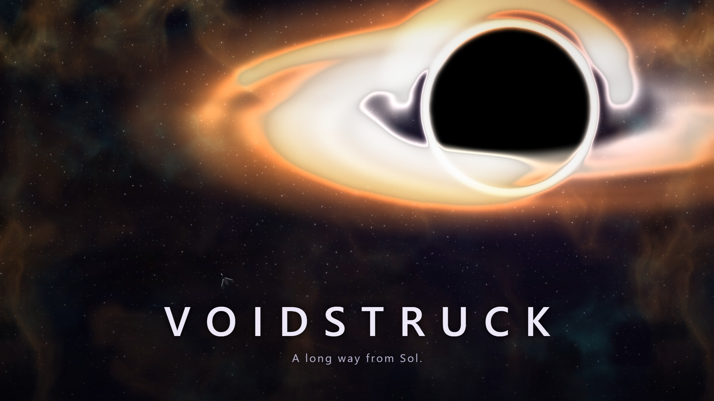

<!doctype html><html lang="en"><head><meta charset="utf-8"><meta name="viewport" content="width=device-width,initial-scale=1"><title>Voidstruck</title><meta name="description" content="A whole galaxy in one HTML file. A space exploration game you fly, land on and walk, made entirely by code as you play."><meta property="og:title" content="Voidstruck"><meta property="og:description" content="A whole galaxy in one HTML file. Fly, land and walk: no downloads, no images, no sound files."><meta property="og:type" content="website"><meta property="og:url" content="https://voidstruck.com/"><meta property="og:image" content="https://voidstruck.com/screenshots/black-hole.jpg"><meta name="twitter:card" content="summary_large_image"><style>:root{--ink: #ece8f7;--dim: #a09bb8;--line: rgba(255, 255, 255, .16);--panel: rgba(9, 7, 22, .8);--hot: #ff8a3d;--cool: #6fe0ff;--warn: #ff5a6a;--good: #8df0b0}html,body{margin:0;height:100%;background:#05040c;color:var(--ink);overflow:hidden;font:14px/1.45 system-ui,Segoe UI,sans-serif}#c{position:fixed;inset:0;width:100%;height:100%;display:block}#ui{position:fixed;inset:0;pointer-events:none;user-select:none}#err{position:fixed;inset:0;display:none;align-items:center;justify-content:center;padding:2em;text-align:center;font-size:18px;background:#05040c;z-index:9}#err.on{display:flex}.phone{max-width:520px;color:var(--dim);font-size:16px;line-height:1.5}.phone img{width:100%;border-radius:12px}.phone b{color:var(--ink)}.phone button{margin:10px 0}.phone a{color:var(--cool)}[hidden]{display:none!important}.hud>*{position:absolute;text-shadow:0 1px 3px #000}.bars{left:22px;bottom:20px;display:grid;grid-template-columns:auto 250px auto;gap:10px 12px;align-items:center;padding:16px 18px;font-size:12.5px;letter-spacing:.14em;color:var(--dim);background:#0807128c;border:1px solid var(--line);border-radius:14px;backdrop-filter:blur(6px)}.bars b{font-size:14px;letter-spacing:.02em;color:var(--ink);font-weight:600;min-width:62px;text-align:right}.bars b.wide{grid-column:2 / 4;text-align:left;font-size:17px}.bars .cr{color:#ffd76a}.bars .cr small{margin-left:10px;font-size:12px;font-weight:500;letter-spacing:.02em;color:var(--good)}.flash{inset:0;background:#fff;opacity:0;pointer-events:none}.flash.go{animation:flash 2.4s ease-out}@keyframes flash{0%{opacity:0}7%{opacity:1}40%{opacity:1}to{opacity:0}}.bar{height:10px;background:#ffffff1a;border-radius:5px;overflow:hidden}.bar i{display:block;height:100%;width:50%;background:linear-gradient(90deg,#3aa9d8,var(--cool));border-radius:5px;box-shadow:0 0 10px #6fe0ff80;transition:width .15s linear}.bar.hull i{background:linear-gradient(90deg,#3fae7a,var(--good));box-shadow:0 0 10px #78f0aa73}.bar.heat i{background:linear-gradient(90deg,#d8862a,var(--hot));box-shadow:0 0 10px #ffaa5073}.bar.alarm i{background:var(--warn);box-shadow:0 0 14px var(--warn);animation:alarm .5s ease-in-out infinite alternate}@keyframes alarm{to{opacity:.55}}.sol{top:16px;left:50%;transform:translate(-50%);text-align:center}.sol b{display:block;font-size:28px;font-weight:600;letter-spacing:.04em}.sol span{font-size:14px;color:var(--dim);letter-spacing:.08em}@keyframes beat{0%,to{opacity:1}50%{opacity:.45}}.sol u{animation:beat 2.2s ease-in-out infinite}.task.new{margin:6px -12px;padding:12px;border:1px solid var(--cool);border-radius:10px;box-shadow:0 0 22px #6fe0ff38}.task.new b:after{content:"NEW";margin-left:10px;padding:1px 7px;font-size:10px;letter-spacing:.14em;color:#05040c;background:var(--cool);border-radius:999px}.sol u{display:block;text-decoration:none;font-size:12.5px;letter-spacing:.12em;color:#9fe8ff;margin-top:6px;text-shadow:0 0 10px rgba(111,224,255,.5),0 1px 3px #000}.sol u:empty{display:none}.sol i{display:block;font-style:normal;font-size:14px;color:#a8f0c0;margin-top:4px;letter-spacing:.03em}.sol em{display:block;font-style:normal;font-size:13.5px;color:var(--cool);margin-top:3px}.cols{display:grid;grid-template-columns:1fr 1fr;gap:0 26px}.sheet h3{font-size:12px;letter-spacing:.14em;color:var(--dim);margin:16px 0 6px}.st{display:flex;align-items:center;gap:8px;margin:5px 0;font-size:13px}.st span{flex:1}.st i,.fine{font-style:normal;color:var(--dim);font-size:11px}.st b{min-width:30px;text-align:right;color:var(--cool);font-weight:600}.st button{padding:4px 10px;font-size:12px;white-space:nowrap}button:disabled{opacity:.35;cursor:default}.target{top:16px;right:22px;text-align:right;padding:13px 17px;background:#0807128c;border:1px solid var(--line);border-radius:12px;min-width:230px;backdrop-filter:blur(6px)}.target b{display:block;font-size:18px}.target span{display:block;font-size:13.5px;color:var(--dim)}.target em{display:block;font-style:normal;font-size:13.5px;margin-top:5px;color:var(--cool)}.target em.no{color:var(--hot)}.hdg,.ped{left:50%;transform:translate(calc(-50% + var(--lx, 0vh)),var(--ly, 0vh));color:#dfe6f2;text-align:center;text-shadow:none;font-variant-numeric:tabular-nums}.hdg{top:65.5vh;font-size:2.3vh;letter-spacing:.12em}.ped{top:87.2vh;display:grid;grid-template-columns:auto auto;gap:.5vh 1.2vh;align-items:baseline;justify-content:center}.ped b{font-size:2.3vh;font-weight:600;text-align:right}.ped span{font-size:1.15vh;letter-spacing:.16em;color:#8a90a0;text-align:left}.des .bars{transform:translate(var(--lx, 0vh),var(--ly, 0vh));background:none;border-color:transparent;backdrop-filter:none;grid-template-columns:auto 150px auto;padding:0 0 0 4px;bottom:16px}.aim{left:50%;top:50%;width:80px;height:80px;transform:translate(-50%,-50%)}.aim svg{display:block;overflow:visible}.aim circle{fill:none;stroke:#f2f5fa;stroke-width:1.2}.aim circle:first-child{fill:#f2f5fa;stroke:none;opacity:.8}.aim .back{opacity:0}.aim .ring{opacity:0;stroke-width:2;stroke-dasharray:188.5;transform:rotate(-90deg);transform-origin:40px 40px}.aim.on .back{opacity:.18}.aim.on .ring{opacity:1;filter:drop-shadow(0 0 4px #f2f5fa)}.surf .bars,.surf .target{backdrop-filter:none}.surf:not(.des) .bars,.surf .target{background:#080712b8}.mark{top:104px;transform:translate(-50%);text-align:center;color:#dfe6f2;font-size:13px;letter-spacing:.14em;white-space:nowrap}.mark i{display:block;width:1px;height:16px;margin:5px auto 0;background:#dfe6f2}.mark.side i{visibility:hidden}.mark.base{top:150px;color:#a8f0c0}.mark.base i{background:#a8f0c0}.mark.shard{top:196px;color:#9fe8ff}.mark.shard i{background:#9fe8ff}.msg{left:50%;bottom:36vh;transform:translate(-50%);width:min(760px,86vw);text-align:center;font-size:22px;line-height:1.45;letter-spacing:.03em;color:#fff;text-shadow:0 0 16px rgba(150,200,255,.6),0 1px 4px #000;transition:opacity 1.2s;pointer-events:none}.stack{left:50%;bottom:266px;transform:translate(-50%);width:min(820px,86vw);display:flex;flex-direction:column;align-items:center;gap:12px;pointer-events:none}.hud .stack>div{position:static;transform:none;width:auto;max-width:100%}.hud .stack>.fade{position:absolute;left:50%;bottom:0;transform:translate(-50%);width:max-content}.des .stack{bottom:auto;top:132px}.hud.des .stack>.fade{bottom:auto;top:0}.bars,.nav,.sol,.target,.quest,.dm,.esc,.mkey,.stack,.toast{zoom:var(--z, 1)}.quest{left:22px;top:48px;display:grid;grid-template-columns:auto auto;gap:8px 14px;align-items:center;padding:12px 16px;font-size:12px;letter-spacing:.14em;color:var(--dim);background:#08071299;border:1px solid var(--line);border-radius:12px;transition:opacity .6s}.pips{display:inline-flex;gap:4px;vertical-align:middle}.pips i{width:17px;height:5px;border-radius:3px;background:#ffffff26}.pips i.on{background:var(--cool);box-shadow:0 0 8px #6fe0ff99}.task{display:grid;grid-template-columns:150px auto 1fr;gap:4px 16px;align-items:center;padding:12px 0;border-top:1px solid var(--line)}.task b{letter-spacing:.12em;font-size:13.5px}.task em{font-style:normal;color:var(--dim);font-size:13px}.task.done em{color:var(--good)}.task small{grid-column:1 / 4;color:var(--dim);font-size:13px}.kinds span{display:inline-block;margin:0 8px 5px 0;padding:1px 9px;border:1px solid var(--line);border-radius:999px}.kinds span.on{border-color:var(--cool);color:var(--cool)}.none{color:var(--dim)}.nav{right:22px;bottom:20px;text-align:right;font-size:14px;color:var(--dim);letter-spacing:.08em}.nav canvas{display:block;width:200px;height:200px;margin:0 0 8px auto;border:1px solid var(--line);border-radius:50%;background:#05040c8c}.nav b{color:var(--ink);font-weight:600}.nav .tag{color:var(--cool);margin-left:8px}.nav .tag.off{color:var(--hot)}.hint,.toast{left:50%;transform:translate(-50%);max-width:min(620px,80vw);text-align:center;padding:9px 18px;background:var(--panel);border:1px solid var(--line);border-radius:999px;transition:opacity .4s}.hint{bottom:112px;max-width:min(820px,86vw);padding:13px 24px;color:#fff;font-size:17px;line-height:1.75;background:#0c0a1ae6;border:1.5px solid rgba(255,215,106,.7);border-radius:18px;box-shadow:0 0 28px #ffd76a29,0 6px 22px #00000080}.hint.how{position:static;transform:none;max-width:none;margin:0 0 16px;padding:12px 18px;font-size:14.5px;line-height:1.65;text-align:left;box-shadow:none}.hint.how b{color:#ffd76a;font-weight:600}.map .hint{position:absolute;left:50%;bottom:74px;transform:translate(-50%);text-align:center}.hint i{font-style:normal;font-size:12px;font-weight:600;letter-spacing:.16em;color:#ffd76a;margin-right:12px}.hint kbd{display:inline-block;min-width:26px;padding:0 7px;margin:0 2px;font:600 14px/24px inherit;font-family:inherit;text-align:center;color:#ffd76a;border:1px solid rgba(255,215,106,.6);border-radius:5px;background:#ffd76a14}.dm{left:22px;top:27vh;width:min(380px,42vw);padding:12px 16px 14px;background:#030e12d6;border:1px solid rgba(111,224,255,.5);border-left:3px solid var(--cool);border-radius:3px 12px 12px 3px;box-shadow:0 0 26px #6fe0ff29;font-family:ui-monospace,Consolas,Menlo,monospace;transition:opacity .6s;pointer-events:none}.dm span{display:block;margin-bottom:8px;font-size:10.5px;letter-spacing:.16em;color:var(--cool)}.dm span:before{content:"";display:inline-block;width:7px;height:7px;margin-right:8px;border-radius:50%;background:var(--cool);animation:alarm .7s ease-in-out infinite alternate}.dm p{margin:0;min-height:3em;font-size:15px;line-height:1.5;color:#dffaff;text-shadow:0 0 8px rgba(111,224,255,.45)}.dm button{display:block;margin:8px -4px -4px auto;padding:2px 6px;border:0;background:none;font:inherit;font-size:11px;letter-spacing:.1em;color:var(--cool);opacity:.6;cursor:pointer;pointer-events:auto}.dm button:hover{opacity:1;text-decoration:underline}.dm.fade button{pointer-events:none}.dm p:after{content:"\258d";margin-left:2px;color:var(--cool);animation:alarm .45s steps(1) infinite alternate}.row>label.tick{width:auto;display:flex;align-items:center;gap:8px;color:var(--ink);font-size:14px;letter-spacing:0;cursor:pointer}.tick input{width:17px;height:17px;accent-color:var(--cool)}.ver a{color:var(--cool);text-decoration:none;opacity:.85}.ver a:hover{color:var(--cool);opacity:1}.ver{line-height:1.9;margin:14px 0 0;text-align:center;color:var(--dim);font-size:12px;letter-spacing:.08em}.mkey{left:24px;bottom:236px;font-size:12.5px;color:var(--dim);letter-spacing:.06em;opacity:.8}.des .mkey{bottom:176px}.way{transform:translate(-50%,-50%);color:#ffd76a;font-size:13px;letter-spacing:.06em;white-space:nowrap;text-align:center;pointer-events:none}.way i{display:block;width:0;height:0;margin:0 auto 4px;border:7px solid transparent;border-left:13px solid #ffd76a;border-right:0}.way b{font-weight:500}.esc{left:22px;top:16px;font-size:12.5px;color:var(--dim);letter-spacing:.06em;opacity:.75}.esc b{display:inline-block;padding:0 6px;margin-right:6px;border:1px solid var(--line);border-radius:5px;font-weight:500;font-size:11.5px}.mkey b{display:inline-block;padding:0 6px;margin:0 6px 0 0;border:1px solid var(--line);border-radius:5px;font-weight:500;font-size:11.5px}.mkey b+b{margin-left:14px}.prompt{left:50%;bottom:212px;transform:translate(-50%);padding:9px 20px;border:1px solid var(--cool);border-radius:22px;background:var(--panel);color:var(--cool);font-size:16px;letter-spacing:.04em;transition:opacity .25s}.toast{top:118px;font-size:14.5px}.toast.bad{border-color:var(--warn);color:#ffd5da}.fade{opacity:0}.screen{position:absolute;inset:0;display:flex;align-items:center;justify-content:center;pointer-events:auto;background:radial-gradient(ellipse at center,#05040c80,#05040ce0)}.sheet{width:min(560px,92vw);max-height:94vh;overflow:auto;scrollbar-width:thin;scrollbar-color:rgba(255,255,255,.2) transparent;padding:26px 30px;background:var(--panel);border:1px solid var(--line);border-radius:14px}.sheet.wide{width:min(760px,94vw)}.sheet.duo{width:min(1320px,95vw)}@media(min-width:1100px){.duo>div:nth-child(3){display:grid;grid-template-columns:1fr 1fr;gap:0 40px}}.sheet.broad{width:min(1020px,95vw);max-height:none;overflow:visible}h1{margin:0;font-size:44px;font-weight:600;letter-spacing:.32em;text-align:center;text-indent:.32em}h2{margin:0 0 14px;font-size:18px;font-weight:600;letter-spacing:.14em}.tagline{text-align:center;color:var(--dim);margin:6px 0 22px;letter-spacing:.1em}.row{display:flex;gap:10px;align-items:center;margin:12px 0;flex-wrap:wrap}.row>label{width:64px;color:var(--dim);font-size:12px;letter-spacing:.12em}button{font:inherit;color:var(--ink);background:#ffffff0f;border:1px solid var(--line);border-radius:8px;padding:8px 14px;cursor:pointer}button:hover{background:#ffffff21}button:focus-visible{outline:2px solid var(--cool);outline-offset:2px}button.on{border-color:var(--cool);color:var(--cool);background:#6fe0ff1a}.start{background:radial-gradient(ellipse at center,#05040c40,#05040ccc);text-align:center}.start h1{font-size:64px}.start button.big{margin-top:26px;padding:15px 54px;font-size:18px;letter-spacing:.3em;text-indent:.3em}button.big{padding:12px 26px;font-size:16px;letter-spacing:.08em}button.danger:hover{border-color:var(--warn);color:var(--warn)}.ships button{display:flex;flex-direction:column;align-items:center;gap:2px;padding:8px 10px;font-size:12px}.ships canvas{width:62px;height:62px}.center{justify-content:center}@media(max-width:900px){.keys{grid-template-columns:repeat(2,1fr)!important}}.keys{display:grid;grid-template-columns:repeat(4,1fr);gap:14px 20px;margin-top:18px;padding-top:14px;border-top:1px solid var(--line);color:var(--dim);font-size:12.5px}.keys h4{margin:0 0 8px;font-size:11px;font-weight:500;letter-spacing:.14em;color:var(--dim)}.keys p{display:flex;align-items:center;gap:8px;margin:5px 0}.keys b{flex:none;min-width:46px;padding:2px 6px;text-align:center;border:1px solid var(--line);border-radius:5px;background:#ffffff0d;color:var(--ink);font-weight:600;font-size:11.5px}.tip{display:flex;width:max-content;margin:20px auto 2px;align-items:center;gap:9px;padding:9px 20px 9px 14px;border-radius:999px;font-size:14px;font-weight:600;color:#fff;text-decoration:none;background:linear-gradient(120deg,#ff7aa8,#ffb05c);box-shadow:0 4px 18px #ff7aa859;animation:bob 3.2s ease-in-out infinite}.tip:hover{filter:brightness(1.1);box-shadow:0 6px 24px #ff7aa88c}.tip:focus-visible{outline:2px solid #fff;outline-offset:3px}.tip svg{width:24px;height:24px}.tip .heart{transform-origin:10px 13.5px;animation:beat 1.3s ease-in-out infinite}@keyframes bob{50%{transform:translateY(-3px)}}@keyframes beat{0%,60%,to{transform:scale(1)}30%{transform:scale(1.3)}}@media(prefers-reduced-motion:reduce){.tip,.tip .heart{animation:none}}.note{color:var(--hot);font-size:13px;text-align:center;margin:10px 0 0}input[type=range]{flex:1;accent-color:var(--cool)}.list{margin:0;padding:0;list-style:none}.list li{padding:9px 0;border-top:1px solid var(--line)}.list small{display:block;color:var(--dim)}.ship{display:grid;grid-template-columns:repeat(3,1fr);gap:8px}.ship li{position:relative;padding:9px 12px;border:1px solid var(--line);border-radius:8px}.ship .pips{position:absolute;right:12px;top:17px}.list .rare{color:var(--hot)}.totals{display:flex;gap:26px;margin-bottom:14px}.totals b{display:block;font-size:24px;font-weight:600}.totals span{color:var(--dim);font-size:12px;letter-spacing:.1em}.map{position:absolute;inset:0;pointer-events:auto;background:#05040c}.map canvas{position:absolute;inset:0;width:100%;height:100%;cursor:grab}.map .info{position:absolute;left:22px;bottom:20px;padding:12px 16px;background:var(--panel);border:1px solid var(--line);border-radius:10px;min-width:240px;pointer-events:none}.map .info b{font-size:16px;display:block}.map .info span{display:block;color:var(--dim);font-size:13px}.map .info em{display:block;font-style:normal;margin-top:6px;color:var(--cool)}.map .info em.no{color:var(--hot)}.map .top{position:absolute;left:22px;top:16px;color:var(--dim);letter-spacing:.08em;pointer-events:none}.map .key{position:absolute;right:22px;top:14px;color:var(--dim);font-size:12.5px;pointer-events:none}.map .key p{margin:5px 0}.map .key i{display:inline-block;width:9px;height:9px;margin-right:10px;vertical-align:-2px;border:2px solid #c9ccd6;border-radius:50%}.map .key p:nth-child(2) i{width:0;height:0;border:solid transparent;border-width:0 6px 10px;border-bottom-color:#ff5a4a;border-radius:0}.map .key p:nth-child(3) i{border:1.5px solid #ffb35a}.map .key p:nth-child(4) i{border:1.5px dashed #9fe8ff}.map .top b{display:block;color:var(--ink);font-size:18px;letter-spacing:.14em}.map .help{position:absolute;right:22px;bottom:20px;color:var(--dim);font-size:12.5px;text-align:right;pointer-events:none}</style></head><body><canvas id="c"></canvas><div id="ui"></div><div id="err"></div><script>const $b="exponentialRampToValueAtTime",$g="linearRampToValueAtTime",$h="setValueAtTime",$j="setTargetAtTime",$k="addEventListener",$m="textContent",$p="createOscillator",$q="connect",$v="frequency",$w="systemRef";(()=>{var rf=Object.getOwnPropertyNames,Kt=(e,t,n)=>function(){if(n)throw n[0];try{return e&&(t=(0,e[rf(e)[0]])(e=0)),t}catch(s){throw n=[s],s}};function dt(e,t,n=0,o=0){let s=(e|0)^2654435769;return s=Math.imul(s^(t|0),2246822507),s^=s>>>15,s=Math.imul(s^(n|0),3266489909),s^=s>>>13,s=Math.imul(s^(o|0),668265263),s^=s>>>16,s=Math.imul(s,374761393),s^=s>>>15,s>>>0}function Nt(e){let t=e>>>0;return()=>{t=t+1831565813>>>0;let n=t;return n=Math.imul(n^n>>>15,n|1),n^=n+Math.imul(n^n>>>7,n|61),((n^n>>>14)>>>0)/4294967296}}var hs=Kt({"src/gen/rng.js"(){}});function cr(e){const t=Nt(e),n=t()<.6?2:3;let o="";for(let s=0;s<n;s++)o+=ya[t()*ya.length|0]+va[t()*va.length|0];return o+=ba[t()*ba.length|0],o[0].toUpperCase()+o.slice(1)}function lf(e,t){if(t==="sol")return"Sol";const[n,o,s]=t.split(":").map(Number),a=Math.floor(n/Rs),r=Math.floor(o/Rs),l=(n-a*Rs)*Rs+(o-r*Rs);return cr(dt(e,a,r,22434))+" "+(s*Rs*Rs+l+1)}function cf(e,t){return e+" "+String.fromCharCode(98+t)}function ff(e,t){const n=dt(e,t,32353);return xa[n%xa.length].replace("%s",cr(dt(e,t,32354)))}var ya,va,ba,xa,Rs,fr=Kt({"src/gen/names.js"(){hs(),ya=["v","k","s","t","r","m","n","l","d","z","th","sh","kh","br","tr","vr","h","q","y","g","p","f","dr",""],va=["a","e","i","o","u","ae","ia","ou"],ba=["","","","n","r","s","l","th","x","k"],xa=["The %s Reach","%s Drift","The %s Veil","%s Expanse","The %s Shoals","%s Deep","The %s Lantern","%s Hollow","The %s Verge","%s Tide"],Rs=8}});function df(e,t){const n=Math.hypot(e,t);if(n>=ga)return 0;const o=.5+.5*Math.cos(yr*(Math.atan2(t,e)-vr*Math.log(1+n/br))),s=(Gn+(1-Gn)*o)/xr,a=Math.min(1,(ga-n)/wr);return pr*Math.exp(-n/mr)*s*a}function uf(e,t,n){const o=t/ka,s=n/ka,a=Math.floor(o),r=Math.floor(s),l=o-a,i=s-r,f=(h,y)=>(dt(e,h,y,49573)>>>0)/4294967296,c=l*l*(3-2*l),d=i*i*(3-2*i),u=(f(a,r)*(1-c)+f(a+1,r)*c)*(1-d)+(f(a,r+1)*(1-c)+f(a+1,r+1)*c)*d;return(.22+2.3*u*u)/1.05}function zn(e,t,n){const o=Math.floor(t/Fn),s=Math.floor(n/Fn);let a=1/0,r=0,l=0;for(let h=s-1;h<=s+1;h++)for(let y=o-1;y<=o+1;y++){const b=dt(e,y,h,20065),m=(y+(b&65535)/65536)*Fn,w=(h+(b>>>16)/65536)*Fn,E=(m-t)*(m-t)+(w-n)*(w-n);E<a&&(a=E,r=y,l=h)}const i=dt(e,r,l,20066),f=Nt(i),c=f()*360,d=.7+f()*.6,u=[];for(let h=0;h<ho.length;h++)u.push(h<po?.5+f()*1.3:.5+f());return{id:i,name:ff(e,i),hue:c,densityMul:d,typeBias:u}}function dr(){return{id:"sol",x:it.x,y:it.y,type:"yellow",scoopable:!0,name:"Sol"}}function ur(e,t,n){const o=(t+.5)*Bt,s=(n+.5)*Bt,a=[],r=df(o,s);if(r>0){const l=zn(e,o,s),i=Nt(dt(e,t,n,24263)),f=Math.floor(r*l.densityMul*uf(e,o,s)*Bt*Bt+i());let c=0;for(let d=0;d<Bn.length;d++)c+=Bn[d]*l.typeBias[d];for(let d=0;d<f;d++){const u=(t+i())*Bt,h=(n+i())*Bt;let y=i()*c,b=0;for(;b<Bn.length-1&&(y-=Bn[b]*l.typeBias[b])>=0;)b++;b>=po&&Math.abs(Math.hypot(u-it.x,h-it.y)-yn)<=hr+Bt&&(b=0);const m=t+":"+n+":"+d;a.push({id:m,x:u,y:h,type:ho[b],scoopable:b<po,name:lf(e,m)})}}return t===Math.floor(it.x/Bt)&&n===Math.floor(it.y/Bt)&&a.push(dr()),a}function Ds(e,t,n,o){const s=[],a=o*o,r=Math.floor((t-o)/Bt),l=Math.floor((t+o)/Bt),i=Math.floor((n-o)/Bt),f=Math.floor((n+o)/Bt);for(let c=i;c<=f;c++)for(let d=r;d<=l;d++)for(const u of ur(e,d,c))(u.x-t)*(u.x-t)+(u.y-n)*(u.y-n)<=a&&s.push(u);return s}function Ct(e,t){if(t==="sol")return dr();const n=/^(-?\d+):(-?\d+):(\d+)$/.exec(t),o=n&&ur(e,+n[1],+n[2])[+n[3]];if(!o||o.id!==t)throw new Error("No such star: "+t);return o}function wa(e,t=0){const n=it.x+Math.cos(t)*yn,o=it.y+Math.sin(t)*yn,s=a=>Math.hypot(a.x-n,a.y-o);for(let a=16;;a*=2){const r=Ds(e,n,o,a).filter(i=>mn(e,i));if(!r.length)continue;const l=i=>Ds(e,i.x,i.y,10).length-s(i)*.01;return r.reduce((i,f)=>l(i)>=l(f)?i:f)}}function mn(e,t){if(t.id==="sol")return!0;const[n,o,s]=t.id.split(":");return(dt(e,+n,+o,+s+22439)>>>0)%10===0}var ho,po,Bn,hr,ga,Bt,it,yn,hf,pr,mr,yr,vr,br,Gn,xr,wr,Fn,ka,Lt=Kt({"src/gen/galaxy.js"(){hs(),fr(),ho=["red","orange","yellow","white","blue","whiteDwarf","neutron","blackHole"],po=5,Bn=[40,22,14,8,3,7,4,2],hr=40,ga=14400,Bt=4,it={x:7920,y:0},yn=2520,hf={x:it.x+yn,y:0},pr=.5,mr=12e3,yr=4,vr=5.5,br=5040,Gn=.14,xr=Gn+(1-Gn)*.5,wr=60,Fn=600,ka=26}});function gr(e,t,n){const o=qn[e],s=o.radius*ps(t,.85,1.15);return{type:e,radius:s,mass:o.mass,x:n,y:0,coronaRadius:s*o.corona}}function pf(e,t,n){const o=n?1+(e()*4|0):e()<.35?1:0,s=[];let a=t.radius*1.9;for(let r=0;r<o;r++){const l=t.radius*ps(e,.12,n?.2:.3);a+=l+t.radius*ps(e,.5,1),s.push({radius:l,orbitRadius:a,orbitPeriod:Math.round(60*ps(e,60,140)*Math.pow(a/t.radius/2,1.5)),phase:e()*Math.PI*2,seed:dt(t.seed,r,12291)}),a+=l}return s}function mf(e,t,n,o){const s=Er,a=t==="gasGiant"||t==="ringedGiant",r=s.size[a?o>62?4:3:o<13?0:o<18?1:2],l=t==="lava"?"scorching":t==="ice"?e()<.5?"frozen":"cold":t==="ocean"||t==="living"?"temperate":s.temperature[n===0?3+(e()*2|0):n===1?1+(e()*3|0):e()*2|0],i=a?"crushing":t==="toxic"?"toxic":t==="living"?"breathable":t==="ocean"?Os(e,["breathable","breathable","dense","thin"]):t==="lava"?Os(e,["toxic","dense","thin"]):Os(e,["none","none","thin","thin","dense"]),f=t==="ocean"?Os(e,["seas","seas","global ocean"]):t==="ice"?"ice":t==="living"?"seas":a||t==="lava"?"none":Os(e,["none","none","traces","ice"]),c=e(),d=t==="living"?c<.25?"intelligent":"complex":t==="ocean"?c<.05?"intelligent":c<.3?"complex":c<.7?"simple":"none":(t==="desert"||t==="ice"||t==="toxic")&&c<.12?"simple":"none";return{size:r,temperature:l,atmosphere:i,water:f,life:d}}function kr(e){return Math.round(60*900*Math.pow(e/1e3,1.5))}function yf(e){const t={type:"yellow",radius:110,mass:1,x:0,y:0,coronaRadius:242},n=[];let o=520;return Cr.forEach(([s,a,r,l,i],f)=>{const c=Nt(dt(1281,f)),d=dt(1281,f,1),u={id:"sol/"+f,name:s,type:a,seed:d,radius:r,orbitRadius:0,orbitPeriod:0,phase:c()*Math.PI*2,rings:a==="ringedGiant",rare:!1,traits:{size:i[0],temperature:i[1],atmosphere:i[2],water:i[3],life:i[4]},moons:[]};let h=r*1.9;for(let b=0;b<l;b++){const m=r*(l>1?.14:.27);h+=m+r*.6,u.moons.push({luna:f===2,radius:m,orbitRadius:h,orbitPeriod:Math.round(5400*Math.pow(h/r/2,1.5)),phase:c()*Math.PI*2,seed:dt(d,b,12291)}),h+=m}const y=u.moons.length?h:r;o+=y,u.orbitRadius=o,u.orbitPeriod=kr(o),o=o*1.2+y+110,n.push(u)}),{ref:e,stars:[t],planets:n,station:Mr(0,e,242),radius:n.at(-1).orbitRadius+1200}}function Mr(e,t,n){if(!mn(e,t))return null;const o=dt(e,t.x*1e3|0,t.y*1e3|0,22440)>>>0,s=o%628/100,a=n*1.25+110;return{x:Math.cos(s)*a,y:Math.sin(s)*a,radius:34,kind:(o>>>10)%6,lights:(o>>>14)%4}}function Ls(e,t){if(t.id==="sol")return yf(t);const[n,o,s]=t.id.split(":").map(Number),a=dt(e,n,o,s+37120),r=Nt(a),l=[gr(t.type,r,0)];if(r()<.2){const b=Os(r,Ar),m=qn[b];l.push(gr(b,r,l[0].coronaRadius+m.radius*m.corona*1.15+ps(r,80,260)))}const i=qn[t.type].heat+(l[1]?qn[l[1].type].heat*.4:0),f=Rr.has(t.type);let c=r()*Ma.reduce((b,m)=>b+m,0),d=0;for(;d<8&&(c-=Ma[d])>=0;)d++;f&&(d=Math.min(d,4));const u=l.reduce((b,m)=>Math.max(b,Math.abs(m.x)+m.coronaRadius),0),h=[];let y=u*1.25+220;for(let b=0;b<d;b++){const m=dt(a,b,37376),w=Nt(m),E=(y+200)/(900*i),p=E<1?0:E<2.6?1:2;let x=Os(w,Tr[p]);w()<Sr&&(x=p===1&&w()<.6?"living":"crystal");const M=x==="gasGiant"||x==="ringedGiant",z=M?ps(w,44,80):ps(w,10,24),X={id:t.id+"/"+b,name:cf(t.name,b),type:x,seed:m,radius:z,orbitRadius:0,orbitPeriod:0,phase:w()*Math.PI*2,rings:x==="ringedGiant"||x==="gasGiant"&&w()<.15||x==="ice"&&w()<.05,rare:x==="crystal"||x==="living",traits:null,moons:[]};X.traits=mf(w,x,p,z),X.moons=pf(w,X,M);const W=X.moons.length?X.moons.at(-1).orbitRadius+X.moons.at(-1).radius:z;X.orbitRadius=y+W+ps(w,40,200),X.orbitPeriod=kr(X.orbitRadius),y=(X.orbitRadius+W)*ps(w,1.1,1.32)+90,h.push(X)}return{ref:t,stars:l,planets:h,station:Mr(e,t,u),radius:(h.length?h.at(-1).orbitRadius:u)+1200}}function Mt(e,t,n){const o=e.phase+t/e.orbitPeriod*Math.PI*2;return n.x=Math.cos(o)*e.orbitRadius,n.y=Math.sin(o)*e.orbitRadius,n}var Er,qn,Ar,Ma,Sr,Tr,Os,ps,Cr,Rr,mo,yo,Gt=Kt({"src/gen/system.js"(){hs(),fr(),Lt(),Er={size:["tiny","small","medium","large","giant"],temperature:["frozen","cold","temperate","hot","scorching"],atmosphere:["none","thin","breathable","dense","toxic","crushing"],water:["none","ice","traces","seas","global ocean"],life:["none","simple","complex","intelligent"]},qn={red:{radius:60,mass:.5,corona:2.2,heat:.6},orange:{radius:90,mass:.8,corona:2.2,heat:.85},yellow:{radius:110,mass:1,corona:2.2,heat:1},white:{radius:140,mass:1.6,corona:2.2,heat:1.4},blue:{radius:220,mass:4,corona:2.2,heat:2.2},whiteDwarf:{radius:14,mass:1,corona:5,heat:.4},neutron:{radius:8,mass:2.5,corona:16,heat:.5},blackHole:{radius:30,mass:8,corona:5,heat:.2}},Ar=["red","red","orange","whiteDwarf"],Ma=[4,8,14,18,18,14,10,8,6],Sr=.02,Tr=[["lava","lava","rocky","desert","toxic"],["ocean","ocean","rocky","desert","toxic","gasGiant"],["ice","ice","rocky","gasGiant","gasGiant","ringedGiant"]],Os=(e,t)=>t[e()*t.length|0],ps=(e,t,n)=>t+e()*(n-t),Cr=[["Mercury","rocky",10,0,["tiny","scorching","none","none","none"]],["Venus","toxic",17,0,["small","scorching","toxic","none","none"]],["Earth","ocean",18,1,["medium","temperate","breathable","seas","intelligent"]],["Mars","desert",13,2,["small","cold","thin","ice","none"]],["Jupiter","gasGiant",78,4,["giant","cold","crushing","none","none"]],["Saturn","ringedGiant",66,3,["giant","cold","crushing","none","none"]],["Uranus","gasGiant",48,2,["large","frozen","crushing","none","none"]],["Neptune","gasGiant",46,1,["large","frozen","crushing","none","none"]]],Rr=new Set(["whiteDwarf","neutron","blackHole"]),mo=(e,t)=>t/60*(.006+e.seed%97/97*.012)+e.phase,yo=(e,t)=>e.seed%101/101+t/60*.004}}),Dr,Ea,Ne,Lr,Or,Aa,Pr,Ir,jr,_r,zr,vo,Br,Gr,Fr,qr,Nr,Hr,Vr,bo,$r,Ur,Sa,Yr,Wr,Kr,Xr,Ta,Jr,Qr,Zr,ei,ti,si,ni,oi,ai,ri,Ca,Ra,ii,li,ci,fi,di,xo,Da,La,ui,hi,pi,mi,yi,vi,bi,xi,wi,Oa,ns,wo,Pa,gi,ki,Mi,Ei,Ai,Si,Ti,Ci,Ri,Di,Ia,ja,Li,Pe,mt,ms,vn,go,bn,ko,Oi,Pi,Ii,Mo,_a,za,Ba,ji,_i,Ga,zi,Fa,Bi,Gi,Fi,qa,qi,Nn,Na,Ni,Hi,Vi,ut=Kt({"src/rules/constants.js"(){Dr=1,Ea=32,Ne=1/60,Lr=.6,Or=5,Aa=10,Pr=7,Ir=7,jr=2,_r=25,zr=45,vo=120,Br=1.5,Gr=4,Fr=2,qr=351e3,Nr=.25,Hr=1,Vr=.7*Aa,bo=1.5,$r=5,Ur=130,Sa=1.6,Yr=.3,Wr=3,Kr=.12,Xr=64,Ta=3e3,Jr=4,Qr=1.4,Zr=3.5,ei=90,ti=1.6,si=.05,ni=.25,oi=.445,ai=.25,ri=.02,Ca=1.5,Ra=.8,ii=.15,li=.01,ci=.5,fi=30,di={red:{fuel:.6,heat:.6},orange:{fuel:.8,heat:.8},yellow:{fuel:1,heat:1},white:{fuel:1.3,heat:1.3},blue:{fuel:1.8,heat:1.8},whiteDwarf:{fuel:0,heat:1.2},neutron:{fuel:0,heat:2},blackHole:{fuel:0,heat:.5}},xo=5,Da=4,La=6,ui=80,hi=160,pi=180,mi=60,yi=500,vi=60,bi=60,xi=130,wi=6,Oa=[400,1e3,2400],ns={engine:[1,1.15,1.3,1.5],range:[Ea,44,56,70],shield:[1,.85,.7,.55],scoop:[1,1.3,1.7,2.2],hold:[8,12,16,24],hull:[1,.8,.65,.5]},wo=21,Pa=9,gi=2.4,ki=3,Mi=75,Ei=28,Ai=54,Si=65,Ti=115,Ci=80,Ri=10,Di=.1,Ia=1.5,ja=30,Li=.2,Pe=6e3,mt=260,ms=7,vn=.042,go=.035,bn=520,ko=800,Oi=15,Pi=120,Ii=7.5,Mo=1,_a=.7,za=.12,Ba=25,ji=5,_i=70,Ga=.39,zi=120,Fa=75,Bi=170,Gi=1,Fi=.95,qa=45,qi=.35,Nn=2,Na=150,Ni=250,Hi=80,Vi=2}});function Eo(e,t){if(t.id==="sol"||mn(e,t))return 0;const[n,o,s]=t.id.split(":"),a=(dt(e,+n,+o,+s+55878)>>>0)%1e3/1e3,r=.12+.4*Math.min(1,Math.max(0,1-Math.hypot(t.x-it.x,t.y-it.y)/yn));return a>=r?0:a<r*.6?1:a<r*.9?2:3}function $i(e){e.raiders.length=0,e.shots.length=0,e.wrecks.length=0,e.fireCool=0;const t=e[$w],n=e.log.cleared[t.id]?0:Eo(e.seed,t);for(let o=0;o<n;o++){const s=Math.PI*(.62+.38*o),a=850+160*o;e.raiders.push({x:e.ship.x+Math.cos(s)*a,y:e.ship.y+Math.sin(s)*a,vx:0,vy:0,angle:s+Math.PI,hull:ki,cool:60+25*o})}}function vf(e,t){const{ship:n,raiders:o,shots:s,wrecks:a,events:r,system:l}=e;for(const f of o){const c=n.x-f.x,d=n.y-f.y,u=Math.hypot(c,d)||1;let h=Math.atan2(d,c),y=u>Ei?1:-.6;for(const w of l.stars){const E=f.x-w.x,p=f.y-w.y;Math.hypot(E,p)<w.coronaRadius*1.2&&(h=Math.atan2(p,E),y=1)}f.angle=Ui(f.angle,h,gi*Ne),f.vx+=Math.cos(f.angle)*Pa*y*Ne,f.vy+=Math.sin(f.angle)*Pa*y*Ne,f.vx*=.992,f.vy*=.992;const b=Math.hypot(f.vx,f.vy);b>wo&&(f.vx*=wo/b,f.vy*=wo/b),f.x+=f.vx*Ne,f.y+=f.vy*Ne,f.cool>0&&f.cool--;let m=h-f.angle;m-=Math.round(m/(2*Math.PI))*2*Math.PI,f.cool<=0&&u<Mi&&Math.abs(m)<.18&&(Ha(e,f,Si,!1),f.cool=Ai,r.push("raiderShot"))}e.fireCool>0&&e.fireCool--,t.fire&&e.fireCool<=0&&!n.cruiseOn&&(Ha(e,n,Ti,!0),e.fireCool=Ri,r.push("shot"));let i=!1;for(let f=s.length-1;f>=0;f--){const c=s[f];c.x+=c.vx*Ne,c.y+=c.vy*Ne;let d=--c.life<=0;if(!d&&!c.mine&&Math.hypot(c.x-n.x,c.y-n.y)<Ia&&(d=!0,n.hull-=Di*ns.hull[n.up[5]],r.push("hullHit"),n.hull<=0&&(i=!0)),!d&&c.mine)for(let u=o.length-1;u>=0;u--){const h=o[u];if(!(Math.hypot(c.x-h.x,c.y-h.y)>=Ia*1.6)){if(d=!0,--h.hull>0){r.push("raiderHit");break}a.push({x:h.x,y:h.y,vx:h.vx*.3,vy:h.vy*.3,value:120+(dt(e.seed,e.tick,u)>>>0)%181}),o.splice(u,1),r.push("raiderDown"),o.length||(e.log.cleared[e[$w].id]=1);break}}d&&s.splice(f,1)}for(const f of a)f.x+=f.vx*Ne,f.y+=f.vy*Ne,f.vx*=.995,f.vy*=.995;if(t.scan&&e.dock.armed)for(let f=0;f<a.length;f++){const c=a[f];if(!(Math.hypot(c.x-n.x,c.y-n.y)>ja)){e.credits+=c.value,e.lastSalvage=c.value,a.splice(f,1),e.dock.armed=!1,r.push("salvage");break}}return i}var Ui,Ha,Ao=Kt({"src/rules/combat.js"(){Lt(),hs(),ut(),Ui=(e,t,n)=>{let o=t-e;return o-=Math.round(o/(2*Math.PI))*2*Math.PI,e+(o>n?n:o<-n?-n:o)},Ha=(e,t,n,o)=>{const s=Math.cos(t.angle),a=Math.sin(t.angle);e.shots.push({x:t.x+s*1.4,y:t.y+a*1.4,vx:t.vx+s*n,vy:t.vy+a*n,life:Ci,mine:o})}}});function bf(){return{aimX:0,aimY:0,thrust:0,strafe:0,boost:!1,toggleAssist:!1,toggleCruise:!1,scan:!1,fire:!1,mx:0,my:0,steer:1,jump:!1,cancel:!1,tow:!1,exit:!1,build:!1,held:!1,lookX:0,lookY:0,targetId:null}}function xn(e,t){const n=Ls(e.seed,t),o=e.ship;e[$w]=t,e.system=n,o.x=-n.stars[0].coronaRadius*ti,o.y=0,o.vx=0,o.vy=0,o.angle=Math.PI,o.cruise=0,o.cruiseOn=!1,e.arrival.x=o.x,e.arrival.y=o.y,e.arrival.fuel=o.fuel,e.log.visited[t.id]=1,t.scoopable&&(e.log.lastScoopable=t.id);const s=e.near;s.dist=1/0,s.kind="",s.index=-1,s.drop=!1,s.frameDist=1/0,s.fvx=0,s.fvy=0,s.skim=!1,s.touch=-1,e.descent=null,e.entry=0,e.terrain=null,e.mode="flight",s.scoop=0,s.scooping=!1,s.burnTicks=0,$i(e)}function Yi(e,t=0,n=!1){const o={seed:e,tick:0,mode:"flight",systemRef:null,system:null,ship:{x:0,y:0,vx:0,vy:0,angle:0,fuel:1,hull:1,heat:0,assist:!0,cruise:0,cruiseOn:!1,up:[0,0,0,0,0,0]},credits:0,cargo:[0,1,2,3,4,5].map(()=>({n:0,x:0,y:0})),data:{common:0,rare:0},job:null,dock:{armed:!0},raiders:[],shots:[],wrecks:[],fireCool:0,lastSalvage:0,hardcore:!1,arrival:{x:0,y:0,fuel:1},jump:{targetId:null,target:null,phase:"idle",t:0},scan:{planetId:null,t:0},log:{visited:{},scanned:{},lastScoopable:null,jumps:0,reachedSol:0,rareFinds:0,delivered:0,cleared:{},lastStation:null,landed:{},bases:{}},near:{dist:1/0,kind:"",index:-1,drop:!1,frameDist:1/0,fvx:0,fvy:0,fnx:0,fny:0,frameP:-1,frameM:-1,skim:!1,scoop:0,scooping:!1,burnTicks:0,station:!1,touch:-1,moonOf:-1,touchMoon:-1},descent:null,entry:0,terrain:null,story:{shown:[],shards:{},taken:{},found:{},holes:{},done:0,opening:0,angle:t,home:n?1:0,early:0,log:[],logTick:0},notes:[],inbox:[],fate:null,events:[]};if(n){xn(o,Ct(e,"sol"));const s=o.system.planets[2],a={x:0,y:0};Mt(s,0,a),o.ship.x=a.x-s.radius-60,o.ship.y=a.y,o.arrival.x=o.ship.x,o.arrival.y=o.ship.y,o.story.opening=1}else xn(o,wa(e,t));return o.raiders.length=0,o}var wn=Kt({"src/rules/state.js"(){Lt(),Gt(),ut(),Ao()}});function xf(e){const t=e.story,n=o=>Ka[o].filter(s=>s.startsWith("> ")).map(s=>[s.slice(2),"on Earth, at home"]);return[...t.home?[[Xa,"from home, before the flight"]]:[],...t.shown.map(o=>[It[o].text,It[o].at]),...t.early?n("early"):[],...t.done?n("inTime"):[]]}function Va(e){if(e.ref.type!=="neutron")return null;for(const t of Un){const n=e.planets.find(o=>o.type===t);if(n)return n}return null}function Ht(e){const t=e.story;return{shards:gn.filter(n=>t.shards[n]).length,holes:Math.min(bt,Object.keys(t.holes).length),bases:Math.min(bt,Object.keys(e.log.bases).length)}}function wf(e,t){const n=e.story,o=e0(e);if(n.opening)return;n.logTick=Math.max(n.logTick||0,e.tick+720);let s=-1;for(let r=0;r<It.length;r++)!n.shown.includes(r)&&(s<0||It[r].at>It[s].at)&&(s=r);s>=0&&o<=It[s].at&&(n.shown.push(s),e.inbox.push(It[s].text),e.events.push(It[s].quest?"questStart":"message"));const a=Math.min(Mn,Object.keys(e.log.bases).length);t&&a&&(e.lastPay=a*$n,e.credits+=e.lastPay,e.events.push("basePay"))}function Wi(e,t){if(e.story.holes[e[$w].id])return null;for(const n of e.system.stars)if(n.type==="blackHole"&&Math.hypot(e.ship.x-n.x,e.ship.y-n.y)-n.radius<t)return n;return null}function Ki(e){const t=e.story,n=Ps(e,"holes")&&!t.holes[e[$w].id]&&e.system.stars.some(s=>s.type==="blackHole"),o=Ps(e,"shards")?e.system.planets.filter(s=>En(e.system,s)&&!t.shards[s.type]&&!t.taken[s.id]):[];return{hole:n,shards:o}}function $a(e,t){const n=Ht(e)[t];n>=1&&n<=bt&&e.inbox.push(Ja[t][n-1])}function gf(e){e.story.holes[e[$w].id]=1,$a(e,"holes"),e.data.rare++,e.log.rareFinds=(e.log.rareFinds||0)+1,e.events.push("holeScanned")}function Hn(e,t){if(t.moon>=0||!e.terrain)return null;const n=e.system.planets[t.planet];if(!En(e.system,n)||e.story.taken[n.id])return null;if(t.shardAt)return t.shardAt;const o=(r,l)=>e.terrain(r/Pe,l/(Pe/2))*mt,s=(e.terrain.sea||0)*mt+2;let a=null;for(let r=0;r<12;r++){const l=dt(n.seed,r,81)/4294967296*Pe,i=600+dt(n.seed,r,82)/4294967296*1800,f=o(l,i);if(a||(a=[l,i]),f>s&&Math.abs(o(l+4,i)-o(l-4,i))+Math.abs(o(l,i+4)-o(l,i-4))<3)return t.shardAt=[l,i]}return t.shardAt=a}function kf(e,t){const n=e.system.planets[t.planet],o=!e.story.shards[n.type];e.story.shards[n.type]=1,e.story.taken[n.id]=1,o&&$a(e,"shards"),delete e.story.found[n.id],t.shardAt=null,e.events.push("shard")}function Mf(e){const t=e.story;if(!(t.opening||e.fate||e.over||e.inbox.length||e.mode==="transit"||e.tick<(t.logTick||0))){for(const[n,o,s]of Do)if(!t.log.includes(n)&&s(e)){t.log.push(n),t.logTick=e.tick+ol,e.notes.push(o);return}}}function So(e,t=e.system){t.ref.id==="sol"&&t.planets[2]&&(t.planets[2].dead=!e.story.opening&&!e.story.done&&rs(e)==="tooLate")}function Ua(e,t){if(t.moon>=0||e.system.planets[t.planet].id!==Ws||!e.terrain)return null;if(t.cities)return t.cities;const n=e.system.planets[t.planet].seed,o=(l,i)=>e.terrain(l/Pe,i/(Pe/2))*mt,s=(e.terrain.sea||0)*mt+3,a=[];let r=null;for(let l=0;l<28;l++){const i=dt(n,l,91)/4294967296*Pe,f=450+dt(n,l,92)/4294967296*2100;r||(r=[i,f,l]),o(i,f)>s&&Math.abs(o(i+30,f)-o(i-30,f))+Math.abs(o(i,f+30)-o(i,f-30))<18&&a.push([i,f,l])}return t.cities=a.length?a:[r]}function Ya(e,t,n,o){const s=Ua(e,t);if(!s)return null;let a=null,r=1/0;for(const l of s){const i=l[0]+Math.round((n-l[0])/Pe)*Pe,f=Math.hypot(i-n,l[1]-o);f<r&&(r=f,a=[i,l[1],l[2]])}return a}function Vn(e,t){if(t.home)return t.home;const n=Ua(e,t);if(!n)return null;const o=Ya(e,t,t.x,t.z),s=(l,i)=>e.terrain(l/Pe,i/(Pe/2))*mt,a=(e.terrain.sea||0)*mt+3;let r=null;for(let l=0;l<8&&!r;l++){const i=l*.7853982+o[2],f=o[0]+Math.cos(i)*Qa,c=o[1]+Math.sin(i)*Qa,d=n.every(u=>{const h=u[0]+Math.round((f-u[0])/Pe)*Pe;return Math.hypot(h-f,u[1]-c)>(as+4)*os});(l===7||d&&s(f,c)>a&&Math.abs(s(f+20,c)-s(f-20,c))+Math.abs(s(f,c+20)-s(f,c-20))<9)&&(r=[f,c])}return t.home=[r[0]-Math.floor(r[0]/Pe)*Pe,r[1],o[2]]}function Xi(e,t,n){const o=Math.hypot(t,n);if(o>as+.3||!t&&!n)return null;if((t%3+3)%3===0||(n%3+3)%3===0)return"s";const s=dt(e,t+40,n+40,93);return s%100>=92-o*6?null:{v:Math.min(3,(1.15-o/(as+1.5))*4*(.45+(s>>>8)%100/180)|0),big:.8+(s>>>16)%100/250,shape:(s>>>24)%3}}function Ef(e){if(e.story.opening||e.story.done||e.fate)return;const t=rs(e),n=Ka[t];t==="inTime"&&(e.story.done=1),t==="early"&&(e.story.early=1),e.inbox.push(...n),e.fate={kind:t,t:Math.round(n.reduce((o,s)=>o+(s.startsWith("> ")?7.4+(s.length-2)*.09:5.9+s.length*.06),1.5)*60)},e.events.push(t)}function Af(e){const t=e.fate;return!t||--t.t>0?!1:(e.fate=null,t.kind==="early"?(xn(e,Sf(e)),e.ship.vx=-La,e.jump.targetId=null,e.jump.target=null,e.events.push("thrown"),!0):(t.kind==="tooLate"&&(e.over=!0),e.events.push("journeyEnd"),!1))}function Wa(e,t=e[$w].x,n=e[$w].y){const o=e.story,s=gn.filter(i=>!o.shards[i]),a=e.seed+"/"+t+"/"+n+"/"+s.join();if(a===s0)return n0;const r={},l=Math.hypot(t-it.x,n-it.y);if(s.length)for(const i of Ds(e.seed,t,n,al)){if(i.type!=="neutron")continue;const f=Math.hypot(i.x-t,i.y-n),c=Math.hypot(i.x-it.x,i.y-it.y)>l,d=f*(c?1.5:1);if(s.every(h=>r[h]&&r[h].score<=d))continue;const u=Va(Ls(e.seed,i));u&&s.includes(u.type)&&!o.taken[u.id]&&(!r[u.type]||d<r[u.type].score)&&(r[u.type]={ref:i,far:f,score:d})}return s0=a,n0=r,r}function Sf(e){const t=e.story,n=Ht(e),o=(i,f)=>Ds(e.seed,i.x,i.y,f).filter(c=>c.scoopable&&c.id!=="sol").sort((c,d)=>Math.hypot(c.x-i.x,c.y-i.y)-Math.hypot(d.x-i.x,d.y-i.y))[0];let s=null,a=null,r=null;for(let i=0;i<10;i++){const f=i*.63+e.log.jumps%7,c=it.x+Math.cos(f)*Za,d=it.y+Math.sin(f)*Za;if(n.shards<bt){const u=Wa(e,c,d);for(const h of Un){const y=u[h];y&&y.far<70&&(!s||Un.indexOf(h)<s.rank)&&(s={ref:y.ref,rank:Un.indexOf(h)})}}if(!a||!r)for(const u of Ds(e.seed,c,d,40))!a&&n.holes<bt&&u.type==="blackHole"&&!t.holes[u.id]&&(a=u),!r&&u.scoopable&&u.id!=="sol"&&(r=u)}return(s?o(s.ref,9):a?o(a,9):null)||r||wa(e.seed,e.story.angle)}var It,Ji,Ka,Ys,Xa,Qi,To,Zi,Ja,gn,kn,bt,Mn,$n,el,tl,sl,os,as,Qa,Za,Ws,e0,Co,Un,En,Ro,nl,Ps,ys,An,Do,ol,rs,t0,al,s0,n0,jt=Kt({"src/rules/story.js"(){hs(),Lt(),Gt(),wn(),ut(),It=[{at:2500,text:"Are you coming home? Dinner is getting cold."},{at:2300,text:"They say you jumped too far. I am keeping your seat."},{at:2150,text:"Every jump you make, years go by here. Hurry."},{at:2e3,quest:"shards",text:"Time splinters around pulsars. Each keeps one shard, on one kind of world. Bring five kinds. The map marks them."},{at:1750,text:"You hum when the drive charges. I know, because I do it too."},{at:1400,quest:"holes",text:"Near a black hole, time almost stops. Scan five of them, and learn how."},{at:1260,reveal:1,text:"I am not your son. I am you, before the test flight. Come back in time and stop me."},{at:1e3,text:"I can only send forward. You are the only one who can come back."},{at:800,quest:"bases",text:"Leave five bases behind you. They hold the way open."},{at:400,text:"Earth is close now. Fly down to her, and land."},{at:120,text:"Whatever you find there, remember: it has not happened yet."},{at:1150,text:"I cannot reach back. Light, words, people: all of it only falls forward. So I am sending you."},{at:900,text:"If it works, the misfire never happens. I do not know what becomes of the you who is reading this."},{at:650,text:"A base is a place that remembers you. Five of them, and the way you came stays open behind you."},{at:250,text:"He asks about you every day. I tell him you are on your way. That part is true."}],Ji=1260,Ka={tooLate:["The house is ash. The tree by the door is black.","One terminal still runs on the last of its power. One message, never sent.","> Come home. There is still time.","Nothing answers. You are too late."],early:["The launch pad. Your ship stands on it, fuelled, not yet flown.","> You are early. I am right here, and I have not flown yet.","> If I never fly, you never learn what is out there, and no one comes back to warn me.","> You brought some of it. Not enough to hold the way open.","> So I will fire the drive at you, on purpose this time. Finish what is left. Then land here again.","He engages the drive."],inTime:["The house is lit. She is waiting in the open door.","> You made it. I will not fly tomorrow. It never happens.","Your son has not let go of your hand. He is exactly as tall as you remember.","Dinner is still warm."]},Ys={orbit:"Earth orbit. The new jump drive is fitted, and today it is yours to try.",dinner:"One jump out, one jump back. Back for dinner.",earth:"Home, from above. She has never looked so small.",charging:"Drive charging. Everything reads true.",misfire:"The new drive misfired.",far:e=>`You are ${e} from home. Every jump back is minutes for you, and years on Earth.`},Xa="Dad, will you be back for dinner?",Qi='"Dad! You are just in time for dinner."',To=[1.9,12.6],Zi=36,Ja={shards:["The shard is warm. Inside it, a moment that never ended.","Time is not a river. It is ice: it only looks still from far away.","Beside a pulsar, a second and a year weigh the same.","Every clock is right. They just do not agree on when.","Five moments, held in one hand. Enough to remember a day that has not come yet."],holes:["At the edge of the hole, light gives up. Time almost does.","Fall slowly enough, and the whole future passes overhead.","The hole keeps nothing. It only makes everything else late.","Gravity is time, leaning.","Five wells measured. You know now how deep a year can go."],bases:["A place that stays. Something to measure leaving by.","A lamp left on is a message to whoever comes back.","Distance is only time you have not spent yet.","Home is not a place. It is the moment you are expected.","Five lights behind you, in a line. A way that can be walked twice."]},gn=["ocean","ice","toxic","crystal","living"],kn=["shards","holes","bases"],bt=5,Mn=5,$n=40,el=6,tl=10,sl=14,os=26,as=6,Qa=(as+8)*os,Za=500,Ws="sol/2",e0=e=>Math.hypot(e[$w].x-it.x,e[$w].y-it.y),Co=e=>Math.round((e.log.jumps||0)*el),Un=["living","crystal","toxic","ice","ocean"],En=(e,t)=>{const n=Va(e);return!!n&&n.id===t.id},Ro=e=>{const t=Va(e);return t?[t.type]:[]},nl=e=>{const t=Ht(e);return kn.filter(n=>t[n]>=bt).length},Ps=(e,t)=>e.story.shown.some(n=>It[n].quest===t),ys=e=>t=>!!t.descent&&t.descent.landed&&(t.descent.moon>=0?"moon":t.system.planets[t.descent.planet].id===Ws?"":t.system.planets[t.descent.planet].type)===e,An=e=>t=>!t.story.done&&Co(t)>=e,Do=[["j1","The clock on the panel says four minutes. The one for Earth says six years.",e=>e.log.jumps>=1],["j5","The drive folds distance. It cannot fold time: the years must still be paid, and it is Earth that pays them.",e=>e.log.jumps>=5],["cruise","Near the speed of light your own clock slows. It is the one mercy the universe shows a traveller.",e=>e.ship.cruiseOn&&e.ship.cruise>.9],["pulsar","A dead star, turning thirty times a second, keeping better time than any clock ever built.",e=>e[$w].type==="neutron"],["hole","A black hole. Down there an hour would cost you a century. Keep your distance.",e=>e.system.stars.some(t=>t.type==="blackHole")],["sol","Sol. The same star. Not the same year.",e=>e[$w].id==="sol"],["shard1","Around a pulsar, time is wrung so hard that pieces of it break off. Those pieces are what he is asking for.",e=>e[$w].type==="neutron"&&Ps(e,"shards")],["shard2","The scan shows it: one point on the surface where the seconds do not move.",e=>Object.keys(e.story.found).length>0],["shard3","The light ahead is not light. It is one moment, standing still, seen from every moment after.",e=>!!e.descent&&e.descent.landed&&!!Hn(e,e.descent)],["shard4","Three moments in your hands. With five you could hold a door open in time, long enough to walk through.",e=>Ht(e).shards>=3&&Ht(e).shards<bt],["rare","Nothing is settled until it is measured. Before your scan, this world was only likely.",e=>(e.log.rareFinds||0)>=1],["crystal","Each crystal grew the only way it could, and every other way it could have, until you looked.",ys("crystal")],["seen","A thing that is watched stays as it is. A base is a way of watching a place for good.",e=>Object.keys(e.log.bases).length>=2],["scans","Ten worlds measured. Each scan made one thing certain, and closed the door on all the others.",e=>Object.keys(e.log.scanned).length>=10],["unseen","The day you left has not been seen by anyone since. What no one has seen can still be changed.",e=>!e.story.done&&e0(e)<=1e3],["y25","Twenty-five years at home. He is older now than you were on the day you left.",An(25)],["y50","Fifty years. The house will have other people in it by now, or no one.",An(50)],["y100","A hundred years. Everyone you could name is only a name.",An(100)],["y200","Two hundred years. You have outlived everyone you ever met, and you are not even tired.",An(200)],["y300","Three hundred years. Home is not a place any more. It is a date.",An(300)],["rocky","Bare rock, older than Earth. Nothing here has ever been in a hurry.",ys("rocky")],["desert","Dunes to the edge of sight. Wind is the only clock this world keeps.",ys("desert")],["ocean","Water, and a horizon. For a moment the sky could be the one over home.",ys("ocean")],["ice","Ice that fell as snow before there were people. It has kept the date.",ys("ice")],["lava","The ground here is still being made. You are standing in this world's first morning.",ys("lava")],["toxic","Air you cannot breathe, and yet something is growing in it.",ys("toxic")],["living","It is alive. All of it. None of it has ever heard of Earth.",ys("living")],["moon","No air, no weather, no sound. Your footprints will outlast every city you have known.",ys("moon")]],ol=1680,rs=e=>{const t=nl(e);return t>=kn.length?"inTime":t?"early":"tooLate"},t0=(e,t,n)=>e.system.planets[t.planet].seed+n[2]*7919,al=160,s0="",n0=null}});function rl(e,t){const n=e.cargo[t],o=e[$w],s=Math.hypot(n.x-o.x,n.y-o.y);return Math.round(Is[t].price*(.6+3.4*Math.min(1,s/pi))*(Oo(e.system)[t]?.75:1.25))}function Tf(e,t){const n=Is[t].price,o=e.cargo[t],s=e[$w];return!Oo(e.system)[t]||e.credits<n||_s(e)>=js(e)?!1:(o.x=(o.x*o.n+s.x)/(o.n+1),o.y=(o.y*o.n+s.y)/(o.n+1),o.n++,e.credits-=n,!0)}function Cf(e,t){const n=e.cargo[t];return n.n<1?!1:(e.credits+=rl(e,t),n.n--,!0)}function Rf(e){const t=Po(e);return e.credits+=t,e.data.common=0,e.data.rare=0,t>0}function Df(e){const t=o0(e);return t<1||e.credits<t?!1:(e.credits-=t,e.ship.fuel=1,!0)}function Lf(e){const t=e[$w],n=e.seed,o=l=>Math.hypot(l.x-t.x,l.y-t.y),s=l=>Math.hypot(l.x-it.x,l.y-it.y),a=Ds(n,t.x,t.y,xi).filter(l=>o(l)>=bi&&mn(n,l));if(!a.length)return[];const r=[a.reduce((l,i)=>s(l)<=s(i)?l:i)];for(let l=0;l<8&&r.length<3;l++){const i=a[(dt(n,a.length,e.log.delivered,l)>>>0)%a.length];r.includes(i)||r.push(i)}return r.map(l=>({to:l.id,name:l.name,ly:o(l),pay:Math.round(o(l)*wi),home:s(t)-s(l)}))}function Of(e,t){return e.job?!1:(e.job={to:t.to,pay:t.pay},!0)}function Pf(e,t){const n=a0(e,t);return!n||e.credits<n?!1:(e.credits-=n,e.ship.up[t]++,!0)}function If(e,t){const n=e.system.station,o=e.dock,s=e.ship;return e.near.station=!!n&&Math.hypot(s.x-n.x,s.y-n.y)<ui,t.scan?!e.near.station||!o.armed?!1:(o.armed=!1,s.vx=0,s.vy=0,s.cruiseOn=!1,s.cruise=0,s.hull=1,e.log.lastStation=e[$w].id,e.events.push("dock"),e.job&&e.job.to===e[$w].id&&(e.credits+=e.job.pay,e.job=null,e.log.delivered++,e.events.push("delivered")),!0):(o.armed=!0,!1)}var Is,Lo,Oo,js,_s,Po,o0,a0,Ks=Kt({"src/rules/trade.js"(){Lt(),hs(),ut(),Is=[{name:"Water",price:20,from:["ocean","ice"]},{name:"Food",price:35,from:["living","ocean"]},{name:"Ore",price:50,from:["rocky","lava"]},{name:"Gas",price:70,from:["gasGiant","ringedGiant"]},{name:"Chemicals",price:95,from:["toxic","desert"]},{name:"Crystal",price:180,from:["crystal"]}],Lo=[{name:"Engines",what:"thrust and top speed"},{name:"Jump drive",what:"jump range"},{name:"Heat shield",what:"heats up slower"},{name:"Fuel scoop",what:"refuels faster"},{name:"Cargo hold",what:"more room"},{name:"Hull plating",what:"burns slower"}],Oo=e=>Is.map(t=>e.planets.some(n=>t.from.includes(n.type))),js=e=>ns.hold[e.ship.up[4]],_s=e=>e.cargo.reduce((t,n)=>t+n.n,0),Po=e=>e.data.common*mi+e.data.rare*yi,o0=e=>Math.ceil((1-e.ship.fuel)*vi),a0=(e,t)=>Oa[e.ship.up[t]]||0}});function r0(e,t,n){const o=Math.floor(t),s=Math.floor(n),a=t-o,r=n-s,l=a*a*(3-2*a),i=r*r*(3-2*r),f=Ue(e,o,s,77),c=Ue(e,o+1,s,77),d=Ue(e,o,s+1,77),u=Ue(e,o+1,s+1,77);return(f*(1-l)+c*l)*(1-i)+(d*(1-l)+u*l)*i}function il(e,t,n,o,s,a,r,l,i){const f=Pe/Rt,c=(s%f+f)%f,d=i0[t]||i0.moon,u=r0(e,c*.13,a*.13);if(d[1]?u<.46||Ue(e,c,a,1)>d[0]+(u-.46)*3.2:Ue(e,c,a,1)>d[0])return null;const h=(s+.15+.7*Ue(e,c,a,2))*Rt,y=(a+.15+.7*Ue(e,c,a,3))*Rt;if(i!==void 0&&Math.hypot(h-r,y-l)>i)return null;const b=n(h,y);if(b<o+1.5||b>mt*.86)return null;const m=n(h-2,y)-n(h+2,y),w=n(h,y-2)-n(h,y+2);return Math.hypot(m,w)>4.4?null:{px:h,py:b,pz:y,nx:m,nz:w,iw:c,size:.7+.75*Ue(e,c,a,5)}}var Rt,i0,Ue,ll=Kt({"src/rules/things.js"(){hs(),ut(),Rt=25,i0={living:[.25,!0],ocean:[.2,!0],rocky:[.05,!1],desert:[.07,!1],ice:[.09,!0],lava:[.08,!0],toxic:[.2,!0],crystal:[.14,!0],moon:[.035,!1]},Ue=(e,t,n,o)=>dt(e,t,n,o)/4294967296}});function cl(e,t,n,o){const s=jo(e,t),a=Math.floor(n/Ft),r=Math.floor(o/Ft);for(let l=r-1;l<=r+1;l++)for(let i=a-1;i<=a+1;i++){if(!_o(s,i,l)||t.mined[i+","+l])continue;const f=(i+.5)*Ft,c=(l+.5)*Ft;if(Math.hypot(f-n,c-o)<xl)return{i,j:l,x:f,z:c}}return null}function fl(e,t,n){const o=Hn(e,t);if(!o)return!1;const s=Math.abs(o[0]-n.x);return Math.hypot(Math.min(s,Pe-s),o[1]-n.z)<tl}function dl(e,t,n){if(e.story.opening||e.story.done||e.fate)return!1;const o=Vn(e,t);return!!o&&Math.hypot(o[0]-n.x,o[1]-n.z)<sl}function jf(e){const t=e.descent,n=t.x-Math.sin(t.yaw)*Wn,o=t.z+Math.cos(t.yaw)*Wn;t.foot={x:n,y:at(e,n,o)+Sn,z:o,yaw:t.yaw,pitch:0,vx:0,vy:0,vz:0,mine:0,air:!1},t.mined=t.mined||{},e.events.push("stepOut")}function _f(e,t){const n=e.descent,o=n.foot,s=e.events;o.px=o.x,o.py=o.y,o.pz=o.z,o.pyaw=o.yaw,o.ppitch=o.pitch,t.held&&(o.yaw+=t.lookX,o.pitch=Math.max(-1.4,Math.min(1.4,o.pitch-t.lookY)));const a=Math.cos(o.yaw),r=Math.sin(o.yaw),l=Math.cos(o.pitch),i=Math.sin(o.pitch),f=at(e,o.x,o.z)+Sn,c=o.y<=f+.05,d=Math.hypot(t.thrust,t.strafe)||1,u=(a*t.thrust-r*t.strafe)/d,h=(r*t.thrust+a*t.strafe)/d;t.boost?(o.vy+=(ul-o.vy)*.06,o.vx+=(u*Yn-o.vx)*.06,o.vz+=(h*Yn-o.vz)*.06):c?(o.vx+=(u*l0-o.vx)*.35,o.vz+=(h*l0-o.vz)*.35,o.vy=0):(o.vx+=(u*Yn*.6-o.vx)*.03,o.vz+=(h*Yn*.6-o.vz)*.03,o.vy+=(-hl-o.vy)*.03),o.x+=o.vx*Ne,o.y+=o.vy*Ne,o.z+=o.vz*Ne,o.x-=Math.floor(o.x/Pe)*Pe;const y=at(e,o.x,o.z)+Sn;(o.y<y||!t.boost&&c&&o.y<y+.6)&&(o.y=y,o.vy<0&&(o.vy=0)),o.y>c0&&(o.y=c0,o.vy>0&&(o.vy=0)),o.air=o.y>y+.05;const b=e.system.planets[n.planet],m=n.moon>=0?"moon":b.dead?"rocky":b.type,w=jo(e,n),E=(A,D)=>at(e,A,D),p=(e.terrain&&e.terrain.sea||0)*mt+.7,x=Math.floor(o.x/Rt),M=Math.floor(o.z/Rt),z=(A,D,te,Z)=>{const C=o.x-A,_e=o.z-D,ge=Math.hypot(C,_e);if(ge>=te||o.y>Z)return;const Le=ge>.001?te/ge:0;o.x=A+(Le?C*Le:te),o.z=D+_e*Le;const K=(o.vx*C+o.vz*_e)/(ge||1);K<0&&ge>.001&&(o.vx-=K*C/ge,o.vz-=K*_e/ge)};for(let A=M-1;A<=M+1;A++)for(let D=x-1;D<=x+1;D++){const te=il(w,m,E,p,D,A,o.x,o.z,Rt*1.5);te&&z(te.px,te.pz,pl+ml*te.size,te.py+yl*te.size)}z(n.x,n.z,vl,at(e,n.x,n.z)+3.6);const X=Ya(e,n,o.x,o.z);if(X&&Math.hypot(o.x-X[0],o.z-X[1])<(as+2)*os){const A=t0(e,n,X),D=Math.round((o.x-X[0])/os),te=Math.round((o.z-X[1])/os);for(let Z=te-1;Z<=te+1;Z++)for(let C=D-1;C<=D+1;C++){const _e=Xi(A,C,Z);if(_e&&_e!=="s"){const ge=X[0]+C*os,Le=X[1]+Z*os;z(ge,Le,8.6*_e.big,at(e,ge,Le)+(b.dead?9:400))}}}if(t.exit&&Math.hypot(o.x-n.x,o.z-n.z)<f0){n.foot=null,s.push("board");return}t.tow&&(o.x=n.x-Math.sin(n.yaw)*Wn,o.z=n.z+Math.cos(n.yaw)*Wn,o.y=at(e,o.x,o.z)+Sn,o.vx=o.vy=o.vz=0,o.yaw=Math.atan2(n.z-o.z,n.x-o.x),o.pitch=0,o.px=void 0,o.pyaw=void 0,s.push("recalled"));const W=o.air?null:cl(e,n,o.x,o.z);if(!n.met&&!e.story.opening&&!b.dead&&rs(e)==="inTime"){const A=Vn(e,n);A&&Math.hypot(A[0]+To[0]-o.x+Math.round((o.x-A[0])/Pe)*Pe,A[1]+To[1]-o.z)<Zi&&(n.met=!0,e.notes.push(Qi))}if(t.fire&&dl(e,n,o))++o.mine>=Kn&&(Ef(e),o.mine=0);else if(t.fire&&fl(e,n,o))++o.mine>=Kn&&(kf(e,n),o.mine=0);else if(t.fire&&W){if(_s(e)>=js(e))o.mine||s.push("holdFull"),o.mine=1;else if(++o.mine>=Kn){const A=wl(e,n),D=e.cargo[A],te=e[$w];D.x=(D.x*D.n+te.x)/(D.n+1),D.y=(D.y*D.n+te.y)/(D.n+1),D.n++,n.mined[W.i+","+W.j]=1,o.mine=0,e.lastMined=Is[A].name,s.push("mined")}}else o.mine=0;if(t.build&&!o.air){const A=Xn(e,n);e.log.bases[A]?s.push("baseHere"):Object.keys(e.log.bases).length>=Mn?s.push("baseCap"):(e.log.bases[A]=[Math.round(o.x+a*9),Math.round(o.z+r*9),e.log.jumps],s.push("base"),$a(e,"bases"))}}var Sn,l0,Yn,ul,c0,hl,f0,pl,ml,yl,vl,Wn,Ft,bl,xl,Kn,Io,Xn,jo,wl,_o,d0=Kt({"src/rules/foot.js"(){jt(),hs(),Tn(),Ks(),ut(),ll(),Sn=1,l0=7,Yn=15,ul=8,c0=bn-30,hl=7,f0=10,pl=.7,ml=.7,yl=5,vl=4.4,Wn=7,Ft=6.25,bl=.006,xl=5,Kn=70,Io=Pe/Ft,Xn=(e,t)=>e.system.planets[t.planet].id+(t.moon>=0?"/m"+t.moon:""),jo=(e,t)=>t.moon>=0?e.system.planets[t.planet].moons[t.moon].seed:e.system.planets[t.planet].seed,wl=(e,t)=>{const n=t.moon>=0?-1:Is.findIndex(o=>o.from.includes(e.system.planets[t.planet].type));return n<0?2:n},_o=(e,t,n)=>dt(e,(t%Io+Io)%Io,n,31)/4294967296<bl}});function at(e,t,n){return(e.terrain?e.terrain(t/Pe,n/(Pe/2)):.3)*mt}function gl(e,t,n){const o=e.system.planets[t];Mt(o,e.tick,Vt),n>=0&&(Mt(o.moons[n],e.tick,Xs),Vt.x+=Xs.x,Vt.y+=Xs.y)}function zf(e,t){const{ship:n,near:o,events:s}=e;let a=o.touch,r=-1;if(a<0&&o.moonOf>=0&&(a=o.moonOf,r=o.touchMoon),a<0||t.thrust<=0||n.cruiseOn)return e.entry=0,!1;gl(e,a,r);const l=Vt.x-n.x,i=Vt.y-n.y,f=Math.hypot(l,i)||1;if((Math.cos(n.angle)*l+Math.sin(n.angle)*i)/f<.5)return e.entry=0,!1;if(r<0&&!u0(e.system.planets[a]))return e.entry||s.push("noSurface"),e.entry=1,!1;if(++e.entry<Oi)return!1;const c=Math.atan2(-i,-l),d=Bo(e,a,r)+(Math.cos(c)>=0?.25:-.25),u=Math.asin(Math.sin(c))/Math.PI+.5;return e.descent={planet:a,moon:r,x:(d-Math.floor(d))*Pe,z:u*Pe/2,y:ko-60,yaw:0,pitch:-Ga,hold:zi,roll:0,speed:Fa,landed:!1,t:0,climb:0,lookX:0,lookY:0,spin0:Bo(e,a,r)},e.descent.hour0=c-Math.atan2(e.system.stars[0].y-Vt.y,e.system.stars[0].x-Vt.x),e.descent.sunX=e.descent.x,e.descent.sunZ=e.descent.z,e.mode="descent",e.entry=0,n.vx=0,n.vy=0,s.push("descend"),!0}function kl(e){const t=e.descent,n=e.ship,o=e.system.planets[t.planet],s=Ml(e,t);let a=t.z/(Pe/2);a-=2*Math.floor(a/2),a>1&&(a=2-a);const r=t.x/Pe-Bo(e,t.planet,t.moon),l=r-Math.floor(r)<.5,i=(a-.5)*Math.PI,f=l?i:Math.PI-i,c=s.radius+bo+3,d=2*Math.PI*60/o.orbitPeriod;if(Mt(o,e.tick,Vt),n.vx=-Vt.y*d+Math.cos(f)*10,n.vy=Vt.x*d+Math.sin(f)*10,t.moon>=0){Mt(s,e.tick,Xs);const u=2*Math.PI*60/s.orbitPeriod;n.vx-=Xs.y*u,n.vy+=Xs.x*u}gl(e,t.planet,t.moon),n.x=Vt.x+Math.cos(f)*c,n.y=Vt.y+Math.sin(f)*c,n.angle=f,e.descent=null,e.mode="flight",e.entry=0,e.events.push("ascend")}function Bf(e,t){const n=e.descent,o=e.events;n.t++,n.px=n.x,n.py=n.y,n.pz=n.z,n.pyaw=n.yaw,n.ppitch=n.pitch,n.proll=n.roll,n.plx=n.lookX,n.ply=n.lookY;const s=n.landed?Math.max(-Mo,Math.min(Mo,t.mx*2.4*Mo)):0,a=n.landed?Math.max(0,Math.min(_a,-t.my*2.4*_a)):0;if(n.lookX+=(s-n.lookX)*za,n.lookY+=(a-n.lookY)*za,n.landed)return n.foot?(_f(e,t),!1):t.exit?(jf(e),!1):(t.thrust>0&&(n.landed=!1,n.pitch=.3,n.speed=Ba+15,n.climb=Na,o.push("liftoff")),!1);const r=n.hold>0;r&&n.hold--;const l=r?0:t.mx;n.yaw+=l*2*Gi*Ne,n.roll+=(l*1.5-n.roll)*.08,n.climb>0&&n.climb--;const i=n.climb>0?.32*Math.min(1,n.climb/(Na*.4)):-9,f=r?-Ga:Math.max(i,-1.1,Math.min(.9,-t.my*2.6)),c=Fi*Ne;n.pitch+=Math.max(-c,Math.min(c,f-n.pitch));const d=t.thrust>0?Bi*(t.boost?1.3:1):t.thrust<0?n.y-at(e,n.x,n.z)<_i?ji:Ba:Fa;n.speed+=(d-n.speed)*(t.thrust===0&&n.speed<d?.005:.02);const u=Math.cos(n.pitch)*n.speed*Ne;n.x+=Math.cos(n.yaw)*u,n.z+=Math.sin(n.yaw)*u,n.y+=Math.sin(n.pitch)*n.speed*Ne,n.x-=Math.floor(n.x/Pe)*Pe;const h=at(e,n.x,n.z);if(n.y<h+Nn){const y=Math.max(Math.abs(at(e,n.x+8,n.z)-at(e,n.x-8,n.z)),Math.abs(at(e,n.x,n.z+8)-at(e,n.x,n.z-8)))/16;if(n.speed<=qa&&n.pitch>-.5&&y<qi){n.landed=!0,n.y=h+Nn,n.speed=0,n.pitch=0,n.roll=0,o.push("landed");const b=El(e,n);e.log.landed[b]||(e.log.landed[b]=1,e.credits+=Ni,o.push("survey"))}else if(e.ship.hull-=.15+n.speed/600,n.y=h+9,n.pitch=.35,n.speed*=.55,o.push("hullHit"),e.ship.hull<=0)return kl(e),e.events.pop(),!0}return n.y>ko&&n.pitch>0&&kl(e),!1}var Vt,u0,Ml,zo,El,Xs,Bo,Tn=Kt({"src/rules/descent.js"(){Gt(),d0(),ut(),Vt={x:0,y:0},u0=e=>e.type!=="gasGiant"&&e.type!=="ringedGiant",Ml=(e,t)=>t.moon>=0?e.system.planets[t.planet].moons[t.moon]:e.system.planets[t.planet],zo=(e,t)=>(t.moon>=0?"a moon of ":"")+e.system.planets[t.planet].name,El=(e,t)=>e.system.planets[t.planet].id+(t.moon>=0?"/m"+t.moon:""),Xs={x:0,y:0},Bo=(e,t,n)=>n>=0?yo(e.system.planets[t].moons[n],e.tick):mo(e.system.planets[t],e.tick)}});Lt(),Gt(),wn(),Gt(),ut();var Js={x:0,y:0},Jn={x:0,y:0},Al=Math.exp(-Br*Ne),Gf=Math.exp(-Gr*Ne),Ff=Math.exp(-Fr*Ne),Sl=1-Math.exp(-Jr*Ne),Tl=2*Math.PI/Ne,Go=0,Fo=0,qo=0,No=0,Ho=!1,h0=-1,p0=-1,m0=-1;function Cl(e,t,n,o,s,a=-1){const{ship:r,near:l}=e;let i=r.x-Go,f=r.y-Fo,c=Math.hypot(i,f);const d=t+bo;if(s&&c<d){c<1e-9&&(i=1,f=0,c=1);const h=i/c,y=f/c,b=(r.vx-qo)*h+(r.vy-No)*y;r.x=Go+h*d,r.y=Fo+y*d,b<0&&(r.vx-=h*b,r.vy-=y*b),c=d,Ho=!0}c<d+Sa&&(n==="planet"?h0=o:(p0=o,m0=a));const u=c-t;u<l.dist&&(l.dist=u,l.kind=n,l.index=o),u<t*Zr+ei&&(l.drop=!0),u<t*$r+Ur&&u<l.frameDist&&(l.frameDist=u,l.fvx=qo,l.fvy=No,l.fnx=-i/c,l.fny=-f/c,l.frameP=o,l.frameM=a)}function Rl(e,t){const{ship:n,system:o,near:s,tick:a}=e;s.dist=1/0,s.kind="",s.index=-1,s.drop=!1,s.frameDist=1/0,s.fvx=0,s.fvy=0,s.fnx=0,s.fny=0,s.frameP=-1,s.frameM=-1,Ho=!1,h0=-1,p0=-1,m0=-1;let r=!1;for(let i=0;i<o.stars.length;i++){const f=o.stars[i],c=Math.hypot(n.x-f.x,n.y-f.y),d=c-f.radius;d<s.dist&&(s.dist=d,s.kind="star",s.index=i),c<f.coronaRadius*Qr&&(s.drop=!0),d<Lr&&(r=!0)}const l=o.station;if(l){const i=Math.hypot(n.x-l.x,n.y-l.y)-l.radius;i<s.dist&&(s.dist=i,s.kind="station",s.index=0),i<hi&&(s.drop=!0)}for(let i=0;i<o.planets.length;i++){const f=o.planets[i],c=Tl/f.orbitPeriod;Mt(f,a,Js);const d=-Js.y*c,u=Js.x*c;Go=Js.x,Fo=Js.y,qo=d,No=u,Cl(e,f.radius,"planet",i,t);for(let h=0;h<f.moons.length;h++){const y=f.moons[h],b=Tl/y.orbitPeriod;Mt(y,a,Jn),Go=Js.x+Jn.x,Fo=Js.y+Jn.y,qo=d-Jn.y*b,No=u+Jn.x*b,Cl(e,y.radius,"moon",i,t,h)}}return t&&(Ho&&!s.skim&&e.events.push("skim"),s.skim=Ho,s.moonOf=p0,s.touchMoon=m0,s.touch=h0),r}function qf(e,t){const{ship:n,system:o,events:s}=e;Rl(e,!1);const a=e.near,r=ns.engine[n.up[0]],l=_r*r;let i=Math.atan2(t.aimY-n.y,t.aimX-n.x)-n.angle;Number.isFinite(i)||(i=0),i-=Math.round(i/(2*Math.PI))*2*Math.PI;const f=Or*Ne*t.steer;n.angle+=i>f?f:i<-f?-f:i;const c=Math.cos(n.angle),d=Math.sin(n.angle);if(t.toggleAssist&&(n.assist=!n.assist,s.push(n.assist?"assistOn":"assistOff")),t.toggleCruise?n.cruiseOn?(n.cruiseOn=!1,s.push("cruiseOff")):a.drop?s.push("cruiseDenied"):(n.cruiseOn=!0,s.push("cruiseOn")):n.cruiseOn&&a.drop&&(n.cruiseOn=!1,s.push("cruiseOff")),n.cruise=n.cruiseOn?Math.min(1,n.cruise+Ne/Wr):0,n.cruiseOn){const u=Math.max(Xr,Math.min(Ta,Kr*a.dist)),h=(l+(u-l)*n.cruise)*(t.thrust<0?.4:1);n.vx+=(c*h-n.vx)*Sl,n.vy+=(d*h-n.vy)*Sl}else{const u=t.thrust!==0||t.strafe!==0,h=(t.thrust>0?t.thrust*Aa*(t.boost?jr:1):t.thrust*Pr)*r,y=t.strafe*Ir*r;let b=c*h-d*y,m=d*h+c*y;const w=n.assist?u?Nr:0:Hr;if(w>0)for(let E=0;E<o.stars.length;E++){const p=o.stars[E],x=p.x-n.x,M=p.y-n.y,z=Math.max(Math.hypot(x,M),p.radius),X=w*Math.min(qr*p.mass/(z*z),Vr)/z;b+=x*X,m+=M*X}if(n.vx+=b*Ne,n.vy+=m*Ne,n.assist){let E=n.vx-a.fvx,p=n.vy-a.fvy;if(t.strafe===0){const A=(-d*E+c*p)*(1-Gf);E+=d*A,p-=c*A}u||(E*=Al,p*=Al,E*E+p*p<1e-5&&(E=0,p=0));const x=t.boost&&t.thrust>0?zr*r:l,M=Math.hypot(E,p);if(M>x){const A=Math.max(x/M,Ff);E*=A,p*=A}const z=a.frameDist-bo-Sa*.5,X=E*a.fnx+p*a.fny,W=Math.max(0,z)*Yr;if(X>W){const A=(X-W)*(z>0?.25:1);E-=a.fnx*A,p-=a.fny*A}n.vx=E+a.fvx,n.vy=p+a.fvy}else{const E=Math.hypot(n.vx,n.vy);E>vo&&(n.vx*=vo/E,n.vy*=vo/E)}}return n.x+=n.vx*Ne,n.y+=n.vy*Ne,Rl(e,!0)}ut(),Lt(),wn();function Vo(e){const t=e.ship,n=e.log.lastStation;if(e.events.push("destroyed"),e.hardcore){e.over=!0;return}for(const s of e.cargo)s.n=0;e.credits-=Math.floor(e.credits*Li),n&&n!==e[$w].id&&(xn(e,Ct(e.seed,n)),e.arrival.fuel=Math.max(t.fuel,.25));const o=n?e.system.station:null;o&&(e.arrival.x=o.x-34,e.arrival.y=o.y),e.raiders.length=0,e.shots.length=0,t.x=e.arrival.x,t.y=e.arrival.y,t.vx=0,t.vy=0,t.cruise=0,t.cruiseOn=!1,t.fuel=e.arrival.fuel,t.heat=0,t.hull=1,t.assist=!0,e.near.scoop=0,e.near.scooping=!1,e.near.burnTicks=0}function Nf(e){const{ship:t,system:n,near:o,events:s}=e;let a=0,r=0,l=0,i=!1;const f=t.up,c=ns.shield[f[2]],d=ns.scoop[f[3]];for(let h=0;h<n.stars.length;h++){const y=n.stars[h],b=Math.hypot(t.x-y.x,t.y-y.y);if(b>=y.coronaRadius)continue;const m=Math.min(1,1-(b-y.radius)/(y.coronaRadius-y.radius)),w=di[y.type];a+=oi*w.heat*m*m*c,w.fuel>0&&(r+=si*w.fuel*(ni+m)*d,i=!0),m>l&&(l=m)}i!==o.scooping&&(o.scooping=i,s.push(i?"scoopOn":"scoopOff")),o.scoop=l,r>0&&(t.fuel=Math.min(1,t.fuel+r*Ne));const u=t.heat;t.heat=Math.min(Ca,Math.max(0,u+(a-ai*u-(a>0?0:ri))*Ne)),u<Ra&&t.heat>=Ra&&s.push("heatWarn"),u<1&&t.heat>=1&&s.push("overheat"),t.heat>=1?(t.hull-=ii*ns.hull[f[5]]*Ne,o.burnTicks++%fi===0&&s.push("hullHit"),t.hull<=0&&Vo(e)):(o.burnTicks=0,t.heat<ci&&t.hull<1&&(t.hull=Math.min(1,t.hull+li*Ne)))}Lt(),jt(),wn(),ut();var Dl=Math.round(xo/Ne),Ll=Math.round(Da/Ne),Hf=.4,Ol=Object.freeze({ok:!0,reason:null}),Qn={noTarget:Object.freeze({ok:!1,reason:"noTarget"}),outOfRange:Object.freeze({ok:!1,reason:"outOfRange"}),noFuel:Object.freeze({ok:!1,reason:"noFuel"}),tooClose:Object.freeze({ok:!1,reason:"tooClose"})},Qs=e=>ns.range[e.ship.up[1]];function $o(e,t=Ea){return e/(4*t)}function y0(e){const t=e.jump.target;return t?Math.hypot(t.x-e[$w].x,t.y-e[$w].y):-1}function Uo(e){if(e.story.opening)return e.near.drop?Qn.tooClose:Ol;const t=y0(e);if(t<0)return Qn.noTarget;const n=Qs(e);return t>n?Qn.outOfRange:e.ship.fuel<$o(t,n)?Qn.noFuel:e.near.drop?Qn.tooClose:Ol}function Pl(e){if(e.mode!=="flight"||e.jump.phase!=="idle"||!e.log.lastScoopable||e.log.lastScoopable===e[$w].id)return!1;for(const s of e.system.stars)if(s.type==="red"||s.type==="orange"||s.type==="yellow"||s.type==="white"||s.type==="blue")return!1;const t=e[$w],n=Qs(e),o=Math.min(n,e.ship.fuel*4*n);for(const s of Ds(e.seed,t.x,t.y,o))if(s.id!==t.id&&s.scoopable)return!1;return!0}function v0(e,t,n){xn(e,t),So(e),e.ship.vx=-La,e.mode="flight",e.jump.phase="idle",e.jump.t=0,e.jump.targetId=null,e.jump.target=null,e.events.push(n),wf(e,n==="arrive"),t.id==="sol"&&!e.log.reachedSol&&(e.log.reachedSol=1,e.events.push("reachedSol"))}function Vf(e,t){const n=e.jump,o=e.events;return n.phase==="transit"?(++n.t>=Ll*2&&(e.story.opening=0,e.ship.hull=Hf,e.log.visited={},e.log.lastScoopable=null,v0(e,n.target,"stranded")),!0):(n.phase==="idle"?t.jump&&(e.near.drop?o.push("jumpDenied"):(n.target=wa(e.seed,e.story.angle),n.targetId=n.target.id,n.phase="charging",n.t=0,o.push("jumpCharge"))):t.cancel||e.near.drop?(n.phase="idle",n.t=0,n.target=null,n.targetId=null,o.push("jumpCancel")):++n.t>=Dl&&(e.ship.cruiseOn=!1,e.ship.cruise=0,n.phase="transit",n.t=0,e.mode="transit",o.push("jumpGo","misfire")),!1)}function $f(e,t){const n=e.jump,o=e.events;if(e.story.opening)return Vf(e,t);if(n.phase==="transit")return++n.t>=Ll&&(e.ship.fuel=Math.max(0,e.ship.fuel-$o(y0(e),Qs(e))),e.log.jumps=(e.log.jumps||0)+1,v0(e,n.target,"arrive")),!0;if(t.targetId!==null&&t.targetId!==n.targetId&&n.phase==="idle"){let s=null;try{s=Ct(e.seed,t.targetId)}catch{}s&&s.id!==e[$w].id&&(n.targetId=s.id,n.target=s)}if(n.phase==="idle"){if(t.tow&&Pl(e))return v0(e,Ct(e.seed,e.log.lastScoopable),"tow"),!1;t.jump&&(Uo(e).ok?(n.phase="charging",n.t=0,o.push("jumpCharge")):o.push("jumpDenied"))}else{if(t.cancel||!Uo(e).ok)return n.phase="idle",n.t=0,o.push("jumpCancel"),!1;++n.t>=Dl&&(e.ship.cruiseOn=!1,e.ship.cruise=0,n.phase="transit",n.t=0,e.mode="transit",o.push("jumpGo"))}return!1}Gt(),ut(),jt();var Il=150,jl=Math.round(Vi/Ne),b0={x:0,y:0};function x0(e){const{ship:t,system:n,tick:o,log:s}=e;let a=null,r=Hi;for(let l=0;l<n.planets.length;l++){const i=n.planets[l];if(s.scanned[i.id])continue;Mt(i,o,b0);const f=Math.hypot(t.x-b0.x,t.y-b0.y)-i.radius;f<r&&(r=f,a=i)}return a}function Uf(e,t){const n=e.scan,o=e.events,s=t.scan?x0(e):null,a=s?s.id:t.scan&&Wi(e,Il)?"hole":null;if(a!==n.planetId){if(n.planetId!==null&&(n.planetId=null,n.t=0,o.push("scanAbort")),!a)return;n.planetId=a,n.t=0,o.push("scanStart")}if(a&&++n.t>=jl){if(n.planetId=null,n.t=0,!s){gf(e);return}e.log.scanned[s.id]=1,En(e.system,s)&&!e.story.taken[s.id]&&(e.story.found[s.id]=1),o.push("scanDone"),s.rare?(e.data.rare++,e.log.rareFinds=(e.log.rareFinds||0)+1,o.push("rareFind")):e.data.common++}}function Yf(e){return e.scan.planetId===null?0:e.scan.t/jl}function w0(e){const t=e.log;return{systems:Object.keys(t.visited).length,planets:Object.keys(t.scanned).length,rare:t.rareFinds||0,jumps:t.jumps||0,years:Co(e)}}Ks(),Ao(),Tn(),jt();function Wf(e,t){if(e.tick++,!(e.fate&&Af(e))){if(Mf(e),e.mode==="descent"){Bf(e,t)&&Vo(e);return}$f(e,t)||(qf(e,t)?Vo(e):Nf(e),!zf(e,t)&&(If(e,t)||(vf(e,t)&&Vo(e),Uf(e,t))))}}Tn(),ut();var Kf=1920,Xf=1080;function _l(e){const t=new Error(e);return t.userFacing=!0,t}async function Jf(e){const t="Voidstruck needs WebGPU. Please open it in a current version of Chrome or Edge on a desktop computer.";if(!navigator.gpu)throw _l(t);const n=await navigator.gpu.requestAdapter({powerPreference:"high-performance"});if(!n)throw _l(t);const o=await n.requestDevice(),s=e.getContext("webgpu"),a=navigator.gpu.getPreferredCanvasFormat();s.configure({device:o,format:a,alphaMode:"opaque"});const r={device:o,context:s,format:a,canvas:e,width:0,height:0,quality:2,lost:!1,onResize:null,resize(){const l=window.devicePixelRatio||1;let i=Math.max(1,Math.round(e.clientWidth*l)),f=Math.max(1,Math.round(e.clientHeight*l));const c=Math.min(1,Kf/i,Xf/f)*(r.quality===2?1:r.quality===1?.8:.62);return i=Math.max(2,Math.round(i*c)&-2),f=Math.max(2,Math.round(f*c)&-2),i===r.width&&f===r.height?!1:(r.width=e.width=i,r.height=e.height=f,r.onResize&&r.onResize(),!0)}};return o.lost.then(()=>{r.lost=!0}),r.resize(),r}Gt();var zl=28,Xt="struct Globals{cam:vec2f,viewScale:vec2f,res:vec2f,time:f32,spare:f32,lightPos:vec2f,hue:f32,seed:f32,ship:vec4f,fx:vec4f,pad:vec4f,motion:vec4f,};@group(0)@binding(0)var<uniform>G:Globals;fn ss(a:f32,b:f32,x:f32)->f32{return smoothstep(a,b,x);}fn hash21(p:vec2f)->f32{var q=fract(p*vec2f(123.34,456.21));q+=dot(q,q+45.32);return fract(q.x*q.y);}fn hash31(p:vec3f)->f32{var q=fract(p*vec3f(.1031,.1030,.0973));q+=dot(q,q.yxz+33.33);return fract((q.x+q.y)*q.z);}fn noise2(p:vec2f)->f32{let i=floor(p);let f=fract(p);let u=f*f*(3.-2.*f);return mix(mix(hash21(i),hash21(i+vec2f(1,0)),u.x),mix(hash21(i+vec2f(0,1)),hash21(i+vec2f(1,1)),u.x),u.y);}fn noise3(p:vec3f)->f32{let i=floor(p);let f=fract(p);let u=f*f*(3.-2.*f);return mix(mix(mix(hash31(i),hash31(i+vec3f(1,0,0)),u.x),mix(hash31(i+vec3f(0,1,0)),hash31(i+vec3f(1,1,0)),u.x),u.y),mix(mix(hash31(i+vec3f(0,0,1)),hash31(i+vec3f(1,0,1)),u.x),mix(hash31(i+vec3f(0,1,1)),hash31(i+vec3f(1,1,1)),u.x),u.y),u.z);}fn fbm2(p0:vec2f,octaves:i32)->f32{var p=p0;var s=0.;var a=.5;var n=0.;for(var i=0;i<octaves;i++){s+=a*noise2(p);n+=a;p=p*2.03+vec2f(17.1,9.2);a*=.5;}return s/n;}fn fbm3(p0:vec3f,octaves:i32)->f32{var p=p0;var s=0.;var a=.5;var n=0.;for(var i=0;i<octaves;i++){s+=a*noise3(p);n+=a;p=p*2.03+vec3f(17.1,9.2,4.7);a*=.5;}return s/n;}fn hsv(h:f32,s:f32,v:f32)->vec3f{let k=vec3f(1.,2./3.,1./3.);let p=abs(fract(vec3f(h)+k)*6.-3.);return v*mix(vec3f(1.),clamp(p-1.,vec3f(),vec3f(1.)),s);}fn corner(i:u32)->vec2f{let c=array<vec2f,6>(vec2f(-1,-1),vec2f(1,-1),vec2f(-1,1),vec2f(-1,1),vec2f(1,-1),vec2f(1,1));return c[i];}fn toClip(world:vec2f)->vec4f{let p=(world-G.cam)*G.viewScale;return vec4f(p.x,-p.y,0.,1.);}",is="@vertex fn vs(@builtin(vertex_index)i:u32)->@builtin(position)vec4f{return vec4f(f32((i<<1u)&2u)*2.-1.,f32(i&2u)*2.-1.,0.,1.);}",Bl=2,Gl=40,Yo=16,Fl=8,g0=12,ql=8,Zs=1024,en=512,ls=64,Qf=Xt+`struct Sun{pos:vec2f,radius:f32,kind:f32,color:vec4f};@group(1)@binding(0)var<uniform>suns:array<Sun,${Bl}>;struct VOut{@builtin(position)pos:vec4f,@location(0)uv:vec2f,@location(1)@interpolate(flat)idx:u32};@vertex fn vs(@builtin(vertex_index)vi:u32,@builtin(instance_index)ii:u32)->VOut{var o:VOut;let s=suns[ii];let c=corner(vi)*s.color.a;o.pos=toClip(s.pos+c*s.radius);o.uv=c;o.idx=ii;return o;}@fragment fn fs(v:VOut)->@location(0)vec4f{let s=suns[v.idx];let d=length(v.uv);let dir=v.uv/max(d,.0001);let ext=s.color.a;let edge=ss(ext,ext*.7,d);let c=s.color.rgb;let kind=i32(s.kind+.5);let x=d-1.;let white=vec3f(1.,.96,.9);if(kind==7){let q=vec2f(v.uv.x,v.uv.y/.33);let rq=length(q);let around=atan2(q.y,q.x)+rq*.55-G.time*.3;let swirl=noise2(vec2f(cos(around),sin(around))*2.3+vec2f(rq*1.3,7.-rq*.9));let band=ss(1.5,2.,rq)*ss(5.2,2.6,rq);let doppler=.55+.75*ss(.6,-.6,dir.x);let disc=band*(.45+.75*swirl)*doppler;let warm=mix(vec3f(1.,.55,.2),white,ss(3.6,1.6,rq));let front=ss(-.12,.12,v.uv.y);let arc=ss(1.12,1.3,d)*ss(1.75,1.4,d)*ss(.25,-.3,dir.y)*(.5+.5*swirl)*1.3;let ring=ss(.98,1.03,d)*ss(1.12,1.05,d)*1.6;let haze=c*.1*exp(-x*.5);if(d<1.){return vec4f(warm*(disc*front)*1.5,1.);}let light=(disc*mix(1.,.75,1.-front)+arc+ring);return vec4f((warm*light*1.45+haze)*edge,0.);}if(kind==6){if(d<1.){return vec4f(mix(white,c,.25)*2.4,1.);}let ang=atan2(dir.y,dir.x)-G.time*2.6;let beam=pow(abs(cos(ang)),140.)*exp(-d*.09)*1.1*ss(1.,3.,d);let pulse=pow(.5+.5*sin(d*.7-G.time*7.),12.)*exp(-d*.16)*.4;let glow=exp(-x*1.1)*1.1+.25/(d*d);return vec4f(c*(glow+beam+pulse)*edge,0.);}if(kind==5){if(d<1.){return vec4f(mix(white,c,.2)*2.2,1.);}let shimmer=.85+.15*sin(G.time*3.1);let cross=(exp(-abs(v.uv.y)*6.)*exp(-abs(v.uv.x)*.4)+exp(-abs(v.uv.x)*6.)*exp(-abs(v.uv.y)*.4))*shimmer;let glow=exp(-x*1.)*.9+.2/(d*d);return vec4f(c*(glow+cross*.7)*edge,0.);}if(d<1.){let sp=v.uv/(.6+.4*sqrt(1.-d*d));let flow=vec2f(fbm2(sp*2.1+vec2f(G.time*.03,s.kind*5.),3),fbm2(sp*2.1+vec2f(7.3+s.kind*3.,-G.time*.025),3))-.5;let cells=fbm2(sp*3.6+flow*2.2+vec2f(G.time*.02,G.time*.013)+s.kind*9.,5);let threads=1.-abs(fbm2(sp*9.+flow*4.-vec2f(G.time*.035,0.),4)*2.-1.);let spot=ss(.34,.24,fbm2(sp*1.7+flow+vec2f(s.kind*11.,G.time*.004),3));let heat=clamp(ss(.25,.8,cells)*.62+pow(threads,4.)*.5,0.,1.);var body=mix(c*.86,mix(c,vec3f(1.,.97,.88),.62),heat);body=mix(body,c*.5,spot*.55);body=mix(body,c*.74,ss(.6,1.,d)*.55);return vec4f(body*1.25,1.);}let n1=noise2(dir*3.+vec2f(G.time*.04,s.kind*3.));let n2=noise2(dir*9.+vec2f(5.,G.time*.09));let rays=(pow(n1,4.)*1.3+pow(n2,6.)*1.1)*exp(-x*.55)*ss(0.,.25,x);let glow=exp(-x*2.6)*.75+.035/(d*d);let rim=exp(-x*9.)*.5;return vec4f((c*(glow+rays*.5)+white*rim)*edge,0.);}`,Zf=`struct Body{pos:vec2f,radius:f32,layer:f32,rot:f32,cloud:f32,emissive:f32,row:f32,atmo:vec4f};@group(1)@binding(0)var<uniform>bodies:array<Body,${Gl}>;`,ed=Xt+Zf+`@group(1)@binding(1)var surface:texture_2d_array<f32>;@group(1)@binding(2)var palette:texture_2d<f32>;@group(1)@binding(3)var linSamp:sampler;@group(1)@binding(4)var nearSamp:sampler;const EXTENT=1.4;struct VOut{@builtin(position)pos:vec4f,@location(0)uv:vec2f,@location(1)@interpolate(flat)idx:u32};@vertex fn vs(@builtin(vertex_index)vi:u32,@builtin(instance_index)ii:u32)->VOut{var o:VOut;let b=bodies[ii];let c=corner(vi)*EXTENT;o.pos=toClip(b.pos+c*b.radius);o.uv=c;o.idx=ii;return o;}@fragment fn fs(v:VOut)->@location(0)vec4f{let b=bodies[v.idx];let r=length(v.uv);let px=fwidth(r);let toStar=normalize(G.lightPos-b.pos+vec2f(.0001,0.));if(r>1.){let side=dot(v.uv/r,toStar);let glow=b.atmo.a*.55*exp(-(r-1.)*9.)*(.25+.75*ss(-.7,.5,side));return vec4f(b.atmo.rgb*glow,0.);}let n=vec3f(v.uv,sqrt(max(0.,1.-r*r)));let lon=atan2(n.x,n.z)/6.2831853+b.rot;let lat=asin(clamp(n.y,-1.,1.))/3.14159265+.5;let layer=i32(b.layer);let sea=fract(b.layer)/.9;let t=textureSampleLevel(surface,linSamp,vec2f(lon,lat),layer,0.);let zoomed=ss(.004,.0008,px);let fine=(fbm2(vec2f(lon*2.,lat)*190.,3)-.5)*.05*zoomed;let row0=(b.row+.5)/${ls}.0;let hh0=t.r+fine;let wet=hh0<sea;var col=vec3f();var total=0.;for(var i=-2;i<=2;i++){let hi=hh0+f32(i)*.016;if((hi<sea)!=wet&&sea>.001&&sea<.99){continue;}let wgt=.34-.07*abs(f32(i));col+=textureSampleLevel(palette,nearSamp,vec2f(clamp(hi,.01,.99),row0),0.).rgb*wgt;total+=wgt;}col/=total;let glowing=max(b.emissive,0.)*ss(.45,.8,max(col.r,max(col.g,col.b)));let towns=step(b.emissive,-.5)*step(sea,t.r)*ss(.9,.62,t.r)*ss(.56,.7,fbm2(vec2f(lon*2.,lat)*70.,3));let cl=textureSampleLevel(surface,linSamp,vec2f(lon+b.rot*.6+.37,lat),layer,0.).g;let cover=mix(.9,.56,b.cloud);col=mix(col,vec3f(.96,.97,1.),ss(cover-.015,cover+.06,cl)*.94*step(.01,b.cloud));let L=normalize(vec3f(toStar,.36));let d=dot(n,L);let giant=sea>.99;if(giant){let streak=textureSampleLevel(surface,linSamp,vec2f(lon*5.,lat+t.r*.08),layer,0.).b-.5;let hh=t.r+streak*.09;let row=(b.row+.5)/${ls}.0;col=vec3f();for(var i=-2;i<=2;i++){col+=textureSampleLevel(palette,linSamp,vec2f(clamp(hh+f32(i)*.022,.01,.99),row),0.).rgb*(.3-.05*abs(f32(i)));}col*=.86+.3*t.b;let storm=ss(.74,.9,t.g)*ss(.5,.3,abs(lat-.5));col=mix(col,col*1.2+vec3f(.1),storm*.7);}var band=0.;if(giant){band=(.08+.92*ss(-.2,.55,d))*(.5+.5*pow(n.z,.45));}else{band=(.1+.9*ss(-.22,.5,d))*(.66+.34*pow(n.z,.5));}let e=vec2f(1.6/${Zs}.0,0.);let hx=textureSampleLevel(surface,linSamp,vec2f(lon+e.x,lat),layer,0.).r-textureSampleLevel(surface,linSamp,vec2f(lon-e.x,lat),layer,0.).r;let hy=textureSampleLevel(surface,linSamp,vec2f(lon,lat+e.x*2.),layer,0.).r-textureSampleLevel(surface,linSamp,vec2f(lon,lat-e.x*2.),layer,0.).r;let east=normalize(vec3f(n.z+.0001,0.,-n.x));let north=cross(n,east);let land=step(sea,t.r);let slope=-(hx*dot(east,L)+hy*dot(north,L))*6.*land;col*=1.+clamp(slope,-.2,.24);col*=.93+.14*t.b;let shade=textureSampleLevel(surface,linSamp,vec2f(lon+b.rot*.6+.37+L.x*.012,lat+L.y*.012),layer,0.).g;col*=1.-.3*ss(cover,cover+.03,shade)*step(.01,b.cloud)*(1.-ss(cover,cover+.02,cl));let glint=pow(max(dot(reflect(-L,n),vec3f(0.,0.,1.)),0.),26.)*(1.-land)*step(.001,sea)*step(sea,.99);col+=vec3f(1.,.95,.85)*glint*.7*(1.-ss(cover,cover+.02,cl)*step(.01,b.cloud));var lit=col*band+vec3f(.035,.02,.09)*(1.-band);lit+=col*glowing*(1.-band)*1.3;lit+=vec3f(1.,.78,.42)*towns*(1.-ss(0.,.25,band))*.9;lit+=b.atmo.rgb*b.atmo.a*pow(max(0.,1.-n.z),2.4)*.6*band;return vec4f(clamp(lit,vec3f(),vec3f(8.)),1.);}`,td=Xt+`struct Ring{pos:vec2f,radius:f32,side:f32,color:vec4f};@group(1)@binding(0)var<uniform>rings:array<Ring,${Yo}>;const EXTENT=2.4;struct VOut{@builtin(position)pos:vec4f,@location(0)uv:vec2f,@location(1)@interpolate(flat)idx:u32};@vertex fn vs(@builtin(vertex_index)vi:u32,@builtin(instance_index)ii:u32)->VOut{var o:VOut;let g=rings[ii];let c=corner(vi)*EXTENT;o.pos=toClip(g.pos+c*g.radius);o.uv=c;o.idx=ii;return o;}@fragment fn fs(v:VOut)->@location(0)vec4f{let g=rings[v.idx];let q=vec2f(v.uv.x,v.uv.y/.3);let rr=length(q);if(v.uv.y*g.side<0.||rr<1.3||rr>2.36){discard;}let x=(rr-1.3)/1.06;let lane=hash21(vec2f(floor(rr*46.),g.color.a*91.));let grain=hash21(vec2f(floor(rr*210.),g.color.a*17.));let sweep=.5+.5*sin(x*9.+g.color.a*20.);let gap=ss(.012,.03,abs(x-(.5+g.color.a*.22)));var a=ss(0.,.05,x)*ss(1.,.93,x)*gap*(.22+.45*lane+.3*sweep)*(.78+.22*grain);let sun=normalize(G.lightPos-g.pos+vec2f(.0001,0.));let behind=step(0.,-dot(q,sun))*ss(1.03,.9,abs(q.x*sun.y-q.y*sun.x));let lit=(.62+.38*lane)*(.85+.2*dot(q/rr,sun))*(1.-.88*behind);a=clamp(a,0.,.94);return vec4f(g.color.rgb*lit*a,a);}`,sd=Xt+is+`struct Bake{seed:vec3f,freq:f32,warp:f32,bands:f32,ridged:f32,turb:f32};@group(1)@binding(0)var<uniform>B:Bake;const EARTH=array<u32,64>(0u,0u,535805952u,393216u,536344576u,986112u,534773752u,4294967288u,866123768u,4294967294u,2151481264u,536870910u,3229613568u,301989887u,8387584u,33554431u,3222273024u,50331069u,2148006912u,58720243u,3221483520u,4194303u,3758256128u,4194303u,3759005696u,3073023u,3758325760u,7234047u,3225288704u,4604415u,16515072u,1966588u,33292288u,129761532u,66846720u,102236412u,66846720u,62915068u,33030144u,132120956u,16252928u,267387196u,7864320u,267386936u,3670016u,2264924160u,1572864u,1140850688u,1835008u,0u,1572864u,0u,0u,0u,3145728u,67108352u,3225157632u,1073741823u,4162846688u,536870911u,4294967295u,4294967295u,4294967295u,4294967295u);fn earthBit(c:i32,r:i32)->f32{let cc=((c%64)+64)%64;let rr=clamp(r,0,31);return f32((EARTH[rr*2+cc/32]>>u32(cc%32))&1u);}/**How much this place on Earth is land,0..1,smoothed between the squares. u runs west to east,v north to south.*/fn earthLand(u:f32,v:f32)->f32{let x=u*64.-.5;let y=v*32.-.5;let i=i32(floor(x));let j=i32(floor(y));let fx=ss(0.,1.,fract(x));let fy=ss(0.,1.,fract(y));return mix(mix(earthBit(i,j),earthBit(i+1,j),fx),mix(earthBit(i,j+1),earthBit(i+1,j+1),fx),fy);}@fragment fn fs(@builtin(position)pos:vec4f)->@location(0)vec4f{let lon=pos.x/${Zs}.0*6.2831853;let lat=(pos.y/${en}.0-.5)*3.14159265;let p=vec3f(cos(lat)*sin(lon),sin(lat),cos(lat)*cos(lon));let q=p*B.freq+B.seed;let w=vec3f(fbm3(q+3.1,4),fbm3(q+17.7,4),fbm3(q+41.3,4))-.5;var h=fbm3(q+w*B.warp,6);var lie=clamp((h-.5)*2.1+.5,0.,1.);if(B.ridged>.5){let crack=clamp(abs(h-.5)*9.,0.,1.);let rough=fbm3(q*3.+9.,4)*.3;h=select(1.-crack*(.75+rough),.25+crack*(.55+rough),B.ridged>1.5);lie=lie*.75+.14+(ss(0.,1.,crack)-.5)*.07;}else{h=clamp((h-.5)*2.1+.5,0.,1.);}if(B.bands>0.){let swirl=(fbm3(q*vec3f(.5,2.2,.5)+w*B.warp,5)-.5)*B.turb;h=1.-abs(fract((p.y*.5+.5)*B.bands*.5+swirl*.5)*2.-1.);h=mix(h,fbm3(q*2.,4),.12);}let cloud=fbm3(p*vec3f(3.2,5.,3.2)+B.seed.zxy+w*2.6,6);let detail=fbm3(p*9.+B.seed.yzx,4);let form=select(B.turb,0.,B.bands>0.);if(form>2.5){let m=earthLand(fract(pos.x/${Zs}.0+w.x*.03),clamp(pos.y/${en}.0+w.z*.03,0.,1.));let s=ss(.15,.85,m+(h-.5)*.75+(detail-.5)*.35+(fbm3(p*21.+B.seed,4)-.5)*.25);let inland=clamp(s*2.-1.,0.,1.);let offshore=clamp(s*2.,0.,1.);let eu=pos.x/${Zs}.0;let ev=pos.y/${en}.0;let broad=(earthLand(fract(eu+.02),ev)+earthLand(fract(eu-.02+1.),ev)+earthLand(fract(eu),clamp(ev+.04,0.,1.))+earthLand(fract(eu),clamp(ev-.04,0.,1.))+m)*.2;let high=.53+inland*.012+ss(.45,1.,broad)*inland*(.02+h*.2);lie=select(mix(.45,.53,offshore),high,s>.5);h=select(mix(.1,.53,pow(offshore,1.6)),high,s>.5);h=mix(h,.93,step(.5,s)*ss(.72,.86,abs(pos.y/${en}.0-.5)*2.));}if(form>.5&&form<1.5){let t=lie*4.;let table=(floor(t)+ss(.3,.7,fract(t)))/4.;let high=ss(.46,.6,lie);lie=mix(lie+.02*abs(sin(dot(p,vec3f(34.,9.,21.))+w.x*6.+w.z*4.))*(1.-high),table,high);}else if(form>1.5&&form<2.5){for(var s=0;s<2;s++){let scale=select(7.,19.,s>0);let q3=p*scale+B.seed;let cell=floor(q3);for(var i=-1;i<=1;i++){for(var j=-1;j<=1;j++){for(var k=-1;k<=1;k++){let c3=cell+vec3f(f32(i),f32(j),f32(k));let has=hash31(c3+5.7);if(has<.55){continue;}let at=c3+vec3f(hash31(c3),hash31(c3+13.1),hash31(c3+29.3));let r=.2+.25*hash31(c3+41.9);let x=length(q3-at)/r;if(x<1.7){let pit=(-(1.-ss(0.,1.,x*x))*.5+exp(-(x-1.)*(x-1.)*26.)*.16)*r*select(.75,.32,s>0);lie+=pit;h=clamp(h+pit*.9,0.,1.);}}}}}lie=clamp(lie,.02,.98);}if(B.bands>0.){lie=h;}return vec4f(h,clamp((cloud-.5)*2.+.5,0.,1.),detail,lie);}`;ut();var Nl=32,k0=1.15,Hl=Xt+`struct Descent{pos:vec4f,dir:vec4f,sun:vec4f,air:vec4f,star:vec4f,misc:vec4f,look:vec4f,home:vec4f,};@group(1)@binding(0)var<uniform>D:Descent;@group(1)@binding(1)var surface:texture_2d_array<f32>;@group(1)@binding(2)var palette:texture_2d<f32>;@group(1)@binding(3)var wrapSamp:sampler;@group(1)@binding(4)var nearSamp:sampler;fn tex(p:vec2f)->vec4f{return textureSampleLevel(surface,wrapSamp,p/vec2f(${Pe}.0,${Pe/2}.0),i32(D.pos.w),0.);}fn raw(p:vec2f)->f32{return tex(p).a;}fn land(r:f32)->f32{return ss(D.sun.w,D.sun.w+${go},r);}fn curved(p:vec2f)->f32{let size=vec2f(${Zs}.0,${en}.0);let st=p/vec2f(${Pe}.0,${Pe/2}.0)*size-.5;let i=floor(st);let f=st-i;let f2=f*f;let f3=f2*f;let w0=(1.-3.*f+3.*f2-f3)/6.;let w1=(4.-6.*f2+3.*f3)/6.;let w3=f3/6.;let w2=1.-w0-w1-w3;let g0=w0+w1;let g1=w2+w3;let a=(i-.5+w1/g0)/size;let b=(i+1.5+w3/g1)/size;let l=i32(D.pos.w);return g0.y*(g0.x*textureSampleLevel(surface,wrapSamp,a,l,0.).a+g1.x*textureSampleLevel(surface,wrapSamp,vec2f(b.x,a.y),l,0.).a)+g1.y*(g0.x*textureSampleLevel(surface,wrapSamp,vec2f(a.x,b.y),l,0.).a+g1.x*textureSampleLevel(surface,wrapSamp,b,l,0.).a);}fn broad(p:vec2f,far:f32)->f32{if(!SEAT){return curved(p);}if(far>340.){return raw(p);}let c=curved(p);if(far<240.){return c;}return mix(c,raw(p),(far-240.)/100.);}fn ground(p:vec2f,far:f32)->f32{let r=broad(p,far);var h=r;if(far<1500.||!SEAT){h+=(tex(p*${ms}.0).b-.5)*${vn}*land(r)*select(ss(1500.,1000.,far),1.,!SEAT);}return max(h,D.sun.w)*${mt}.0;}fn above(p:vec3f,far:f32)->f32{let r=raw(p.xz);let gap=p.y-max(r,D.sun.w)*${mt}.0;if(gap>${vn*.5*260+6}||far>=1500.){return gap;}let rb=broad(p.xz,far);return p.y-max(rb+(tex(p.xz*${ms}.0).b-.5)*${vn}*land(rb)*ss(1500.,1000.,far),D.sun.w)*${mt}.0;}fn rough(p:vec2f,far:f32)->f32{return ground(p,far)+(tex(p*37.).b-.5)*1.1*land(raw(p))*clamp(1.-far/500.,0.,1.);}fn landShade(p:vec3f)->f32{var shade=1.;var gone=0.;var q=vec3f(p.x,max(p.y,max(raw(p.xz),D.sun.w)*${mt}.0)+1.5,p.z);for(var i=0;i<16;i++){let stride=4.+f32(i)*5.5;q+=D.sun.xyz*stride;gone+=stride;let clear=q.y-max(raw(q.xz),D.sun.w)*${mt}.0;shade=min(shade,clamp(.5+clear/(gone*.11),0.,1.));if(shade<=0.||q.y>${mt*1.1}){break;}}return shade;}fn grade(c:vec3f)->vec3f{let l=dot(c,vec3f(.3,.59,.11));return max(mix(vec3f(l),c,1.25)*(.9+.32*ss(0.,.9,l)),vec3f());}fn clouds(p:vec2f)->f32{let cover=mix(.95,.74,D.misc.y);return ss(cover,cover+.07,tex(p+vec2f(${Pe}.0*.37+G.time*2.,0.)).g)*step(.01,D.misc.y);}`,M0="let s0=(pos.xy/G.res*2.-1.)*vec2f(G.res.x/G.res.y,-1.);let cr=cos(D.dir.z);let sr=sin(D.dir.z);let s=vec2f(s0.x*cr-s0.y*sr,s0.x*sr+s0.y*cr)*.8;let cy=cos(D.dir.x);let sy=sin(D.dir.x);let cp=cos(D.dir.y);let sp=sin(D.dir.y);let fwd=vec3f(cp*cy,sp,cp*sy);let right=vec3f(-sy,0.,cy);let up=cross(right,fwd);let rd=normalize(fwd+right*s.x+up*s.y);let ro=D.pos.xyz;",E0="let day=clamp(D.sun.y*2.6+.3,0.,1.);let thick=min(1.,D.air.w*D.air.w*1.25)*clamp(1.4-ro.y/900.,.3,1.);let grey=vec3f(dot(D.air.rgb,vec3f(.3333)));let deep=max(grey+(D.air.rgb-grey)*1.7,vec3f())*.5;let pale=mix(D.air.rgb,vec3f(1.),.45);let tone=mix(vec3f(1.),D.star.rgb,.3)*(.035+.965*day)*thick;let horizon=pale*tone;let lift=pow(clamp(rd.y,0.,1.),.55);var sky=mix(pale,deep,lift)*tone;let glare=max(dot(rd,D.sun.xyz),0.);sky+=D.star.rgb*vec3f(1.,.6,.35)*pow(glare,2.5)*(1.-lift)*ss(0.,.35,day)*ss(1.,.45,day)*.9*thick;let veil=sky;sky+=D.star.rgb*(pow(glare,900.)*6.+pow(glare,14.)*.3*thick);let sunUp=clamp(D.sun.y*4.+.5,0.,1.);let sunTint=mix(vec3f(1.),D.star.rgb,.35)*mix(vec3f(1.15,.5,.26),vec3f(1.,.96,.9),ss(0.,.42,D.sun.y))*1.35;let skyTint=mix(vec3f(.8),mix(D.air.rgb,vec3f(.5,.68,1.),.4)*1.7,min(1.,thick+.3));",nd="let dark=ss(.2,.03,length(sky));let band=exp(-pow(dot(rd,vec3f(.28,.45,.85))*3.2,2.));let dust=noise2(rd.xz*5.+rd.y*3.)*noise2(rd.zy*11.+4.);let grain=floor(rd*260.);let spot=ss(.42,.08,length(fract(rd*260.)-.5));let pick=hash31(grain);let lum=hash31(grain+17.);let star=step(.9955-band*.005,pick)*(.25+lum*lum*1.8)*spot;sky+=(mix(vec3f(1.,.86,.72),vec3f(.74,.86,1.),lum)*star+hsv(G.hue,.45,1.)*band*(.03+.16*dust))*dark;sky+=D.air.rgb*.035*thick*(1.-clamp(rd.y*3.,0.,1.));",A0=E0+nd,Vl=`let m=tex(p.xz);let dry=land(m.r);let wet=(1.-dry)*step(.001,D.sun.w);let e=max(1.2,t*.003);let hw=rough(p.xz-vec2f(e,0.),t);let he=rough(p.xz+vec2f(e,0.),t);let hs=rough(p.xz-vec2f(0.,e),t);let hn=rough(p.xz+vec2f(0.,e),t);var n=normalize(vec3f(hw-he,2.*e,hs-hn));let hollow=clamp(1.-(hw+he+hs+hn-4.*rough(p.xz,t))/e*.55,.5,1.2);let wv=p.xz*.11;let wt=G.time;let wave=vec2f(noise2(wv+wt*.5),noise2(wv+31.-wt*.4))-.5+(vec2f(noise2(wv*.21-wt*.13),noise2(wv*.21+9.+wt*.11))-.5)*1.3+(vec2f(noise2(wv*4.1-wt*1.3),noise2(wv*4.1+17.+wt*1.1))-.5)*.7*ss(420.,40.,t);n=normalize(mix(n,vec3f(wave.x,5.,wave.y),wet));let hh=m.r+(tex(p.xz*11.).b-.5)*.045*dry;let row=(D.dir.w+.5)/64.;var base=(textureSampleLevel(palette,nearSamp,vec2f(clamp(hh,.01,.99),row),0.).rgb*2.+textureSampleLevel(palette,nearSamp,vec2f(clamp(hh+.014,.01,.99),row),0.).rgb+textureSampleLevel(palette,nearSamp,vec2f(clamp(hh-.014,.01,.99),row),0.).rgb)*.25;let close=ss(260.,60.,t);base*=.86+.28*mix(tex(p.xz*19.).b,fbm2(p.xz*.9,3),close);let near=ss(90.,15.,t)*dry;base*=1.+near*(fbm2(p.xz*3.7,2)-.5)*.16;let steep=ss(.42,.75,1.-n.y)*dry;base=mix(base,vec3f(dot(base,vec3f(.3333)))*vec3f(.6,.56,.54)+base*.15,steep*.75);let grown=ss(.5,.56,mix(tex(p.xz*53.).b,fbm2(p.xz*.22+7.,3),close))*dry*(1.-steep)*ss(.92,.6,m.r)*D.misc.z*clamp(1.-t/900.,0.,1.);base=mix(base,base*vec3f(.5,.7,.48),grown*.55);if(D.misc.w>.5){let rel=(p.xz-D.look.zw)/26.;let cell=floor(rel+.5);let inside=rel-cell;let burned=D.misc.w<1.5;let grit=.85+.3*fbm2(p.xz*.8,2);if(length(cell)<=6.3&&dry>.5){let alongX=((i32(cell.y)%3)+3)%3==0;let alongZ=((i32(cell.x)%3)+3)%3==0;if(alongX||alongZ){base=select(vec3f(.12,.125,.14),vec3f(.06,.054,.05),burned)*grit;let lineX=alongX&&abs(inside.y)<.022&&fract(rel.x*2.)<.55;let lineZ=alongZ&&abs(inside.x)<.022&&fract(rel.y*2.)<.55;if((lineX||lineZ)&&!burned){base=select(vec3f(.62,.62,.56),vec3f(.5,.95,1.1),D.misc.w>2.5);}}else{base=mix(base,select(vec3f(.3,.31,.33),vec3f(.1,.085,.078),burned)*grit,.82);}}if(length(rel)*26.<17.&&dry>.5){base=select(vec3f(.36,.37,.4),vec3f(.09,.08,.075),burned)*grit;}}if(D.home.z>.5&&dry>.5){let pad=D.home.z>1.5;let ground0=select(vec3f(.1,.09,.085),vec3f(.115,.12,.135),pad)*(.85+.3*fbm2(p.xz*.8,2));let out=length(p.xz-D.home.xy);base=mix(base,ground0,ss(1.,select(.55,.94,pad),out/select(26.,18.,pad)));if(pad&&abs(out-8.6)<.4){base=vec3f(.95,.76,.2);}}var shade=1.;if(D.sun.y>.02){shade=landShade(p);shade=mix(shade,shade*.45,clouds(p.xz+D.sun.xz/max(D.sun.y,.12)*(${bn}.0-p.y)));}let seat=1.;var light=max(dot(n,D.sun.xyz),0.)*sunUp*(.12+.88*shade)*seat;let night=(1.-sunUp)*(.1+.22*n.y*n.y);col=base*(.2*seat*hollow*(.6+.4*n.y)*skyTint+light*sunTint)+base*vec3f(.55,.68,1.)*night+base*D.star.w*ss(.45,.8,max(base.r,max(base.g,base.b)))*(1.-light);let mirror=pow(1.-max(dot(-rd,n),0.),4.);let rf=reflect(rd,n);let rup=pow(max(rf.y,0.),.55);let rs=max(dot(rf,D.sun.xyz),0.);var seen=mix(pale,deep,rup)*tone+D.star.rgb*vec3f(1.,.6,.35)*pow(rs,2.5)*(1.-rup)*ss(0.,.35,day)*ss(1.,.45,day)*.9*thick;let rc=(${bn}.0-p.y)/max(rf.y,.06);seen=mix(seen,mix(horizon,vec3f(.06+.94*day)*mix(vec3f(1.),D.star.rgb,.3),.75),clouds(p.xz+rf.xz*rc)*ss(3800.,1800.,rc)*.7);let glint=(pow(rs,180.)*5.+pow(rs,20.)*.35)*shade*sunUp;col=mix(col,seen+D.star.rgb*sunTint*glint,wet*(.18+.7*mirror));col=mix(col,vec3f(.9,.95,1.)*(.25+.75*sunUp)*tone.g/max(thick,.3),ss(${go}*.5,0.,abs(m.r-D.sun.w-.004))*.6*step(.001,D.sun.w)*(.6+.4*noise2(p.xz*.3+G.time)));`,Wo=`if(solid){let endY=ro.y+rd.y*far;let low=exp(-max(.5*(ro.y+endY)-D.sun.w*${mt}.0,0.)/140.);let haze=1.-exp(-far*.00062*(.4+D.air.w)*(.45+1.5*low));col=mix(col,horizon*mix(vec3f(.85,.95,1.12),vec3f(1.),pow(glare,2.))+sunTint*tone*pow(glare,4.)*.7*ss(0.,.3,day),haze);col=mix(col,veil,ss(1300.,2700.,far));}`,Ko=`let tc=(${bn}.0-ro.y)/rd.y;if(tc>0.&&(!hit||tc<t)&&D.misc.y>.01){let cp=ro.xz+rd.xz*tc;let amount=clouds(cp)*(1.-ss(1800.,3800.,tc))*ss(0.,60.,abs(ro.y-${bn}.0));col=mix(col,mix(horizon,vec3f(1.)*(.06+.94*day)*mix(vec3f(1.),D.star.rgb,.3),.75),amount*.82);}`,$l=`let asp=G.res.x/G.res.y;let px=2./G.res.y;let c=s0+D.look.xy*${k0};let ax=abs(c.x);let n=clamp(c.x/asp,-1.7,1.7);let deckY=-.775+.095*(1.-n*n);let e=asp-ax;var consY=-9.;if(e<0.){consY=-.43-e*.1;}else if(e<.66){consY=mix(-.43,-.5,e/.66);}else if(e<.98){consY=mix(-.5,-.8,(e-.66)/.32);}let onCons=consY>deckY;let depth=max(deckY,consY)-c.y;let pedTop=-.645-.045*(ax/.215)*(ax/.215);let pedHalf=mix(.215,.35,clamp((-.69-c.y)/.31,0.,1.));let pedIn=min(pedHalf-ax,pedTop-c.y);let roofY=c.y-(1.04-.11*(1.-n*n));let roofIn=min(roofY,.1-roofY);let span=min(1.47,asp*.66);let u=c.x/span;if(abs(u)<1.&&depth<0.&&pedIn<0.){let arcY=-.575+.145*(1.-u*u);let tape=(c.x*.6+D.dir.x)*11.459156;let major=step(abs(fract(floor(tape+.5)/3.+.5)-.5),.2);var holo=ss(px*1.6,0.,abs(c.y-arcY))*.7;holo+=step(abs(fract(tape+.5)-.5),px*5.5)*step(arcY,c.y)*step(c.y,arcY+.02+.02*major)*(.6+.4*major);holo=holo*ss(1.,.72,abs(u))+step(ax,px*1.3)*step(arcY,c.y)*step(c.y,arcY+.085);col+=vec3f(.78,.85,.95)*holo*1.1;}let frame=max(max(ss(0.,px,depth),ss(0.,px,pedIn)),ss(0.,px,roofIn));if(frame>0.){let amb=mix(vec3f(.55,.6,.7),D.air.rgb,min(.6,D.air.w))*(.1+.9*day);let ahead=max(dot(normalize(D.sun.xz+vec2f(.0001)),vec2f(cos(D.dir.x),sin(D.dir.x))),0.)*clamp(D.sun.y*3.+.3,0.,1.);let sunC=D.star.rgb*mix(vec3f(1.1,.55,.3),vec3f(1.),ss(0.,.4,D.sun.y))*ahead;let grain=.95+.1*noise2(c*520.);let onDeck=select(1.,0.,onCons);let lip=1.-ss(0.,.07,depth);var k=mix(vec3f(.062,.066,.08),vec3f(.015,.017,.023),ss(0.,.32,depth));k+=amb*(.2*lip+.03)+sunC*.26*lip*(.65+.35*noise2(vec2f(c.x*2.6,3.)));let stitch=ss(px*1.3,0.,abs(depth-.058))*step(.45,fract(c.x*52.))*onDeck;k=mix(k,vec3f(.2,.21,.235)+amb*.3,stitch*.6);let band=ss(px*1.5,0.,abs(depth-.125)-.008)*onDeck*ss(.24,.3,ax);k=mix(k,(vec3f(.075,.08,.092)+amb*.3+sunC*.35)*(.7+.6*noise2(vec2f(c.x*240.,c.y*5.))),band);k=mix(k,vec3f(.4,.42,.47)*(.3+.7*day),ss(px*1.2,0.,abs(depth-.117))*band*.7);if(onCons){let top=1.-ss(0.,.035,depth);k=mix(vec3f(.014,.016,.022),vec3f(.05,.054,.066),ss(-.1,.8,e)*ss(.4,0.,depth));k+=amb*(.26*top+.05*ss(.3,.05,depth))+sunC*.3*top;k=mix(k,vec3f(.34,.37,.43)*(.35+.65*day)+amb*.2,ss(px*2.,0.,abs(depth-px)));let inlay=ss(px*1.5,0.,abs(depth-.05)-.005)*ss(.02,.06,e)*ss(.62,.56,e);k=mix(k,(vec3f(.09,.095,.11)+amb*.3)*(.7+.6*noise2(vec2f(e*240.,depth*5.))),inlay);let sw=vec2f((e-.09)/.1,(depth-.085)/.05);let cell=vec2f(fract(sw.x)-.5,sw.y-.5);let box=max(abs(cell.x)-.3,abs(cell.y)-.34);let live=step(0.,c.x)*step(0.,sw.x)*step(sw.x,3.);let lit=step(1.,sw.x)*step(sw.x,2.);k=mix(k,mix(vec3f(.035,.038,.048),vec3f(.78,.83,.92),lit),ss(.06,0.,box)*live);k+=mix(vec3f(.1,.11,.14),vec3f(.5,.56,.7),lit)*exp(-max(box,0.)*9.)*.3*live*step(0.,box);let dial=length(vec2f((e-.5)*1.,(depth-.115)));k=mix(k,vec3f(.03,.033,.042)+amb*.18*ss(.03,0.,abs(dial-.034)),ss(.046,.042,dial)*step(0.,c.x));k=mix(k,vec3f(.3,.32,.37)+amb*.3,ss(px*1.6,0.,abs(dial-.044))*step(0.,c.x));k=mix(k,vec3f(.85,.89,.97),ss(px*1.4,0.,abs(e-.5-(depth-.115)*.5))*step(dial,.036)*step(depth,.108)*step(0.,c.x));}else{k=mix(k,vec3f(.92,.95,1.),ss(px*1.5,0.,abs(depth-px*1.2))*.85);k+=vec3f(.45,.58,.85)*(exp(-depth/.016)*.13+exp(-depth/.07)*.03);}if(pedIn>0.){let rim=ss(px*3.,0.,pedIn);k=mix(vec3f(.026,.029,.038)+amb*.05,(vec3f(.26,.28,.33)+amb*.35+sunC*.3)*(.75+.5*noise2(vec2f(c.x*200.,c.y*8.))),rim);let scr=min(min(mix(.17,.25,clamp((-.72-c.y)/.25,0.,1.))-ax,-.715-.03*(ax/.17)*(ax/.17)-c.y),c.y+.965);k+=vec3f(.1,.14,.22)*exp(-max(-scr,0.)/.03)*.25*step(scr,0.);k=mix(k,vec3f(.2,.215,.26)+amb*.2,ss(-px*2.2,-px*.6,scr)*ss(px*.8,-px*.2,scr));let glass=vec3f(.01,.013,.022)+vec3f(.035,.05,.08)*exp(-dot(c-vec2f(0.,-.83),c-vec2f(0.,-.83))*26.)+amb*.07*ss(.05,0.,abs(c.x*.8+(c.y+.83)-.07));k=mix(k,glass,ss(0.,px*2.,scr));}if(roofIn>0.){k=mix(vec3f(.25,.27,.32)*(.35+.65*day),mix(vec3f(.022,.025,.034),vec3f(.06,.066,.082)+amb*.12,ss(.02,.09,roofY)),ss(0.,px*3.,roofIn));}col=mix(col,k*grain,frame);}`,od=`const SEAT = true;
`+Hl+is+"@fragment fn fs(@builtin(position)pos:vec4f)->@location(0)vec4f{"+M0+A0+`var t=2.;var hit=false;if(rd.y<0.||ro.y<${mt}.0){hit=true;for(var i=0;i<128;i++){let p=ro+rd*t;let gap=above(p,t);if(gap<.0012*t){break;}t+=max(.2+t*.01,gap*.45);if(t>4200.||(rd.y>0.&&p.y>${mt}.0)){hit=false;break;}}}var col=sky;if(hit){var back=max(.6,t*.015);for(var i=0;i<7;i++){back*=.5;let p=ro+rd*t;t+=select(back,-back,above(p,t)<0.);}let p=ro+rd*t;`+Vl+"}var solid=hit;var far=t;"+Wo+Ko+"col=grade(col);col=mix(col,mix(vec3f(1.,.82,.6),D.air.rgb,.4)*1.6,D.misc.x);"+$l+"return vec4f(col,1.);}";ut();var ad=Xt+is+"fn cloudAt(p:vec2f)->vec3f{let warp=vec2f(fbm2(p+3.1,4),fbm2(p+11.7,4))-.5;let a=fbm2(p+warp*2.2,7);let b=fbm2(p*1.3+31.-warp*1.8,7);let wisps=1.-abs(fbm2(p*2.1+warp*3.+80.,6)*2.-1.);let dust=fbm2(p*2.6+57.+warp,6);let ca=hsv(G.hue,.8,1.);let cb=hsv(fract(G.hue+.38),.75,1.);var col=vec3f(.018,.016,.05);col+=ca*ss(.5,.85,a)*(.2+.25*pow(wisps,4.));col+=cb*ss(.54,.88,b)*(.14+.2*pow(wisps,5.));col*=1.-ss(.52,.75,dust)*.75;return col;}const TILE=4.;@fragment fn fs(@builtin(position)pos:vec4f)->@location(0)vec4f{let uv=pos.xy/1024.;let p=uv*TILE+vec2f(G.seed*7.31,G.seed*3.17);let w=uv*uv*(3.-2.*uv);let col=mix(mix(cloudAt(p),cloudAt(p-vec2f(TILE,0.)),w.x),mix(cloudAt(p-vec2f(0.,TILE)),cloudAt(p-vec2f(TILE,TILE)),w.x),w.y);return vec4f(col,1.);}",rd=Xt+is+"@group(1)@binding(0)var nebula:texture_2d<f32>;@group(1)@binding(1)var samp:sampler;fn starLayer(q:vec2f,density:f32,size:f32,cellPx:f32)->vec3f{let cell=floor(q);let f=fract(q)-.5;let h=hash21(cell);if(h>density){return vec3f();}let off=(vec2f(hash21(cell+7.7),hash21(cell+3.3))-.5)*.7;var d=f-off;let tw=.7+.3*sin(G.time*(1.+h*40.)+h*300.);let tint=mix(vec3f(.75,.85,1.),vec3f(1.,.85,.7),hash21(cell+1.9));let bright=(.35+.65*fract(h*91.7))*tw;let r=length(d)/size;return tint*bright*(exp(-r*r*2.2)+.25*exp(-r*.9));}@fragment fn fs(@builtin(position)pos:vec4f)->@location(0)vec4f{let p=(pos.xy-G.res*.5)/G.res.y;var neb=textureSampleLevel(nebula,samp,p*.6+G.cam*.00005+.5,0.).rgb;var col=neb;if(G.motion.z>.01){for(var i=0;i<5;i++){let o=G.motion.xy*G.motion.z*f32(i)*.012;col+=starLayer((p+o)*40.+G.cam*.004,.22,.045,G.res.y/40.)*1.3*(1.-f32(i)*.17);}}else{col+=starLayer(p*40.+G.cam*.004,.22,.045,G.res.y/40.)*1.3;}col+=starLayer(p*85.+G.cam*.002+40.,.3,.06,G.res.y/85.)*.7;return vec4f(col,1.);}",Xo=8,id=Xt+"struct VOut{@builtin(position)pos:vec4f,@location(0)uv:vec2f,@location(1)color:vec4f};@vertex fn vs(@builtin(vertex_index)vi:u32,@location(0)at:vec4f,@location(1)color:vec4f)->VOut{var o:VOut;let c=corner(vi);o.pos=toClip(at.xy+c*at.z);o.uv=c;o.color=vec4f(color.rgb,at.w);return o;}@fragment fn fs(v:VOut)->@location(0)vec4f{let r=length(v.uv);let a=exp(-r*r*3.5)*step(r,1.);return vec4f(v.color.rgb*a*v.color.a,0.);}",S0=1.3,Zn=512,ld=`struct VOut{@builtin(position)pos:vec4f,@location(0)color:vec3f};@vertex fn vs(@location(0)p:vec2f,@location(1)color:vec3f)->VOut{var o:VOut;o.pos=vec4f(p.x/${S0},-p.y/${S0},0.,1.);o.color=color;return o;}@fragment fn fs(v:VOut)->@location(0)vec4f{return vec4f(v.color,1.);}`,cd=is+"@group(0)@binding(0)var src:texture_2d<f32>;@group(0)@binding(1)var samp:sampler;@fragment fn fs(@builtin(position)pos:vec4f)->@location(0)vec4f{return textureSampleLevel(src,samp,pos.xy/(vec2f(textureDimensions(src))*.5),0.);}",fd=Xt+`@group(1)@binding(0)var sprite:texture_2d<f32>;@group(1)@binding(1)var samp:sampler;struct VOut{@builtin(position)pos:vec4f,@location(0)uv:vec2f};@vertex fn vs(@builtin(vertex_index)vi:u32)->VOut{var o:VOut;let c=corner(vi);let p=c*${S0}*G.ship.w;let ca=cos(G.ship.z);let sa=sin(G.ship.z);o.pos=toClip(G.ship.xy+vec2f(p.x*ca-p.y*sa,p.x*sa+p.y*ca));o.uv=c*.5+.5;return o;}@fragment fn fs(v:VOut)->@location(0)vec4f{let c=textureSample(sprite,samp,v.uv);let hot=vec3f(1.,.35,.08)*G.fx.x*G.fx.x*.9;return vec4f(c.rgb+hot*c.a,c.a);}`,dd=is+"@group(0)@binding(0)var src:texture_2d<f32>;@group(0)@binding(1)var samp:sampler;@fragment fn fs(@builtin(position)pos:vec4f)->@location(0)vec4f{let size=vec2f(textureDimensions(src));let uv=pos.xy*4./size;let o=1./size;var c=textureSampleLevel(src,samp,uv+vec2f(-o.x,-o.y),0.).rgb+textureSampleLevel(src,samp,uv+vec2f(o.x,-o.y),0.).rgb+textureSampleLevel(src,samp,uv+vec2f(-o.x,o.y),0.).rgb+textureSampleLevel(src,samp,uv+vec2f(o.x,o.y),0.).rgb;c=clamp(c*.25,vec3f(),vec3f(32.));let l=max(c.r,max(c.g,c.b));let t=clamp((l-.7)/.6,0.,1.);return vec4f(c*t*t*(3.-2.*t),1.);}",ud=is+"@group(0)@binding(0)var src:texture_2d<f32>;@group(0)@binding(1)var samp:sampler;@group(0)@binding(2)var<uniform>dir:vec4f;@fragment fn fs(@builtin(position)pos:vec4f)->@location(0)vec4f{let size=vec2f(textureDimensions(src));let uv=pos.xy/size;let d=dir.xy/size;var c=textureSampleLevel(src,samp,uv,0.).rgb*.2270270;c+=(textureSampleLevel(src,samp,uv+d*1.3846154,0.).rgb+textureSampleLevel(src,samp,uv-d*1.3846154,0.).rgb)*.3162162;c+=(textureSampleLevel(src,samp,uv+d*3.2307692,0.).rgb+textureSampleLevel(src,samp,uv-d*3.2307692,0.).rgb)*.0702703;return vec4f(c,1.);}",hd=Xt+is+"@group(1)@binding(0)var scene:texture_2d<f32>;@group(1)@binding(1)var glow:texture_2d<f32>;@group(1)@binding(2)var samp:sampler;@fragment fn fs(@builtin(position)pos:vec4f)->@location(0)vec4f{let uv=pos.xy/G.pad.xy;var c=textureSampleLevel(scene,samp,uv,0.).rgb;c+=textureSampleLevel(glow,samp,uv,0.).rgb*.8;let l=max(c.r,max(c.g,c.b));c=mix(c,1.-exp(-c*1.15),ss(.85,1.8,l));let q=uv-.5;c*=1.-dot(q,q)*.35;c+=vec3f(.35,.6,1.)*G.fx.y*G.fx.y*dot(q,q)*1.6;c+=vec3f(1.,.97,.92)*G.fx.w;return vec4f(c,1.);}",T0=16,tn=12,pd=Xt+`struct Shape{a:vec4f,b:vec4f,color:vec4f};@group(1)@binding(0)var<uniform>shapes:array<Shape,${T0}>;struct VOut{@builtin(position)pos:vec4f,@location(0)uv:vec2f,@location(1)@interpolate(flat)idx:u32};@vertex fn vs(@builtin(vertex_index)vi:u32,@builtin(instance_index)ii:u32)->VOut{var o:VOut;let s=shapes[ii];let c=corner(vi);o.idx=ii;if(s.b.x<.5){let reach=s.a.z+s.a.w*3.;o.uv=c*reach;o.pos=toClip(s.a.xy+o.uv);}else{let along=s.a.zw-s.a.xy;let side=normalize(vec2f(-along.y,along.x))*s.b.w*3.;let t=c.x*.5+.5;o.uv=vec2f(t*length(along),c.y*3.);o.pos=toClip(s.a.xy+along*t+side*c.y);}return o;}fn stBox(p:vec2f,b:vec2f)->f32{let q=abs(p)-b;return length(max(q,vec2f()))+min(max(q.x,q.y),0.);}fn stSeg(p:vec2f,a:vec2f,b:vec2f)->f32{let pa=p-a;let ba=b-a;return length(pa-ba*clamp(dot(pa,ba)/dot(ba,ba),0.,1.));}fn stHex(p0:vec2f,r:f32)->f32{var p=abs(p0);p-=2.*min(dot(vec2f(-.8660254,.5),p),0.)*vec2f(-.8660254,.5);p-=vec2f(clamp(p.x,-.5773503*r,.5773503*r),r);return length(p)*sign(p.y);}fn stTri(p0:vec2f,r:f32)->f32{var p=vec2f(abs(p0.x)-r,p0.y+r/1.7320508);if(p.x+1.7320508*p.y>0.){p=vec2f(p.x-1.7320508*p.y,-1.7320508*p.x-p.y)*.5;}p.x-=clamp(p.x,-2.*r,0.);return-length(p)*sign(p.y);}fn stShoe(p0:vec2f,r:f32,len:f32)->f32{let p=vec2f(abs(p0.x),p0.y);if(p.y<0.){return abs(length(p)-r);}return length(vec2f(p.x-r,p.y-clamp(p.y,0.,len)));}fn stAdd(m:vec2f,d:f32,metal:f32)->vec2f{if(d<m.x){return vec2f(d,metal);}return m;}fn stMap(k:i32,w:vec2f)->vec4f{var m=vec2f(9.,0.);var line=9.;var lamp=length(w);let a=abs(w);if(k==0){let d=length(w);let ang=atan2(w.y,w.x);let sp=(fract(ang/1.0471976+.5)-.5)*1.0471976;m=stAdd(m,max(abs(sin(sp)*d)-.034,max(.15-d,d-.7)),1.);m=stAdd(m,abs(d-.8)-.14,0.);m=stAdd(m,abs(d-.42)-.035,1.);m=stAdd(m,stHex(w,.24),0.);line=min(abs(d-.8),abs(stHex(w,.13)));lamp=min(lamp,length(vec2f(cos(sp)*d-.88,sin(sp)*d)));}else if(k==1){m=stAdd(m,stBox(w-vec2f(0.,-.4),vec2f(.4,.065)),1.);m=stAdd(m,stBox(w-vec2f(0.,.06),vec2f(.56,.08)),1.);m=stAdd(m,stBox(w-vec2f(0.,.5),vec2f(.28,.06)),1.);m=stAdd(m,max(a.x-.11+max(0.,a.y-.5)*.19,a.y-.97),0.);let h=w-vec2f(0.,.06);m=stAdd(m,max(stBox(h,vec2f(.24,.3)),(abs(h.x)+abs(h.y)-.43)*.7071),0.);line=stSeg(w,vec2f(0.,-.8),vec2f(0.,.8));lamp=min(min(length(a-vec2f(.56,.06)),length(w-vec2f(0.,-.95))),length(vec2f(a.x-.4,w.y+.4)));}else if(k==2){let c=w+vec2f(.1,.06);var cells=min(min(stHex(c-vec2f(.329,.19),.173),stHex(c-vec2f(0.,.38),.173)),min(stHex(c-vec2f(-.329,.19),.173),stHex(c-vec2f(-.329,-.19),.173)));cells=min(min(cells,stHex(c-vec2f(0.,-.38),.173)),min(stHex(c-vec2f(.329,-.19),.173),min(stHex(c-vec2f(.658,0.),.173),stHex(c-vec2f(-.329,.57),.173))));m=stAdd(m,cells,1.);m=stAdd(m,stHex(c,.173),0.);line=min(abs(stHex(c,.105)),min(abs(stHex(c-vec2f(.658,0.),.105)),abs(stHex(c-vec2f(-.329,.57),.105))));lamp=min(min(length(c),length(c-vec2f(.329,-.19))),min(length(c-vec2f(0.,.38)),length(c-vec2f(-.329,-.19))));}else if(k==3){m=stAdd(m,stBox(vec2f(a.x-.56,w.y),vec2f(.09,.19)),1.);m=stAdd(m,max(a.y-mix(.14,.04,clamp((a.x-.12)/.85,0.,1.)),a.x-.97),0.);m=stAdd(m,max(a.x-mix(.13,.04,clamp((a.y-.12)/.62,0.,1.)),a.y-.74),0.);m=stAdd(m,(a.x+a.y-.36)*.7071,0.);line=min(stSeg(vec2f(a.x,w.y),vec2f(.4,0.),vec2f(.94,0.)),abs(a.x+a.y-.2)*.7071);lamp=min(lamp,min(length(vec2f(a.x-.95,w.y)),length(vec2f(w.x,a.y-.72))));}else if(k==4){let c=w-vec2f(0.,-.14);let gy=clamp(floor(c.y/.26),0.,2.)*.26+.14;m=stAdd(m,stBox(vec2f(abs(c.x)-.3,c.y-gy),vec2f(.14,.045)),1.);m=stAdd(m,stShoe(c,.52,.84)-.125,0.);m=stAdd(m,stHex(c-vec2f(0.,-.5),.22),0.);line=min(stShoe(c,.52,.8),abs(stHex(c-vec2f(0.,-.5),.12)));lamp=min(length(c-vec2f(0.,-.5)),min(length(vec2f(abs(c.x)-.52,c.y-.84)),length(vec2f(abs(c.x)-.19,c.y-gy))));}else{let c=w-vec2f(0.,-.06);let s3=vec2f(abs(c.x),c.y);m=stAdd(m,min(stSeg(c,vec2f(),vec2f(0.,.8)),stSeg(s3,vec2f(),vec2f(.693,-.4)))-.035,1.);m=stAdd(m,abs(stTri(c,.693))-.07,0.);m=stAdd(m,min(stHex(c-vec2f(0.,.8),.15),stHex(s3-vec2f(.693,-.4),.15)),0.);m=stAdd(m,stTri(c,.24),0.);line=min(min(stSeg(c,vec2f(0.,.32),vec2f(0.,.62)),stSeg(s3,vec2f(.28,-.16),vec2f(.54,-.31))),abs(stTri(c,.13)));lamp=min(length(c),min(length(c-vec2f(0.,.8)),length(s3-vec2f(.693,-.4))));}return vec4f(m,line,lamp);}fn dart(p:vec2f,g:f32)->f32{let tri=step(-.7-g,p.x)*step(abs(p.y),.42*(.85+g*2.5-p.x));return tri*(1.-step(p.x,-.3-g)*step(abs(p.y),.55*(-.3-g-p.x)));}@fragment fn fs(v:VOut)->@location(0)vec4f{let s=shapes[v.idx];if(s.b.x<.5&&s.b.w>1.5){let ca=cos(s.b.y);let sa=sin(s.b.y);let p=vec2f(v.uv.x*ca+v.uv.y*sa,v.uv.y*ca-v.uv.x*sa)/s.a.z;if(s.b.w>2.5){let q=abs(p);let body=max(step(q.x,.75)*step(q.y,.13),step(q.y,.55)*step(q.x,.11)*step(p.y,.2));return vec4f(vec3f(.36,.35,.45)*body,body);}let edge=dart(p,.1);let col=mix(s.color.rgb,vec3f(1.,.85,.5),step(length(p-vec2f(.1,0.)),.13));return vec4f(mix(vec3f(.07,.05,.18),col,dart(p,0.))*edge,edge);}if(s.b.x<.5&&s.b.w>.5){let k=i32(s.b.y+.5);let t=G.time;let turn=t*.025*(1.-2.*f32(k%2))+f32(k)*.7;let ct=cos(turn);let sn=sin(turn);let u=v.uv/s.a.z;let w=vec2f(u.x*ct+u.y*sn,u.y*ct-u.x*sn);let px=1.6/(G.viewScale.y*G.res.y*s.a.z);let sunW=normalize(G.lightPos-s.a.xy+vec2f(.0001,0.));let sun=vec2f(sunW.x*ct+sunW.y*sn,sunW.y*ct-sunW.x*sn);let tint=s.color.rgb/max(s.color.r,max(s.color.g,s.color.b));let m=stMap(k,w);let cover=ss(px,-px,m.x);let glow=tint*exp(-dot(u,u)*9.)*.05;if(cover<=0.){if(glow.r+glow.g+glow.b<.003){discard;}return vec4f(glow,0.);}let facing=clamp((stMap(k,w+sun*.02).x-m.x)/.02,-1.,1.);let depth=-m.x;let big=floor(w*7.);let fine=step(.45,hash21(big+3.));let g=w*mix(7.,14.,fine);let cell=floor(g);let f=fract(g);let h=hash21(cell+f32(k)*17.);var col=mix(vec3f(.075,.08,.1),vec3f(.14,.15,.18),m.y)*(.5+1.*h);let seam=min(min(f.x,1.-f.x),min(f.y,1.-f.y));col*=.25+.75*ss(0.,.07,seam);let kindOf=hash21(cell+31.);let hatch=step(.78,kindOf)*step(abs(f.x-.5),.26)*step(abs(f.y-.5),.18);col=mix(col,vec3f(.173,.188,.227)*(.8+.5*dot(normalize(f-.5+vec2f(.0001)),sun)),hatch*.85);let vents=step(kindOf,.14)*step(abs(f.x-.5),.3)*step(.5,fract(f.y*5.))*step(abs(f.y-.5),.3);col*=1.-.6*vents;col*=.86+.28*hash21(floor(w*110.));col*=.9+.2*hash21(vec2f(floor(w.x*90.),floor(w.y*5.)+f32(k)));col*=.75+.5*noise2(w*4.+f32(k)*9.);col*=.8+.5*(.5+.5*dot(u,sunW));col*=1.-.45*ss(.012,0.,abs(depth-.032));let rim=ss(.016+px,.006,depth);col=mix(col,vec3f(.227,.247,.298),rim*.9);col=mix(col,vec3f(.85,.88,.95),rim*ss(.15,.75,facing));let wc=floor(w*46.);let wf=fract(w*46.)-.5;let lit=step(.965,hash21(wc+f32(k)*5.))*step(abs(wf.x),.26)*step(abs(wf.y),.16)*step(.03,depth)*(1.-m.y);col=mix(col,vec3f(1.2,1.2,1.25)*(.75+.25*sin(t*.7+hash21(wc)*40.)),lit);let lw=max(.0035,px*.6);col=mix(col,mix(vec3f(.3,.32,.38),tint,.45)*.55,ss(lw+px,lw-px,m.z)*step(.01,depth));let beat=.75+.25*sin(t*1.6+f32(k));col+=tint*ss(.05,0.,m.w)*.3*beat;col=mix(col,vec3f(1.3,1.3,1.35)*beat,ss(.017,.008,m.w));return vec4f(col*cover+glow*(1.-cover),cover);}var a=0.;if(s.b.x<.5){let d=length(v.uv);let edge=1.-ss(s.a.w*.5,s.a.w,abs(d-s.a.z));let turn=fract(atan2(v.uv.x,-v.uv.y)/6.2831853+1.);a=edge*(.16+.84*step(turn,s.b.y));}else{let reach=length(s.a.zw-s.a.xy);let r=s.b.w*3.;let d=reach-r;let x=v.uv.x;let l=v.uv.y*s.b.w;let px=1.5/(G.viewScale.y*G.res.y);let inside=ss(px,-px,length(vec2f(x-d,l))-r);let cone=ss(px,-px,abs(l)-r*x/d)*step(x,d)*(1.-inside)*(.13-.11*x/d);let turn=sin(G.time*1.7);let at=d+r*.94*turn;let behind=(at-x)*sign(cos(G.time*1.7));let wash=step(0.,behind)*exp(-behind/(r*.22))*.16;let line=ss(px*1.6,px*.4,abs(x-at));a=cone+inside*(wash+line);}return vec4f(s.color.rgb*a*s.b.z,0.);}`,md=Xt+is+"const LANES=96.;@fragment fn fs(@builtin(position)pos:vec4f)->@location(0)vec4f{var p=(pos.xy-G.res*.5)/G.res.y;let bad=max(0.,G.motion.w-1.);p.x+=(hash21(vec2f(floor(pos.y/7.),floor(G.time*22.)))-.5)*.5*bad*bad;p+=vec2f(sin(G.time*31.),cos(G.time*27.))*.02*bad;let r=length(p);let turn=atan2(p.y,p.x)/6.2831853+.5+sin(r*9.-G.time*6.)*.012*bad;let id=floor(turn*LANES);let h=hash21(vec2f(id,3.));let across=1.-abs(fract(turn*LANES)-.5)*2.;let rush=1.4+G.motion.w*2.2;let v=fract(h*13.+log(r+.02)*.9-G.time*(1.5+h*3.)*rush);let streak=ss(0.,.06,v)*ss(.55,.1,v)*step(.3,h)*ss(.25,.9,across);let tint=mix(hsv(G.hue,.7,1.),hsv(fract(G.hue+.5),.55,1.),h);var col=tint*streak*ss(.02,.3,r)*1.7;col+=vec3f(.65,.82,1.)*.22/(r*12.+.2);col+=hsv(G.hue,.8,.2)*(1.-ss(0.,1.1,r));col=mix(col*(1.+bad*1.6),vec3f(1.7),ss(.3,1.,bad)*ss(1.6-bad*1.6,0.,r));return vec4f(col,1.);}";hs();var eo=9,Jt=.525731,Qt=.850651,yd=[[-Jt,0,Qt],[Jt,0,Qt],[-Jt,0,-Qt],[Jt,0,-Qt],[0,Qt,Jt],[0,Qt,-Jt],[0,-Qt,Jt],[0,-Qt,-Jt],[Qt,Jt,0],[-Qt,Jt,0],[Qt,-Jt,0],[-Qt,-Jt,0]],vd=[[0,4,1],[0,9,4],[9,5,4],[4,5,8],[4,8,1],[8,10,1],[8,3,10],[5,3,8],[5,2,3],[2,7,3],[7,10,3],[7,6,10],[7,11,6],[11,0,6],[0,1,6],[6,1,10],[9,0,11],[9,11,2],[9,2,5],[7,2,11]],cs=e=>{const t=Math.hypot(e[0],e[1],e[2])||1;return[e[0]/t,e[1]/t,e[2]/t]},C0=(e,t)=>cs([e[0]+t[0],e[1]+t[1],e[2]+t[2]]);function R0(e){let t=vd.map(n=>n.map(o=>yd[o]));for(let n=0;n<e;n++){const o=[];for(const[s,a,r]of t){const l=C0(s,a),i=C0(a,r),f=C0(r,s);o.push([s,l,f],[a,i,l],[r,f,i],[l,i,f])}t=o}return t}var bd=[R0(0),R0(1),R0(2)],zs=(e,t,n)=>Math.sin(e[0]*t+n)*Math.cos(e[1]*t*1.3+n*1.7)+Math.sin(e[2]*t*.9+n*2.3)*.6,Jo=!1;function Ze(){const e=[];return e.tri=(t,n,o,s,a,r,l,i,f)=>{const c=n[0]-t[0],d=n[1]-t[1],u=n[2]-t[2],h=o[0]-t[0],y=o[1]-t[1],b=o[2]-t[2],m=cs([d*b-u*y,u*h-c*b,c*y-d*h]),w=[t,n,o],E=[a,r,l],p=[s,i||s,f||s];for(let x=0;x<3;x++){const M=E[x]?cs([m[0]*.35+E[x][0],m[1]*.35+E[x][1],m[2]*.35+E[x][2]]):m;e.push(w[x][0],w[x][1],w[x][2],M[0],M[1],M[2],p[x][0],p[x][1],p[x][2])}},e.blob=(t,n,o,s,a,r,l)=>{for(const i of bd[Jo?0:o]){const f=i.map(c=>{const d=1+s*zs(c,2.6,a);return[t[0]+c[0]*n[0]*d,t[1]+c[1]*n[1]*d,t[2]+c[2]*n[2]*d]});l?e.tri(f[0],f[1],f[2],r((i[0][1]+i[1][1]+i[2][1])/6+.5,i[0])):e.tri(f[0],f[1],f[2],r(i[0][1]*.5+.5,i[0]),i[0],i[1],i[2],r(i[1][1]*.5+.5,i[1]),r(i[2][1]*.5+.5,i[2]))}},e.tube=(t,n,o,s)=>{const a=Jo?Math.min(o,4):o,r=(i,f,c)=>{const d=cs(Math.abs(c[1])>.9?[1,0,0]:[c[2],0,-c[0]]),u=[c[1]*d[2]-c[2]*d[1],c[2]*d[0]-c[0]*d[2],c[0]*d[1]-c[1]*d[0]],h=[];for(let y=0;y<a;y++){const b=y/a*6.2831853,m=Math.cos(b)*f,w=Math.sin(b)*f;h.push([i[0]+d[0]*m+u[0]*w,i[1]+d[1]*m+u[1]*w,i[2]+d[2]*m+u[2]*w])}return h};let l=null;for(let i=0;i<t.length;i++){const f=t[Math.max(0,i-1)],c=t[Math.min(t.length-1,i+1)],d=r(t[i],n[i],cs([c[0]-f[0],c[1]-f[1],c[2]-f[2]]));if(l)for(let u=0;u<a;u++){const h=(u+1)%a,y=s((i-.5)/(t.length-1));e.tri(l[u],d[u],l[h],y),e.tri(l[h],d[u],d[h],y)}l=d}},e.prism=(t,n,o,s,a,r)=>{const l=[t[0]+(n[0]-t[0])*.8,t[1]+(n[1]-t[1])*.8,t[2]+(n[2]-t[2])*.8];if(e.tube([t,l,n],[o,o*(r?1:.86),r?o*.7:.01],s,a),r){const i=cs([n[0]-t[0],n[1]-t[1],n[2]-t[2]]);e.tube([n,[n[0]+i[0]*.01,n[1]+i[1]*.01,n[2]+i[2]*.01]],[o*.7,.001],s,()=>a(1))}},e.fronds=(t,n,o,s,a,r,l,i)=>{for(let f=0;f<n;f++){const c=f/n*6.283+l()*.5,d=Math.cos(c),u=Math.sin(c),h=o*k(l,.7,1.15);let y=null;for(let b=0;b<=6;b++){const m=b/6,w=h*m,E=h*(r*m-s*m*m),p=a*Math.sin(Math.PI*(.12+.88*m))*(1-m*.5),x=[t[0]+d*w,t[1]+E+.1,t[2]+u*w],M=[[x[0]-u*p,x[1],x[2]+d*p],[x[0]+u*p,x[1],x[2]-d*p]],z=i(m);y&&(e.tri(y[0],M[0],y[1],z,[0,1,0],[0,1,0],[0,1,0]),e.tri(y[1],M[0],M[1],z,[0,1,0],[0,1,0],[0,1,0])),y=M}}},e.twigs=(t,n,o,s,a,r,l,i,f=.8)=>{const c=[t[0]+n[0]*o,t[1]+n[1]*o,t[2]+n[2]*o];if(e.tube([t,c],[s,s*.65],4,l),a<=0){i&&i(c);return}const d=2+(r()<.4?1:0);for(let u=0;u<d;u++)e.twigs(c,cs([n[0]+k(r,-f,f),n[1]+k(r,-.1,.5),n[2]+k(r,-f,f)]),o*k(r,.6,.85),s*.65,a-1,r,l,i,f)},e}var He=(e,t,n)=>{e=(e%360+360)%360;const o=s=>{const a=(s+e/30)%12;return n-t*Math.min(n,1-n)*Math.max(-1,Math.min(a-3,9-a,1))};return[o(0),o(8),o(4)]},k=(e,t,n)=>t+(n-t)*e(),De=(e,t)=>e.map(n=>n*t),Je=(e,t,n)=>({mesh:new Float32Array(e),reach:t,sway:0,...n});function sn(e,t){const n=Ze(),o=k(e,6,17),s=o*k(e,.035,.06),a=k(e,-.18,.18)*o,r=e()*4|0,l=e()<.28?k(e,120,240):k(e,-45,45),i=He(t+l,k(e,.45,.85),k(e,.24,.44)),f=He(t+l+k(e,-70,70),.75,k(e,.45,.62)),c=He(k(e,10,40),.25,k(e,.1,.2)),d=e()*50,u=[],h=[];for(let w=0;w<=5;w++){const E=w/5;u.push([a*E*E,o*E,a*.4*Math.sin(E*3)]),h.push(s*(1.25-.8*E))}n.tube(u,h,6,w=>De(c,.8+.4*w));const y=u[5],b=(w,E)=>{const p=.5+.75*w+.12*zs(E,5,d);return w>.72?f.map((x,M)=>(x*.5+i[M]*.5)*p):De(i,p)};let m=o*k(e,.28,.42);if(r===0){const w=4+(e()*4|0);n.blob([y[0],y[1]+m*.2,y[2]],[m,m*.85,m],2,.16,d,b);for(let E=0;E<w;E++){const p=E/w*6.283+e(),x=m*k(e,.5,.72);n.blob([y[0]+Math.cos(p)*m*.7,y[1]-m*k(e,.1,.5),y[2]+Math.sin(p)*m*.7],[x,x*.8,x],1,.2,d+E,b)}}else if(r===1){m*=1.5,n.blob([y[0],y[1],y[2]],[m,m*.22,m],2,.18,d,b);for(let w=0;w<3;w++){const E=w*2.1+e();n.blob([y[0]+Math.cos(E)*m*.5,y[1]-m*.24,y[2]+Math.sin(E)*m*.5],[m*.55,m*.16,m*.55],1,.2,d+w,b)}}else if(r===2){const w=3+(e()*3|0);for(let E=0;E<w;E++){const p=E/w,x=m*(1.05-.75*p),M=o*(.38+.66*p);n.blob([a*p*p*.9,M,0],[x,o*.15,x],1,.14,d+E,b)}}else{const w=5+(e()*4|0);n.blob([y[0],y[1],y[2]],[m*.7,m*.5,m*.7],1,.16,d,b);for(let E=0;E<w;E++){const p=E/w*6.283,x=m*k(e,.8,1.7);n.blob([y[0]+Math.cos(p)*m*.75,y[1]-x*.55,y[2]+Math.sin(p)*m*.75],[m*.3,x*.6,m*.3],1,.15,d+E,b)}}return Je(n,m*1.3,{sway:1})}function Qo(e,t){const n=Ze(),o=k(e,7,15),s=k(e,-.3,.3)*o,a=He(k(e,20,45),.3,k(e,.14,.24)),r=He(t+k(e,-30,30),k(e,.5,.8),k(e,.28,.42)),l=[],i=[];for(let c=0;c<=6;c++){const d=c/6;l.push([s*d*d,o*d,0]),i.push(o*.035*(1.2-.5*d))}n.tube(l,i,6,c=>De(a,.8+.3*Math.sin(c*40)));const f=o*k(e,.35,.6);return n.fronds(l[6],7+(e()*6|0),f,k(e,.6,1.2),f*k(e,.1,.2),k(e,.3,.8),e,c=>De(r,.6+.6*c)),Je(n,f,{sway:1})}function to(e,t,n){const o=Ze(),s=k(e,1.6,4.6),a=n?He(t,.25,k(e,.7,.86)):He(t+k(e,-50,50),k(e,.5,.85),k(e,.28,.45)),r=e()<.35?He(t+150+e()*90,.9,.62):null;return o.fronds([0,0,0],6+(e()*8|0),s,k(e,.3,1.3),s*k(e,.07,.2),k(e,n?.9:.2,n?1.6:1.1),e,l=>De(r&&l>.8?r:a,.55+.6*l)),Je(o,s*.6,{sway:2.2})}function Ul(e,t){const n=Ze(),o=6+(e()*8|0),s=k(e,1.6,4),a=He(t+k(e,-25,25),.55,k(e,.3,.45)),r=He(30,.4,.14);for(let l=0;l<o;l++){const i=k(e,-.6,.6),f=k(e,-.6,.6),c=s*k(e,.6,1.1),d=k(e,-.25,.25)*c;n.tube([[i,0,f],[i+d*.4,c*.6,f],[i+d,c,f]],[.045,.035,.02],3,u=>De(a,.6+.6*u)),e()<.5&&n.blob([i+d,c,f],[.07,.3,.07],0,0,0,()=>r,!0)}return Je(n,.8,{sway:2.6})}function Zt(e,t,n,o){const s=Ze(),a=k(e,.14,.3),r=e()*50,l=k(e,.75,1.15),i=n===0?[1,k(e,.55,.8),k(e,.7,1.1)]:n===1?[1.3,k(e,.3,.45),k(e,.8,1.2)]:[k(e,.45,.6),k(e,1.2,2),k(e,.45,.7)];return s.blob([0,i[1]*.45,0],i,n===2?0:1,a,r,(f,c)=>o&&f>.62+.08*zs(c,6,r)?o:De(t,l*(.55+.6*f+.14*zs(c,7,r))),n===2),Je(s,1.1)}function so(e,t,n){const o=Ze(),s=k(e,4,9),a=s*k(e,.6,1.1),r=s*k(e,.09,.16),l=e()*30,i=[],f=[];for(let c=0;c<=10;c++){const d=Math.PI*c/10;i.push([-Math.cos(d)*s,Math.sin(d)*a-.4,Math.sin(d*2+l)*s*.08]),f.push(r*(1.25-.5*Math.sin(d)+.2*Math.sin(c*2.3+l)))}return o.tube(i,f,n?5:7,c=>De(t,(n?.85:.6)+.5*Math.sin(Math.PI*c)+.12*Math.sin(c*31+l))),Je(o,s*.9)}function ks(e,t,n){const o=Ze(),s=n?3+(e()*3|0):3+(e()*4|0),a=e()*40,r=He(k(e,15,40),.45,.4);let l=0,i=k(e,1.4,2.6);for(let f=0;f<s;f++){const c=f===s-1,d=i*(n?k(e,.9,1.6):k(e,.35,.6)),u=n&&c?i*1.7:i,h=n&&f%2?r.map((y,b)=>(y+t[b])/2):t;o.blob([k(e,-.15,.15)*i,l+d*.5,k(e,-.15,.15)*i],[u,d*(n&&c?.45:.62),u*k(e,.8,1.1)],1,.16,a+f,(y,b)=>De(h,.6+.5*y+.12*zs(b,6,a+f))),l+=d*(n?.85:.95),i*=n?k(e,.8,1):k(e,.62,.85)}return Je(o,2.2)}function no(e,t,n,o){const s=Ze(),a=o?k(e,3,7):k(e,.8,2);return s.twigs([0,0,0],cs([k(e,-.2,.2),1,k(e,-.2,.2)]),a*.45,a*.045,o?4:3,e,r=>De(t,.8+.4*r),n?r=>s.blob(r,[a*.05,a*.05,a*.05],0,0,0,()=>n,!0):null),Je(s,a*.5,{sway:n?.5:.8})}function D0(e,t){const n=Ze(),o=k(e,3,9),s=o*k(e,.06,.1),a=He(t+k(e,-30,30),k(e,.35,.6),k(e,.25,.4)),r=e()<.5?He(t+160,.8,.6):null,l=(f,c,d,u,h)=>{n.tube([[f,d,c],[f,d+u*.5,c],[f,d+u*.92,c],[f,d+u,c]],[h,h,h*.85,h*.3],8,y=>De(a,.7+.4*y)),r&&n.blob([f,d+u,c],[h*.6,h*.4,h*.6],0,0,0,()=>r,!0)};l(0,0,0,o,s);const i=e()*4|0;for(let f=0;f<i;f++){const c=e()*6.283,d=o*k(e,.3,.6),u=s*k(e,2.2,3.6),h=Math.cos(c)*u,y=Math.sin(c)*u;n.tube([[0,d,0],[h,d+s*.4,y]],[s*.7,s*.7],6,()=>De(a,.8)),l(h,y,d,o*k(e,.2,.45),s*.7)}return Je(n,s*4)}function xd(e){const t=Ze(),n=4+(e()*5|0),o=k(e,1.2,3.6),s=o*.45,a=[.82,.79,.7];t.tube([[-s,.15,0],[n*s,.15,0]],[o*.07,o*.05],5,()=>a);for(let r=0;r<n;r++)for(const l of[-1,1]){const i=o*(1-.5*Math.abs(r/(n-1)-.4)),f=r*s,c=[];for(let d=0;d<=5;d++){const u=d/5*2.2;c.push([f,Math.sin(u)*i,l*(1-Math.cos(u))*i*.6])}t.tube(c,[.09,.08,.07,.06,.05,.02].map(d=>d*o*.5),4,d=>De(a,.75+.3*d))}return Je(t,o)}function es(e,t,n,o){const s=Ze(),a=n===0?1+(e()*3|0):n===1?4+(e()*5|0):3+(e()*3|0),r=n===0?k(e,7,18):k(e,1.5,5),l=5+(e()*2|0),i=o?[.03,.03,.045]:He(t+k(e,-25,25),k(e,.5,.85),k(e,.45,.62)),f=o?[.4,.43,.5]:He(t+k(e,20,60),.6,.85);for(let c=0;c<a;c++){const d=e()*6.283,u=n===0?k(e,0,.25):k(e,.15,.8),h=r*(c?k(e,.3,.75):1),y=h*k(e,.08,.16),b=n===2?k(e,2,6):-.2,m=c?k(e,.2,1)*r*.3:0,w=Math.cos(d)*m,E=Math.sin(d)*m,p=[w+Math.cos(d)*Math.sin(u)*h,b+Math.cos(u)*h,E+Math.sin(d)*Math.sin(u)*h];s.prism([w,b,E],p,y,l,x=>i.map((M,z)=>M*(.55+.5*x)+f[z]*Math.max(0,x-.75)*1.6)),n===2&&s.prism([w,b,E],[w-(p[0]-w)*.4,b-h*.45,E-(p[2]-E)*.4],y,l,()=>De(i,.5))}return Je(s,r*.35)}function Yl(e,t){const n=Ze(),o=k(e,5,11),s=He(t+k(e,-30,30),.75,.6),a=[.5,.52,.58];return n.twigs([0,0,0],[0,1,0],o*.42,o*.035,3,e,r=>De(a,.6+.4*r),r=>{const l=o*k(e,.06,.1);n.prism([r[0],r[1]-l,r[2]],[r[0],r[1]+l*1.6,r[2]],l*.55,4,i=>De(s,.6+.6*i)),n.prism([r[0],r[1]-l,r[2]],[r[0],r[1]-l*1.9,r[2]],l*.55,4,()=>De(s,.45))}),Je(n,o*.35,{sway:.3})}function Wl(e,t){const n=Ze(),o=5+(e()*8|0),s=k(e,.5,1.1),a=k(e,2.5,9),r=k(e,.35,.6);for(let l=0;l<o;l++){const i=l*2.4,f=Math.sqrt(l)*s*1.05,c=a*k(e,.3,1);n.prism([Math.cos(i)*f,-.3,Math.sin(i)*f],[Math.cos(i)*f,c,Math.sin(i)*f],s*.62,6,d=>De(t,r*(.6+.6*d)),!0)}return Je(n,s*3)}function Zo(e,t,n){const o=Ze(),s=k(e,1.6,4),a=s*k(e,.6,1.3);return o.tube([[0,-.3,0],[0,a*.6,0],[0,a,0]],[s,s*.55,s*.3],9,r=>De(t,.5+.4*r)),o.tube([[0,a,0],[0,a-.05,0]],[s*.3,.001],9,()=>n),Je(o,s,{vent:a})}function nn(e,t,n){const o=Ze(),s=1+(e()*3|0),a=He(t+k(e,-40,40),k(e,.55,.9),k(e,.4,.58)),r=He(t+180,.5,.8),l=[.8,.76,.64],i=e()*30,f=e()<.5,c=k(e,.25,.9);for(let d=0;d<s;d++){const u=(n?k(e,4,11):k(e,.5,1.6))*(d?.6:1),h=u*k(e,.3,.6),y=d?k(e,-1,1)*h:0,b=d?k(e,-1,1)*h:0,m=k(e,-.15,.15)*u;o.tube([[y,0,b],[y+m*.5,u*.5,b],[y+m,u,b]],[u*.07,u*.05,u*.045],6,w=>De(l,.7+.3*w)),o.blob([y+m,u,b],[h,h*c,h],n?2:1,.06,i,(w,E)=>w<.42?De(l,.5):f&&zs(E,9,i)>.9?r:De(a,.6+.6*w))}return Je(o,n?3:.6,{sway:n?.25:.6})}function L0(e,t){const n=Ze(),o=3+(e()*3|0),s=k(e,4,10),a=He(t+k(e,-30,30),.6,k(e,.3,.45)),r=He(t+60,.9,.65);for(let l=0;l<o;l++){const i=l/o*6.283+e(),f=k(e,1,2.6),c=s*k(e,.6,1),d=[],u=[];for(let h=0;h<=12;h++){const y=h/12,b=c*.22*y;d.push([Math.cos(i)*c*.1+Math.cos(i+y*f*6.283)*b,c*y,Math.sin(i)*c*.1+Math.sin(i+y*f*6.283)*b]),u.push(c*.045*(1.1-y))}n.tube(d,u,5,h=>h>.85?r:De(a,.6+.5*h))}return Je(n,s*.3,{sway:.9})}function ea(e,t,n){const o=Ze(),s=He(t+k(e,-30,30),.8,k(e,.45,.6)),a=e()*20;if(n){const l=k(e,.8,2.2);return o.blob([0,.05,0],[l,l*.22,l*k(e,.7,1.2)],1,.2,a,i=>De(s,.6+.8*i)),Je(o,l)}const r=2+(e()*4|0);for(let l=0;l<r;l++){const i=k(e,-.7,.7),f=k(e,-.7,.7),c=k(e,.7,2.6),d=c*k(e,.14,.26);o.tube([[i,0,f],[i*1.2,c,f*1.2]],[.04,.03],3,()=>[.75,.72,.6]),o.blob([i*1.2,c+d*.6,f*1.2],[d,d,d],1,.08,a+l,u=>De(s,.6+.6*u))}return Je(o,.8,{sway:1.6})}function Kl(e){const t=Ze(),n=2+(e()*6|0),o=k(e,1.5,8),s=He(k(e,195,215),k(e,.4,.8),k(e,.72,.85)),a=He(205,.7,.5);for(let r=0;r<n;r++){const l=e()*6.283,i=r?k(e,.3,1)*o*.3:0,f=o*(r?k(e,.3,.8):1),c=k(e,0,.25);t.prism([Math.cos(l)*i,-.2,Math.sin(l)*i],[Math.cos(l)*(i+Math.sin(c)*f),f,Math.sin(l)*(i+Math.sin(c)*f)],f*k(e,.1,.18),5,d=>s.map((u,h)=>u*(.5+.5*d)+a[h]*(1-d)*.35))}return Je(t,o*.3)}function wd(e){const t=Ze(),n=[.42,.44,.5],o=[.1,.105,.13],s=k(e,-.25,.25);t.prism([0,1.1,0],[s,2.3,0],.75,4,a=>De(a>.4?n:o,.8+.3*a),!0);for(let a=0;a<3;a++){const r=a*2.094+.5;t.tube([[Math.cos(r)*.5,1.2,Math.sin(r)*.5],[Math.cos(r)*1.5,0,Math.sin(r)*1.5]],[.07,.05],4,()=>n)}return t.tube([[s,2.3,0],[s+.3,3.1,.2]],[.05,.04],4,()=>n),t.blob([s+.3,3.3,.2],[.75,.2,.75],1,0,0,a=>De(n,.7+.5*a)),Je(t,1.6)}function O0(e){const t=Ze();for(let n=0;n<12;n++)t.blob([0,n*.5,0],[.2,.2,.2],0,.15,n,o=>De(e,.75+.4*o));return Je(t,0,{sway:100})}function Xl(e,t){const n=Ze(),o=He(t+k(e,120,240),.8,k(e,.5,.62)),s=He(t+k(e,150,260),.7,.8),a=k(e,.8,2.2);for(let r=0;r<3;r++)n.twigs([k(e,-.4,.4),0,k(e,-.4,.4)],cs([k(e,-.3,.3),1,k(e,-.3,.3)]),a*.4,a*.09,2,e,l=>De(o,.7+.4*l),l=>n.blob(l,[a*.07,a*.07,a*.07],0,0,0,()=>s,!0),.6);return Je(n,.6,{shore:!0})}function on(e,t,n){const o=Ze(),s=e(),a=n?[0,2,3][s*3|0]:s*4|0,r=e()*30,l=e()*3|0,i=n?He(k(e,18,38),k(e,.06,.42),k(e,.26,.48)):He(t+k(e,-25,25),k(e,.35,.65),k(e,.32,.5)),f=n?He(k(e,28,44),.22,k(e,.62,.76)):He(t+k(e,10,40),.3,k(e,.62,.78)),c=De(i,.4),d=[.86,.83,.72],u=[1,.95,1.25,.85][a]*k(e,.9,1.1),h=[.42,.45,.62,.4][a]*k(e,.9,1.1),y=[1.15,1.2,.7,1.7][a]*k(e,.9,1.1),b=[.9,2.3,.45,1.1][a]*k(e,.85,1.15),m=y+h,w=(W,A)=>W<.28?f:l===1&&Math.sin(A[0]*9+r)>.45?c:l===2&&zs(A,7,r)>.8?f:De(i,.72+.4*W);o.blob([u*.45,m+h*.08,0],[u*.62,h*1.05,h*.9],1,.04,r,w),o.blob([-u*.05,m-h*.05,0],[u*.7,h*.9,h*.8],1,.04,r+1,w),o.blob([-u*.55,m+h*.02,0],[u*.55,h*.98,h*.86],1,.04,r+2,w);for(const[W,A,D]of[[u*.62,h*.5,.12],[u*.62,-h*.5,.12],[-u*.72,h*.52,-.2],[-u*.72,-h*.52,-.2]])o.tube([[W,m-h*.3,A],[W+D*y,y*.55,A],[W,y*.12,A],[W+.04,.1,A]],[h*.36,.12,.075,.085],6,te=>De(i,.9-.35*te)),o.blob([W+.05,.07,A],[.13,.09,.1],0,0,0,()=>c,!0);const E=[u*.85,m+h*.45,0],p=[u*.95+b*.5,m+h*.5+b*.85,0];o.tube([E,[(E[0]+p[0])/2+b*.05,(E[1]+p[1])/2,0],p],[h*.6,h*.4,h*.3],7,W=>De(i,.78+.25*W)),o.blob([p[0]+.08,p[1]+.02,0],[.26,.2,.19],1,.02,r,w),o.blob([p[0]+.36,p[1]-.08,0],[.22,.12,.12],1,.02,r,W=>W<.4?f:De(i,.85)),o.blob([p[0]+.55,p[1]-.1,0],[.05,.05,.1],0,0,0,()=>c,!0);for(const W of[.15,-.15])o.blob([p[0]+.14,p[1]+.08,W],[.045,.045,.03],0,0,0,()=>[.02,.02,.03],!0),o.blob([p[0]+.16,p[1]+.1,W*1.12],[.014,.014,.012],0,0,0,()=>[1.6,1.6,1.5],!0),o.blob([p[0]-.1,p[1]+.2,W*1.2],[.05,.13,.08],0,0,0,()=>De(i,.9),!0);const x=e()*4|0;if(x===1)for(const W of[.1,-.1])o.tube([[p[0],p[1]+.16,W],[p[0]-.12,p[1]+.5,W*2.2],[p[0]-.32,p[1]+.62,W*2.6]],[.045,.03,.01],5,()=>d);else if(x===2)for(const W of[.1,-.1])o.twigs([p[0],p[1]+.16,W],cs([-.2,1,W*3]),.34,.035,2,e,()=>d,null,.5);else x===3&&o.tube([[p[0]+.3,p[1]+.02,0],[p[0]+.5,p[1]+.45,0]],[.05,.008],5,()=>d);const M=e()*4|0;if(M===1)for(let W=0;W<6;W++){const A=W/5,D=E[0]+(p[0]-E[0])*A-.12,te=E[1]+(p[1]-E[1])*A+h*.3;o.blob([D,te,0],[.1,.16,.035],0,0,0,()=>c,!0)}else if(M>1)for(let W=0;W<7;W++){const A=u*(.6-W*.2),D=(M===2?.26:.42)*Math.sin(Math.PI*(.15+.7*W/6))*h*2;o.prism([A,m+h*.75,0],[A-.08,m+h*.75+D,0],M===2?.16:.05,M===2?4:5,te=>De(M===2?c:d,.8+.4*te))}const z=[-u*1.02,m+h*.3,0],X=[-u*1.3,m-h*.9,0];return o.tube([z,[-u*1.22,m-h*.1,0],X],[.07,.045,.03],4,()=>De(i,.8)),o.blob([X[0],X[1]-.08,0],[.07,.15,.07],0,0,0,()=>c,!0),Je(o,1.2,{sway:200,legs:y})}function Cn(e,t){const n=Ze(),o=k(e,.6,1.9),s=4+(e()*5|0),a=He(t+k(e,90,270),k(e,.6,.9),k(e,.5,.68)),r=He(t+k(e,20,80),.9,.7),l=He(t,.5,.3),i=o*k(e,.16,.3),f=k(e,-.3,.5),c=1+(e()*3|0);for(let d=0;d<c;d++){const u=d?k(e,-.5,.5):0,h=d?k(e,-.5,.5):0,y=o*(d?k(e,.6,.9):1);n.tube([[u,0,h],[u*1.1,y,h*1.1]],[.035,.025],4,()=>l);for(let b=0;b<s;b++){const m=b/s*6.283;n.blob([u*1.1+Math.cos(m)*i,y+f*i,h*1.1+Math.sin(m)*i],[i*.62,i*.2,i*.62],0,0,0,()=>a,!0)}n.blob([u*1.1,y+.03,h*1.1],[i*.4,i*.3,i*.4],0,0,0,()=>r,!0)}return Je(n,.5,{sway:2.4})}function Rn(e,t,n){const o=Ze(),s=n?He(k(e,30,55),.4,k(e,.35,.5)):He(t+k(e,-30,30),k(e,.45,.8),k(e,.3,.45)),a=k(e,.7,1.8);return o.fronds([0,0,0],9+(e()*8|0),a,k(e,.2,.7),a*.035,k(e,1,1.8),e,r=>De(s,.6+.6*r)),Je(o,.5,{sway:2.8})}function oo(e,t){const n=Ze(),o=He(t+k(e,-40,40),k(e,.45,.8),k(e,.26,.4)),s=e()<.6?He(t+k(e,120,240),.9,.62):null,a=k(e,.6,1.4),r=e()*20,l=3+(e()*3|0);for(let i=0;i<l;i++){const f=i/l*6.283+e(),c=i?a*.5:0,d=a*k(e,.5,.8);n.blob([Math.cos(f)*c,d*.6,Math.sin(f)*c],[d,d*.75,d],1,.18,r+i,(u,h)=>s&&zs(h,11,r+i)>.92?s:De(o,.5+.7*u))}return Je(n,a,{sway:.9})}function P0(e,t){const n=Ze(),o=k(e,5,12),s=He(k(e,10,40),.25,k(e,.12,.22)),a=He(t+k(e,100,260),.9,.66).map(r=>r*1.5);return n.twigs([0,0,0],cs([k(e,-.15,.15),1,k(e,-.15,.15)]),o*.42,o*.04,3,e,r=>De(s,.8+.4*r),r=>{const l=o*k(e,.035,.06);n.tube([r,[r[0],r[1]-l*2.2,r[2]]],[.02,.02],3,()=>s),n.blob([r[0],r[1]-l*3,r[2]],[l,l*1.3,l],1,0,0,i=>De(a,.7+.5*i))},.9),Je(n,o*.35,{sway:.6})}function Jl(e){const t=Ze(),n=He(k(e,10,50),k(e,.3,.6),k(e,.7,.85)),o=He(k(e,0,40),.6,.5),s=[],a=[],r=k(e,.25,.7),l=k(e,2,3.5);for(let i=0;i<=18;i++){const f=i/18,c=f*l*6.283,d=r*f*.9;s.push([Math.cos(c)*d,.12+r*(1-f)*.9,Math.sin(c)*d]),a.push(r*(.06+.3*f))}return t.tube(s,a,5,i=>Math.sin(i*40)>.5?o:n),Je(t,.4,{shore:!0})}function ta(e,t,n){const o=Ze(),s=k(e,.7,1.5),a=He(t+k(e,-40,40),.8,.62).map(l=>l*1.3),r=e()*20;o.blob([0,s*.1,0],[s,s*.36,s],1,.14,r,(l,i)=>i[1]>.35?De(a,.18):De(n,.5+.5*l),!0);for(let l=0;l<8;l++){const i=l/8*6.283+e(),f=k(e,0,.55)*s,c=s*k(e,.5,1.15),d=k(e,0,.45);o.prism([Math.cos(i)*f,s*.2,Math.sin(i)*f],[Math.cos(i)*(f+d*c),s*.2+c,Math.sin(i)*(f+d*c)],c*.17,5,u=>De(a,.55+.7*u))}return Je(o,s)}function Ql(e,t){const n=Ze(),o=He(t+k(e,-40,40),k(e,.55,.9),k(e,.3,.5)),s=[.06,.06,.07],a=k(e,.9,1.4),r=k(e,.55,.85),l=k(e,.35,.6),i=e()*20,f=e()<.5;n.blob([0,.62,0],[a,l,r],2,.03,i,(c,d)=>c<.35||f&&Math.abs(d[2])<.06?s:f&&Math.sin(d[0]*7)>.8?De(o,.5):De(o,.7+.5*c)),n.blob([a*.95,.5,0],[.32,.22,.3],1,0,0,c=>De(s,1+c));for(const c of[.16,-.16])n.blob([a*1.12,.6,c],[.05,.05,.05],0,0,0,()=>[1.4,1.3,.6],!0);if(e()<.5)n.tube([[a*1.1,.55,0],[a*1.5,.75,0],[a*1.7,1.15,0]],[.09,.06,.015],5,()=>s);else for(const c of[.14,-.14])n.tube([[a*1.15,.45,c],[a*1.5,.42,c*2.2],[a*1.6,.42,c*.6]],[.05,.035,.012],4,()=>s);for(const c of[a*.55,0,-a*.55])for(const d of[1,-1])n.tube([[c,.5,d*r*.6],[c+.08,.62,d*(r+.35)],[c+.12,0,d*(r+.55)]],[.06,.045,.03],4,()=>s);return Je(n,1.1,{sway:200,pack:[3,8]})}function I0(e,t,n,o){const s=Ze(),a=k(e,1.1,2.6),r=a*k(e,.7,1.3),l=e()*20;s.blob([0,.03,0],[a,.06,r],1,.12,l,f=>De(t,.7+.5*f));const i=6+(e()*5|0);for(let f=0;f<i;f++){const c=f/i*6.283+e()*.4,d=k(e,.14,.36);s.blob([Math.cos(c)*a*1.02,d*.4,Math.sin(c)*r*1.02],[d,d*.7,d],0,.2,l+f,u=>De(n,.5+.6*u),!0)}return Je(s,a,{shore:!!o})}var Ot=(e,t,n)=>{const o=t.slice(),s=[];for(;s.length<n&&o.length;)s.push(o.splice(e()*o.length|0,1)[0]());return s};function gd(e,t,n){const o=Ze(),s=t==="living"?[1.5,.45,.7]:t==="ocean"||t==="ice"?[.6,1.2,1.7]:t==="toxic"||t==="desert"?[1.4,1.5,.3]:t==="crystal"?[1.7,.8,1.7]:[1.7,.9,.3];o.blob([0,.2,0],[1.3,.5,1.1],1,.2,e()*30,r=>De(n,.4+.4*r));const a=5+(e()*4|0);for(let r=0;r<a;r++){const l=r/a*6.283+e(),i=k(e,.1,.8),f=k(e,.6,1.7),c=k(e,0,.5);t==="living"?o.blob([Math.cos(l)*i,.5+f*.5,Math.sin(l)*i],[.28,.36,.28],1,.05,r,d=>De(s,.6+.5*d)):o.prism([Math.cos(l)*i,.2,Math.sin(l)*i],[Math.cos(l)*(i+Math.sin(c)*f),.2+f,Math.sin(l)*(i+Math.sin(c)*f)],f*.2,5,d=>De(s,.55+.6*d))}return Je(o,1.2)}function kd(){const e=Ze(),t=[.07,.075,.09],n=[.2,.21,.25],o=[.75,.78,.84],s=[1.8,1.9,2.2];return e.tube([[0,-.4,0],[0,.18,0],[0,.2,0]],[5.2,5.2,.01],12,a=>De(n,.6+.3*a)),e.tube([[0,.21,0],[0,.22,0]],[4.3,4.1],12,()=>o),e.blob([0,.2,0],[2.6,2.1,2.6],2,0,0,a=>a<.5?t:Math.abs(a-.74)<.03?o:De(n,.5+.7*a)),e.prism([3.4,0,1.2],[3.4,1.5,1.2],1.1,4,a=>De(t,1+1.4*a),!0),e.tube([[-3.3,0,-1.6],[-3.3,6.2,-1.6]],[.11,.06],5,()=>n),e.blob([-3.3,6.4,-1.6],[.22,.22,.22],0,0,0,()=>s,!0),Je(e,5)}function Md(e,t){const n=e==="tooLate",o=e==="inTime",s=Nt(49534),a=n?[.15,.13,.12]:o?[.8,.82,.86]:[.47,.44,.41],r=n?[.06,.055,.055]:o?[.2,.38,.44]:[.11,.14,.19],l=o?[1.55,2,2.15]:[2.6,2.2,1.6],i=(m,w,E,p,x,M=4)=>{const z=[[w[0],-16,w[1]]],X=[E],W=Math.max(2,Math.round(p/2.2)),A=[a];for(let D=0;D<=W;D++){const te=D/W,Z=n?(s()-.5)*.5*te:0,C=.88+s()*.24;z.push([w[0]+Z*(1+D*.2),te*p,w[1]+Z]),X.push(E*(1-x*te*te)*(n&&D===W?.35+s()*.4:1)),A.push(D%2?a.map(_e=>_e*C):!n&&s()<(o?.1:.14)?l:r)}z.push([z.at(-1)[0],p+.02,z.at(-1)[2]]),X.push(.01),A.push(a),m.tube(z,X,M,D=>A[Math.max(0,Math.min(A.length-1,Math.round(D*(z.length-1)+.5)-1))])},f=n?[5,9,13,19]:o?[9,34,58,92]:[12,24,40,62],c=[];f.forEach((m,w)=>{for(let E=0;E<3;E++){const p=Ze(),x=()=>{for(let M=0;M<4;M++){const z=[(s()-.5)*18,.4,(s()-.5)*18];p.blob(z,[1.5+s()*2.5,.8+s()*1.4,1.5+s()*2.5],0,.5,M*7,()=>{const X=.7+s()*.8;return a.map(W=>W*X)},!0),M<2&&p.blob([z[0]+1.2,.5,z[2]-.8],[.5,.35,.5],0,.4,M,()=>[2.8,.95+s()*.5,.2],!0)}};if(o&&w===0&&E===0?(p.tube([[0,-16,0],[0,.5,0],[0,.52,0]],[11,11,.01],10,()=>a),p.blob([0,.6,0],[7,4,7],1,.25,3,()=>[.16,.5,.2]),p.blob([0,.6,0],[9.4,m,9.4],2,0,0,M=>M>.5?r.map(z=>z*(1.2+M)):a)):E===1?(i(p,[0,0],9.2,m,o?.3:.04,8),n||p.tube([[0,-16,0],[0,Math.min(4,m*.2),0],[0,Math.min(4,m*.2)+.02,0]],[11.5,11.5,.01],8,()=>a.map(M=>M*.85))):E===2?(i(p,[0,0],11.5,m*.42,.02),i(p,[0,0],8.2,m*.74,.02),i(p,[0,0],5.2,m,o?.25:.02)):(i(p,[0,0],o?10.5:11.5,m,o?.4:.02),w>1&&!n&&i(p,[5.5,4],5.5,m*.55,o?.2:.02)),n)x();else if(!o&&E!==1)p.tube([[1.5,m,1],[1.5,m+2.4,1],[1.5,m+2.42,1]],[2.6,2.6,.01],4,()=>a.map(M=>M*.8)),p.tube([[-2,m,-1.5],[-2,m+5,-1.5]],[.12,.06],4,()=>[.2,.2,.22]);else if(o&&w>0&&(p.tube([[0,m,0],[0,m*1.18,0]],[.5,.05],4,()=>a),p.blob([0,m*1.18,0],[.7,.7,.7],0,0,0,()=>l,!0),w===3&&E===0)){const M=[],z=[];for(let X=0;X<=16;X++){const W=X/16*6.2831853;M.push([Math.cos(W)*12,m*.8,Math.sin(W)*12]),z.push(.45)}p.tube(M,z,4,()=>l)}c.push(Je(p,0))}});const d=Ze();if(t==="pad"){d.tube([[0,1.2,0],[0,2.4,0],[0,9,0],[0,15,0]],[1.3,2.3,1.9,.02],8,m=>m>.8?[.9,.92,.96]:[.55,.58,.64]);for(let m=0;m<3;m++){const w=m*2.094,E=Math.cos(w),p=Math.sin(w);d.tube([[E*1.6,3.2,p*1.6],[E*4.4,.25,p*4.4]],[.5,.16],4,()=>[.3,.32,.36])}d.tube([[7,0,3],[7,17,3]],[.5,.35],4,()=>[.25,.26,.3]),d.tube([[7,13,3],[1.6,12,.6]],[.3,.3],4,()=>[.25,.26,.3]),d.blob([7,17.4,3],[.5,.5,.5],0,0,0,()=>[2.8,.9,.7],!0)}else if(t==="burned"){const m=[.16,.14,.13],w=[.07,.06,.055];d.tube([[0,-9,0],[0,2.2,0],[0,2.25,0]],[8.5,8.5,7.2],4,()=>m);for(const[E,p,x]of[[1,1,6.2],[1,-1,3.4],[-1,1,4.6],[-1,-1,7.1]])d.tube([[E*5.6,2,p*5.6],[E*5.6+.3*p,x,p*5.6]],[.42,.3],4,()=>w);d.tube([[-5.6,7,-5.6],[5.4,3.2,-5.4]],[.3,.3],4,()=>w),d.tube([[4.6,.2,4.6],[4.6,1.5,4.6]],[.55,.45],4,()=>m),d.tube([[4.6,1.5,4.6],[4.6,2.1,4.6],[4.6,2.12,4.6]],[.6,.6,.01],4,()=>[1.2,2.6,1.9]),d.tube([[-13,-2,9],[-13.3,5,9.2],[-12.6,9.5,8.6]],[1.1,.75,.4],6,()=>w);for(const[E,p,x]of[[4,5,1],[-3.5,6,2],[1,7,-4],[-2,4,-3.5]])d.tube([[-13.1,6.5,9],[-13.1+E*.6,6.5+p*.7,9+x*.6],[-13.1+E,6.5+p,9+x]],[.4,.22,.04],5,()=>w)}else{const m=[.84,.77,.66],w=[.52,.2,.15],E=[2.9,2.3,1.3];d.tube([[0,-9,0],[0,3.6,0],[0,3.62,0]],[9,9,.01],4,()=>m),d.tube([[0,3.6,0],[0,3.95,0],[0,3.97,0]],[10.4,10.4,.01],4,()=>w.map(p=>p*.7)),d.tube([[-1,3.95,-1],[-1,6.9,-1],[-1,6.92,-1]],[6,6,.01],4,()=>m),d.tube([[-1,6.9,-1],[-1,7.2,-1],[-1,10,-1]],[7.3,7.3,.05],4,()=>w),d.tube([[2.2,6.9,-3.6],[2.2,10.6,-3.6],[2.2,10.62,-3.6]],[.6,.6,.01],4,()=>m.map(p=>p*.6));for(const[p,x]of[[1,1],[1,-1],[-1,1],[-1,-1]])d.tube([[p*4.3,1.3,x*4.3],[p*4.3,2.9,x*4.3],[p*4.3,2.92,x*4.3]],[1.5,1.5,.01],4,()=>E),d.tube([[-1+p*2.85,4.9,-1+x*2.85],[-1+p*2.85,6.1,-1+x*2.85],[-1+p*2.85,6.12,-1+x*2.85]],[1.05,1.05,.01],4,()=>E);d.tube([[6.6,-4,6.6],[6.6,.28,6.6],[6.6,.3,6.6]],[3.2,3.2,.01],4,()=>[.42,.42,.45]),d.tube([[8.4,0,5],[8.4,3,5]],[.12,.09],4,()=>[.2,.2,.22]),d.blob([8.4,3.25,5],[.32,.32,.32],0,0,0,()=>E,!0)}const u=[[.95,.8,.69],[.87,.67,.52],[.72,.52,.38],[.55,.38,.27],[.4,.27,.19],[.29,.19,.14]],h=[[.08,.07,.06],[.25,.15,.08],[.6,.45,.2],[.75,.74,.72],[.45,.12,.08]],y=[[.75,.25,.22],[.2,.42,.75],[.92,.78,.3],[.25,.6,.42],[.88,.88,.9],[.18,.18,.22],[.6,.38,.72],[.93,.52,.25],[.3,.72,.75]],b=[];for(let m=0;m<12;m++){const w=Ze(),E=u[m%u.length],p=h[(m*3+1)%h.length],x=y[(m*5+2)%y.length],M=y[(m*7+5)%y.length].map(A=>A*.55),z=.86+m*37%10/30,X=.85+m*53%10/28,W=m%3===0;w.tube([[.13,0,0],[.13,.85*z,0]],[.1,.12],4,()=>M),w.tube([[-.13,0,0],[-.13,.85*z,0]],[.1,.12],4,()=>M),w.tube([[0,(W?.35:.8)*z,0],[0,1.25*z,0],[0,1.5*z,0]],[(W?.3:.24)*X,.27*X,.15],6,()=>x),w.blob([0,1.67*z,0],[.15,.17,.15],0,0,0,()=>E),w.blob([0,1.73*z,-.03],[.165,.13,.165],0,0,0,()=>p),b.push(Je(w,0))}return{blocks:c,home:Je(d,0),people:b}}function Ed(){const e=Ze(),t=[2.3,2.7,2.9],n=[1.6,2.1,2.5];return e.tube([[0,1.6,0],[0,4.4,0],[0,8.6,0]],[.01,1.5,.01],4,()=>t),e.tube([[0,10,0],[0,60,0],[0,300,0],[0,900,0]],[.4,2.6,4.2,3.2],8,()=>n),e.tube([[0,.05,0],[0,.3,0]],[7,.01],12,()=>n),Je(e,0)}function Ad(e,t,n,o,s){const a=Zl(e,t,n,o);if(Jo=!0,a.far=Zl(e,t,n,o).tall,Jo=!1,a.node=gd(Nt(e^11239),t,o),a.base=kd(),a.shard=Ed(),a.plume=t==="ice"?O0([1.25,1.3,1.35]):t==="lava"?O0([1.9,.75,.2]):t==="toxic"?O0(He(n,.8,.6)):null,a.herd=[],["living","ocean","toxic","desert","ice"].includes(t)){const r=Nt(e^39489),l=()=>n+120+r()*150;a.herd=Ot(r,[()=>on(r,l()),()=>on(r,l()),()=>({...on(r,l()),grow:2.5,pack:[1,2]}),()=>({...on(r,l()),grow:.42,pack:[7,14]}),()=>Ql(r,l()),()=>({...Ql(r,l()),grow:.5,pack:[6,12]})],t==="living"?4:3)}if(s){const r=Nt(e^59943);a.herd=[{...on(r,0,!0),grow:.5,pack:[3,7]},{...on(r,0,!0),grow:.26,pack:[5,10]},{...on(r,0,!0),grow:.72,pack:[2,3]}]}return a}function Zl(e,t,n,o){const s=Nt(e^520458),a=()=>[Zt(s,o,0),Zt(s,o,1),Zt(s,o,2)];switch(t){case"living":return{tall:Ot(s,[()=>sn(s,n),()=>sn(s,n),()=>sn(s,n),()=>sn(s,n),()=>sn(s,n+60),()=>Qo(s,n),()=>P0(s,n),()=>nn(s,n+100,!0),()=>L0(s,n)],5),plants:Ot(s,[()=>to(s,n),()=>to(s,n+40),()=>Cn(s,n),()=>Cn(s,n+90),()=>Rn(s,n),()=>Rn(s,n+20),()=>oo(s,n),()=>oo(s,n+50),()=>ea(s,n+120),()=>nn(s,n+160)],6),stones:a(),smallChance:.34,stoneShare:.16};case"ocean":return{tall:Ot(s,[()=>Qo(s,n),()=>Qo(s,n),()=>Qo(s,n+40),()=>sn(s,n),()=>sn(s,n),()=>P0(s,n)],4),plants:[...Ot(s,[()=>Ul(s,n),()=>Ul(s,n+30),()=>to(s,n),()=>Cn(s,n),()=>Rn(s,n),()=>oo(s,n)],4),Xl(s,n),Xl(s,n+60),Jl(s),Jl(s),I0(s,[.2,.75,.95],o,!0)],stones:a(),stacks:[ks(s,o,!0),ks(s,o)],smallChance:.28,stoneShare:.26};case"rocky":return{tall:Ot(s,[()=>so(s,o),()=>so(s,o),()=>ks(s,o),()=>ks(s,o),()=>ks(s,o,!0),()=>({...Zt(s,o,2),grow:3.5})],4),plants:Ot(s,[()=>no(s,[.2,.17,.14]),()=>no(s,[.26,.2,.14]),()=>Rn(s,n,!0),()=>ta(s,n+180,o)],3),stones:a(),smallChance:.22,stoneShare:.7};case"desert":return{tall:Ot(s,[()=>ks(s,o,!0),()=>ks(s,o,!0),()=>D0(s,n+90),()=>D0(s,n+120),()=>D0(s,n+200),()=>so(s,o)],4),plants:Ot(s,[()=>xd(s),()=>no(s,[.3,.24,.16]),()=>es(s,40,1),()=>Rn(s,n,!0),()=>Cn(s,n+60),()=>oo(s,n+100)],4),stones:a(),smallChance:.13,stoneShare:.62};case"ice":{const r=[.92,.95,1];return{tall:Ot(s,[()=>Kl(s),()=>Kl(s),()=>Zo(s,[.7,.82,.92],[.9,.95,1]),()=>so(s,[.62,.8,.95],!0),()=>es(s,200,0),()=>ks(s,[.75,.85,.95])],4),plants:Ot(s,[()=>to(s,205,!0),()=>to(s,190,!0),()=>es(s,200,1),()=>Cn(s,200),()=>Rn(s,200)],3),stones:[Zt(s,o,0,r),Zt(s,o,1,r),Zt(s,o,2,r)],smallChance:.17,stoneShare:.55}}case"lava":{const r=[2.2,.7,.15],l=[.1,.09,.09];return{tall:Ot(s,[()=>Wl(s,o),()=>Wl(s,o),()=>Zo(s,l,r),()=>Zo(s,l,r),()=>es(s,0,0,!0),()=>so(s,l)],4),plants:Ot(s,[()=>no(s,[.07,.06,.06],r),()=>no(s,[.07,.06,.06],[2,1.2,.2]),()=>es(s,0,1,!0),()=>ta(s,20,l),()=>I0(s,r,l),()=>I0(s,[2.2,1.1,.2],l)],4),stones:[Zt(s,l,0),Zt(s,l,1),Zt(s,l,2)],smallChance:.18,stoneShare:.66}}case"toxic":return{tall:Ot(s,[()=>nn(s,n,!0),()=>nn(s,n+40,!0),()=>nn(s,n+180,!0),()=>L0(s,n),()=>L0(s,n+120),()=>Zo(s,o,He(n,.9,.5)),()=>P0(s,n)],5),plants:Ot(s,[()=>nn(s,n),()=>nn(s,n+150),()=>ea(s,n+20),()=>ea(s,n+200),()=>ea(s,n,!0),()=>Cn(s,n+140),()=>oo(s,n+30)],5),stones:a(),smallChance:.3,stoneShare:.22};case"crystal":return{tall:Ot(s,[()=>es(s,n,0),()=>es(s,n+50,0),()=>es(s,n+180,0),()=>Yl(s,n),()=>Yl(s,n+90),()=>es(s,n,2)],4),plants:Ot(s,[()=>es(s,n,1),()=>es(s,n+40,1),()=>es(s,n+200,1),()=>ta(s,n,o),()=>ta(s,n+120,o)],4),stones:a(),smallChance:.24,stoneShare:.4};default:return{tall:[ks(s,o),{...Zt(s,o,0),grow:4},{...Zt(s,o,2),grow:3},wd(s)],plants:[],stones:a(),smallChance:.16,stoneShare:1,rare:3}}}ll(),Tn(),d0(),jt();var ec={K:[.043,.047,.063],P:[.098,.106,.129],S:[.173,.188,.227],L:[.85,.867,.9],G:[.008,.012,.02],E:[.02,.024,.031],O:[.227,.247,.298]},Sd=.02,an=[{name:"Kestrel",slots:[[-.3,.26],[.55,.14],[.15,.2],[-.78,.6],[-.25,.1]],accent:[.66,.16,.17],engines:[[-1.02,.26],[-1.02,-.26]],parts:[{kind:"panel",c:"P",mirror:!0,p:[[.3,.12],[-.5,.86],[-.86,.92],[-.72,.14]]},{kind:"edge",c:"L",mirror:!0,p:[[.3,.12],[-.5,.86],[-.56,.86],[.2,.12]]},{kind:"hull",c:"K",mirror:!0,p:[[-.3,.3],[-.62,.6],[-.8,.62],[-.7,.22]]},{kind:"engine",c:"E",mirror:!0,p:[[-.66,.18],[-.66,.36],[-1.02,.32],[-1.02,.2]]},{kind:"hull",c:"K",p:[[1.1,0],[.6,.09],[-.1,.16],[-.82,.13],[-.92,0],[-.82,-.13],[-.1,-.16],[.6,-.09]]},{kind:"plate",c:"S",p:[[.2,.11],[-.7,.1],[-.7,-.1],[.2,-.11]]},{kind:"glass",c:"G",p:[[.7,0],[.46,.055],[.18,.05],[.18,-.05],[.46,-.055]]},{kind:"line",c:"A",p:[[.1,.012],[-.78,.012],[-.78,-.012],[.1,-.012]]},{kind:"line",c:"A",mirror:!0,p:[[-.82,.9],[-.86,.92],[-.83,.8],[-.8,.8]]},{kind:"edge",c:"L",p:[[1.1,0],[.74,.064],[.74,-.064]]}]},{name:"Mule",slots:[[.1,.66],[.82,.26],[.62,.3],[-.8,.4],[0,.18]],accent:[.66,.65,.62],engines:[[-1.08,.16],[-1.08,-.16]],parts:[{kind:"panel",c:"P",mirror:!0,p:[[.55,.24],[.48,.5],[-.66,.56],[-.78,.28]]},{kind:"hull",c:"K",mirror:!0,p:[[.4,.3],[.36,.46],[-.1,.48],[-.1,.3]]},{kind:"hull",c:"K",mirror:!0,p:[[-.18,.3],[-.18,.49],[-.6,.51],[-.66,.3]]},{kind:"edge",c:"L",mirror:!0,p:[[.5,.5],[.48,.53],[-.66,.59],[-.66,.56]]},{kind:"engine",c:"E",mirror:!0,p:[[-.86,.08],[-.86,.26],[-1.08,.22],[-1.08,.1]]},{kind:"hull",c:"K",p:[[1,.08],[.84,.22],[-.86,.28],[-.98,.18],[-.98,-.18],[-.86,-.28],[.84,-.22],[1,-.08]]},{kind:"plate",c:"S",p:[[.6,.12],[-.8,.14],[-.8,-.14],[.6,-.12]]},{kind:"glass",c:"G",p:[[.95,.06],[.8,.15],[.72,.15],[.72,-.15],[.8,-.15],[.95,-.06]]},{kind:"line",c:"A",p:[[.55,.012],[-.78,.012],[-.78,-.012],[.55,-.012]]},{kind:"line",c:"A",mirror:!0,p:[[.3,.2],[.3,.215],[-.7,.235],[-.7,.22]]},{kind:"edge",c:"L",mirror:!0,p:[[1,.08],[.84,.22],[.79,.2],[.955,.06]]},{kind:"edge",c:"L",p:[[1,.08],[.955,.08],[.955,-.08],[1,-.08]]}]},{name:"Lantern",slots:[[-.15,.72],[.9,.66],[.4,.28],[-.6,.72],[.2,.5]],accent:[.52,.41,.72],engines:[[-1.04,.5],[-1.04,-.5]],parts:[{kind:"panel",c:"P",p:[[.12,.4],[-.42,.4],[-.42,-.4],[.12,-.4]]},{kind:"line",c:"A",p:[[.16,.36],[.12,.36],[.12,-.36],[.16,-.36]]},{kind:"engine",c:"E",mirror:!0,p:[[-.78,.4],[-.78,.6],[-1.04,.56],[-1.04,.44]]},{kind:"hull",c:"K",mirror:!0,p:[[1.05,.46],[.98,.58],[-.76,.64],[-.92,.5],[-.76,.36],[.7,.36]]},{kind:"edge",c:"L",mirror:!0,p:[[1.05,.46],[.7,.36],[.7,.385],[1,.47]]},{kind:"plate",c:"S",mirror:!0,p:[[.6,.47],[.6,.53],[-.6,.55],[-.6,.46]]},{kind:"hull",c:"K",p:[[.34,.13],[.2,.16],[-.66,.13],[-.74,0],[-.66,-.13],[.2,-.16],[.34,-.13]]},{kind:"glass",c:"G",p:[[.26,.07],[.02,.08],[.02,-.08],[.26,-.07]]},{kind:"line",c:"A",mirror:!0,p:[[.5,.495],[.5,.505],[-.5,.515],[-.5,.505]]},{kind:"edge",c:"L",mirror:!0,p:[[1.05,.46],[.98,.58],[.82,.585],[.82,.395]]}]},{name:"Moth",slots:[[-.15,.3],[.6,.14],[.3,.3],[-.55,.9],[0,.07]],accent:[.17,.62,.43],engines:[[-.84,0],[-.76,.55],[-.76,-.55]],parts:[{kind:"panel",c:"P",mirror:!0,p:[[.5,.08],[.02,.62],[-.52,.5],[-.62,.1]]},{kind:"hull",c:"K",mirror:!0,p:[[.02,.62],[-.34,1.04],[-.66,1],[-.52,.5]]},{kind:"edge",c:"L",mirror:!0,p:[[.5,.08],[.02,.62],[-.34,1.04],[-.39,1.03],[-.03,.6],[.42,.08]]},{kind:"hull",c:"K",mirror:!0,p:[[-.5,.14],[-.56,.34],[-.98,.44],[-.86,.14]]},{kind:"engine",c:"E",mirror:!0,p:[[-.52,.48],[-.54,.62],[-.76,.6],[-.74,.5]]},{kind:"hull",c:"K",p:[[.98,0],[.56,.09],[-.56,.14],[-.84,0],[-.56,-.14],[.56,-.09]]},{kind:"plate",c:"S",p:[[.3,.08],[-.6,.1],[-.6,-.1],[.3,-.08]]},{kind:"glass",c:"G",p:[[.72,0],[.5,.05],[.26,.045],[.26,-.045],[.5,-.05]]},{kind:"line",c:"A",p:[[.2,.012],[-.78,.012],[-.78,-.012],[.2,-.012]]},{kind:"line",c:"A",mirror:!0,p:[[-.62,.99],[-.66,1],[-.63,.9],[-.6,.9]]},{kind:"edge",c:"L",p:[[.98,0],[.74,.051],[.74,-.051]]}]}],sa=(e,t,n,o)=>[[e+n/2,t+o/2],[e-n/2,t+o/2],[e-n/2,t-o/2],[e+n/2,t-o/2]];function Td(e,t){const n=[],o=e.slots,s=(a,r,l)=>{a&&n.push({kind:"upgrade",c:r,mirror:!0,p:l})};if(t[0])for(const[a,r]of e.engines){const l=.06+.012*t[0],i=.05+.045*t[0];n.push({kind:"upgrade",c:"S",p:[[a+.02,r+l],[a-i,r+l*1.25],[a-i,r-l*1.25],[a+.02,r-l]]})}return s(t[4],"P",sa(o[0][0],o[0][1],.26+.07*t[4],.1+.02*t[4])),s(t[2],"L",sa(o[1][0],o[1][1],.2+.05*t[2],.05+.012*t[2])),s(t[3],"A",[[o[2][0]+.16+.04*t[3],o[2][1]],[o[2][0]-.08,o[2][1]+.05+.012*t[3]],[o[2][0]-.08,o[2][1]-.05-.012*t[3]]]),s(t[1],"L",sa(o[3][0],o[3][1],.22+.07*t[1],.045)),s(t[5],"S",sa(o[4][0],o[4][1],.3+.08*t[5],.04)),n}function tc(e,t,n){for(let o=1;o<t.length-1;o++)for(const s of[t[0],t[o],t[o+1]])e.push(s[0],s[1],n[0],n[1],n[2])}function Cd(e,t){let n=0,o=0;for(const s of e)n+=s[0]/e.length,o+=s[1]/e.length;return e.map(([s,a])=>{const r=Math.hypot(s-n,a-o)||1;return[s+(s-n)/r*t,a+(a-o)/r*t]})}an.push({name:"Dawn",slots:[[-.47,.3],[.38,.14],[-.02,.3],[-.82,.8],[-.22,.08]],accent:[1.5,1.05,.3],engines:[[-1.08,.3],[-1.08,-.3]],own:{L:[1.25,.9,.35],P:[.2,.15,.07],S:[.4,.28,.09],O:[.5,.36,.12]},parts:[{kind:"panel",c:"P",mirror:!0,p:[[-.02,.16],[-.22,.9],[-.67,1],[-.82,.16]]},{kind:"hull",c:"K",mirror:!0,p:[[.83,.52],[-.02,.42],[-.24,.62],[-.02,.72]]},{kind:"edge",c:"L",mirror:!0,p:[[.83,.52],[-.02,.72],[-.02,.67],[.68,.52]]},{kind:"hull",c:"K",mirror:!0,p:[[-.67,.16],[-.72,.5],[-1.1,.6],[-.97,.16]]},{kind:"engine",c:"E",mirror:!0,p:[[-.82,.2],[-.84,.4],[-1.07,.4],[-1.07,.22]]},{kind:"hull",c:"K",p:[[1.24,0],[.38,.1],[-.72,.16],[-1.02,0],[-.72,-.16],[.38,-.1]]},{kind:"plate",c:"S",p:[[.18,.09],[-.77,.11],[-.77,-.11],[.18,-.09]]},{kind:"glass",c:"G",p:[[.68,0],[.43,.055],[.18,.05],[.18,-.05],[.43,-.055]]},{kind:"line",c:"A",p:[[.08,.012],[-.92,.012],[-.92,-.012],[.08,-.012]]},{kind:"line",c:"A",mirror:!0,p:[[-.22,.9],[-.67,1],[-.67,.96],[-.24,.86]]},{kind:"edge",c:"L",p:[[1.24,0],[.74,.058],[.74,-.058]]}]});var na=(e,t)=>e.own&&e.own[t]||(t==="A"?e.accent:ec[t]);function Rd(e,t=Sd,n=null){const o=[];for(const s of n?e.parts.concat(Td(e,n)):e.parts){const a=na(e,s.c),r=s.mirror?[s.p,s.p.map(([l,i])=>[l,-i]).reverse()]:[s.p];for(const l of r)tc(o,Cd(l,t),ec.O);for(const l of r)tc(o,l,a)}return new Float32Array(o)}ut();var Ms=64,Dd=7,sc=1,vs=1e3,rn=6.25,bs=300,Ld=340,Es=5200,$t=8,nc=40,Od=126,Pd="fn toScreen(w:vec3f)->vec4f{let cy=cos(D.dir.x);let sy=sin(D.dir.x);let cp=cos(D.dir.y);let sp=sin(D.dir.y);let fwd=vec3f(cp*cy,sp,cp*sy);let right=vec3f(-sy,0.,cy);let up=cross(right,fwd);let d=w-D.pos.xyz;let ahead=dot(d,fwd);let a=dot(d,right);let b=dot(d,up);let cr=cos(D.dir.z);let sr=sin(D.dir.z);return vec4f((a*cr+b*sr)/.8/(G.res.x/G.res.y),(-a*sr+b*cr)/.8,(ahead-.6)*7000./6999.4,ahead);}",ln=`const SEAT = false;
`+Hl+Pd,Id=ln+is+"@fragment fn fs(@builtin(position)pos:vec4f)->@location(0)vec4f{"+M0+A0+"var col=sky;let hit=false;let t=5000.;"+Ko+"return vec4f(grade(col),1.);}",jd=ln+`struct GV{@builtin(position)pos:vec4f,@location(0)w:vec3f,@location(1)@interpolate(flat)level:f32};fn seen(p:vec2f,gap:f32)->f32{let o=gap*.5;var r=curved(p);if(gap>12.){r=.25*(curved(p+vec2f(o,o))+curved(p+vec2f(-o,o))+curved(p+vec2f(o,-o))+curved(p+vec2f(-o,-o)));}var d=tex(p*${ms}.0).b;if(gap>3.){d=.25*(tex((p+vec2f(o,o))*${ms}.0).b+tex((p+vec2f(-o,o))*${ms}.0).b+tex((p+vec2f(o,-o))*${ms}.0).b+tex((p+vec2f(-o,-o))*${ms}.0).b);}return max(r+(d-.5)*${vn}*land(r),D.sun.w)*${mt}.0;}@vertex fn vs(@location(0)g:vec2f,@builtin(instance_index)ii:u32)->GV{let gap=${sc}.0*exp2(f32(ii));let xz=floor(D.pos.xz/(2.*gap))*2.*gap+g*gap;var h=seen(xz,gap);let melt=ss(.45,.9,max(abs(g.x),abs(g.y))/${Ms}.0);let odd=abs(g)-2.*floor(abs(g)*.5);if(melt>0.){var coarse=0.;if(odd.x+odd.y>.5){let off=select(odd*gap,vec2f(gap,-gap),odd.x+odd.y>1.5);coarse=.5*(seen(xz-off,gap*2.)+seen(xz+off,gap*2.));}else{coarse=seen(xz,gap*2.);}h=mix(h,coarse,melt);}var o:GV;o.w=vec3f(xz.x,h-gap*.05*mix(min(1.,f32(ii)),2.,melt),xz.y);o.pos=toScreen(o.w);o.level=f32(ii);return o;}@fragment fn fs(inp:GV)->@location(0)vec4f{if(inp.level>.5){let fine=${sc}.0*exp2(inp.level)*.5;let q=abs(inp.w.xz-floor(D.pos.xz/(2.*fine))*2.*fine);if(max(q.x,q.y)<${Ms-1.5}*fine){discard;}}let pos=inp.pos;let ro=D.pos.xyz;let t=length(inp.w-ro);let rd=(inp.w-ro)/t;let p=vec3f(inp.w.x,ground(inp.w.xz,t),inp.w.z);`+A0+"var col=vec3f();let hit=true;{"+Vl+"}let solid=true;let far=t;"+Wo+Ko+"return vec4f(grade(col),1.);}",_d=ln+"struct TV{@builtin(position)pos:vec4f,@location(0)w:vec3f,@location(1)n:vec3f,@location(2)c:vec3f,@location(3)show:f32,@location(4)leafy:f32,@location(5)own:vec3f,@location(6)@interpolate(flat)shade:f32};@vertex fn vs(@location(0)p:vec3f,@location(1)n:vec3f,@location(2)c:vec3f,@location(3)at:vec4f,@location(4)how:vec4f)->TV{var l=p*at.w;var base=at.xyz;var turn=how.x;var sway=how.z;var thin=1.;if(how.z>202.5){sway=0.;let to=D.pos.xz-at.xz;let far=max(length(to),.01);let out=clamp(70.-far,0.,max(far-2.5,0.))*step(D.pos.y-ground(D.pos.xz,0.),9.);let xz=at.xz+to/far*out;base=vec3f(xz.x,ground(xz,0.),xz.y);turn=select(turn,atan2(to.x,-to.y),out>.01);l.z+=sin(G.time*11.+sign(l.x)*1.5708)*.3*at.w*ss(.85*at.w,0.,l.y)*step(.01,out)*step(out,far-2.6);}else if(how.z>200.){sway=0.;let alongX=how.z<201.5;let ph=G.time*.11*(.7+how.w*.6)+how.x*7.;let go=sin(ph)*10.;let xz=at.xz+select(vec2f(0.,go),vec2f(go,0.),alongX);base=vec3f(xz.x,ground(xz,0.),xz.y);turn=select(0.,1.5708,alongX)+select(3.14159265,0.,cos(ph)>0.);l.z+=sin(G.time*5.+how.x*9.+sign(l.x)*1.5708)*.2*at.w*ss(.85*at.w,0.,l.y);}else if(how.z>150.){sway=0.;let t=G.time*.045+how.x;let far=12.+30.*how.w;let xz=at.xz+vec2f(cos(t+how.w*20.),sin(t*1.3+how.w*31.))*far;let ahead=vec2f(-sin(t+how.w*20.),1.3*cos(t*1.3+how.w*31.));base=vec3f(xz.x,ground(xz,0.),xz.y);turn=atan2(ahead.y,ahead.x);l.x+=sin(G.time*2.4+how.x*9.+sign(l.x)*sign(l.z)*1.5708)*.2*at.w*ss(.95*at.w,0.,l.y);}else if(how.z>50.){sway=0.;let puff=floor(p.y/.5+.5);let own=p-vec3f(0.,puff*.5,0.);let rise=fract(puff/12.+G.time*.11+how.w);l=(own*(1.+4.5*rise)+vec3f(sin(rise*6.+puff)*.7*rise,rise*7.5,cos(rise*5.+puff*2.)*.7*rise))*at.w;thin=(1.-rise)*ss(0.,.1,rise)*.8;}let bend=sin(G.time*.6+at.x*.21+at.z*.17)+.4*sin(G.time*1.3+at.z*.4);l.x+=bend*sway*l.y*l.y*.0045/at.w;l.z+=bend*sway*l.y*l.y*.0026/at.w;let cs=cos(turn);let sn=sin(turn);var o:TV;o.w=base+vec3f(l.x*cs-l.z*sn,l.y,l.x*sn+l.z*cs);o.n=vec3f(n.x*cs-n.z*sn,n.y,n.x*sn+n.z*cs);o.c=c*(.82+.36*how.w);let reach=floor(how.y);o.show=ss(reach,reach*.72,length(at.xz-D.pos.xz))*thin;o.leafy=step(.5,sway);o.own=p*at.w;o.shade=fract(how.y)/.9;o.pos=toScreen(o.w);return o;}@fragment fn fs(inp:TV,@builtin(front_facing)front:bool)->@location(0)vec4f{let pos=inp.pos;let grainy=fract(52.9829189*fract(dot(pos.xy+fract(floor(G.time*60.)*.6180339)*97.,vec2f(.06711056,.00583715))));if(inp.show<.999&&grainy>=inp.show){discard;}let ro=D.pos.xyz;let t=length(inp.w-ro);let rd=(inp.w-ro)/t;"+E0+"let close=inp.leafy*ss(300.,50.,t);var leaf=vec3f();var fleck=.5;if(close>.01){leaf=vec3f(noise3(inp.own*2.3),noise3(inp.own*2.3+19.),noise3(inp.own*2.3+43.))-.5;fleck=noise3(inp.own*5.5);}let n=normalize(normalize(inp.n)*select(-1.,1.,front)+leaf*1.5*close);let tint=inp.c*mix(1.,.5+1.*fleck,close);var light=max(dot(n,D.sun.xyz),0.)*sunUp;let shade=inp.shade;light*=.12+.88*shade;let under=.45+.55*clamp(n.y*.5+.5,0.,1.);let through=max(dot(-n,D.sun.xyz),0.)*sunUp*.22*shade;var col=tint*(.2*under*skyTint+(light+through)*sunTint)+tint*vec3f(.55,.68,1.)*(1.-sunUp)*.2*under+tint*D.star.w*ss(.3,.7,max(tint.r,max(tint.g,tint.b)))*(1.-light)*.7;col=mix(col,tint*.62,step(1.5,max(tint.r,max(tint.g,tint.b))));let hit=true;let solid=true;let far=t;"+Wo+Ko+"return vec4f(grade(col),1.);}",zd=ln+`struct SV{@builtin(position)pos:vec4f,@location(0)uv:vec2f,@location(1)dark:f32};@vertex fn vs(@builtin(vertex_index)vi:u32,@location(0)at:vec4f,@location(1)lie:vec4f)->SV{let c=array<vec2f,6>(vec2f(-1.,-1.),vec2f(1.,-1.),vec2f(-1.,1.),vec2f(1.,-1.),vec2f(1.,1.),vec2f(-1.,1.))[vi];let n=normalize(lie.xyz);let tx=normalize(cross(n,vec3f(0.,0.,1.)));let tz=cross(tx,n);let fall=-D.sun.xz/max(D.sun.y,.35)*at.w*.5;var o:SV;o.pos=toScreen(at.xyz+n*.3+vec3f(fall.x,0.,fall.y)+(tx*c.x+tz*c.y)*at.w*1.25);o.uv=c;o.dark=ss(${vs}.0,${vs*.72},length(at.xz-D.pos.xz))*clamp(D.sun.y*4.,0.,1.);return o;}@fragment fn fs(inp:SV)->@location(0)vec4f{let a=ss(1.,.25,length(inp.uv))*.5*inp.dark;return vec4f(0.,0.,0.,a);}`,Bd=ln+`struct BV{@builtin(position)pos:vec4f,@location(0)w:vec3f,@location(1)lit:f32};@vertex fn vs(@builtin(vertex_index)vi:u32,@builtin(instance_index)ii:u32)->BV{let id=f32(ii);let flock=floor(id/${nc/2}.0);let home=(floor(D.pos.xz/520.+vec2f(.5*flock,0.))+vec2f(.5-.5*flock,.5))*520.;let turn=G.time*(.11+.03*flock)*(1.-2.*flock)+flock*2.4+hash21(vec2f(id,3.))*.5;let wide=90.+50.*flock+26.*hash21(vec2f(id,7.));let centre=home+vec2f(cos(turn),sin(turn))*wide;let head=vec2f(-sin(turn),cos(turn))*(1.-2.*flock);let high=max(ground(home,2000.),D.sun.w*${mt}.0)+55.+30.*flock+14.*hash21(vec2f(id,11.))+3.*sin(G.time*.7+id);let effort=ss(-.3,.5,sin(G.time*.45+id*1.7));let phase=G.time*(5.+2.*hash21(vec2f(id,5.)))+id*2.1;let span=3.6+1.8*hash21(vec2f(id,13.));let wrist=sin(phase)*.55*effort+.12;let tip=sin(phase-.9)*.9*effort+.05;var l=vec3f();var lit=.35;let side=select(-1.,1.,vi>=15u);let rootF=vec3f(.45,0.,side*.12);let rootB=vec3f(-.35,0.,side*.12);let mid=vec3f(.3,wrist*span*.5,side*span*.5);let end=vec3f(-.45,tip*span,side*span);switch(vi){case 0u{l=vec3f(1.,0.,0.);}case 1u{l=vec3f(0.,0.,.16);}case 2u{l=vec3f(0.,0.,-.16);}case 3u{l=vec3f(-.8,0.,0.);}case 4u{l=vec3f(0.,0.,-.16);}case 5u{l=vec3f(0.,0.,.16);}case 6u{l=vec3f(-.7,0.,0.);}case 7u{l=vec3f(-1.35,.03,.3);}case 8u{l=vec3f(-1.35,.03,-.3);}case 9u,15u{l=rootF;lit=.5;}case 10u,16u{l=rootB;lit=.5;}case 11u,17u{l=mid;lit=.75;}case 12u,18u{l=rootB;lit=.5;}case 13u,19u{l=end;lit=1.;}default{l=mid;lit=.75;}}var o:BV;o.w=vec3f(centre.x,high,centre.y)+vec3f(head.x*l.x-head.y*l.z,l.y,head.y*l.x+head.x*l.z);o.pos=toScreen(o.w);o.lit=lit;return o;}@fragment fn fs(inp:BV)->@location(0)vec4f{let pos=inp.pos;let ro=D.pos.xyz;let t=length(inp.w-ro);let rd=(inp.w-ro)/t;`+E0+"var col=vec3f(.035,.035,.045)+tone*(.03+.2*inp.lit*inp.lit)*mix(vec3f(1.),hsv(fract(D.dir.w*.618+.15),.75,1.6),.7*inp.lit);let hit=true;let solid=true;let far=t;"+Wo+"return vec4f(col,1.);}",Gd=ln+`struct FV{@builtin(position)pos:vec4f,@location(0)w:vec3f,@location(1)fade:f32};@vertex fn vs(@builtin(vertex_index)vi:u32,@builtin(instance_index)ii:u32)->FV{let id=f32(ii);let k=floor(id/14.);let square=floor(D.pos.xz/150.)+vec2f(k%3.-1.,floor(k/3.)-1.);let shoal=hash21(square+17.)*50.;let home=(square+.2+.6*vec2f(hash21(square+1.3),hash21(square+2.7)))*150.;let turn=G.time*(.25+.1*hash21(vec2f(shoal,3.)))+shoal*1.9;let wide=16.+9.*hash21(vec2f(shoal,4.));let lag=hash21(vec2f(id,5.))*1.1;let centre=home+vec2f(cos(turn-lag),sin((turn-lag)*1.3))*wide+(vec2f(hash21(vec2f(id,6.)),hash21(vec2f(id,7.)))-.5)*9.;let ahead=normalize(vec2f(-sin(turn-lag),1.3*cos((turn-lag)*1.3)));let long=1.4+1.5*hash21(vec2f(shoal,8.));let wag=sin(G.time*9.+id)*.35;var l=vec2f();switch(vi){case 0u,3u{l=vec2f(1.,0.);}case 1u{l=vec2f(0.,.28);}case 2u,4u,6u{l=vec2f(-.75,wag*.3);}case 5u{l=vec2f(0.,-.28);}case 7u{l=vec2f(-1.3,wag+.3);}default{l=vec2f(-1.3,wag-.3);}}let at=centre+(ahead*l.x+vec2f(-ahead.y,ahead.x)*l.y)*long;var o:FV;o.w=vec3f(at.x,D.sun.w*${mt}.0+.12,at.y);o.fade=step(raw(at),D.sun.w-.004)*step(.001,D.sun.w)*ss(215.,150.,length(at-D.pos.xz));o.pos=toScreen(o.w);return o;}@fragment fn fs(inp:FV)->@location(0)vec4f{let a=.55*inp.fade;return vec4f(vec3f(.01,.03,.05)*a,a);}`,Fd=ln+is+"@fragment fn fs(@builtin(position)pos:vec4f)->@location(0)vec4f{"+M0+"let day=clamp(D.sun.y*2.6+.3,0.,1.);var col=mix(vec3f(1.,.82,.6),D.air.rgb,.4)*1.6*D.misc.x;var cover=D.misc.x;"+$l+"return vec4f(col,1.-(1.-cover)*(1.-frame));}",j0=e=>{const t=Math.hypot(e[0],e[1],e[2])||1;return[e[0]/t,e[1]/t,e[2]/t]},qd=(e,t,n)=>{const o=Math.max(e,t,n),s=Math.min(e,t,n),a=o-s||1;return((o===e?(t-n)/a:o===t?2+(n-e)/a:4+(e-t)/a)*60+360)%360};function Nd(e,t,n,o){const s=GPUBufferUsage,a=e.createPipelineLayout({bindGroupLayouts:[t,n]}),r={color:{srcFactor:"one",dstFactor:"one-minus-src-alpha"},alpha:{srcFactor:"one",dstFactor:"one-minus-src-alpha"}},l={color:{srcFactor:"zero",dstFactor:"one-minus-src-alpha"},alpha:{srcFactor:"zero",dstFactor:"one"}};function i($,ce,v,I,U){const S=e.createShaderModule({label:$,code:ce});return S.getCompilationInfo().then(pe=>{for(const be of pe.messages)be.type==="error"&&console.error(`shader ${$}:${be.lineNum}: ${be.message}`)}),e.createRenderPipeline({label:$,layout:a,vertex:{module:S,entryPoint:"vs",buffers:v},fragment:{module:S,entryPoint:"fs",targets:[{format:o,blend:U}]},primitive:{cullMode:"none"},depthStencil:{format:"depth24plus",depthWriteEnabled:I==="write",depthCompare:I?"less-equal":"always"}})}const f=($,ce)=>({arrayStride:32,stepMode:"instance",attributes:Array.from({length:ce},(v,I)=>({shaderLocation:$+I,offset:I*16,format:"float32x4"}))}),c=i("sky3d",Id,[],null),d=i("ground3d",jd,[{arrayStride:8,attributes:[{shaderLocation:0,offset:0,format:"float32x2"}]}],"write"),u=i("things3d",_d,[{arrayStride:eo*4,attributes:[0,1,2].map($=>({shaderLocation:$,offset:$*12,format:"float32x3"}))},f(3,2)],"write"),h=i("shadow3d",zd,[f(0,2)],"test",l),y=i("birds3d",Bd,[],"write"),b=i("fish3d",Gd,[],"test",r),m=i("cockpit3d",Fd,[],null,r),w=Ms*2+1,E=new Float32Array(w*w*2),p=new Uint32Array(Ms*2*Ms*2*6);for(let $=0,ce=0;$<w;$++)for(let v=0;v<w;v++)E[ce++]=v-Ms,E[ce++]=$-Ms;for(let $=0,ce=0;$<Ms*2;$++)for(let v=0;v<Ms*2;v++){const I=$*w+v;p[ce++]=I,p[ce++]=I+w,p[ce++]=I+1,p[ce++]=I+1,p[ce++]=I+w,p[ce++]=I+w+1}const x=($,ce)=>{const v=e.createBuffer({size:$.byteLength,usage:ce|s.COPY_DST});return e.queue.writeBuffer(v,0,$),v},M=x(E,s.VERTEX),z=x(p,s.INDEX);let X=null,W=null,A="",D=[],te="",Z=null;const C=new Float32Array(Es*$t),_e=e.createBuffer({size:C.byteLength,usage:s.VERTEX|s.COPY_DST});let ge=0,Le=null,K=0,fe="",xe=!1,R=0,de=0;function me($,ce,v){const I=$.system.planets[ce.planet],U=ce.moon>=0,S=U||I.id!==Ws?"":I.dead?"tooLate":$.story.opening||rs($)!=="inTime"?"early":"inTime",pe=S?I.dead?"burned":$.story.opening||rs($)==="inTime"?"house":"pad":"";de=pe!=="house"?0:$.story.opening?1:2;const be=$[$w].id+"/"+ce.planet+"/"+ce.moon+S+pe;if(te===be)return;for(const le of D)le.buf.destroy(),le.inst.destroy();K=U?I.moons[ce.moon].seed:I.seed,fe=U?"moon":I.dead?"rocky":I.type,xe=!!I.dead,R=S==="inTime"?3:S==="early"?1:0;const Ce=v.colors[Math.min(v.colors.length-1,3)],se=v.colors[v.colors.length-1],Se=(se[1]+se[2]+se[3])/3;Le=Ad(K,fe,qd(Ce[1],Ce[2],Ce[3]),[Se*.72+se[1]*.3,Se*.7+se[2]*.3,Se*.68+se[3]*.3],!U&&I.id===Ws&&!I.dead),D=[];for(const[le,O]of[["tall",Le.tall],["plant",Le.plants],["stone",Le.stones],["node",[Le.node]],["base",[Le.base]],["shard",[Le.shard]],["plume",Le.plume?[Le.plume]:[]],["herd",Le.herd],["stack",Le.stacks||[]]])for(const P of O)D.push({family:le,reach:P.reach,sway:P.sway,grow:P.grow||1,pack:P.pack||[4,9],vent:P.vent||0,shore:!!P.shore,verts:P.mesh.length/eo,buf:x(P.mesh,s.VERTEX),data:new Float32Array(Es*$t),inst:e.createBuffer({size:Es*$t*4,usage:s.VERTEX|s.COPY_DST}),count:0});if(S){const le=Md(S,pe);for(const[O,P]of[["block",le.blocks],["home",[le.home]],["person",le.people]])for(const V of P)D.push({family:O,reach:0,sway:0,grow:1,pack:[4,9],vent:0,shore:!1,verts:V.mesh.length/eo,buf:x(V.mesh,s.VERTEX),data:new Float32Array(Es*$t),inst:e.createBuffer({size:Es*$t*4,usage:s.VERTEX|s.COPY_DST}),count:0})}const ne=D.filter(le=>le.family==="tall");Le.far.forEach((le,O)=>{const P={family:"far",reach:le.reach,sway:le.sway,grow:le.grow||1,vent:0,shore:!1,verts:le.mesh.length/eo,buf:x(le.mesh,s.VERTEX),data:new Float32Array(Es*$t),inst:e.createBuffer({size:Es*$t*4,usage:s.VERTEX|s.COPY_DST}),count:0};D.push(P),ne[O].far=P}),te=be,Z=null,ke=null,Fe=0}let ke=null,Fe=0;const L=[0,1,0];function g($,ce,v,I,U){const S=ce.mined||{},pe=$.log.bases[Xn($,ce)],be=Hn($,ce),Ce=Vn($,ce),se=Object.keys(S).length+(pe?"/b":"")+(be?"/s":"")+(Ce?"/h":"")+"/"+Math.floor(ce.t/240),Se=!Z;if(!ke&&(Se||Z.changed!==se||Math.abs(Z.x-v)>40||Math.abs(Z.z-I)>40)&&(Z={x:v,z:I,changed:se},ke=_($,ce,v,I,U,S,pe,be,Ce)),!ke)return;const ne=performance.now()+(Se?1e9:2.5);for(;!ke.next().done;)if(performance.now()>ne)return;ke=null}function*_($,ce,v,I,U,S,pe,be,Ce){const se=K,Se=U*mt+.7,ne=D.filter(H=>H.family==="tall"),le=D.filter(H=>H.family==="plant"),O=D.filter(H=>H.family==="stone");for(const H of D)H.count=0;ge=0;const P=D.find(H=>H.family==="node"),V=D.find(H=>H.family==="base"),oe=D.find(H=>H.family==="plume"),T=D.filter(H=>H.family==="herd"),F=D.filter(H=>H.family==="stack"),j=le.filter(H=>H.shore),N=le.filter(H=>!H.shore),ue=(H,ee,Ee)=>{if(L[1]<=.02)return 1;let ze=1,je=0,Xe=H,nt=ee+3,wt=Ee;for(let gt=0;gt<7&&ze>0;gt++){const et=7+gt*11;Xe+=L[0]*et,nt+=L[1]*et,wt+=L[2]*et,je+=et,ze=Math.min(ze,Math.max(0,Math.min(1,.5+(nt-at($,Xe,wt))/(je*.11))))}return ze},ve=(H,ee,Ee,ze,je,Xe,nt,wt,gt)=>{if(H.count>=Es)return;const et=Math.floor(nt)+ue(ee,Ee,ze)*.9,Qe=H.count++*$t,lt=H.data;lt[Qe]=ee,lt[Qe+1]=Ee,lt[Qe+2]=ze,lt[Qe+3]=je,lt[Qe+4]=Xe,lt[Qe+5]=et,lt[Qe+6]=wt,lt[Qe+7]=gt},he=(Ua($,ce)||[]).map(H=>[H[0]+Math.round((v-H[0])/Pe)*Pe,H[1],H[2]]),We=(H,ee,Ee=1)=>he.some(ze=>Math.hypot(H-ze[0],ee-ze[1])<(as+Ee)*os),Ge=Ce&&[Ce[0]+Math.round((v-Ce[0])/Pe)*Pe,Ce[1]],Ke=Pe/Rt,st=Pe/rn,rt=(H,ee)=>at($,H,ee);for(let H=Math.floor((I-vs)/Rt);H<=(I+vs)/Rt;H++){yield;for(let ee=Math.floor((v-vs)/Rt);ee<=(v+vs)/Rt;ee++){const Ee=(ee%Ke+Ke)%Ke;if(T.length&&Ue(se,Ee,H,40)<.022&&!We((ee+.5)*Rt,(H+.5)*Rt,3)){const tt=(ee+.5)*Rt,ht=(H+.5)*Rt,ct=at($,tt,ht),zt=T[Ue(se,Ee,H,41)*T.length|0],pa=zt.pack[0]+(Ue(se,Ee,H,42)*(zt.pack[1]-zt.pack[0]+1)|0);if(ct>Se+2&&Math.hypot(tt-v,ht-I)<560)for(let Hs=0;Hs<pa;Hs++)ve(zt,tt,ct,ht,(1.5+1.3*Ue(se,Ee,H,50+Hs))*zt.grow,Ue(se,Ee,H,60+Hs)*6.283,520,200,Ue(se,Ee,H,70+Hs))}if(F.length&&Ue(se,Ee,H,90)<.05){const tt=(ee+.5)*Rt,ht=(H+.5)*Rt;Math.hypot(tt-v,ht-I)<vs&&at($,tt,ht)<Se&&(at($,tt+60,ht)>Se+1||at($,tt-60,ht)>Se+1||at($,tt,ht+60)>Se+1||at($,tt,ht-60)>Se+1)&&ve(F[Ue(se,Ee,H,91)*F.length|0],tt,Se-1.5,ht,1.6+2.2*Ue(se,Ee,H,92),Ue(se,Ee,H,93)*6.283,vs,0,Ue(se,Ee,H,94))}const ze=il(se,fe,rt,Se,ee,H,v,I,vs);if(ze&&(We(ze.px,ze.pz)||Ge&&Math.hypot(ze.px-Ge[0],ze.pz-Ge[1])<36)||!ze)continue;const je=ze.px,Xe=ze.py,nt=ze.pz,wt=ze.nx,gt=ze.nz;let et=((r0(se,Ee*.05+40,H*.05)*1.5*ne.length|0)+(Ue(se,Ee,H,4)<.2?1:0))%ne.length;et===Le.rare&&Ue(se,Ee,H,8)>.03&&(et=0);const Qe=ne[et],lt=ze.size*Qe.grow;if(ve(Math.hypot(je-v,nt-I)>Ld&&Qe.far?Qe.far:Qe,je,Xe-.3,nt,lt,Ue(se,Ee,H,6)*6.283,vs,Qe.sway,Ue(se,Ee,H,7)),Qe.vent&&oe&&Math.hypot(je-v,nt-I)<560&&ve(oe,je,Xe-.3+Qe.vent*lt,nt,lt*1.3,0,520,100,Ue(se,Ee,H,9)),ge<Es){const tt=ge++*$t;C[tt]=je,C[tt+1]=Xe,C[tt+2]=nt,C[tt+3]=Qe.reach*lt,C[tt+4]=wt,C[tt+5]=4,C[tt+6]=gt,C[tt+7]=0}}}for(let H=Math.floor((I-bs)/rn);H<=(I+bs)/rn;H++){yield;for(let ee=Math.floor((v-bs)/rn);ee<=(v+bs)/rn;ee++){const Ee=(ee%st+st)%st,ze=Ue(se,Ee,H,11);if(_o(se,ee,H)){const lt=(ee+.5)*Ft,tt=(H+.5)*Ft,ht=at($,lt,tt);!S[ee+","+H]&&ht>=Se&&Math.hypot(lt-v,tt-I)<bs&&ve(P,lt,ht-.1,tt,1,Ue(se,Ee,H,15)*6.283,bs,0,.5);continue}if(ze>Le.smallChance)continue;const je=(ee+Ue(se,Ee,H,12))*rn,Xe=(H+Ue(se,Ee,H,13))*rn;if(Math.hypot(je-v,Xe-I)>bs)continue;const nt=at($,je,Xe);if(nt<Se)continue;const wt=r0(se,Ee*.04+9,H*.04+9),gt=Ue(se,Ee,H,14),et=Ue(se,Ee,H,15)*6.283,Qe=Ue(se,Ee,H,16);if(!le.length||ze<Le.smallChance*Le.stoneShare&&!(j.length&&nt<Se+4.5)||nt>mt*.86)ve(O[Ue(se,Ee,H,17)*O.length|0],je,nt-.15,Xe,.5+2.6*gt*gt,et,bs,0,Qe);else if(j.length&&nt<Se+4.5){const lt=j[Qe*j.length|0];ve(lt,je,nt-.05,Xe,.6+.9*gt,et,bs,lt.sway,Qe)}else if(wt>.35&&N.length){const lt=N[(wt*2.2*N.length|0)%N.length];ve(lt,je,nt-.05,Xe,.6+.9*gt,et,bs,lt.sway,Qe)}}}if(pe&&ve(V,pe[0],at($,pe[0],pe[1]),pe[1],1,0,4e3,0,.5),Ge){const H=rt(Ge[0],Ge[1]),ee=D.filter(Ee=>Ee.family==="person");ve(D.find(Ee=>Ee.family==="home"),Ge[0],H,Ge[1],1,.7854,4e3,0,.5),de&&[[0,12,.94,9],[...To,.62,1]].forEach(([Ee,ze,je,Xe],nt)=>ve(ee[Xe],Ge[0]+Ee,rt(Ge[0]+Ee,Ge[1]+ze),Ge[1]+ze,je,3.14159,900,nt&&de===2?203:0,.5))}for(const H of he){if(Math.hypot(H[0]-v,H[1]-I)>3200)continue;const ee=D.filter(je=>je.family==="block"),Ee=D.filter(je=>je.family==="person"),ze=t0($,ce,H);for(let je=-as;je<=as;je++)for(let Xe=-as;Xe<=as;Xe++){const nt=Xi(ze,Xe,je);if(!nt)continue;const wt=H[0]+Xe*os,gt=H[1]+je*os,et=rt(wt,gt);if(!(et<Se))if(nt==="s")for(let Qe=0;Qe<R;Qe++)Math.hypot(wt-v,gt-I)<260&&ve(Ee[Ue(se,Xe+Qe*3,je,99)*Ee.length|0],wt+(Ue(se,Xe,je,60+Qe)-.5)*(je%3?9:4),et,gt+(Ue(se,Xe,je,70+Qe)-.5)*(je%3?4:9),.95+Ue(se,Xe,je,80+Qe)*.2,Ue(se,Xe,je,90+Qe)*6.283,400,je%3?202:201,Ue(se,Xe+Qe*7,je,95));else ve(ee[nt.v*3+nt.shape],wt,et,gt,nt.big,.7854,4e3,0,.3+Ue(se,Xe,je,97)*.4)}}if(be){const H=be[0]+Math.round((v-be[0])/Pe)*Pe;ve(D.find(ee=>ee.family==="shard"),H,at($,H,be[1]),be[1],1,0,4e3,0,.5)}for(const H of D)H.count&&e.queue.writeBuffer(H.inst,0,H.data,0,H.count*$t),H.shown=H.count;ge&&e.queue.writeBuffer(_e,0,C,0,ge*$t),Fe=ge}let G=null,B="";const q=e.createBuffer({size:$t*4,usage:s.VERTEX|s.COPY_DST}),J=new Float32Array($t),Q=4.6,ae=.33*Q;function Me($){if(B===$.name)return;G&&G.buf.destroy();const ce=[],v=(ne,le,O)=>ce.push(ne[0],ne[1],ne[2],le[0],le[1],le[2],O[0],O[1],O[2]),I=(ne,le,O,P)=>((le[1]-ne[1])*(O[2]-ne[2])-(le[2]-ne[2])*(O[1]-ne[1]))*P[0]+((le[2]-ne[2])*(O[0]-ne[0])-(le[0]-ne[0])*(O[2]-ne[2]))*P[1]+((le[0]-ne[0])*(O[1]-ne[1])-(le[1]-ne[1])*(O[0]-ne[0]))*P[2]>=0,U=(ne,le,O,P,V)=>{const oe=I(ne,le,O,P);v(ne,P,V),v(oe?le:O,P,V),v(oe?O:le,P,V)},S=(ne,le,O,P)=>{const V=I(ne[0],le[0],O[0],ne[1]),oe=V?le:O,T=V?O:le;v(ne[0],ne[1],P),v(oe[0],oe[1],P),v(T[0],T[1],P)},pe=ne=>na($,ne).map(le=>Math.min(1,le*2.6+.06)),be=(ne,le)=>{let O=1e9,P=-1e9;for(let V=0;V<ne.length;V++){const oe=ne[V],T=ne[(V+1)%ne.length];if((oe[0]-le)*(T[0]-le)<=0&&oe[0]!==T[0]){const F=oe[1]+(T[1]-oe[1])*(le-oe[0])/(T[0]-oe[0]);O=Math.min(O,F),P=Math.max(P,F)}}return P>=O?[O,P]:null},Ce=(ne,le,O,P,V,oe=1)=>{const T=ne.map(he=>he[0]),F=Math.min(...T),j=Math.max(...T),N=[],ue=12,ve=12;for(let he=0;he<=ue;he++){const We=F+(j-F)*(.004+.992*he/ue),Ge=be(ne,We);if(!Ge)continue;const Ke=(Ge[0]+Ge[1])/2,st=Math.max(.004,(Ge[1]-Ge[0])/2*oe),rt=Math.min(st*le,O),H=[];for(let ee=0;ee<ve;ee++){const Ee=ee/ve*6.2831853,ze=Math.cos(Ee),je=Math.sin(Ee);H.push([[We*Q,ae+P*Q+je*rt*Q,(Ke+ze*st)*Q],j0([0,je/rt,ze/st])])}N.push(H)}for(let he=0;he+1<N.length;he++)for(let We=0;We<ve;We++){const Ge=N[he][We],Ke=N[he][(We+1)%ve],st=N[he+1][We],rt=N[he+1][(We+1)%ve],H=V.map(ee=>ee*(.75+.35*Math.max(0,Ge[1][1])));S(Ge,st,Ke,H),S(rt,Ke,st,H)}for(const[he,We]of[[N[0],-1],[N[N.length-1],1]])for(let Ge=1;Ge+1<ve;Ge++)U(he[0][0],he[Ge][0],he[Ge+1][0],[We,0,0],V.map(Ke=>Ke*.6))},se=(ne,le,O,P)=>{const V=ne.map(F=>[F[0]*Q,F[1]*Q]),oe=ae+le*Q,T=ae+O*Q;for(let F=1;F+1<V.length;F++)U([V[0][0],T,V[0][1]],[V[F][0],T,V[F][1]],[V[F+1][0],T,V[F+1][1]],[0,1,0],P),U([V[0][0],oe,V[0][1]],[V[F][0],oe,V[F][1]],[V[F+1][0],oe,V[F+1][1]],[0,-1,0],P.map(j=>j*.5));for(let F=0;F<V.length;F++){const j=V[F],N=V[(F+1)%V.length],ue=j0([N[1]-j[1],0,j[0]-N[0]]),ve=P.map(he=>he*.7);U([j[0],oe,j[1]],[N[0],oe,N[1]],[j[0],T,j[1]],ue,ve),U([j[0],T,j[1]],[N[0],oe,N[1]],[N[0],T,N[1]],ue,ve)}};for(const ne of $.parts)for(const le of ne.mirror?[1,-1]:[1]){const O=ne.p.map(([V,oe])=>[V,oe*le]),P=pe(ne.c);ne.kind==="hull"?Ce(O,.8,.15,0,P):ne.kind==="engine"?Ce(O,1,.14,0,P):ne.kind==="glass"?Ce(O,1.1,.1,.085,[.03,.045,.07]):ne.kind==="panel"?se(O,-.03,.03,P):ne.kind==="edge"&&!ne.mirror?Ce(O,.8,.15,0,P,1.06):(ne.kind==="edge"||ne.kind==="line"&&ne.mirror)&&se(O,.03,.042,P)}for(const[ne,le]of[[.42,0],[-.5,.26],[-.5,-.26]]){const O=ne*Q,P=le*Q,V=[.2,.21,.25],oe=.07,T=ae-.08*Q;for(let F=0;F<6;F++){const j=F/6*6.2831853,N=(F+1)/6*6.2831853,ue=j0([Math.cos(j+.5),0,Math.sin(j+.5)]),ve=(he,We,Ge)=>[O+Math.cos(he)*We,Ge,P+Math.sin(he)*We];U(ve(j,oe,.12),ve(N,oe,.12),ve(j,oe,T),ue,V),U(ve(j,oe,T),ve(N,oe,.12),ve(N,oe,T),ue,V),U([O,.13,P],ve(j,.42,.1),ve(N,.42,.1),[0,1,0],V),U(ve(j,.42,.1),ve(N,.42,.1),ve(j,.42,0),ue,V.map(he=>he*.6)),U(ve(j,.42,0),ve(N,.42,.1),ve(N,.42,0),ue,V.map(he=>he*.6))}}const Se=new Float32Array(ce);G={buf:x(Se,s.VERTEX),verts:Se.length/eo},B=$.name}return{covers($){return!!$.terrain},standing:()=>D,busy:()=>!!ke,draw($,ce,v,I,U,S,pe,be,Ce,se,Se,ne,le,O,P,V){L[0]=O,L[1]=P,L[2]=V,A!==v+"x"+I&&(X&&X.destroy(),X=e.createTexture({size:[v,I],format:"depth24plus",usage:GPUTextureUsage.RENDER_ATTACHMENT}),W=X.createView(),A=v+"x"+I),me(pe,be,Ce),g(pe,be,se,Se,ne);const oe=$.beginRenderPass({colorAttachments:[{view:ce,loadOp:"clear",storeOp:"store",clearValue:{r:0,g:0,b:0,a:1}}],depthStencilAttachment:{view:W,depthClearValue:1,depthLoadOp:"clear",depthStoreOp:"discard"}});oe.setBindGroup(0,U),oe.setBindGroup(1,S),oe.setPipeline(c),oe.draw(3),oe.setPipeline(d),oe.setVertexBuffer(0,M),oe.setIndexBuffer(z,"uint32"),oe.drawIndexed(p.length,Dd),Fe&&(oe.setPipeline(h),oe.setVertexBuffer(0,_e),oe.draw(6,Fe)),oe.setPipeline(u);for(const T of D)T.shown&&(oe.setVertexBuffer(0,T.buf),oe.setVertexBuffer(1,T.inst),oe.draw(T.verts,T.shown));fe==="living"?(oe.setPipeline(y),oe.draw(21,nc)):fe==="ocean"&&!xe&&(oe.setPipeline(b),oe.draw(9,Od)),be.foot?(Me(le),J.set([be.x,at(pe,be.x,be.z),be.z,1,be.yaw,9000.9,0,.5]),e.queue.writeBuffer(q,0,J),oe.setPipeline(u),oe.setVertexBuffer(0,G.buf),oe.setVertexBuffer(1,q),oe.draw(G.verts,1)):(oe.setPipeline(m),oe.draw(3)),oe.end()}}}jt(),ut(),hs();function Bs(e,t,n){e=(e%360+360)%360/360;const o=n<.5?n*(1+t):n+t-n*t,s=2*n-o,a=r=>(r=(r+1)%1,r<1/6?s+(o-s)*6*r:r<1/2?o:r<2/3?s+(o-s)*(2/3-r)*6:s);return[a(e+1/3),a(e),a(e-1/3)]}var Hd={rocky:{form:2,stops:[[0,25,.1,.2],[.3,25,.12,.3],[.5,28,.14,.41],[.68,30,.14,.53],[.84,32,.1,.66]],freq:2.6,warp:.8,hueSpread:200,cloud:0},desert:{form:1,stops:[[0,14,.55,.26],[.3,22,.6,.38],[.5,30,.65,.5],[.7,36,.7,.62],[.88,42,.55,.78]],freq:2,warp:1.3,hueSpread:26,cloud:.2},ocean:{stops:[[0,228,.7,.17],[.34,212,.75,.32],[.47,186,.65,.48],[.53,45,.6,.7],[.57,-1,.5,.45],[.72,-2,.45,.31],[.88,0,0,.95]],freq:1.7,warp:1,hueSpread:14,cloud:.9},ice:{stops:[[0,208,.45,.38],[.3,202,.5,.56],[.5,196,.45,.72],[.7,190,.3,.85],[.86,0,0,.97]],freq:2.3,warp:.9,hueSpread:110,cloud:.35,ridged:2},lava:{stops:[[0,0,0,.05],[.42,10,.3,.11],[.58,8,.8,.27],[.68,18,.95,.48],[.8,35,1,.58],[.91,52,1,.74]],freq:2.4,warp:1.1,hueSpread:14,hueJumps:[0,0,0,200,285,95],cloud:.15,ridged:1,emissive:1},toxic:{stops:[[0,282,.4,.19],[.3,76,.6,.29],[.5,66,.75,.46],[.7,90,.65,.58],[.86,55,.8,.74]],freq:1.6,warp:2.1,hueSpread:30,cloud:.8},gasGiant:{stops:[[0,0,.45,.62],[.14,8,.5,.47],[.3,-10,.35,.74],[.44,15,.55,.39],[.58,0,.4,.67],[.74,25,.5,.5],[.88,-5,.3,.8]],freq:1.5,warp:1.4,bandHues:[30,210,350,160,265],cloud:0},ringedGiant:{stops:[[0,0,.5,.66],[.16,10,.55,.5],[.3,-8,.4,.78],[.46,14,.5,.43],[.6,2,.45,.7],[.78,20,.5,.55],[.9,-4,.3,.84]],freq:1.4,warp:1.1,bandHues:[42,200,320,150,15,265],cloud:0},crystal:{stops:[[0,265,.6,.19],[.3,285,.7,.38],[.48,310,.8,.58],[.6,180,.8,.58],[.75,170,.7,.77],[.9,0,0,1]],freq:3.2,warp:.5,hueSpread:30,hueJumps:[0,60,130,200,280],cloud:0,ridged:1,emissive:.55},living:{stops:[[0,250,.5,.13],[.35,200,.6,.24],[.5,165,.7,.38],[.62,140,.75,.52],[.75,95,.8,.63],[.9,60,.9,.79]],freq:2,warp:1.7,hueSpread:40,cloud:.55,emissive:.8}},Vd={"sol/0":[[0,30,.05,.2],[.3,30,.06,.3],[.5,30,.06,.4],[.68,30,.05,.5],[.84,30,.04,.62]],"sol/1":[[0,38,.5,.42],[.3,42,.55,.55],[.5,44,.55,.66],[.7,46,.5,.75],[.86,48,.45,.84]],"sol/2":[[0,222,.75,.16],[.34,214,.75,.27],[.47,200,.6,.4],[.53,45,.4,.64],[.57,104,.3,.36],[.72,92,.28,.27],[.88,0,0,.95]],"sol/3":[[0,12,.55,.2],[.3,15,.6,.3],[.5,18,.62,.4],[.7,22,.6,.5],[.88,28,.4,.72]],"sol/4":[[0,30,.4,.62],[.14,22,.5,.42],[.3,36,.35,.76],[.44,18,.55,.38],[.58,32,.4,.68],[.74,24,.5,.5],[.88,40,.3,.82]],"sol/5":[[0,42,.45,.68],[.16,40,.45,.58],[.3,44,.4,.78],[.46,38,.42,.55],[.6,44,.4,.72],[.78,40,.42,.62],[.9,46,.3,.84]],"sol/6":[[0,182,.4,.68],[.14,184,.4,.64],[.3,180,.38,.72],[.44,186,.4,.62],[.58,182,.38,.7],[.74,184,.4,.66],[.88,180,.3,.76]],"sol/7":[[0,222,.6,.48],[.14,226,.65,.4],[.3,218,.55,.56],[.44,228,.65,.36],[.58,222,.6,.5],[.74,226,.6,.44],[.88,215,.45,.62]]},oc=[110,135,320,28,275,160],$d={none:0,thin:.35,breathable:.85,dense:.9,toxic:1,crushing:.8};function Ud(e){const t=Hd[e.type],n=Nt(e.seed^20942),o=!!t.bandHues,s=t.hueJumps?t.hueJumps[n()*t.hueJumps.length|0]:0,a=o?t.bandHues[n()*t.bandHues.length|0]+(n()-.5)*16:s+(n()-.5)*t.hueSpread,r=oc[n()*oc.length|0],l=(n()-.5)*.08,i=Vd[e.id],f=i?i.map(([y,b,m,w])=>[y,...Bs(b,m,w)]):t.stops.map(([y,b,m,w])=>{const E=b===-1?r:b===-2?r+25:b+a;return[y,...Bs(E,m,Math.min(1,Math.max(0,w+l)))]});if(!i)for(let y=1;y<f.length;y++)f[y][0]=Math.min(.96,Math.max(f[y-1][0]+.04,f[y][0]+(n()-.5)*.07));if(e.dead){const y=[[.07,.06,.065],[.11,.09,.085],[.17,.13,.11],[.24,.16,.11],[.1,.08,.075],[.17,.13,.11],[.42,.4,.38]];f.forEach((b,m)=>{b[1]=y[m][0]*1.6,b[2]=y[m][1]*1.6,b[3]=y[m][2]*1.6})}const c=f[f.length>>1],d=e.traits.atmosphere,u=$d[d],h=d==="breathable"?[.45,.75,1]:d==="toxic"?[.8,1,.35]:[c[1]*.6+.4,c[2]*.6+.4,c[3]*.6+.4];return{colors:f,sea:o?1:e.type==="ocean"?f[3][0]:0,bake:{seed:[n()*90,n()*90,n()*90],freq:t.freq*(.8+n()*.5),warp:t.warp*(.7+n()*.7),bands:o?3+n()*5:0,ridged:t.ridged||0,turb:o?.4+n()*.9:(n(),e.id==="sol/2"?3:t.form||0)},cloud:d==="none"?0:t.cloud*(.5+n()*.5)*(e.dead?.35:1),emissive:e.id==="sol/2"?e.dead?0:-1:t.emissive||0,atmo:e.dead?[.55,.36,.26,u*.6]:[h[0],h[1],h[2],u],ring:i?Bs(40,.3,.74):Bs(o?a+12:200+a,.35,.72)}}function Yd(e){const t=Nt(e.seed^12303),n=e.luna?40:20+t()*220,o=e.luna?.03:.05+t()*.12,s=e.luna?.5:.3+t()*.25;return{colors:[[0,...Bs(n,o,s-.14)],[.38,...Bs(n,o,s-.05)],[.55,...Bs(n,o,s+.05)],[.75,...Bs(n,o,s+.16)]],cloud:0,emissive:0,atmo:[0,0,0,0]}}function ac(e,t,n,o){for(let s=0;s<t;s++){const a=s/(t-1);let r=o[0];for(const i of o)i[0]<=a&&(r=i);const l=(n*t+s)*4;e[l]=r[1]*255,e[l+1]=r[2]*255,e[l+2]=r[3]*255,e[l+3]=255}}var _0={red:[1,.36,.22],orange:[1,.6,.25],yellow:[1,.82,.4],white:[.92,.94,1],blue:[.5,.68,1],whiteDwarf:[.85,.92,1],neutron:[.6,.9,1],blackHole:[.7,.4,1]},Wd={whiteDwarf:16,neutron:42,blackHole:9};Lt();var qt="rgba16float",cn="rgba8unorm",rc="rgba16float",ic=e=>{const t=e>>10&31,n=e&1023;return(e&32768?-1:1)*(t?Math.pow(2,t-15)*(1+n/1024):n/1024*Math.pow(2,-14))},oa=8,aa=oa,lc=1024,ra=1024,Kd=2.5,Xd=.6,Jd=.036,Qd=20,Zd=.028,Dn={color:{srcFactor:"one",dstFactor:"one-minus-src-alpha"},alpha:{srcFactor:"one",dstFactor:"one-minus-src-alpha"}},cc=3,eu=[[1.7,1.25,.5],[.5,1.4,1.7],[.6,1.6,.7],[1.7,.6,1.1]];function tu(e){const{device:t}=e,n=GPUBufferUsage,o=GPUTextureUsage;function s(Y,ye){const we=t.createShaderModule({label:Y,code:ye});return we.getCompilationInfo().then(Ie=>{for(const Be of Ie.messages)Be.type==="error"&&console.error(`shader ${Y}:${Be.lineNum}: ${Be.message}`)}),we}const a=t.createBindGroupLayout({entries:[{binding:0,visibility:cc,buffer:{}}]});function r(Y,ye,we,Ie,Be,Re){const yt=s(Y,ye);return t.createRenderPipeline({label:Y,layout:t.createPipelineLayout({bindGroupLayouts:we?[a,we]:[a]}),vertex:{module:yt,entryPoint:"vs",buffers:Re||[]},fragment:{module:yt,entryPoint:"fs",targets:[{format:Ie,blend:Be}]}})}const l=Y=>t.createBuffer({size:Y*4,usage:n.UNIFORM|n.COPY_DST}),i=Y=>t.createBindGroupLayout({entries:Y.map((ye,we)=>({binding:we,visibility:cc,...ye}))}),f=(Y,ye)=>t.createBindGroup({layout:Y,entries:ye.map((we,Ie)=>({binding:Ie,resource:we}))}),c=new Float32Array(zl),d=l(zl),u=f(a,[{buffer:d}]),h=new Float32Array(Bl*Fl),y=l(h.length),b=new Float32Array(Gl*g0),m=l(b.length),w=new Float32Array(Yo*ql),E=l(w.length),p=new Float32Array(8),x=l(8),M=new Float32Array(T0*tn),z=l(M.length),X=new Float32Array(ra*Xo),W=t.createBuffer({size:X.byteLength,usage:n.VERTEX|n.COPY_DST}),A=10,D=new Float32Array(ra*A);let te=0,Z=0;const C=t.createSampler({magFilter:"linear",minFilter:"linear"}),_e=t.createSampler({magFilter:"linear",minFilter:"linear",addressModeU:"repeat"}),ge=t.createSampler({magFilter:"linear",minFilter:"linear",addressModeU:"repeat",addressModeV:"repeat"}),Le=t.createSampler({}),K=t.createTexture({size:[lc,lc],format:cn,usage:o.RENDER_ATTACHMENT|o.TEXTURE_BINDING}),fe=t.createTexture({size:[Zs,en,oa+1],format:rc,usage:o.RENDER_ATTACHMENT|o.TEXTURE_BINDING|o.COPY_SRC}),xe=[];for(let Y=0;Y<=oa;Y++)xe.push(fe.createView({dimension:"2d",baseArrayLayer:Y,arrayLayerCount:1}));const R=t.createTexture({size:[ls,ls],format:cn,usage:o.COPY_DST|o.TEXTURE_BINDING}),de=new Uint8Array(ls*ls*4),me={texture:{}},ke={sampler:{}},Fe={buffer:{}},L=i([me,ke]),g=i([Fe]),_=i([Fe,{texture:{viewDimension:"2d-array"}},me,ke,ke]),G=r("nebulaBake",ad,null,cn),B=r("surfaceBake",sd,g,rc),q=r("background",rd,L,qt),J=r("sun",Qf,g,qt,Dn),Q=r("ring",td,g,qt,Dn),ae=r("planet",ed,_,qt,Dn),Me=r("particles",id,null,qt,Dn,[{arrayStride:Xo*4,stepMode:"instance",attributes:[{shaderLocation:0,offset:0,format:"float32x4"},{shaderLocation:1,offset:16,format:"float32x4"}]}]),$=r("descent",od,_,qt),ce=Nd(t,a,_,qt),v=new Float32Array(Nl),I=l(Nl),U=t.createSampler({magFilter:"linear",minFilter:"linear",addressModeU:"repeat",addressModeV:"mirror-repeat"}),S=r("shapes",pd,g,qt,Dn),pe=r("warp",md,null,qt),be=i([me,me,ke]),Ce=r("composite",hd,be,e.format);function se(Y,ye){const we=s(Y,ye);return t.createRenderPipeline({label:Y,layout:"auto",vertex:{module:we,entryPoint:"vs"},fragment:{module:we,entryPoint:"fs",targets:[{format:qt}]}})}const Se=se("bright",dd),ne=se("blur",ud),le=l(4),O=l(4);t.queue.writeBuffer(le,0,new Float32Array([1,0,0,0])),t.queue.writeBuffer(O,0,new Float32Array([0,1,0,0]));const P=f(L,[K.createView(),ge]),V=f(g,[{buffer:y}]),oe=f(g,[{buffer:E}]),T=f(g,[{buffer:x}]),F=f(g,[{buffer:z}]),j=f(_,[{buffer:I},fe.createView({dimension:"2d-array"}),R.createView(),U,Le]),N=f(_,[{buffer:m},fe.createView({dimension:"2d-array"}),R.createView(),_e,Le]),ve=t.createBuffer({size:16e3*4,usage:n.VERTEX|n.COPY_DST});let he=-1,We=0;function Ge(Y,ye){const we=Rd(an[Y],Zd,ye);t.queue.writeBuffer(ve,0,we),We=we.length/5,Qe=-1}const Ke=Math.log2(Zn)+1,st=t.createTexture({size:[Zn,Zn],mipLevelCount:Ke,format:cn,usage:o.RENDER_ATTACHMENT|o.TEXTURE_BINDING}),rt=t.createTexture({size:[Zn,Zn],sampleCount:4,format:cn,usage:o.RENDER_ATTACHMENT}),H=[];for(let Y=0;Y<Ke;Y++)H.push(st.createView({baseMipLevel:Y,mipLevelCount:1}));const ee=[{arrayStride:20,attributes:[{shaderLocation:0,offset:0,format:"float32x2"},{shaderLocation:1,offset:8,format:"float32x3"}]}],Ee=s("shipBake",ld),ze=s("halve",cd),je=t.createRenderPipeline({label:"shipBake",layout:"auto",vertex:{module:Ee,entryPoint:"vs",buffers:ee},fragment:{module:Ee,entryPoint:"fs",targets:[{format:cn}]},multisample:{count:4}}),Xe=t.createRenderPipeline({label:"halve",layout:"auto",vertex:{module:ze,entryPoint:"vs"},fragment:{module:ze,entryPoint:"fs",targets:[{format:cn}]}}),nt=H.slice(0,-1).map(Y=>f(Xe.getBindGroupLayout(0),[Y,C])),wt=t.createSampler({magFilter:"linear",minFilter:"linear",mipmapFilter:"linear"}),gt=r("shipSprite",fd,L,qt,Dn),et=f(L,[st.createView(),wt]);let Qe=-1;function lt(Y){Qe=Y;const ye=t.createCommandEncoder(),we=ye.beginRenderPass({colorAttachments:[{view:rt.createView(),resolveTarget:H[0],loadOp:"clear",storeOp:"discard",clearValue:{r:0,g:0,b:0,a:0}}]});we.setPipeline(je),we.setVertexBuffer(0,ve),we.draw(We),we.end();for(let Ie=1;Ie<Ke;Ie++)hn(ye,H[Ie],Xe,[nt[Ie-1]]);t.queue.submit([ye.finish()])}let tt,ht,ct,zt,pa,Hs,qc,io=0,lo=0,nr,or,ar,Nc="";function oh(){const Y=e.width+"x"+e.height;if(Nc===Y)return;Nc=Y,io=Math.max(2,e.width),lo=Math.max(2,e.height);for(const Be of[nr,or,ar])Be&&Be.destroy();const ye=Math.max(1,io>>2),we=Math.max(1,lo>>2),Ie=o.RENDER_ATTACHMENT|o.TEXTURE_BINDING;nr=t.createTexture({size:[io,lo],format:qt,usage:Ie}),or=t.createTexture({size:[ye,we],format:qt,usage:Ie}),ar=t.createTexture({size:[ye,we],format:qt,usage:Ie}),tt=nr.createView(),ht=or.createView(),ct=ar.createView(),zt=f(Se.getBindGroupLayout(0),[tt,C]),pa=f(ne.getBindGroupLayout(0),[ht,C,{buffer:le}]),Hs=f(ne.getBindGroupLayout(0),[ct,C,{buffer:O}]),qc=f(be,[tt,ht,C])}const Pn={colorAttachments:[{view:null,loadOp:"clear",storeOp:"store",clearValue:{r:0,g:0,b:0,a:1}}]};function hn(Y,ye,we,Ie){Pn.colorAttachments[0].view=ye;const Be=Y.beginRenderPass(Pn);Be.setPipeline(we);for(let Re=0;Re<Ie.length;Re++)Be.setBindGroup(Re,Ie[Re]);Be.draw(3),Be.end()}let Et=null,In=[],ma=[],co=0,pn=0,ds=0,Yt=null,Vs=0,Hc=0;const kt={x:0,y:0},jn={x:0,y:0},fo={ship:0};function Vc(Y,ye){const we={sys:Y,region:ye,looks:Y.planets.map(Ud),moonLooks:[],queue:[-1]};let Ie=oa;return Y.planets.forEach((Be,Re)=>{we.moonLooks.push(Be.moons.map(yt=>{const qe=Yd(yt);return qe.row=Ie++,qe})),we.queue.push(Re)}),we.queue.push(-2),we}function $c(Y){const ye=Y.queue.shift();if(ye===-1){c[10]=Y.region.hue/360,c[11]=((Y.sys.ref.x*.137+Y.sys.ref.y*.071)%50+50)%50,t.queue.writeBuffer(d,0,c);const we=t.createCommandEncoder();hn(we,K.createView(),G,[u]),t.queue.submit([we.finish()])}else if(ye===-2){Y.looks.forEach((we,Ie)=>ac(de,ls,Ie,we.colors));for(const we of Y.moonLooks)for(const Ie of we)ac(de,ls,Ie.row,Ie.colors);t.queue.writeTexture({texture:R},de,{bytesPerRow:ls*4},[ls,ls])}else Uc(ye,Y.looks[ye].bake)}function Uc(Y,ye){p[0]=ye.seed[0],p[1]=ye.seed[1],p[2]=ye.seed[2],p[3]=ye.freq,p[4]=ye.warp,p[5]=ye.bands,p[6]=ye.ridged,p[7]=ye.turb,t.queue.writeBuffer(x,0,p);const we=t.createCommandEncoder();hn(we,xe[Y],B,[u,T]),t.queue.submit([we.finish()])}return Uc(aa,{seed:[11,47,83],freq:3.2,warp:.6,bands:0,ridged:0,turb:2}),{designs:an,setShip(Y,ye){let we=Y;for(let Ie=0;Ie<6;Ie++)we=we*4+ye[Ie];we!==he&&(he=we,fo.ship=Y,Ge(Y,ye))},prepare(Y,ye){Yt=Vc(Y,ye)},setSystem(Y,ye){for((!Yt||Yt.sys.ref.id!==Y.ref.id||Yt.sys.planets.length!==Y.planets.length)&&(Yt=Vc(Y,ye));Yt.queue.length;)$c(Yt);Et=Y,In=Yt.looks,ma=Yt.moonLooks,Yt=null,Z=0,D.fill(0)},surface:ce,async readTerrain(Y){const ye=Zs,we=en,Ie=Y.moon>=0?aa:Y.planet,Be=Y.moon>=0?0:In[Y.planet].sea,Re=t.createBuffer({size:ye*we*8,usage:n.COPY_DST|n.MAP_READ}),yt=t.createCommandEncoder();yt.copyTextureToBuffer({texture:fe,origin:[0,0,Ie]},{buffer:Re,bytesPerRow:ye*8},[ye,we,1]),t.queue.submit([yt.finish()]),await Re.mapAsync(GPUMapMode.READ);const qe=new Uint16Array(Re.getMappedRange()),Ye=new Float32Array(ye*we),ft=new Float32Array(ye*we);for(let ie=0;ie<Ye.length;ie++)Ye[ie]=ic(qe[ie*4+3]),ft[ie]=ic(qe[ie*4+2]);Re.unmap(),Re.destroy();const $e=(ie,ot,Tt)=>{ot-=Math.floor(ot),Tt-=2*Math.floor(Tt/2),Tt>1&&(Tt=2-Tt);const Ve=ot*ye-.5,Ae=Math.min(we-1,Math.max(0,Tt*we-.5)),Te=Math.floor(Ve),Oe=Math.floor(Ae),re=Ve-Te,vt=Ae-Oe,pt=(Te+ye)%ye,us=(Te+1)%ye,$s=Oe*ye,gs=Math.min(we-1,Oe+1)*ye;return(ie[$s+pt]*(1-re)+ie[$s+us]*re)*(1-vt)+(ie[gs+pt]*(1-re)+ie[gs+us]*re)*vt},At=(ie,ot)=>(ot===0?(1-ie)**3:ot===1?4-6*ie*ie+3*ie**3:ot===2?1+3*ie+3*ie*ie-3*ie**3:ie**3)/6,ws=(ie,ot)=>{ie-=Math.floor(ie),ot-=2*Math.floor(ot/2),ot>1&&(ot=2-ot);const Tt=ie*ye-.5,Ve=ot*we-.5,Ae=Math.floor(Tt),Te=Math.floor(Ve),Oe=Tt-Ae,re=Ve-Te;let vt=0;for(let pt=0;pt<4;pt++){const us=Math.min(we-1,Math.max(0,Te-1+pt))*ye,$s=At(re,pt);for(let gs=0;gs<4;gs++)vt+=Ye[us+(Ae-1+gs+ye)%ye]*At(Oe,gs)*$s}return vt},Dt=(ie,ot)=>{const Tt=ws(ie,ot),Ve=Math.min(1,Math.max(0,(Tt-Be)/go)),Ae=Ve*Ve*(3-2*Ve);return Math.max(Be,Tt+($e(ft,ie*ms,ot*ms)-.5)*vn*Ae)};return Dt.sea=Be,Dt},event(Y,ye,we,Ie){const Be=ye.ship;if(Y==="jumpGo"||Y==="arrive"||Y==="tow"||Y==="stranded"||Y==="thrown")Vs=1;else if(Y==="descend"||Y==="ascend")Vs=.45;else if(Y==="scanDone")Vs=Math.max(Vs,.12);else if(Y==="destroyed"){Vs=.85;for(let Re=0;Re<90;Re++){const yt=Math.random()*6.283,qe=3+Math.random()*26;this.emit(we,Ie,Math.cos(yt)*qe,Math.sin(yt)*qe,.5+Math.random()*.9,.5+Math.random()*1.1,1.8,.6+Math.random()*.6,.2)}}else if(Y==="raiderDown"){const Re=ye.wrecks.at(-1);for(let yt=0;yt<50;yt++){const qe=Math.random()*6.283,Ye=3+Math.random()*20;this.emit(Re.x,Re.y,Re.vx+Math.cos(qe)*Ye,Re.vy+Math.sin(qe)*Ye,.4+Math.random()*.7,.4+Math.random()*.8,1.9,.6+Math.random()*.5,.2)}}else if(Y==="hullHit"||Y==="skim"){const Re=Y==="hullHit";for(let yt=0;yt<(Re?14:8);yt++){const qe=Math.random()*6.283,Ye=2+Math.random()*9;this.emit(Be.x,Be.y,Be.vx+Math.cos(qe)*Ye,Be.vy+Math.sin(qe)*Ye,.3+Math.random()*.4,.25+Math.random()*.3,Re?1.8:.7,Re?.5:.85,Re?.15:1.2)}}},emit(Y,ye,we,Ie,Be,Re,yt,qe,Ye,ft=Be){const $e=te*A;te=(te+1)%ra,D[$e]=Y,D[$e+1]=ye,D[$e+2]=we,D[$e+3]=Ie,D[$e+4]=Be,D[$e+5]=ft,D[$e+6]=Re,D[$e+7]=yt,D[$e+8]=qe,D[$e+9]=Ye},update(Y,ye,we,Ie,Be){const Re=Y.ship,yt=an[fo.ship];if(Yt&&Yt.queue.length&&Y.jump.t>6&&$c(Yt),Y.mode==="flight"){const qe=Math.cos(Re.angle),Ye=Math.sin(Re.angle);if(!Re.cruiseOn&&Be&&(Be.strafe!==0||Be.thrust<0)){const ft=Be.thrust<0?qe:Ye*Be.strafe,$e=Be.thrust<0?Ye:-qe*Be.strafe;this.emit(Re.x+ft*Ie*.5,Re.y+$e*Ie*.5,Re.vx+ft*7+(Math.random()-.5)*2,Re.vy+$e*7+(Math.random()-.5)*2,.18+Math.random()*.12,Ie*.1,.8,1,1.4)}if(Y.near.scooping&&Et){const ft=Et.stars[Y.near.kind==="star"?Y.near.index:0],$e=_0[ft.type],At=ft.x-Re.x,ws=ft.y-Re.y,Dt=Math.hypot(At,ws)||1,ie=2+(Y.near.scoop*5|0);for(let ot=0;ot<ie;ot++){const Tt=Ie*(3+Math.random()*14),Ve=(Math.random()-.5)*Ie*7,Ae=Ie*(7+Math.random()*6),Te=Re.x+At/Dt*Tt-ws/Dt*Ve,Oe=Re.y+ws/Dt*Tt+At/Dt*Ve,re=Math.hypot(Re.x-Te,Re.y-Oe)||1;this.emit(Te,Oe,Re.vx+(Re.x-Te)/re*Ae,Re.vy+(Re.y-Oe)/re*Ae,re/Ae,Ie*(.16+Math.random()*.2),$e[0]*1.9+.3,$e[1]*1.9+.3,$e[2]*1.9+.3)}}}for(const qe of Y.shots){const Ye=Math.hypot(qe.vx,qe.vy)||1,ft=Ie*.15/Ye;for(let $e=0;$e<10;$e++){const At=(1-$e/10)*(qe.mine?1.7:2.1);this.emit(qe.x-qe.vx*ft*$e,qe.y-qe.vy*ft*$e,qe.vx,qe.vy,.05,Ie*.14,qe.mine?2.1*At:2.2*At,qe.mine?2.15*At:.4*At,qe.mine?2.3*At:.32*At,.012)}}if(we>0){const qe=Math.cos(Re.angle),Ye=Math.sin(Re.angle),ft=we>1?3:2;for(const $e of yt.engines)for(let At=0;At<ft;At++){const ws=Re.x+($e[0]*qe-$e[1]*Ye)*Ie,Dt=Re.y+($e[0]*Ye+$e[1]*qe)*Ie,ie=(9+Math.random()*7)*we,ot=(Math.random()-.5)*2.5;this.emit(ws,Dt,Re.vx-qe*ie-Ye*ot,Re.vy-Ye*ie+qe*ot,.25+Math.random()*.3,Ie*(.16+Math.random()*.1)*(we>1?1.3:1),1.6,.75+Math.random()*.3,.25)}}Z=0;for(let qe=0;qe<ra;qe++){const Ye=qe*A;if(D[Ye+4]<=0)continue;D[Ye+4]-=ye,D[Ye]+=D[Ye+2]*ye,D[Ye+1]+=D[Ye+3]*ye;const ft=Math.min(1,Math.max(0,D[Ye+4]/D[Ye+5])),$e=Z++*Xo;X[$e]=D[Ye],X[$e+1]=D[Ye+1],X[$e+2]=D[Ye+6]*(.5+.5*ft),X[$e+3]=ft,X[$e+4]=D[Ye+7],X[$e+5]=D[Ye+8]*ft,X[$e+6]=D[Ye+9]*ft,X[$e+7]=0}},draw(Y,ye,we,Ie){oh(),Qe!==fo.ship&&lt(fo.ship),Vs=Math.max(0,Vs-Math.min(.1,Math.max(0,Ie-Hc))*2.2),Hc=Ie;const Be=Y.ship,Re=Ne*(1-we),yt=io,qe=lo,Ye=Math.max(Xd,Math.min(Kd,ye.viewH*Jd),Qd*ye.viewH/qe);c[0]=ye.x,c[1]=ye.y,c[2]=2/(ye.viewH*yt/qe),c[3]=2/ye.viewH,c[4]=yt,c[5]=qe,c[6]=Ie,c[8]=Et.stars[0].x,c[9]=Et.stars[0].y,c[12]=Be.x-Be.vx*Re,c[13]=Be.y-Be.vy*Re,c[14]=Be.angle,c[15]=Ye;const ft=Y.mode==="transit",$e=Math.hypot(Be.vx,Be.vy)||1;c[16]=Be.heat,c[17]=Y.jump.phase==="charging"?Y.jump.t*Ne/xo:0,c[18]=Be.cruise,c[19]=Vs,c[22]=Y.near.scoop,c[24]=Be.vx/$e,c[25]=Be.vy/$e,c[26]=Be.cruise*Math.min(1,$e/250),c[27]=ft?Y.jump.t*Ne/Da:0,ds=0;const At=ye.viewH*.0035,ws=Yf(Y);if(ws>0&&!ft)for(let Ae=0;Ae<=Et.planets.length;Ae++){const Te=Ae===Et.planets.length,Oe=Te?Y.scan.planetId==="hole"?Et.stars.find($s=>$s.type==="blackHole"):null:Et.planets[Ae];if(!Oe||!Te&&Oe.id!==Y.scan.planetId)continue;Te?(kt.x=Oe.x,kt.y=Oe.y):Mt(Oe,Y.tick-(1-we),kt);let re=ds++*tn;M[re]=kt.x,M[re+1]=kt.y,M[re+2]=Oe.radius+At*4,M[re+3]=At*.5,M[re+4]=0,M[re+5]=ws,M[re+6]=1,M[re+7]=0,M[re+8]=1.15,M[re+9]=1.2,M[re+10]=1.3,M[re+11]=0;const vt=kt.x-c[12],pt=kt.y-c[13],us=Math.hypot(vt,pt)||1;re=ds++*tn,M[re]=c[12],M[re+1]=c[13],M[re+2]=kt.x+vt/us*Oe.radius,M[re+3]=kt.y+pt/us*Oe.radius,M[re+4]=1,M[re+5]=0,M[re+6]=1,M[re+7]=Oe.radius/3,M[re+8]=1,M[re+9]=1.05,M[re+10]=1.15,M[re+11]=0}if(Et.station&&!ft){const Ae=Et.station,Te=ds++*tn;M[Te]=Ae.x,M[Te+1]=Ae.y,M[Te+2]=Ae.radius,M[Te+3]=0,M[Te+4]=0,M[Te+5]=Ae.kind,M[Te+6]=1,M[Te+7]=1;const Oe=eu[Ae.lights];M[Te+8]=Oe[0],M[Te+9]=Oe[1],M[Te+10]=Oe[2],M[Te+11]=0}if(!ft)for(let Ae=0;Ae<Y.raiders.length+Y.wrecks.length&&ds<T0-1;Ae++){const Te=Ae<Y.raiders.length,Oe=Te?Y.raiders[Ae]:Y.wrecks[Ae-Y.raiders.length],re=ds++*tn;M[re]=Oe.x-Oe.vx*Re,M[re+1]=Oe.y-Oe.vy*Re,M[re+2]=Ye*(Te?1.2:1),M[re+3]=0,M[re+4]=0,M[re+5]=Te?Oe.angle:Ie*.5+Oe.value,M[re+6]=1,M[re+7]=Te?2:3,M[re+8]=1.5,M[re+9]=.32,M[re+10]=.28,M[re+11]=0}if(c[17]>0){const Ae=ds++*tn,Te=c[17];M[Ae]=c[12],M[Ae+1]=c[13],M[Ae+2]=Ye*(5.5-3.5*Te),M[Ae+3]=At*(1+Te),M[Ae+4]=0,M[Ae+5]=Te,M[Ae+6]=.5+Te,M[Ae+7]=0,M[Ae+8]=.5,M[Ae+9]=.85,M[Ae+10]=1.6,M[Ae+11]=0}ds&&t.queue.writeBuffer(z,0,M,0,ds*tn),c[20]=e.width,c[21]=e.height,t.queue.writeBuffer(d,0,c);for(let Ae=0;Ae<Et.stars.length;Ae++){const Te=Et.stars[Ae],Oe=Ae*Fl,re=_0[Te.type];h[Oe]=Te.x,h[Oe+1]=Te.y,h[Oe+2]=Te.radius,h[Oe+3]=ho.indexOf(Te.type),h[Oe+4]=re[0],h[Oe+5]=re[1],h[Oe+6]=re[2],h[Oe+7]=Wd[Te.type]||7}t.queue.writeBuffer(y,0,h);const Dt=Y.tick-(1-we);co=0,pn=0;for(let Ae=0;Ae<Et.planets.length;Ae++){const Te=Et.planets[Ae],Oe=In[Ae];Mt(Te,Dt,kt);let re=co++*g0;if(b[re]=kt.x,b[re+1]=kt.y,b[re+2]=Te.radius,b[re+3]=Ae+Oe.sea*.9,b[re+4]=mo(Te,Dt),b[re+5]=Oe.cloud,b[re+6]=Oe.emissive,b[re+7]=Ae,b[re+8]=Oe.atmo[0],b[re+9]=Oe.atmo[1],b[re+10]=Oe.atmo[2],b[re+11]=Oe.atmo[3],Te.rings){for(let vt=0;vt<2;vt++){const pt=(pn+vt*(Yo/2))*ql;w[pt]=kt.x,w[pt+1]=kt.y,w[pt+2]=Te.radius,w[pt+3]=vt?1:-1,w[pt+4]=Oe.ring[0],w[pt+5]=Oe.ring[1],w[pt+6]=Oe.ring[2],w[pt+7]=Te.seed%89/89}pn++}for(let vt=0;vt<Te.moons.length;vt++){const pt=Te.moons[vt],us=ma[Ae][vt];Mt(pt,Dt,jn),re=co++*g0,b[re]=kt.x+jn.x,b[re+1]=kt.y+jn.y,b[re+2]=pt.radius,b[re+3]=aa,b[re+4]=yo(pt,Dt),b[re+5]=0,b[re+6]=0,b[re+7]=us.row,b[re+8]=0,b[re+9]=0,b[re+10]=0,b[re+11]=0}}t.queue.writeBuffer(m,0,b),t.queue.writeBuffer(E,0,w),Z&&t.queue.writeBuffer(W,0,X,0,Z*Xo);const ie=Y.descent;if(ie){const Ae=Et.planets[ie.planet],Te=ie.moon>=0,Oe=Te?Ae.moons[ie.moon]:null,re=Te?ma[ie.planet][ie.moon]:In[ie.planet];let vt=_0[Et.stars[0].type];const pt=Te?aa:ie.planet,us=Te?re.row:ie.planet,$s=Te?0:re.sea;Mt(Ae,Dt,kt),Te&&(Mt(Oe,Dt,jn),kt.x+=jn.x,kt.y+=jn.y);const gs=Et.stars[0].x-kt.x,Yc=Et.stars[0].y-kt.y,Wc=Math.hypot(gs,Yc)||1,rr=Math.hypot(1,.36),lh=gs/Wc/rr,ch=Yc/Wc/rr,fh=.36/rr;let _n=(ie.sunZ===void 0?ie.z:ie.sunZ)/(Pe/2);_n-=2*Math.floor(_n/2),_n>1&&(_n=2-_n);const Kc=Te?yo(Oe,Dt):mo(Ae,Dt),Xc=ie.spin0===void 0?Kc:ie.spin0,Wt=(Us,Cs)=>Us===void 0||Math.abs(Cs-Us)>500?Cs:Us+(Cs-Us)*we,ah=Wt(ie.px,ie.x),rh=Wt(ie.py,ie.y),ih=Wt(ie.pz,ie.z),Jc=Wt(ie.plx,ie.lookX),Qc=Wt(ie.ply,ie.lookY),Zc=((ie.sunX===void 0?ie.x:ie.sunX)/Pe-(Xc+(Kc-Xc)/Ii))*6.2831853,ef=(_n-.5)*3.14159265,dh=Math.sin(Zc),uh=Math.cos(Zc),hh=Math.sin(ef),ph=Math.cos(ef);v[0]=ah,v[1]=rh+(ie.landed?3:0),v[2]=ih,v[3]=pt;const ss=ie.foot;ss&&(v[0]=Wt(ss.px,ss.x),v[1]=Wt(ss.py,ss.y),v[2]=Wt(ss.pz,ss.z)),v[4]=Wt(ie.pyaw,ie.yaw)+Jc,v[5]=Wt(ie.ppitch,ie.pitch)+Qc,v[6]=-Wt(ie.proll,ie.roll),v[7]=us,v[24]=Jc,v[25]=Qc,ss&&(v[4]=Wt(ss.pyaw,ss.yaw),v[5]=Wt(ss.ppitch,ss.pitch),v[6]=0,v[24]=0,v[25]=0),v[11]=$s;const tf=(ie.hour0||0)+(ie.t-(1-we))/60/Pi*6.2831853,ir=!Te&&Ae.id===Ws&&!Ae.dead&&!Y.story.opening&&rs(Y)==="inTime",sf=ir?1.33:tf+.25*Math.sin(2*tf),nf=Math.sin(sf)*.86,of=Math.cos(sf)*.8,af=.38,lr=Math.hypot(nf,of,af);v[8]=nf/lr,v[9]=of/lr,v[10]=af/lr,ir&&(vt=[1,.56,.18]),v[12]=re.atmo[0],v[13]=re.atmo[1],v[14]=re.atmo[2],v[15]=Math.max(.12,re.atmo[3]),ir&&(v[12]=re.atmo[0]*.3+.85,v[13]=re.atmo[1]*.45+.4,v[14]=re.atmo[2]*.45+.08),v[16]=vt[0],v[17]=vt[1],v[18]=vt[2],v[19]=Math.max(0,re.emissive),v[20]=Math.max(0,1-ie.t/55,ie.pitch>0?(ie.y-ko+130)/130:0);{const Us=ie.foot||ie,Cs=Ya(Y,ie,Us.x,Us.z);v[23]=Cs?Ae.dead?1:Y.story.opening||rs(Y)!=="inTime"?2:3:0,v[26]=Cs?Cs[0]:0,v[27]=Cs?Cs[1]:0;const uo=Vn(Y,ie);v[30]=uo?Ae.dead?1:Y.story.opening||rs(Y)==="inTime"?0:2:0,uo&&(v[28]=uo[0]+Math.round((Us.x-uo[0])/Pe)*Pe,v[29]=uo[1])}v[21]=re.cloud,v[22]=Te||Ae.traits.life==="none"?0:1,t.queue.writeBuffer(I,0,v)}const ot=t.createCommandEncoder(),Tt=!!ie&&ce.covers(Y);if(Tt){const Ae=ie.moon>=0;ce.draw(ot,tt,io,lo,u,j,Y,ie,Ae?ma[ie.planet][ie.moon]:In[ie.planet],v[0],v[2],Ae?0:In[ie.planet].sea,an[fo.ship],v[8],v[9],v[10])}Pn.colorAttachments[0].view=tt,Pn.colorAttachments[0].loadOp=Tt?"load":"clear";const Ve=ot.beginRenderPass(Pn);return Pn.colorAttachments[0].loadOp="clear",Ve.setBindGroup(0,u),ie?Tt||(Ve.setPipeline($),Ve.setBindGroup(1,j),Ve.draw(3)):ft?(Ve.setPipeline(pe),Ve.draw(3)):(Ve.setPipeline(q),Ve.setBindGroup(1,P),Ve.draw(3),Ve.setPipeline(J),Ve.setBindGroup(1,V),Ve.draw(6,Et.stars.length),pn&&(Ve.setPipeline(Q),Ve.setBindGroup(1,oe),Ve.draw(6,pn,0,0)),co&&(Ve.setPipeline(ae),Ve.setBindGroup(1,N),Ve.draw(6,co)),pn&&(Ve.setPipeline(Q),Ve.setBindGroup(1,oe),Ve.draw(6,pn,0,Yo/2)),ds&&(Ve.setPipeline(S),Ve.setBindGroup(1,F),Ve.draw(6,ds))),Z&&!ie&&(Ve.setPipeline(Me),Ve.setVertexBuffer(0,W),Ve.draw(6,Z)),ie||(Ve.setPipeline(gt),Ve.setBindGroup(1,et),Ve.draw(6)),Ve.end(),hn(ot,ht,Se,[zt]),hn(ot,ct,ne,[pa]),hn(ot,ht,ne,[Hs]),hn(ot,e.context.getCurrentTexture().createView(),Ce,[u,qc]),t.queue.submit([ot.finish()]),Ye}}}Gt(),ut();var ia=70,su=1100,nu=60,ao={x:0,y:0},z0={x:0,y:0};function fc(e){return{x:e.ship.x,y:e.ship.y,viewH:ia,leanX:0,leanY:0,offX:0,offY:0,wantH:ia}}function ou(e,t,n){const o=t.ship,s=Math.hypot(o.vx-t.near.fvx,o.vy-t.near.fvy),a=ia+Math.min(s,45)*1.1+Math.max(0,s-45)*.75;let r=0,l=0,i=0,f=0;const c=w=>w<=0?0:w>=1?1:w*w*(3-2*w),d=(w,E,p,x)=>{const M=1/((w+8)*(w+8));r+=M,l+=M*E,i+=M*p,f+=M*x};for(const w of t.system.stars){const E=w.x-o.x,p=w.y-o.y,x=Math.hypot(E,p)||1,M=Math.max(w.coronaRadius*3.6,260),z=Math.max(0,x-w.radius),X=Math.min(a,26+w.radius*2.2),W=c(z/(w.radius*1.5+40)),A=Math.max(w.radius*4.4,150,x*1.25),D=Math.max(X,Math.min(A,60+z*1.1)*(.36+.64*W)),te=a+(D-a)*c((M-x)/(M*.3)),Z=.4*Math.min(1,Math.max(0,(M-x)/(M*.6)));d(Math.max(0,x-w.radius),te,E/x*te*Z,p/x*te*Z)}const u=(w,E,p)=>{const x=w-o.x,M=E-o.y,z=Math.hypot(x,M)||1,X=Math.max(0,z-p),W=nu+p*2.5,A=c((W*1.7-X)/(W*.7)),D=13+X*1.7,te=a+(D-a)*(D>a?A:c(1-X/W));d(X,te,x/z*te*.3*A,M/z*te*.3*A)};for(const w of t.system.planets){Mt(w,t.tick,ao),u(ao.x,ao.y,w.radius);for(const E of w.moons)Mt(E,t.tick,z0),u(ao.x+z0.x,ao.y+z0.y,E.radius)}let h=l/r,y=i/r,b=f/r;const m=t.system.station;if(m){const w=m.x-o.x,E=m.y-o.y,p=Math.hypot(w,E)-m.radius;if(p<220){const x=p+m.radius||1,M=.3*(1-p/220);h=Math.min(h,170+Math.max(0,p)*1.4),y=w/x*h*M,b=E/x*h*M}}for(const w of t.raiders){const E=Math.hypot(w.x-o.x,w.y-o.y);E<320&&(h=Math.max(h,Math.min(230,E*1.7+40)))}t.mode==="transit"&&(h=ia,y=0,b=0),e.wantH=Math.min(su,h)*n,e.leanX=y*n,e.leanY=b*n}function au(e,t,n,o,s,a){ou(e,t,o);const r=t.ship,l=Ne*(1-s),i=r.x-r.vx*l,f=r.y-r.vy*l;if(a)e.offX=e.leanX,e.offY=e.leanY,e.viewH=e.wantH;else{const c=1-Math.exp(-n*2.2);e.offX+=(e.leanX-e.offX)*c,e.offY+=(e.leanY-e.offY)*c,e.viewH+=(e.wantH-e.viewH)*(1-Math.exp(-n*1.8))}e.x=i+e.offX,e.y=f+e.offY}var B0={KeyZ:"toggleAssist",KeyC:"toggleCruise",KeyJ:"jump",Escape:"cancel",KeyT:"tow",KeyE:"exit",KeyB:"build"},dc={KeyM:"map",KeyL:"logbook",KeyQ:"quests",KeyN:"sysmap",Escape:"escape"},ru=.04,iu=.07,lu=(e,t,n)=>!t||e&&n;function cu(e,t){const n=new Set,o=new Set,s=[],a={x:0,y:0,seen:!1,down:!1,dx:0,dy:0},r=.0023;let l=!0;function i(){n.clear(),o.clear(),a.down=!1}return e[$k]("mousedown",f=>{f.button===0&&(a.down=!0)}),e[$k]("mouseup",f=>{f.button===0&&(a.down=!1)}),e[$k]("keydown",f=>{f.repeat||n.has(f.code)||(n.add(f.code),B0[f.code]&&o.add(f.code),dc[f.code]&&s.push(dc[f.code]))}),e[$k]("keyup",f=>n.delete(f.code)),e[$k]("blur",i),t[$k]("visibilitychange",i),e[$k]("mousemove",f=>{if(t.pointerLockElement){a.dx+=f.movementX,a.dy+=f.movementY;return}a.x=f.clientX,a.y=f.clientY,a.seen=!0}),{clear:i,setEnabled(f){l=f,o.clear(),a.down=!1},takeUi:()=>s.shift()||null,read(f,c){const d=l,u=a.seen?a.x/f.width-.5:.25,h=a.seen?a.y/f.height-.5:0;c.aimX=f.x+u*f.viewH*(f.width/f.height),c.aimY=f.y+h*f.viewH;const y=f.shipX===void 0?1:Math.hypot(c.aimX-f.shipX,c.aimY-f.shipY)/f.viewH;c.steer=Math.min(1,Math.max(0,(y-ru)/iu)),c.thrust=d?(n.has("KeyW")?1:0)-(n.has("KeyS")?1:0):0,c.strafe=d?(n.has("KeyD")?1:0)-(n.has("KeyA")?1:0):0,c.boost=d&&(n.has("ShiftLeft")||n.has("ShiftRight")),c.scan=d&&n.has("KeyF"),c.mx=d&&a.seen?Math.max(-.5,Math.min(.5,u)):0,c.my=d&&a.seen?Math.max(-.5,Math.min(.5,h)):0,c.fire=d&&(n.has("Space")||a.down),c.held=!!t.pointerLockElement,c.lookX=d?a.dx*r:0,c.lookY=d?a.dy*r:0,a.dx=0,a.dy=0;for(const b in B0)c[B0[b]]=d&&o.has(b);return o.clear(),c}}}ut();var fu=5,la={steps:0,acc:0,alpha:0};function du(e,t){t>0||(t=0),e+=t;let n=0;for(;e>=Ne&&n<fu;)e-=Ne,n++;return e<Ne||(e=0),la.steps=n,la.acc=e,la.alpha=e/Ne,la}var uu=2e3,hu=22,pu=3;function mu(){let e=0,t=0,n=0,o=0;return{frame(s,a){return!a||!(s>0)||s>=250||(e+=s,t++,s>hu&&n++,e<uu)||(o=n*2>t?o+1:0,e=0,t=0,n=0,o<pu)?!1:(o=0,!0)}}}Lt(),Gt(),wn(),ut(),Ao(),jt();var uc=1;function yu(e){const t=e.ship,n=e.log;return JSON.stringify({version:uc,seed:e.seed,tick:e.tick,system:e[$w].id,ship:{x:t.x,y:t.y,vx:t.vx,vy:t.vy,angle:t.angle,fuel:t.fuel,hull:t.hull,heat:t.heat,assist:t.assist},arrival:{x:e.arrival.x,y:e.arrival.y,fuel:e.arrival.fuel},target:e.jump.targetId,log:{visited:n.visited,scanned:n.scanned,lastScoopable:n.lastScoopable,jumps:n.jumps,reachedSol:n.reachedSol,rareFinds:n.rareFinds},story:e.story,eco:{credits:e.credits,cargo:e.cargo.map(o=>[o.n,o.x,o.y]),data:[e.data.common,e.data.rare],job:e.job,up:t.up,delivered:n.delivered,cleared:n.cleared,lastStation:n.lastStation,hardcore:e.hardcore,landed:n.landed,bases:n.bases}})}var Pt=(e,t=-1/0,n=1/0)=>typeof e=="number"&&Number.isFinite(e)&&e>=t&&e<=n,Gs=e=>e!==null&&typeof e=="object"&&!Array.isArray(e),Fs=e=>Gs(e)&&Object.values(e).every(t=>t===1),qs=(e,t=1e9)=>Number.isInteger(e)&&e>=0&&e<=t,vu=/^(sol|-?\d+:-?\d+:\d+)\/\d+$/;function bu(e,t,n){if(!Gs(t)||!Array.isArray(t.shown)||!t.shown.every(o=>qs(o,It.length-1))||new Set(t.shown).size!==t.shown.length||!Fs(t.shards)||!Object.keys(t.shards).every(o=>gn.includes(o))||!Fs(t.holes)||!Fs(t.taken)||!Fs(t.found)||![...Object.keys(t.taken),...Object.keys(t.found)].every(o=>vu.test(o)))return!1;try{for(const o of Object.keys(t.holes))Ct(n,o)}catch{return!1}return!(t.done===0||t.done===1)||!(t.opening===0||t.opening===1)||!Pt(t.angle)||![t.home,t.early].every(o=>o===void 0||o===0||o===1)||t.log!==void 0&&!(Array.isArray(t.log)&&new Set(t.log).size===t.log.length&&t.log.every(o=>Do.some(s=>s[0]===o))&&qs(t.logTick))?!1:(e.story={shown:[...t.shown],shards:{...t.shards},taken:{...t.taken},found:{...t.found},holes:{...t.holes},done:t.done,opening:t.opening,angle:t.angle,home:t.home||0,early:t.early||0,log:[...t.log||[]],logTick:t.logTick||0},!0)}function xu(e,t,n){if(!Gs(t)||!qs(t.credits)||!qs(t.delivered)||!Array.isArray(t.cargo)||t.cargo.length!==6||!Array.isArray(t.data)||t.data.length!==2||!Array.isArray(t.up)||t.up.length!==6||!t.up.every(o=>qs(o,3))||!t.data.every(o=>qs(o))||!t.cargo.every(o=>Array.isArray(o)&&o.length===3&&qs(o[0])&&Pt(o[1])&&Pt(o[2]))||t.cargo.reduce((o,s)=>o+s[0],0)>ns.hold[t.up[4]])return!1;if(t.job!==null){if(!Gs(t.job)||typeof t.job.to!="string"||!qs(t.job.pay))return!1;try{Ct(n,t.job.to)}catch{return!1}}if(t.cleared!==void 0&&!Fs(t.cleared)||t.hardcore!==void 0&&typeof t.hardcore!="boolean"||t.landed!==void 0&&!(Fs(t.landed)&&Object.keys(t.landed).every(o=>/^(sol|-?\d+:-?\d+:\d+)\/\d+(\/m\d+)?$/.test(o))))return!1;if(t.lastStation!==void 0&&t.lastStation!==null)try{Ct(n,t.lastStation)}catch{return!1}try{for(const o of Object.keys(t.cleared||{}))Ct(n,o)}catch{return!1}if(e.log.cleared={...t.cleared},e.log.lastStation=t.lastStation||null,e.hardcore=!!t.hardcore,e.log.landed={...t.landed},e.log.bases={},t.bases&&typeof t.bases=="object")for(const o of Object.keys(t.bases)){const s=t.bases[o];/^(sol|-?\d+:-?\d+:\d+)\/\d+(\/m\d+)?$/.test(o)&&Array.isArray(s)&&(s.length===2||s.length===3)&&s.every(Number.isFinite)&&(e.log.bases[o]=[s[0],s[1],s[2]||0])}return e.credits=t.credits,e.log.delivered=t.delivered,e.data.common=t.data[0],e.data.rare=t.data[1],e.ship.up=[...t.up],e.cargo=t.cargo.map(([o,s,a])=>({n:o,x:s,y:a})),e.job=t.job&&{to:t.job.to,pay:t.job.pay},!0}function wu(e){let t;try{t=JSON.parse(e)}catch{return null}if(!Gs(t)||t.version!==uc||!Number.isInteger(t.seed)||!Number.isInteger(t.tick)||t.tick<0)return null;const n=t.ship,o=t.arrival,s=t.log;if(!Gs(n)||!Gs(o)||!Gs(s)||typeof t.system!="string"||!Pt(n.x)||!Pt(n.y)||!Pt(n.vx)||!Pt(n.vy)||!Pt(n.angle)||!Pt(n.fuel,0,1)||!Pt(n.hull,0,1)||!Pt(n.heat,0,Ca)||typeof n.assist!="boolean"||!Pt(o.x)||!Pt(o.y)||!Pt(o.fuel,0,1)||!Fs(s.visited)||!Fs(s.scanned)||!Pt(s.jumps,0)||!(s.reachedSol===0||s.reachedSol===1)||!Pt(s.rareFinds,0))return null;let a;try{a=Ct(t.seed,t.system),s.lastScoopable!==null&&Ct(t.seed,s.lastScoopable);for(const i of Object.keys(s.visited))Ct(t.seed,i);const l=new Map;for(const i of Object.keys(s.scanned)){const f=i.lastIndexOf("/"),c=i.slice(0,f),d=i.slice(f+1);if(f<0||!/^\d+$/.test(d)||(l.has(c)||l.set(c,Ls(t.seed,Ct(t.seed,c)).planets.length),+d>=l.get(c)))return null}}catch{return null}const r=Yi(t.seed);if(xn(r,a),r.tick=t.tick,Object.assign(r.ship,{x:n.x,y:n.y,vx:n.vx,vy:n.vy,angle:n.angle,fuel:n.fuel,hull:n.hull,heat:n.heat,assist:n.assist}),Object.assign(r.arrival,{x:o.x,y:o.y,fuel:o.fuel}),r.log={visited:{...s.visited},scanned:{...s.scanned},lastScoopable:s.lastScoopable,jumps:s.jumps,reachedSol:s.reachedSol,rareFinds:s.rareFinds,delivered:0,cleared:{},lastStation:null,landed:{},bases:{}},t.eco!==void 0&&!xu(r,t.eco,t.seed)||t.story!==void 0&&!bu(r,t.story,t.seed))return null;if(So(r),$i(r),typeof t.target=="string"&&t.target!==a.id)try{r.jump.target=Ct(t.seed,t.target),r.jump.targetId=t.target}catch{}return r}var G0="voidstruck.save.v1",hc="voidstruck.settings.v1",pc="This browser is not letting Voidstruck save. You can keep playing, but your progress will be lost when you close the page.",gu="Your saved journey could not be read, so a new one has begun.",ku=Object.freeze({won:0,ship:0,music:.7,sfx:.8,hardcore:!1,tutorial:!0,seen:Object.freeze({})}),mc=(e,t)=>typeof e=="number"&&e>=0&&e<=1?e:t;function Mu(e){let t=null,n=!1;const o=()=>{n||(n=!0,t=pc)};return{load(){let s;try{s=e.getItem(G0)}catch{return n=!0,{game:null,notice:pc}}if(s==null)return{game:null,notice:null};const a=wu(s);return a?{game:a,notice:null}:{game:null,notice:gu}},save(s){try{return e.setItem(G0,yu(s)),!0}catch{return o(),!1}},takeNotice(){const s=t;return t=null,s},clear(){try{e.removeItem(G0)}catch{o()}},loadSettings(){let s=null;try{s=JSON.parse(e.getItem(hc))}catch{}const a=ku,r=s!==null&&typeof s=="object"&&!Array.isArray(s),l=r&&s.seen!==null&&typeof s.seen=="object"&&!Array.isArray(s.seen)?s.seen:{};return{won:r&&s.won===1?1:0,ship:r&&Number.isInteger(s.ship)&&s.ship>=0&&s.ship<=(s.won===1?4:3)?s.ship:a.ship,music:r?mc(s.music,a.music):a.music,sfx:r?mc(s.sfx,a.sfx):a.sfx,hardcore:r&&s.hardcore===!0,tutorial:!r||s.tutorial!==!1,seen:Object.fromEntries(Object.entries(l).filter(([i,f])=>f===1||i==="dock3"&&(f===2||f===3)))}},saveSettings(s){try{return e.setItem(hc,JSON.stringify(s)),!0}catch{return!1}}}}ut(),jt();var F0=.03;function Eu(e,t,n,o){const s=()=>e.currentTime,a=(K,fe)=>{const xe=e.createGain();return xe.gain.value=K,xe[$q](fe||t),xe},r=(K,fe=.5)=>{const xe=e.createBiquadFilter();return xe.type="lowpass",xe[$v].value=K,xe.Q.value=fe,xe},l=new Map,i=(K,fe,xe=.12)=>{const R=l.get(K);(R===void 0||Math.abs(R-fe)>Math.abs(fe)*.01+1e-4)&&(l.set(K,fe),K[$j](fe,s(),xe))};function f(K,fe,xe){const R=e.createBufferSource(),de=e.createBiquadFilter(),me=a(0);return R.buffer=o,R.loop=!0,de.type=K,de[$v].value=fe,de.Q.value=xe,R[$q](de),de[$q](me),R.start(),{f:de,g:me}}function c(K,fe,xe){const R=e[$p](),de=r(xe),me=a(0);return R.type=K,R[$v].value=fe,R[$q](de),de[$q](me),R.start(),{o:R,f:de,g:me}}const d=f("lowpass",160,.6),u=f("lowpass",70,.5),h=c("triangle",55,300),y=a(.6,n);h.g[$q](y);const b=f("bandpass",400,.5);b.g[$q](n);const m=(K,fe)=>{const xe=e[$p](),R=e.createGain();return xe[$v].value=K,R.gain.value=0,xe[$q](R),R[$q](fe),xe.start(),{o:xe,g:R}},w={rumble:f("lowpass",100,.5),ring:f("bandpass",160,9),sub:c("sine",45,200)},E={roar:f("bandpass",180,.6),d1:c("sine",55,300),d2:c("sine",110.4,400),d3:c("triangle",220.9,500),f1:f("bandpass",420,12),f2:f("bandpass",840,12)};E.swell=m(.5,E.d3.g.gain);for(const K of[E.d2,E.d3,E.f1,E.f2])K.g[$q](a(.7,n));const p=f("bandpass",900,3),x=m(17,p.g.gain),M=[c("sine",880,3e3),c("sine",1321,3e3)];for(const K of M)K.g[$q](a(.6,n));function z(K,fe,xe,R,{type:de="sine",delay:me=0,wet:ke=.35,attack:Fe=.03,cutoff:L=1600}={}){const g=s()+F0+me,_=r(L),G=a(0);for(const B of[-5,5]){const q=e[$p]();q.type=de,q.detune.value=B,q[$v][$h](K,g),fe!==K&&q[$v][$b](Math.max(1,fe),g+xe),q[$q](_),q.start(g),q.stop(g+xe+.1)}G.gain[$h](0,g),G.gain[$g](R*.5,g+Fe),G.gain[$b](4e-4,g+xe),_[$q](G),ke&&G[$q](a(ke,n))}function X(K,fe,xe,R=0){const de=s()+F0+R,me=a(0),ke=a(.8,n);for(const[Fe,L]of[[1,1],[2.76,.18],[5.4,.05]]){const g=e[$p](),_=e.createGain();g.type="sine",g[$v].value=K*Fe,_.gain.value=L,g[$q](_),_[$q](me),g.start(de),g.stop(de+fe+.1)}me.gain[$h](0,de),me.gain[$g](xe,de+.008),me.gain[$b](4e-4,de+fe),me[$q](ke)}function W(K,fe,xe,R,de,{delay:me=0,wet:ke=.4,attack:Fe=.04}={}){const L=s()+F0+me,g=e.createBufferSource(),_=e.createBiquadFilter(),G=a(0);g.buffer=o,g.loop=!0,_.type=K,_.Q.value=.5,_[$v][$h](fe,L),_[$v][$b](Math.max(20,xe),L+R),G.gain[$h](0,L),G.gain[$g](de,L+Fe),G.gain[$b](4e-4,L+R),g[$q](_),_[$q](G),ke&&G[$q](a(ke,n)),g.start(L,Math.random()),g.stop(L+R+.1)}const A=(K,fe,xe,R)=>K.forEach((de,me)=>X(de,fe,xe,me*R)),D={type:"triangle",cutoff:700},te={click:()=>z(520,470,.09,.07,{wet:.15,attack:.008,cutoff:1200}),cruiseOn:()=>{z(80,240,1.2,.16,{wet:.6,attack:.2}),W("bandpass",250,1100,1.1,.05,{attack:.3})},cruiseOff:()=>{z(230,75,1,.14,{wet:.5,attack:.05}),W("bandpass",1e3,220,.8,.04)},cruiseDenied:()=>z(150,118,.3,.13,D),assistOn:()=>A([392,587],.5,.06,.09),assistOff:()=>A([587,392],.5,.06,.09),scoopOn:()=>W("bandpass",180,620,.9,.16,{attack:.2,wet:.5}),scoopOff:()=>W("bandpass",560,160,.8,.11),heatWarn:()=>{z(330,330,.5,.14,{...D,cutoff:900}),z(330,330,.5,.14,{...D,cutoff:900,delay:.24})},shot:()=>{z(170,52,.26,.26,{attack:.004,cutoff:420,wet:.25}),W("lowpass",700,180,.1,.05,{attack:.003,wet:.1})},raiderShot:()=>z(120,44,.3,.16,{attack:.006,cutoff:320,wet:.4}),raiderHit:()=>W("lowpass",900,200,.18,.1,{attack:.005}),raiderDown:()=>{Z(60,1,.35),W("lowpass",1200,50,1.4,.3,{attack:.01,wet:.8})},salvage:()=>te.scanDone(),hullHit:()=>{W("lowpass",520,90,.5,.2,{attack:.01}),z(95,42,.45,.3,{attack:.01,cutoff:400})},skim:()=>W("lowpass",340,120,.6,.3),scanStart:()=>X(880,.3,.03),scanAbort:()=>z(440,330,.25,.07,{cutoff:1e3}),jumpCharge:()=>z(110,165,.6,.12,{attack:.1,wet:.5}),jumpCancel:()=>z(220,70,.7,.14,D),tow:()=>A([523,440,349,262],1,.07,.18)},Z=(K,fe,xe,R=0)=>z(K*1.8,K*.6,fe,xe,{attack:.012,cutoff:260,wet:.3,delay:R}),C=(K,fe,xe,R)=>{z(K,fe,xe,.5,{type:"sawtooth",cutoff:170,attack:R,wet:.15}),z(K*.5,fe*.5,xe,.6,{cutoff:120,attack:R,wet:0}),W("lowpass",K*1.6,fe*1.6,xe,.75,{attack:R,wet:.2})},_e=(K,fe,xe,R,de)=>W("bandpass",K,fe,xe,R,{attack:xe*.3,wet:.7,...de}),ge=(K,fe,xe,R)=>z(K,K,fe,xe,{attack:R,wet:.9,cutoff:1e3});Object.assign(te,{jumpDenied:()=>{Z(70,.3,.3),Z(62,.35,.3,.2)},overheat:()=>[0,1,2,3].forEach(K=>Z(90,.35,.36,K*.18)),destroyed:()=>{Z(50,2.2,.7),W("lowpass",1e3,40,2.6,.4,{attack:.02,wet:.9})},scanDone:()=>{_e(400,1600,.9,.08),ge(196,1.6,.08,.4),ge(294,1.6,.06,.5)},rareFind:()=>{_e(400,2200,1.4,.1),[196,294,392,494].forEach((K,fe)=>ge(K,2.4,.06,.5+fe*.15))},jumpGo:()=>{Z(45,1.8,.6),W("lowpass",1800,60,2.4,.32,{attack:.03,wet:.9})},arrive:()=>{_e(120,900,1,.16),Z(40,1,.4),ge(196,2.6,.07,.6),ge(294,2.6,.05,.8)},reachedSol:()=>[131,196,262,330,392].forEach((K,fe)=>ge(K,5,.07,1+fe*.4))}),Object.assign(te,{landed:()=>{W("lowpass",520,70,1.9,.3,{attack:.08,wet:.5}),z(820,150,1.9,.075,{type:"triangle",cutoff:2600,wet:.5,attack:.08}),z(1230,225,1.9,.03,{type:"sawtooth",cutoff:1800,wet:.5,attack:.08}),C(112,50,2.3,.1)},liftoff:()=>{W("lowpass",70,520,1.9,.3,{attack:1.1,wet:.5}),z(150,820,1.9,.075,{type:"triangle",cutoff:2600,wet:.5,attack:.9}),z(225,1230,1.9,.03,{type:"sawtooth",cutoff:1800,wet:.5,attack:1.2}),C(50,112,2.3,.9),Z(48,1,.3,.05)},stepOut:()=>{W("bandpass",1800,500,.5,.08,{attack:.02}),Z(80,.3,.25,.14)},board:()=>{Z(80,.3,.25),W("bandpass",500,1800,.5,.07,{delay:.12,attack:.1})},mined:()=>{Z(70,.4,.35),A([523.3,784],.9,.05,.09)},base:()=>{Z(55,.6,.4),W("bandpass",700,2200,.7,.06,{delay:.1}),A([329.6,493.9],1.4,.05,.2)},holeScanned:()=>{Z(36,2.6,.6),ge(55,3,.1,.6),_e(2e3,150,2.4,.08),X(1568,2.5,.03,.8)},questStart:()=>{ge(196,2.4,.06,.3),A([392,523.3,659.3],1.6,.05,.16)},questDone:()=>{[261.6,329.6,392,523.3].forEach((K,fe)=>ge(K,3.4,.05,.3+fe*.1)),[784,1046.5,1318.5].forEach((K,fe)=>X(K,2.6,.045,.5+fe*.14))}}),Object.assign(te,{menuOpen:()=>z(220,165,.18,.13,D),menuClose:()=>z(165,220,.18,.13,D),dock:()=>{Z(55,.6,.4,.1),A([196,147],1.2,.07,.22)},undock:()=>{A([147,196],1.2,.07,.22),Z(55,.5,.3,.3)},incoming:()=>{ge(523.25,1.9,.06,.25),ge(783.99,1.9,.05,.3),X(1046.5,1.7,.03,.38)},shard:()=>{Z(40,3.2,.7),[98,146.8,196,293.7,392,587.3].forEach((K,fe)=>ge(K,5.2,.05,.6+fe*.08)),[1174.7,1568,2349.3].forEach((K,fe)=>X(K,4.6,.032,.7+fe*.3)),_e(6e3,400,3,.09,{delay:.9})},mapOpen:()=>z(180,300,.3,.15,{cutoff:700,wet:.35,attack:.04}),mapClose:()=>z(300,180,.3,.15,{cutoff:700,wet:.35,attack:.04})});let Le=0;return{names:Object.keys(te),event(K){const fe=te[K];fe&&fe()},update(K,fe,xe,R){const de=K.ship,me=xe&&K.mode==="flight"?1:0,ke=K.descent&&K.descent.foot,Fe=(xe&&K.mode!=="transit"?1:0)*(de.cruiseOn?0:R)*(ke?.55:1);i(d.g.gain,Fe*(ke?.3:.16)),i(d.f[$v],(ke?420:130)+Fe*110),i(u.g.gain,Fe*.5),i(u.f[$v],60+Fe*35);const L=me*de.cruise,g=Math.min(1,Math.hypot(de.vx,de.vy)/900);i(w.rumble.g.gain,L*.6),i(w.ring.g.gain,L*.5),i(w.ring.f[$v],130+g*210,.5),i(w.sub.g.gain,L*.2),i(w.sub.o[$v],42+g*10,.4);const _=me*(K.near.scooping?.35+K.near.scoop*.65:0),G=K.near.scoop;i(E.roar.g.gain,_*.1),i(E.roar.f[$v],150+G*220),i(E.d1.g.gain,_*.2,.5),i(E.d2.g.gain,_*.08,.5),i(E.d3.g.gain,_*.035,.5),i(E.swell.g.gain,_*.03),i(E.f1.g.gain,_*.2,.5),i(E.f2.g.gain,_*.13,.5),i(E.f1.f[$v],380+G*120,.6),i(E.f2.f[$v],760+G*260,.6);const B=xe?K.descent:null,q=B&&(B.foot||B);i(p.g.gain,B&&B.foot&&B.foot.mine>1?.07:0,.05),i(x.g.gain,B&&B.foot&&B.foot.mine>1?.05:0,.05);const J=B?Hn(K,B):null,Q=J?Math.abs(J[0]-q.x):0,ae=J?Math.max(0,1-Math.hypot(Math.min(Q,Pe-Q),J[1]-q.z)/260):0;for(const ce of M)i(ce.g.gain,ae*ae*.04,.4);if(me&&de.heat>=.8){if(Le-=fe,Le<=0){Le=Math.max(.22,.9-(de.heat-.8)*2);const ce=de.heat>=1?370:311;z(ce,ce,.3,.1,{type:"triangle",cutoff:800,wet:.2,attack:.015})}}else Le=0;const Me=xe&&K.jump.phase==="charging"?K.jump.t*Ne/xo:0;i(h.g.gain,Me>0?.04+Me*.1:0,.08),i(h.o[$v],50+Me*Me*230,.08),i(h.f[$v],220+Me*1300,.08);const $=xe&&K.mode==="transit"?1:0;i(b.g.gain,$*.13,.3),i(b.f[$v],300+$*500*(.5+.5*Math.sin(s()*2)),.3)}}}var yc={major:[0,2,4,5,7,9,11],lydian:[0,2,4,6,7,9,11],mixolydian:[0,2,4,5,7,9,10],dorian:[0,2,3,5,7,9,10],aeolian:[0,2,3,5,7,8,10]},vc={major:[0,1,2,4,5],lydian:[0,1,2,4,5],mixolydian:[0,1,2,4,5],dorian:[0,2,3,4,6],aeolian:[0,2,3,4,6]},bc={major:[[0,4,5,3],[0,5,3,4],[3,0,4,5],[5,3,0,4],[0,3,0,4]],lydian:[[0,1,0,4],[0,1,5,4],[0,4,1,0],[0,5,1,4]],mixolydian:[[0,6,3,0],[0,3,6,0],[0,4,6,3],[3,0,6,0]],dorian:[[0,3,0,6],[0,2,3,0],[0,6,3,0],[0,3,2,6]],aeolian:[[0,5,2,6],[0,6,5,6],[0,5,6,0],[5,6,0,0]]},q0={red:{scale:"dorian",low:38,bright:520,pace:1.25,voice:"warm",ripple:0,pulse:0,drone:.04,shimmer:.008,notes:.6,echo:.62},orange:{scale:"mixolydian",low:38,bright:720,pace:1,voice:"thumb",ripple:.74,pulse:0,drone:.02,shimmer:.01,notes:.8,echo:.56},yellow:{scale:"major",low:41,bright:950,pace:.95,voice:"bell",ripple:0,pulse:0,drone:0,shimmer:.016,notes:1,echo:.46},white:{scale:"lydian",low:43,bright:1250,pace:.85,voice:"glass",ripple:.42,pulse:0,drone:0,shimmer:.03,notes:.9,echo:.33},blue:{scale:"lydian",low:45,bright:1700,pace:.7,voice:"bell",ripple:.3,pulse:0,drone:.02,shimmer:.04,notes:1.1,echo:.3},whiteDwarf:{scale:"major",low:46,bright:1300,pace:1.4,voice:"glass",ripple:0,pulse:0,drone:0,shimmer:.024,notes:.6,echo:.8},neutron:{scale:"dorian",low:40,bright:950,pace:.7,voice:"thumb",ripple:.385,pulse:.77,drone:.025,shimmer:.01,notes:.5,echo:.385},blackHole:{scale:"aeolian",low:33,bright:420,pace:1.7,voice:"warm",ripple:0,pulse:0,drone:.07,shimmer:.012,notes:.3,echo:.9}},fn=e=>440*Math.pow(2,(e-69)/12),N0=.06;function Au(e,t,n){const o=()=>e.currentTime,s=(U,S)=>{const pe=e.createGain();return pe.gain.value=U,S&&pe[$q](S),pe},a=s(0,t),r=s(0,n);n=r;const l=new Map,i=(U,S,pe)=>{const be=l.get(U);(be===void 0||Math.abs(be-S)>Math.abs(S)*.01+1e-5)&&(l.set(U,S),U[$j](S,o(),pe))},f=e.createBiquadFilter();f.type="lowpass",f[$v].value=800,f.Q.value=.3;const c=s(.5,f);f[$q](a),f[$q](s(.8,n));const d=s(.5,a),u=e.createDelay(1.5),h=s(.42,u);u.delayTime.value=.46,d[$q](u),u[$q](h),u[$q](a);const y=s(.9,n);d[$q](y),u[$q](y);const b=e[$p](),m=s(0,a),w=e[$p](),E=s(0,m.gain);b.type="sine",b[$q](m),m[$q](s(.4,n)),w[$v].value=.07,w[$q](E),b.start(),w.start();const p=s(0,a),x=e[$p](),M=s(0,p.gain),z=e.createBiquadFilter();p[$q](n),x[$v].value=5.5,x[$q](M),x.start(),z.type="lowpass",z[$v].value=1100,z[$q](p);const X=e[$p](),W=e[$p]();X.type="triangle",W.type="triangle",X[$q](z),W[$q](z),X.start(),W.start();let A=1,D=q0.yellow,te=yc.major,Z=vc.major,C=41,_e=!1,ge=bc.major[0],Le=0,K=0,fe=[0,2,4,8],xe=[0,2,4,2],R=[1,1,1,2],de=0,me=3,ke=0,Fe=0,L=0,g=0,_=6,G=0,B=0,q=0;const J=()=>(A=A*16807%2147483647,A/2147483647),Q=U=>C+te[(U%7+7)%7]+12*Math.floor(U/7),ae=U=>Q(Z[(U%5+5)%5]+7*Math.floor(U/5));function Me(U,S,pe,be=["sawtooth","triangle"]){const Ce=o()+N0,se=s(0,c);se.gain[$h](0,Ce),se.gain[$g](pe,Ce+S*.4),se.gain[$h](pe,Ce+S*.6),se.gain[$g](0,Ce+S),be.forEach((Se,ne)=>{const le=e[$p]();le.type=Se,le[$v].value=fn(U),le.detune.value=ne?5:-5,le[$q](se),le.start(Ce),le.stop(Ce+S+.1)})}function $(U,S,pe=0,be=D.voice){const Ce=o()+N0+pe,se=fn(U),Se=s(0,d),ne=e[$p]();let le=2.8;const O=(P,V)=>{const oe=e[$p](),T=s(V,Se);oe.type="sine",oe[$v].value=se*P,oe[$q](T),oe.start(Ce),oe.stop(Ce+le+.1)};if(ne[$v].value=se,be==="thumb"){le=2;const P=e[$p](),V=s(0,ne[$v]);P[$v].value=se*4,V.gain[$h](se*1.1,Ce),V.gain[$b](se*.02,Ce+.18),P[$q](V),P.start(Ce),P.stop(Ce+le+.1),ne.type="sine",ne[$q](Se)}else if(be==="glass")le=4.2,ne.type="sine",ne[$q](Se),O(2,.2),O(3,.07),S*=.85;else if(be==="warm"){le=2.4,ne.type="triangle";const P=e.createBiquadFilter();P.type="lowpass",P[$v][$h](1300,Ce),P[$v][$b](320,Ce+.9),ne[$q](P),P[$q](Se)}else ne.type="sine",ne[$q](Se),O(2,.22),O(4,.04);Se.gain[$h](0,Ce),Se.gain[$g](S,Ce+.012),Se.gain[$b](4e-4,Ce+le),ne.start(Ce),ne.stop(Ce+le+.1)}function ce(U){const S=o()+N0,pe=e[$p](),be=s(0,a);pe.type="sine",pe[$v][$h](fn(C)*1.5,S),pe[$v][$b](fn(C)*.5,S+.2),be.gain[$h](0,S),be.gain[$g](U,S+.015),be.gain[$b](4e-4,S+.5),pe[$q](be),be[$q](s(.3,n)),pe.start(S),pe.stop(S+.6)}function v(U){K=ge[Le%ge.length],Le++,fe=[K,K+2,K+4,K+8],Me(Q(K)-12,U,.085),Me(Q(K+4)-12,U,.045),Me(Q(K+2),U,.055),Me(Q(K+4),U,.05),Me(Q(K+8),U,.04,["triangle","sine"]),D.shimmer&&(Me(Q(K)+24,U,D.shimmer,["sine","sine"]),Me(Q(K+4)+12,U,D.shimmer*.8,["sine","sine"])),b[$v][$j](fn(Q(K)-24<24?Q(K)-12:Q(K)-24),o(),2),X[$v][$j](fn(Q(K)),o(),.5),W[$v][$j](fn(Q(K+4)),o(),.5)}function I(){const U=G%3===2?5:0,S=G%4===1?Math.min(3,xe.length):xe.length;let pe=0;for(let be=0;be<S;be++)$(ae(xe[be]+5+U),be===0?.095:.08,pe,"bell"),pe+=R[be]*.52*D.pace;return G++,pe}return{setSystem(U){let S=7;for(let se=0;se<U.id.length;se++)S=(S*31+U.id.charCodeAt(se))%2147483647;A=S||1,D=q0[U.type]||q0.yellow,te=yc[D.scale],Z=vc[D.scale],C=D.low+(J()*7|0);const pe=bc[D.scale];ge=pe[J()*pe.length|0],Le=0;const be=4+(J()*3|0);xe=[J()*3|0],R=[];for(let se=1;se<be;se++)xe.push(Math.max(-1,Math.min(6,xe[se-1]+(se<be-1?[1,1,2,-1,1][J()*5|0]:-1))));for(let se=0;se<be;se++)R.push(se===be-1?3:[1,1,2,1][J()*4|0]);const Ce=J();B=D.ripple?Ce<.2?0:D.ripple*(Ce<.6?1:2):Ce<.3?.9*D.pace:0,q=J()*3|0,de=_e?.6:0,me=3+J()*3,ke=2,Fe=0,L=1,g=0,_=5+J()*4,G=0,_e=!0,l.delete(f[$v]),i(f[$v],D.bright,2),u.delayTime[$j](D.echo,o(),.3),m.gain[$j](D.drone,o(),3),E.gain[$j](D.drone*.5,o(),3)},hush(U){a.gain[$j](U?0:1,o(),.3),r.gain[$j](U?0:1,o(),.3)},event(U){if(U==="arrive"||U==="tow")$(ae(5),.12,0,"bell"),$(ae(7),.1,.2,"bell"),$(ae(9),.1,.4,"bell");else if(U==="rareFind")for(let S=0;S<6;S++)$(ae(5+S),.09,S*.14,"glass");else if(U==="jumpGo")for(let S=0;S<12;S++)$(ae(3+S),.065,S*.3,"bell");else if(U==="reachedSol")for(let S=0;S<8;S++)$(ae(5+S),.11,2+S*.4,"bell")},update(U,S,pe){if(!_e)return;const be=U.ship,Ce=be.cruiseOn?.6:1;if(de-=S,de<=0){const Se=15*D.pace;v(Se),de=Se*.7}if(me-=S,me<=0){const Se=5+(J()*6|0),ne=J()<.4?2:1;for(let le=0;le<ne;le++)$(ae(Se+le*(J()<.5?1:2)),.045+J()*.035,le*(.3+J()*.3));me=(3+J()*7)*D.pace*Ce/D.notes}if(B>0&&(ke-=S,ke<=0)){const Se=fe.length,ne=q===0?Fe%Se:q===1?[0,1,2,3,2,1][Fe%6]:J()*Se|0;$(Q(fe[ne])+12,.03+(Fe%4===0?.018:0),0),Fe++,ke+=B*Ce}D.pulse>0&&(L-=S,L<=0&&(ce(g%4===0?.09:.045),g++,L+=D.pulse)),_-=S,_<=0&&(_=I()+(10+J()*10)*D.pace);const se=pe?Math.min(1,Math.max(0,(be.heat-.5)/.5)):0;i(p.gain,se*.03,.4),i(M.gain,se*.022,.4),i(x[$v],4+se*6,.5),i(f[$v],D.bright*(U.mode==="transit"?2.4:1+be.cruise*.9),1.2),i(c.gain,pe?.5:.34,.8)}}}var ts=e=>440*Math.pow(2,(e-69)/12);function dn(e){let t=e%2147483646+1;return()=>(t=t*16807%2147483647)/2147483647}var xc={C:0,D:2,E:4,F:5,G:7,A:9,B:11},wc=e=>e==="#"?1:e==="b"?-1:0;function Su(e){const t=/^([A-G])([#b]?)(\d)$/.exec(e);if(!t)throw new Error("not a note: "+e);return 12*(+t[3]+1)+xc[t[1]]+wc(t[2])}var gc={"":[0,4,7],m:[0,3,7],7:[0,4,7,10],maj7:[0,4,7,11],m7:[0,3,7,10],add9:[0,4,7,14],madd9:[0,3,7,14],m9:[0,3,7,10,14],maj9:[0,4,7,11,14],sus4:[0,5,7],sus2:[0,2,7],6:[0,4,7,9],m6:[0,3,7,9]};function H0(e,t=0){const n=/^([A-G][#b]?)([a-z0-9]*)(?:\/([A-G][#b]?))?$/.exec(e);if(!n||!(n[2]in gc))throw new Error("not a chord: "+e);const o=s=>(xc[s[0]]+wc(s[1]||"")+t+24)%12;return{root:o(n[1]),bass:o(n[3]||n[1]),tones:gc[n[2]],key:e+"@"+t}}function Tu(e,t=0){let n=0;const o=[];for(const s of e.trim().split(/\s+/)){const a=/^(>?)([^:]+):(\d+)$/.exec(s);if(!a)throw new Error("not a melody note: "+s);a[2]!=="-"&&o.push({at:n,len:+a[3],slide:!!a[1],midis:a[2].split("+").map(r=>Su(r)+t)}),n+=+a[3]}return{notes:o,length:n}}var kc=(e,t)=>t+((e-t)%12+12)%12;function _t(e,t,n=5){let o=[...new Set(e.tones.map(s=>kc((e.root+s)%12,t)))].sort((s,a)=>s-a);for(let s=1;s<o.length;s++)o[s]-o[s-1]<2&&(o[s]+=12);return o.sort((s,a)=>s-a).slice(0,n)}var fs=(e,t)=>kc(e.bass,t),ca=(e,t,n=4)=>{const o=_t(e,t,n);return[...o,o[0]+12,o[1]+12]},Cu=class{constructor(e,t,n=8){this.sx=60/e/4,this.bars=t,this.tail=n,this.ev=[],this.cs=[]}t(e,t=0){return(e*16+t)*this.sx}get length(){return this.t(this.bars)+this.tail}at(e,t,n=!1,o=0){this.ev.push({t:e,fn:t,auto:n,sus:o})}auto(e,t){this.at(this.t(e),t,!0)}long(e,t,n){const o=this.t(e+t)-this.t(e);this.at(this.t(e),(s,a)=>n(s,a??o),!1,o)}chords(e,t,n=0){t.trim().split(/\s+/).forEach((o,s)=>{const[a,r]=o.split("|"),l=H0(a,n);this.cs[e+s]=[l,r?H0(r,n):l]})}chord(e,t=0){for(let n=Math.min(e,this.cs.length-1);n>=0;n--)if(this.cs[n])return this.cs[n][t];return H0("C")}chordAt(e,t){return this.chord(e,t>=8?1:0)}changes(e,t){const n=[];let o=null;for(let s=e;s<t;s++)for(let a=0;a<2;a++){const r=this.chord(s,a);(!o||r.key!==o.key)&&(n.push({t:this.t(s,a*8),bar:s,c:r}),o=r)}return n.forEach((s,a)=>s.dur=(a+1<n.length?n[a+1].t:this.t(t))-s.t),n}eachChange(e,t,n){for(const o of this.changes(e,t))this.at(o.t,(s,a)=>n(s,o.c,a??o.dur,o.bar),!1,o.dur)}melody(e,t,n,o=0){const s=Tu(t,o);let a=null;s.length%16&&console.warn("melody at bar "+e+" is "+s.length/16+" bars long");for(const r of s.notes){const l=a;this.at(this.t(e)+r.at*this.sx,i=>n(i,r.midis,r.len*this.sx,r,l)),a=r.midis[r.midis.length-1]}}steps(e,t,n,o){const s=n.replace(/\s/g,"");for(let a=e;a<t;a++)for(let r=0;r<16;r++){const l=s[(a*16+r)%s.length];l!=="."&&this.at(this.t(a,r),i=>o(i,l,a,r))}}};function Mc(e,t,n,o){const s=Math.floor(e.sampleRate*t),a=e.createBuffer(2,s,e.sampleRate);let r=918273;for(let l=0;l<2;l++){const i=a.getChannelData(l);let f=0;for(let c=0;c<s;c++){r=(r*16807+l)%2147483647;const d=1-c/s,u=.04+n*d*d*d;f+=(r/10737418235e-1-1-f)*u,i[c]=f*Math.pow(d,o)*2.4}}return a}function Ru(e){const t=e.createBuffer(1,e.sampleRate*2,e.sampleRate),n=t.getChannelData(0);let o=22222;for(let s=0;s<n.length;s++)o=o*16807%2147483647,n[s]=o/10737418235e-1-1;return t}var Du=(()=>{const e=new Float32Array(1024);for(let t=0;t<1024;t++){const n=t/511.5-1;e[t]=Math.tanh(n*2.2)/Math.tanh(2.2)}return e})(),V0=new WeakMap;function Lu(e){return V0.has(e)||V0.set(e,{noise:Ru(e),hall:Mc(e,3.2,.4,2.2),cathedral:Mc(e,7,.22,1.5)}),V0.get(e)}function Ou(e,t,n={}){const o=!!n.noNoise,s=Lu(e),a=(L,g)=>{const _=e.createGain();return _.gain.value=L,g&&_[$q](g),_},r=(L,g,_,G)=>{const B=e.createBiquadFilter();return B.type=L,B[$v].value=g,B.Q.value=_??.7,G&&B[$q](G),B},l=(L,g)=>{const _=e.createStereoPanner();return _.pan.value=L,_[$q](g),_},i=a(1,t),f={},c=L=>{if(!f[L]){const g=e.createConvolver();g.buffer=s[L],g[$q](i),f[L]=a(1,g)}return f[L]},d=a(1),u=e.createDelay(2.5),h=e.createDelay(2.5),y=a(.35),b=r("lowpass",2400,.5);d[$q](u),u[$q](l(-.65,i)),u[$q](h),h[$q](l(.65,i)),h[$q](b),b[$q](y),y[$q](u);const m=a(.25,c("hall"));u[$q](m),h[$q](m);function w(L={}){const g=a(1),_=r("lowpass",L.cut??18e3,L.q??.5),G=a(1),B=a(L.gain??1);g[$q](_),_[$q](G),G[$q](B),B[$q](l(L.pan??0,i));for(const[q,J]of Object.entries(L.room||{}))B[$q](a(J,c(q)));if(L.echo&&B[$q](a(L.echo,d)),L.chorus)for(const[q,J,Q]of[[.013,.55,-.8],[.021,.73,.8]]){const ae=e.createDelay(.05),Me=e[$p](),$=a(.003,ae.delayTime);ae.delayTime.value=q,Me[$v].value=J,Me[$q]($),Me.start(),Me.stop(e.currentTime+1200),B[$q](ae),ae[$q](a(L.chorus,l(Q,i)))}return{in:g,cut(q,J,Q=1){_[$v][$j](J,q,Q)},fade(q,J,Q=1){B.gain[$j](J,q,Q)},pump(q,J=.6,Q=.18){G.gain[$j](1-J,q,.004),G.gain[$j](1,q+.03,Q*.5)}}}function E(L,g,_,G,B,q){const J=Math.max(g+_,g+B);return L.gain[$h](0,g),L.gain[$g](G,g+_),L.gain[$h](G,J),L.gain[$g](0,J+q),J+q+.05}function p(L,g,_,G,B){return L.gain[$h](0,g),L.gain[$g](G,g+_),L.gain[$b](1e-4,g+_+B),L.gain[$g](0,g+_+B+.02),g+_+B+.05}function x(L,g,_,G,B,q=0){const J=e[$p]();return J.type=L,J[$v].value=g,J.detune.value=q,J[$q](_),J.start(G),J.stop(B),J}function M(L,g,_,G,B,q){const J=e[$p](),Q=a(0);J[$v].value=G,J[$q](Q),L.forEach(ae=>Q[$q](ae.detune)),Q.gain[$h](0,g),Q.gain[$g](0,g+q),Q.gain[$g](B,g+q+.7),J.start(g),J.stop(_)}function z(L,g,_,G){_&&L.forEach(B=>{B[$v][$h](ts(_),g),B[$v][$b](G,g+.14)})}function X(L,g,_){const G=e.createBufferSource();return G.buffer=s.noise,G.loop=!!_,G.start(L,Math.random()*1.5),G.stop(g),G}function W(L,g,_,G,B,q={}){const J=q.voices??3,Q=q.detune??10,ae=a(0),Me=r("lowpass",q.cutoff??1400,q.q??.4,L.in);ae[$q](Me);const $=E(ae,g,q.attack??2,B,G,q.release??2.5),ce=[];for(let v=0;v<J;v++){const I=J>1?v/(J-1)*2-1:0;ce.push(x(q.wave??"sawtooth",ts(_),l(I*(q.spread??.6),ae),g,$,I*Q))}z(ce,g,q.from,ts(_)),q.vib&&M(ce,g,$,q.vibRate??4.6,q.vib,q.vibDelay??.4)}function A(L,g,_,G){const B=ts(_),q=Math.min(7,5*Math.pow(B/262,-.5)),J=r("lowpass",Math.min(3800,700+B*2.5),.3,L.in),Q=a(G,J);if([1,.42,.2,.1,.06,.035].forEach((ae,Me)=>{const $=Me+1,ce=B*$*Math.sqrt(1+35e-5*$*$);if(ce>9e3)return;const v=a(0,Q),I=p(v,g,.006+.002*Me,ae*(Me?1:.6),q/(1+.7*Me));if(x("sine",ce,v,g,I,Me?0:-1.5),!Me){const U=a(0,Q),S=p(U,g,.006,ae*.5,q*.9);x("sine",ce,U,g,S,1.8)}}),!o){const ae=r("bandpass",Math.min(3e3,B*3),.8),Me=a(0,Q),$=p(Me,g,.002,.1,.03);X(g,$)[$q](ae),ae[$q](Me)}}function D(L,g,_,G,B={}){const q=ts(_),J=a(G,L.in);for(const[Q,ae,Me]of B.parts??[[1,1,1],[2,.25,.6],[3,.08,.4]]){if(q*Q>12e3)continue;const $=a(0,J),ce=p($,g,B.attack??.004,ae,(B.decay??2.5)*(Me??1));x("sine",q*Q,$,g,ce)}}function te(L,g,_,G,B={}){const q=ts(_),J=a(0,L.in),Q=a(0),ae=e[$p](),Me=e[$p](),$=p(J,g,B.attack??.004,G,B.decay??2);ae[$v].value=q,Me[$v].value=q*(B.ratio??1),Me[$q](Q),Q[$q](ae[$v]),ae[$q](J),Q.gain[$h](q*(B.index??2),g),Q.gain[$b](q*(B.index??2)*(B.floor??.1),g+(B.idecay??.5)),ae.start(g),Me.start(g),ae.stop($),Me.stop($)}function Z(L,g,_,G,B={}){const q=ts(_),J=r("lowpass",1e3,B.q??1.5,L.in),Q=a(0,J),ae=p(Q,g,.003,G,B.decay??.4);J[$v][$h](Math.min(16e3,B.peak??3e3),g),J[$v][$b](Math.max(60,B.base??500),g+(B.fdec??.2)),x(B.wave??"sawtooth",q,Q,g,ae,-7),x(B.wave??"sawtooth",q,Q,g,ae,7)}const C={ah:[[700,5,1],[1150,6,.55],[2700,8,.2]],oo:[[450,4,1],[900,6,.35],[2600,8,.06]]};function _e(L,g,_,G,B,q={}){const J=ts(_),Q=a(0,L.in),ae=E(Q,g,q.attack??1.6,B,G,q.release??2.2),Me=a(1);for(const[v,I,U]of C[q.vowel??"ah"]){const S=r("bandpass",v,I);Me[$q](S),S[$q](a(U*3,Q))}const $=q.voices??3,ce=[];for(let v=0;v<$;v++){const I=$>1?v/($-1)*2-1:0;ce.push(x("sawtooth",J,l(I*.5,Me),g,ae,I*(q.detune??12)))}if(z(ce,g,q.from,J),q.vib&&M(ce,g,ae,q.vibRate??5,q.vib,q.vibDelay??.3),q.breath&&!o){const v=r("bandpass",1700,.9),I=a(0,Q);E(I,g,q.attack??1.6,.05,G,q.release??2.2),X(g,ae,!0)[$q](v),v[$q](I)}}function ge(L,g,_,G,B,q={}){const J=a(0,L.in),Q=E(J,g,q.attack??1,B,G,q.release??1.5);x("sine",ts(_),J,g,Q),x("sine",ts(_+12),a(q.octave??.3,J),g,Q)}function Le(L,g,_,G={}){const B=a(0,L.in),q=p(B,g,.003,_,G.decay??.38),J=x("sine",G.f0??140,B,g,q);J[$v][$h](G.f0??140,g),J[$v][$b](G.f1??44,g+(G.pd??.12))}function K(L,g,_,G,B,q,J,Q=.002){if(o)return;const ae=r(G,B,q),Me=a(0,L.in),$=p(Me,g,Q,_,J);X(g,$)[$q](ae),ae[$q](Me)}const fe=(L,g,_,G=.045)=>K(L,g,_,"highpass",7500,.7,G);function xe(L,g,_){const G=e.createWaveShaper();G.curve=Du;const B=a(0,L.in);G[$q](B);const q=p(B,g,.004,_,3.2),J=a(1.6,G),Q=x("sine",78,J,g,q);if(Q[$v][$h](78,g),Q[$v][$b](27,g+1.6),!o){const ae=r("lowpass",160,.7),Me=a(0,J);p(Me,g,.01,.9,1.4),X(g,q,!0)[$q](ae),ae[$q](Me)}}function R(L,g,_,G){if(o)return;const B=r("bandpass",250,2),q=a(0,L.in);X(g,g+_+.15,!0)[$q](B),B[$q](q),B[$v][$h](250,g),B[$v][$b](7e3,g+_),q.gain[$h](0,g),q.gain[$g](G,g+_),q.gain[$g](0,g+_+.08)}function de(L,g,_,G,B){const q=a(0,L.in),J=E(q,g,G*.35,B,G*.6,G*.4);[0,9].forEach(Q=>{const ae=x("sine",ts(_),q,g,J,Q);ae.detune[$h](Q,g),ae.detune[$g](-90,g+G*.6),ae.detune[$g](-40,g+G)})}function me(L,g,_,G,B,q={}){const J=ts(_),Q=r("lowpass",q.cutoff??2400,q.q??.7,L.in),ae=a(0,Q),Me=E(ae,g,q.attack??.01,B,G,q.release??.15),$=q.waves??["square"],ce=$.map((v,I)=>x(v,J,ae,g,Me,(I-($.length-1)/2)*(q.detune??8)));z(ce,g,q.from,J),M(ce,g,Me,q.vibRate??5.5,q.vib??14,q.vibDelay??.22)}function ke(L,g,_){const G=a(0,L.in),B=p(G,g,.004,_,.12),q=300+Math.random()*500,J=x("sine",q,G,g,B);J[$v][$h](q,g),J[$v][$b](q*2.6,g+.09)}return{channel:w,pad:W,piano:A,bell:D,fm:te,pluck:Z,choir:_e,sub:ge,kick:Le,hat:fe,impact:xe,riser:R,eerie:de,lead:me,bubble:ke,brush:(L,g,_)=>K(L,g,_,"bandpass",2600,.5,.22,.012),setEcho(L,g){u.delayTime.value=L,h.delayTime.value=L,y.gain.value=g}}}var Ec=[[1,1,1],[2,.35,.45],[3,.12,.3]];function Pu(e,t,n){e.setEcho(n.echo??.75,.28);for(const[c,d]of n.chords)t.chords(c,d);const o=e.channel({cut:n.padCut??650,room:{cathedral:.8}}),s=e.channel(),a=e.channel({room:{cathedral:.55},echo:.08}),r=e.channel({room:{cathedral:1},echo:.25});(n.cuts||[]).forEach(([c,d,u])=>t.auto(c,h=>o.cut(h,d,u))),t.eachChange(0,t.bars,(c,d,u)=>{for(const h of _t(d,n.padLow??50,4))e.pad(o,c,h,u,n.padVel??.03,{attack:2.5,release:3.5,cutoff:1500,detune:9,...n.padOpts||{}});n.cello&&e.pad(o,c,fs(d,38),u,.05,{voices:2,detune:5,cutoff:800,vib:9,attack:2,release:3}),e.sub(s,c,fs(d,26),u,.1,{attack:3,release:3})});const l=dn(n.seed??3),i=()=>(n.rubato??0)*l();t.melody(n.melBar,n.mel,(c,d)=>d.forEach((u,h)=>e.piano(a,c+i()+h*.035,u,(d.length>1?.15:.2)*(.85+.3*l()))));for(const[c,d,u,h,y]of n.lh||[])for(let b=c;b<d;b++)for(let m=0;m<16;m+=u){const w=m/u;t.at(t.t(b,m),E=>{const p=t.chordAt(b,m),x=[fs(p,41),..._t(p,52,3)];e.piano(a,E+i(),x[h[w%h.length]%x.length],y*(.85+.3*l()))})}const f=dn((n.seed??3)+1);for(let c=5;c<t.t(t.bars-2);c+=(n.glintGap??1.3)+f()*2.4){const d=_t(t.chord(Math.floor(c/t.t(1))),74,4),u=d[f()*d.length|0]+(f()<.4?12:0);t.at(c,h=>e.bell(r,h,u,.02,{parts:[[1,1,1],[2,.3,.5],[4,.05,.3]],decay:4,attack:.06}))}}function $0(e,t,n){n.echo&&e.setEcho(t.sx*n.echo[0],n.echo[1]);for(const[o,s,a]of n.chords)t.chords(o,s,a||0);if(n.drone){const o=n.drone,s=e.channel({room:{cathedral:.5}});for(let a=o.from;a<o.to;a+=8)t.long(a,Math.min(8,o.to-a),(r,l)=>{e.pad(s,r,o.note,l,o.vel,{wave:"sine",voices:2,detune:6,attack:4,release:4,cutoff:400}),e.pad(s,r,o.note+12,l,o.vel*.5,{voices:2,detune:7,attack:4,release:4,cutoff:180})})}if(n.pads){const o=n.pads,s=e.channel(o.chan??{cut:1400,room:{cathedral:.7}});t.eachChange(o.from,o.to,(a,r,l)=>{for(const i of _t(r,o.low,o.n??4))e.pad(s,a,i,l,o.vel,o.opts??{})}),(o.cuts||[]).forEach(([a,r,l])=>t.auto(a,i=>s.cut(i,r,l)))}if(n.choir){const o=n.choir,s=e.channel({room:{cathedral:.9}});t.eachChange(o.from,o.to,(a,r,l)=>{for(const i of _t(r,o.low,o.n??4))e.choir(s,a,i,l,o.vel,{vowel:o.vowel??"ah",attack:3,release:3.5,vib:8})})}for(const o of n.arps||[]){const s=e.channel(o.chan??{echo:.3,room:{hall:.35}}),a=o.every??1;(o.cuts||[]).forEach(([r,l,i])=>t.auto(r,f=>s.cut(f,l,i)));for(let r=o.from*16,l=0;r<o.to*16;r+=a,l++){const i=Math.floor(r/16),f=r%16,c=o.pat[l%o.pat.length],d=o.fadeFrom&&i>=o.fadeFrom?Math.max(.15,1-(i-o.fadeFrom)/(o.to-o.fadeFrom)):1;t.at(t.t(i,f),u=>{const h=ca(t.chordAt(i,f),o.low,o.max??4),y=h[c%h.length],b=o.vel*(f%4?1:1.25)*d;o.kind==="fm"?e.fm(s,u,y,b,o.opts):o.kind==="pluck"?e.pluck(s,u,y,b,o.opts):e.bell(s,u,y,b,o.opts)})}}if(n.sub){const o=n.sub,s=e.channel();t.eachChange(o.from,o.to,(a,r,l)=>e.sub(s,a,fs(r,o.low),l,o.vel,{attack:o.swell?l*.5:1,release:2.5}))}if(n.bass){const o=n.bass,s=e.channel({cut:o.cut??900});for(const[a,r]of o.ranges)t.steps(a,r,o.pat,(l,i,f,c)=>{const d=fs(t.chordAt(f,c),o.low)+(i==="3"?12:i==="5"?7:0);e.bell(s,l,d,o.vel,{parts:[[1,1,1],[2,.15,.5]],decay:o.decay??.6}),e.pluck(s,l,d,o.vel*.5,{wave:"triangle",peak:900,base:200,fdec:.1,decay:.35})})}if(n.drums){const o=n.drums,s=e.channel({room:{hall:.15}}),a=e.channel({pan:.2,room:{hall:.2}});for(const[r,l]of o.ranges)o.kick&&t.steps(r,l,o.kick,i=>e.kick(s,i,o.kv??.4,{f0:110,f1:44,pd:.1,decay:.32})),o.brush&&t.steps(r,l,o.brush,i=>e.brush(s,i,o.bv??.1)),o.shaker&&t.steps(r,l,o.shaker,(i,f)=>e.hat(a,i,(o.hv??.025)*(f==="x"?1.6:1),.05))}if(n.lead){const o=n.lead,s=e.channel(o.chan??{echo:.3,room:{hall:.5}});for(const[a,r,l]of o.parts)t.melody(a,r,(i,f,c,d,u)=>{const h=d.slide&&u?u:0;o.kind==="choir"?e.choir(s,i,f[0],c*.92,o.vel,{voices:1,attack:d.slide?.12:.25,release:1,vib:14,vibDelay:.4,...o.opts,from:h}):o.kind==="bell"?e.bell(s,i,f[0],o.vel,o.opts):e.lead(s,i,f[0],c*.95,o.vel,{...o.opts,from:h})},l||0)}if(n.chimes){const o=n.chimes,s=e.channel({room:{cathedral:1},echo:.3}),a=dn(77);for(let r=t.t(o.from);r<t.t(o.to);r+=o.gap+a()*o.gap){const l=_t(t.chord(Math.floor(r/t.t(1))),o.low,3),i=l[a()*l.length|0];t.at(r,f=>e.bell(s,f,i,o.vel,{parts:[[1,1,1],[2,.25,.5],[3,.1,.3]],decay:4}))}}if(n.eerie){const o=n.eerie,s=e.channel({room:{cathedral:1.2}});for(let a=o.from,r=0;a<o.to;a+=4,r++)t.at(t.t(a),l=>e.eerie(s,l,o.notes[r%o.notes.length],9,o.vel??.012))}if(n.bubbles){const o=n.bubbles,s=e.channel({room:{hall:.6},echo:.2,pan:.3}),a=dn(5);for(let r=t.t(o.from);r<t.t(o.to);r+=t.t(1)*(.3+a())/o.rate)t.at(r,l=>{for(let i=0;i<1+(a()*3|0);i++)e.bubble(s,l+i*.07,o.vel??.03)})}}var Ac=[{use:"Surface: living",title:"Still Water",bpm:60,bars:48,tail:10,level:1,marks:[[0,"Pads alone"],[8,"Piano enters"],[24,"Opens up"],[40,"Recedes"]],build(e,t){e.setEcho(.75,.28);const n=e.channel({cut:650,room:{cathedral:.8}}),o=e.channel(),s=e.channel({room:{cathedral:.55},echo:.08}),a=e.channel({room:{cathedral:1},echo:.25});t.chords(0,"Dmaj9 Dmaj9 Bm9 Bm9 Gmaj7 Gmaj7 Asus4 A Dmaj7 Dmaj7 A/C# A/C# Bm7 Bm7 Gmaj9 Gmaj9 Em9 Em9 D/F# D/F# Gmaj7 Gm6 Asus4 A Gmaj9 Gmaj9 D/F# D/F# Em7 Em7 Bm7 Bm7 Gmaj7 Gm6 D/F# Bm7 Em9 Asus4 Dmaj9 Dmaj9 Gmaj9 Gmaj9 Gm6 Gm6 Dmaj9 Dmaj9 Dmaj9 Dmaj9"),t.auto(0,i=>n.cut(i,600,.5)),t.auto(24,i=>n.cut(i,1150,6)),t.auto(40,i=>n.cut(i,520,8)),t.eachChange(0,48,(i,f,c)=>{for(const d of _t(f,50,4))e.pad(n,i,d,c,.035,{attack:2.5,release:3.5,cutoff:1500,detune:9});e.pad(n,i,fs(f,38),c,.04,{attack:3,release:3.5,cutoff:500,voices:2}),e.sub(o,i,fs(f,26),c,.12,{attack:3,release:3})});const r=dn(11);t.melody(8,`
        -:4 A4:4 F#5:8   E5:12 -:4   -:16   -:8 C#5:4 E5:4
        D5:12 -:4   -:4 B4:4 F#5:8   G5+D5:16   -:8 A5:4 F#5:4
        E5:16   -:8 G5:4 F#5:4   F#5+A4:16   -:16
        D5+B4:8 -:8   D5+Bb4:12 -:4   -:4 D5:4 E5:4 A4:4   C#5:12 -:4
        D5:4 E5:4 F#5:8   A5:8 -:8   A5:4 F#5:4 E5:8   D5:12 -:4
        -:4 E5:4 G5:4 B5:4   G5:12 -:4   F#5:8 D5:8   -:16
        D5+B5:12 -:4   D5+Bb5:12 -:4   A5:8 F#5:8   -:4 D5:4 F#5:4 B5:4
        G5:8 F#5:8   E5:16   F#5+A4:16   -:16
        -:8 D6:4 B5:4   A5:16   -:8 Bb5:4 G5:4   D5:16
        -:16   -:4 A4:4 F#5:8   E5:16   D5+A4:16`,(i,f)=>f.forEach((c,d)=>e.piano(s,i+d*.035,c,(f.length>1?.15:.2)*(.85+.3*r()))));const l=dn(12);for(let i=5;i<t.t(46);i+=1.3+l()*2.4){const f=_t(t.chord(Math.floor(i/t.t(1))),74,4),c=f[l()*f.length|0]+(l()<.4?12:0);t.at(i,d=>e.bell(a,d,c,.022,{parts:[[1,1,1],[2,.3,.5],[4,.05,.3]],decay:4,attack:.06}))}}},{use:"Surface: barren (rocky, desert, moons)",title:"Leviathan",bpm:72,bars:60,tail:10,level:1,marks:[[0,"The deep"],[8,"Arpeggio"],[24,"Voices"],[40,"Swell"],[52,"Thinning out"]],build(e,t){e.setEcho(t.sx*3,.45);const n=e.channel({room:{cathedral:.5}}),o=e.channel(),s=e.channel({cut:900,q:.7,pan:.1,echo:.35,room:{hall:.4}}),a=e.channel({room:{cathedral:.9}}),r=e.channel({room:{cathedral:1.2}}),l="Dm9 Dm9 Bbmaj7 Bbmaj7 Gm9 Gm9 Am7 Am7";t.chords(0,"Dm9 ".repeat(8)),t.chords(8,l+" "+l),t.chords(24,l+" "+l),t.chords(40,"Fmaj9 Fmaj9 C/E C/E Dm9 Dm9 Bbmaj7 Bbmaj7 Gm9 Gm9 Am7 Am7"),t.chords(52,"Dm9 ".repeat(8));for(let c=0;c<60;c+=8)t.long(c,Math.min(8,60-c),(d,u)=>{e.pad(n,d,26,u,.07,{wave:"sine",voices:2,detune:6,attack:4,release:4,cutoff:400}),e.pad(n,d,38,u,.035,{voices:2,detune:7,attack:4,release:4,cutoff:180})});t.eachChange(8,60,(c,d,u,h)=>e.sub(o,c,fs(d,26),u,h<24?.1:h<40?.15:h<52?.2:.1,{attack:u*.5,release:3}));const i=[0,2,1,3,2,4,3,1,0,2,1,3,4,5,3,2];for(let c=8;c<56;c++)for(let d=0;d<16;d++)t.at(t.t(c,d),u=>{const h=ca(t.chordAt(c,d),62);e.fm(s,u,h[i[d]%h.length],d%4?.07:.095,{ratio:3,index:1,idecay:.3,decay:1.3,floor:.12})});t.auto(8,c=>s.cut(c,900,.5)),t.auto(24,c=>s.cut(c,1800,8)),t.auto(40,c=>s.cut(c,3200,6)),t.auto(52,c=>s.cut(c,700,8)),t.eachChange(24,58,(c,d,u,h)=>{const y=h>=40&&h<52;for(const b of _t(d,y?62:57,4))e.choir(a,c,b,u,y?.04:h<40?.028:.02,{attack:3,release:3.5,vib:8})});const f=[86,81,89,84];for(let c=4;c<56;c+=4)t.at(t.t(c),d=>e.eerie(r,d,f[c/4%4],9,.012))}},{use:"Dead Earth",title:"Goodbye",bpm:56,bars:44,tail:10,level:1,marks:[[0,"Prologue: a lone voice"],[12,"Strings swell"],[20,"Grieving melody"],[32,"Epilogue"]],build(e,t){e.setEcho(.9,.3);const n=e.channel({room:{cathedral:1.1},echo:.22}),o=e.channel({room:{cathedral:.6}}),s=e.channel({cut:1800,room:{cathedral:.9}}),a=e.channel({room:{cathedral:.8},echo:.1});t.chords(0,"Dm Dm Bbmaj7 Bbmaj7 F/A F/A Gm7 Gm7 Dm Dm C Csus4"),t.chords(12,"Dm Bb F C Gm7 Bbmaj7 F/A Csus4|C"),t.chords(20,"Dm Bb F C/E Gm7 Bbmaj7 F/A C"),t.chords(28,"Bb Bb Dm Dm"),t.chords(32,"Bbmaj7 Bbmaj7 F/A F/A Gm7 Gm7 Dm Dm Bbmaj7 Bbmaj7 Dm Dm");const r=l=>(i,f,c,d,u)=>e.choir(n,i,f[0],c*.92,l,{vowel:"oo",voices:1,attack:d.slide?.12:.35,release:1.2,vib:16,vibDelay:.5,breath:!0,from:d.slide?u:0});t.melody(0,"-:16  A4:8 >G4:4 F4:4  D4:16  -:16  F4:8 >G4:4 A4:4  C5:12 -:4  Bb4:8 A4:4 G4:4  F4:16  -:16  A4:6 G4:2 F4:8  E4:8 >D4:8  -:16",r(.07)),t.melody(38,"A4:8 >G4:4 F4:4  D4:16",r(.045)),t.eachChange(0,44,(l,i,f,c)=>e.pad(o,l,fs(i,38),f,c<12?.06:.085,{voices:2,detune:5,cutoff:900,vib:10,attack:1.2,release:2})),t.eachChange(12,44,(l,i,f,c)=>{const d=c<20?50:c<28?55:c<32?60:62,u=c<20?.025:c<28?.035:c<32?.045:.03;for(const h of _t(i,d,c<32?4:3))e.pad(s,l,h,f,u,{voices:4,detune:14,cutoff:2400,vib:7,attack:2.2,release:3})}),t.auto(12,l=>s.cut(l,1200,.5)),t.auto(20,l=>s.cut(l,2200,6)),t.auto(28,l=>s.cut(l,3e3,3)),t.auto(32,l=>s.cut(l,1600,6)),t.auto(38,l=>s.cut(l,900,6)),t.melody(20,"A5:8 >F5:8  D6:12 C6:4  C6:8 >A5:8  G5:16  Bb5:8 A5:4 G5:4  F5:8 >D6:8  C6:12 A5:4  G5:8 >E5:8  F5:6 G5:2 Bb5:8  D6:16  A5:16  -:16",(l,i,f,c,d)=>e.pad(a,l,i[0],f*.95,.05,{voices:2,detune:6,cutoff:3200,vib:18,vibDelay:.25,attack:c.slide?.15:.4,release:1.2,from:c.slide?d:0})),t.auto(41,l=>{s.fade(l,0,3),o.fade(l,0,3)})}},{use:"Earth as it was",title:"Lullaby",bpm:76,bars:64,tail:6,level:1.15,marks:[[0,"Music box"],[8,"Warm bass"],[16,"Melody"],[24,"With harmony"],[32,"Up high"],[40,"Melody again"],[56,"Winding down"]],build(e,t){const n=e.channel({room:{hall:.5},echo:.12}),o=e.channel({room:{hall:.6},echo:.18,pan:.1}),s=e.channel({room:{hall:.6},pan:-.15}),a=e.channel({cut:1100,room:{hall:.7}}),r=e.channel();e.setEcho(t.sx*6,.25);for(let u=0;u<64;u+=8)t.chords(u,"F Dm7 Bbmaj7 C F Am7 Bbmaj7 Bbm6|Csus4");const l=[3,2,0,2,3,2,1,2],i=[[1,1,1],[2,.18,.5],[3,.05,.35],[4,.06,.25]];for(let u=0;u<64;u++)for(let h=0;h<16;h+=2)t.at(t.t(u,h),y=>{const b=ca(t.chordAt(u,h),65),m=u>=32&&u<40?12:0,w=u>=58?Math.max(.15,1-(u-58)/6):1;e.bell(n,y,b[l[h/2]%b.length]+m,(h?.07:.085)*w,{parts:i,decay:2.2,attack:.003})});t.eachChange(0,64,(u,h,y)=>{for(const b of _t(h,53,4))e.pad(a,u,b,y,.028,{wave:"triangle",voices:3,cutoff:1600,attack:1.2,release:2})});for(const[u,h]of[[8,32],[40,56]])t.eachChange(u,h,(y,b,m)=>e.sub(r,y,fs(b,29),m,.11,{attack:.3,release:.8}));const f="C6:6 A5:2 F5:8  A5:6 F5:2 D5:8  D6:6 C6:2 A5:4 F5:4  G5:12 -:4  C6:6 A5:2 F5:8  E6:6 C6:2 A5:8  D6:6 F6:2 D6:4 C6:4  Db6:8 C6:8",c=(u,h)=>e.bell(o,u,h[0],.11,{parts:[[1,1,1],[2,.3,.6],[4,.12,.3]],decay:2.8});for(const u of[16,24,40,48])t.melody(u,f,c);const d="A5:16 F5:16 F5:16 E5:12 -:4 A5:16 G5:16 F5:16 F5:16";for(const u of[24,48])t.melody(u,d,(h,y,b)=>e.pad(s,h,y[0],b*.9,.03,{wave:"sine",voices:2,detune:4,attack:.3,release:1,cutoff:3e3}),-12)}},{use:"Raider systems",title:"Pressure",bpm:100,bars:64,tail:8,level:.85,marks:[[0,"Heartbeat"],[8,"First wave"],[24,"Shifting"],[32,"Full pressure"],[48,"Aftermath"]],build(e,t){e.setEcho(t.sx*3,.4);const n=e.channel({cut:280,q:1.2,room:{hall:.2}}),o=e.channel({cut:500,q:1,pan:.2,echo:.15}),s=e.channel({room:{cathedral:.7}}),a=e.channel({room:{cathedral:1.2},echo:.2}),r=e.channel({cut:1400,room:{cathedral:.8}}),l=e.channel(),i=e.channel({room:{hall:.5}});t.chords(0,"Em");const f="x..x..x.x..x..x.";for(let u=0;u<47;u++)for(let h=0;h<16;h++)t.at(t.t(u,h),y=>{let b=40;u>=24&&u<32&&u%2&&h>=8&&(b=41),u>=32&&f[h]==="x"&&h%6===0&&(b=52),e.pluck(n,y,b,.05+(f[h]==="x"?.03:0),{peak:900,base:220,fdec:.06,decay:.11,q:2})});for(let u=48;u<62;u++)for(let h=0;h<16;h+=2)t.at(t.t(u,h),y=>e.pluck(n,y,40,.05*Math.max(.2,1-(u-48)/14),{peak:700,base:200,fdec:.06,decay:.12,q:2}));[[0,260,.5],[8,360,4],[24,520,4],[32,800,3],[46,320,.3],[48,260,.5]].forEach(([u,h,y])=>t.auto(u,b=>n.cut(b,h,y)));for(let u=32;u<47;u++)for(let h=0;h<16;h+=2)t.at(t.t(u,h),y=>e.pluck(o,y,h%4?59:52,.035,{peak:1600,base:400,fdec:.05,decay:.09}));for(const u of[8,12,15.5,20,24,27,30,32,34,36,38,40,41,42,43,44,45,46,48,56,62])t.at(t.t(u),h=>e.impact(s,h,u>=32&&u<47?.45:.35));const c=[88,89,83,86];for(let u=4;u<60;u+=4)t.at(t.t(u),h=>e.eerie(a,h,c[u/4%4],t.t(4)*1.1,.012));t.long(0,47,(u,h)=>e.sub(l,u,28,h,.12,{attack:6,release:1})),t.long(48,16,(u,h)=>e.sub(l,u,28,h,.08,{attack:2,release:6}));const d=(u,h,y,b)=>t.long(u,h,(m,w)=>{for(const E of y)e.pad(r,m,E,w,b,{attack:w*.6,release:4,cutoff:1600,voices:3,detune:14})});d(8,8,[52,59,65],.022),d(16,8,[52,59,66,67],.022),d(32,15,[52,59,64,65,71],.024),d(48,12,[40,47,52],.025),t.auto(32,u=>r.cut(u,900,.5)),t.auto(36,u=>r.cut(u,3e3,6)),t.auto(47,u=>r.fade(u,0,.06)),t.auto(48,u=>{r.fade(u,1,.1),r.cut(u,900,.5)}),t.at(t.t(44),u=>e.riser(i,u,t.t(3),.06))}},{use:"Surface: cold (ice, crystal)",title:"Clear Sky",bpm:96,bars:72,tail:8,level:1,marks:[[0,"Current"],[16,"Depth"],[32,"Wider"],[48,"Full light"],[64,"Settling"]],build(e,t){e.setEcho(t.sx*3,.3);const n=e.channel({echo:.18,room:{hall:.35}}),o=e.channel({cut:1300,room:{cathedral:.7}}),s=e.channel(),a=e.channel({room:{cathedral:1},echo:.3}),r="Emaj9 Emaj9 C#m9 C#m9 Amaj7 Amaj7 Bsus4 B",l="Emaj9 Emaj9 G#m7 G#m7 Amaj9 Amaj9 F#m9 Bsus4";for(let d=0;d<64;d+=16)t.chords(d,r),t.chords(d+8,l);t.chords(64,"Emaj9 Emaj9 Amaj9 Amaj9 Emaj9 Emaj9 Emaj9 Emaj9");const i=[0,1,2,3,4,3,2,1],f=[0,2,4,5,3,1,4,2];for(let d=0;d<70;d++)for(let u=0;u<16;u++)t.at(t.t(d,u),h=>{const y=ca(t.chordAt(d,u),64,5),b=d>=32&&d<64?f:i,m=d>=66?Math.max(.1,1-(d-66)/4):1;e.bell(n,h,y[b[u%8]%y.length],(.06+(u%4?0:.015))*m,{parts:Ec,decay:.75,attack:.002})});t.eachChange(0,72,(d,u,h,y)=>{for(const b of _t(u,52,5))e.pad(o,d,b,h,.03,{wave:"triangle",voices:3,detune:10,cutoff:2e3,attack:3,release:3});if(y>=16&&y<64)for(const b of _t(u,52,3))e.pad(o,d,b,h,.012,{voices:2,detune:12,cutoff:1400,attack:3,release:3})}),[[0,900,.5],[16,1400,6],[48,2200,6],[64,900,8]].forEach(([d,u,h])=>t.auto(d,y=>o.cut(y,u,h))),t.eachChange(16,64,(d,u,h)=>e.sub(s,d,fs(u,28),h,.09,{attack:1.5,release:2}));const c=dn(66);for(let d=t.t(16);d<t.t(66);d+=3+c()*3){const u=_t(t.chord(Math.floor(d/t.t(1))),88,3),h=u[c()*u.length|0];t.at(d,y=>e.bell(a,y,h,.025,{parts:[[1,1,1],[2,.25,.5],[3,.1,.3]],decay:4}))}}},{use:"The grown city",title:"Still Water II: Dusk",bpm:66,bars:40,tail:10,level:1,marks:[[0,"Pads"],[4,"Piano, flowing"],[20,"Opens up"],[32,"Recedes"]],build:(e,t)=>Pu(e,t,{chords:[[0,"Abmaj7 Abmaj7 Fm9 Fm9"],[4,"Abmaj7 Eb/G Fm7 Dbmaj7 Abmaj7 Eb/G Dbmaj9 Ebsus4|Eb Fm7 Cm7 Dbmaj7 Ab/C Bbm7 Dbm6 Abmaj7 Ebsus4"],[20,"Dbmaj9 Dbmaj9 Abmaj7/C Abmaj7/C Bbm9 Bbm9 Fm9 Fm9 Dbmaj7 Dbm6 Abmaj9 Abmaj9"],[32,"Dbmaj9 Dbm6 Abmaj9 Abmaj9 Dbmaj9 Dbm6 Abmaj9 Abmaj9"]],melBar:4,mel:`
        -:4 Eb5:4 C6:6 Bb5:2   G5:12 -:4   -:4 C5:4 Ab5:6 G5:2   F5:12 -:4
        -:4 Eb5:4 C6:6 Bb5:2   G5:6 Bb5:2 Eb6:8   Eb6:4 Db6:4 C6:4 Ab5:4   Bb5:8 G5:8
        Ab5:6 G5:2 F5:8   Eb5:6 G5:2 Bb5:8   Ab5:6 C6:2 F5:8   Eb5:16
        F5:4 Db5:4 Bb4:8   E5:8 Db5:8   C5:16   -:16
        F5:4 Ab5:4 C6:4 Eb6:4   F6:12 -:4   Eb6:6 C6:2 G5:8   -:16
        Db6:4 C6:4 Ab5:8   F5:12 -:4   G5:6 Ab5:2 C6:8   Eb6:12 -:4
        F5:8 Ab5:8   E5:8 Ab5:8   G5:4 Ab5:4 Bb5:4 C6:4   Eb6:16
        -:8 Ab5:4 F5:4   E5:16   Eb5:16   -:16   -:8 C6:4 Ab5:4   Bb5:8 E5:8   C5+Eb5:16   -:16`,lh:[[4,32,2,[0,1,2,3,2,1,2,3],.06],[32,40,4,[0,1,2,1],.05]],cuts:[[0,600,.5],[20,1e3,6],[32,520,8]],padVel:.026,seed:21})},{use:"Title screen and Sol",title:"Leviathan II: Abyss Bells",bpm:64,bars:52,tail:10,level:1,marks:[[0,"The deep"],[8,"Bells"],[24,"Voices"],[32,"Swell"],[40,"Thinning out"]],build:(e,t)=>$0(e,t,{echo:[3,.5],chords:[[0,"Em9 ".repeat(8)],[8,"Em9 Em9 Cmaj7 Cmaj7 Am9 Am9 Bm7 Bm7 Em9 Em9 Cmaj7 Cmaj7 Am9 Am9 Bm7 Bm7"],[24,"Em9 Em9 Cmaj7 Cmaj7 Am9 Am9 Bm7 Bm7"],[32,"Gmaj7 Gmaj7 D/F# D/F# Em9 Em9 Cmaj9 Cmaj9"],[40,"Em9 ".repeat(12)]],drone:{note:28,from:0,to:52,vel:.07},arps:[{from:8,to:48,fadeFrom:42,every:2,pat:[0,2,4,1,3,5],low:64,vel:.08,kind:"bell",opts:{parts:[[1,1,1],[2,.3,.5],[3,.12,.3],[4.07,.05,.2]],decay:2.2},chan:{cut:1200,echo:.4,room:{hall:.4}},cuts:[[8,1200,.5],[24,2500,8],[32,4e3,6],[40,800,8]]}],choir:{from:24,to:44,low:55,vel:.03,vowel:"oo"},sub:{from:8,to:48,low:28,vel:.14,swell:!0},eerie:{from:4,to:44,notes:[88,83,91,86]}})},{use:"Surface: ocean",title:"Aquatic II: Kelp Light",bpm:72,bars:44,tail:10,level:1,marks:[[0,"Drifting in"],[8,"A voice"],[16,"Gentle beat"],[24,"Open water"],[32,"Voice and beat"],[40,"Fading"]],build:(e,t)=>$0(e,t,{echo:[3,.45],chords:[[0,"Fm9 Dbmaj7 Bbm9 Cm7 ".repeat(10)],[40,"Fm9 Dbmaj7 Fm9 Fm9"]],drone:{note:29,from:0,to:44,vel:.05},pads:{from:0,to:44,low:53,vel:.024,opts:{attack:2,release:2.5,voices:3,detune:12,cutoff:1800},chan:{cut:1600,chorus:.6,room:{cathedral:.6}}},arps:[{from:0,to:42,fadeFrom:38,every:2,pat:[0,2,1,3,2,4,3,1],low:60,vel:.075,kind:"fm",opts:{ratio:1,index:1.6,idecay:.35,decay:1.4,floor:.12},chan:{echo:.45,chorus:.4,room:{hall:.45}}}],bass:{ranges:[[16,24],[32,40]],pat:"0.......0...3...",low:29,vel:.12},drums:{ranges:[[16,24],[32,40]],kick:"x.........x.....",brush:"........x.......",shaker:"o.o.o.o.o.o.o.o.",kv:.3,bv:.08,hv:.018},lead:{kind:"choir",vel:.07,chan:{echo:.3,room:{cathedral:.8}},opts:{vowel:"oo"},parts:[8,16,32].map(n=>[n,"C5:4 Eb5:4 G5:8  F5:8 >Ab5:8  C6:6 Bb5:2 Ab5:4 F5:4  G5:16  C5:4 Eb5:4 Ab5:8  C6:8 >Ab5:8  Db6:6 C6:2 Bb5:4 F5:4  G5:8 Eb5:8"])},bubbles:{from:4,to:42,rate:.6}})},{use:"Surface: hostile (lava, toxic)",title:"Clear Sky II: Frost",bpm:84,bars:56,tail:8,level:1.15,marks:[[0,"Frost"],[16,"Slow melody"],[32,"Melody again"],[48,"Settling"]],build:(e,t)=>$0(e,t,{echo:[3,.32],chords:[[0,"G#m9 G#m9 Emaj7 Emaj7 Bmaj7 Bmaj7 F#6 F#6 ".repeat(6)],[48,"Emaj9 Emaj9 Bmaj9 Bmaj9 Emaj9 Emaj9 Bmaj9 Bmaj9"]],arps:[{from:0,to:54,fadeFrom:50,every:1,pat:[0,2,4,1,3,5],low:68,vel:.045,kind:"bell",opts:{parts:Ec,decay:.9,attack:.002},chan:{echo:.2,room:{hall:.4}}}],pads:{from:0,to:56,low:54,vel:.026,opts:{wave:"triangle",voices:3,detune:10,attack:3,release:3,cutoff:1800},chan:{cut:1200,room:{cathedral:.7}},cuts:[[0,900,.5],[16,1500,6],[48,900,8]]},sub:{from:8,to:48,low:32,vel:.08},lead:{kind:"bell",vel:.07,chan:{echo:.3,room:{cathedral:.8}},opts:{parts:[[1,1,1],[2,.4,.5],[3,.15,.3]],decay:3.5},parts:[16,32].map(n=>[n,"D#6:16  B5:8 A#5:8  G#5:16  -:8 B5:4 D#6:4  F#6:16  D#6:8 A#5:8  C#6:16  -:16  D#6:8 F#6:8  G#6:16  D#6:16  B5:16  A#5:8 B5:8  D#6:16  C#6:8 A#5:8  -:16"])},chimes:{from:8,to:52,low:88,vel:.022,gap:3}})}],U0=Ac,Iu=e=>e.bars*16*60/e.bpm/4+e.tail;function ju(e,t){let n=null;function o(s=.08){if(!n)return;clearInterval(n.timer);const a=n.out;a.gain[$j](0,e.currentTime,s),setTimeout(()=>a.disconnect(),s*6e3+700),n=null}return{stop:o,playing:()=>n?n.i:-1,at:()=>n?e.currentTime-n.startAt:0,play(s,a=0,r=.03){o();const l=Ac[s],i=e.createGain();i.gain.value=0,i[$q](t);const f=new Cu(l.bpm,l.bars,l.tail);l.build(Ou(e,i),f),f.ev.sort((y,b)=>y.t-b.t);const c=e.currentTime,d=c+.15-a;i.gain[$j](l.level,c,r);let u=0;for(;u<f.ev.length&&f.ev[u].t<a;u++){const y=f.ev[u];y.auto?y.fn(c+.1):y.sus&&y.t+y.sus>a+.5&&y.fn(c+.12,y.t+y.sus-a)}const h=()=>{const y=e.currentTime+.35;for(;u<f.ev.length&&d+f.ev[u].t<y;){const b=f.ev[u++];try{b.fn(Math.max(d+b.t,e.currentTime+.02))}catch(m){console.error(m)}}};h(),n={i:s,startAt:d,out:i,timer:setInterval(h,40)}}}}jt();function _u(e){const t=e.createBuffer(1,e.sampleRate*2,e.sampleRate),n=t.getChannelData(0);let o=22222;for(let s=0;s<n.length;s++)o=o*16807%2147483647,n[s]=o/10737418235e-1-1;return t}function zu(e,t){const n=Math.floor(e.sampleRate*t),o=e.createBuffer(2,n,e.sampleRate);let s=918273;for(let a=0;a<2;a++){const r=o.getChannelData(a);let l=0;for(let i=0;i<n;i++){s=(s*16807+a)%2147483647;const f=1-i/n,c=.04+.4*f*f*f;l+=(s/10737418235e-1-1-l)*c,r[i]=l*Math.pow(f,2.2)*2.4}}return o}function Sc(e){const t=e.createDynamicsCompressor();t.threshold.value=-6,t.knee.value=9,t.ratio.value=6,t.attack.value=.008,t.release.value=.3;const n=e.createGain();n.gain.value=.9,t[$q](n),n[$q](e.destination);const o=e.createGain(),s=e.createGain(),a=e.createConvolver(),r=e.createGain();a.buffer=zu(e,3.2),r.gain.value=.5;const l=e.createBiquadFilter();l.type="lowpass",l[$v].value=5200,l.Q.value=.3,o[$q](l),l[$q](t),s[$q](t),a[$q](r),r[$q](t);const i=_u(e),f={music:-1,sfx:-1};return{ctx:e,musicBus:s,room:a,noise:i,soundtrack:ju(e,s),sfx:Eu(e,o,a,i),music:Au(e,s,a),setVolume(c,d){f[c]!==d&&(f[c]=d,(c==="music"?s:o).gain[$j](d,e.currentTime,.05))}}}var Ut=e=>U0.findIndex(t=>t.title===e),Y0=Ut("Leviathan II: Abyss Bells"),Bu=Ut("Lullaby"),fa=Ut("Pressure"),Tc=Ut("Goodbye"),Gu=Ut("Still Water II: Dusk"),Cc={rocky:Ut("Leviathan"),desert:Ut("Leviathan"),ice:Ut("Clear Sky"),crystal:Ut("Clear Sky"),lava:Ut("Clear Sky II: Frost"),toxic:Ut("Clear Sky II: Frost"),ocean:Ut("Aquatic II: Kelp Light"),living:Ut("Still Water")},W0=-2,As=-1;function Fu(e,t){if(t==="title"||t==="start")return Y0;if(t!=="flight")return W0;const n=e.descent;if(n){const o=e.system.planets[n.planet];return n.moon>=0?Cc.rocky:o.id===Ws?o.dead?Tc:e.story.opening||rs(e)!=="inTime"?Bu:Gu:Cc[o.type]??As}return e.mode!=="flight"?As:e.raiders.length?fa:e[$w].id==="sol"?Y0:As}function qu(){let e=null,t=null,n=!1,o=null;const s={want:W0,wait:0,cur:As,rest:0,on:!1};function a(r,l,i){const f=t.soundtrack,c=Fu(r,i);if(c===W0){s.on||(s.on=!0,t.music.hush(!1));return}if(c!==s.want&&(s.want=c,s.wait=s.on?1:1e-6,s.on=!0,c===As&&s.cur===As&&t.music.hush(!1)),s.wait>0){if(s.wait-=l,s.wait>0||c===s.cur)return;s.cur=c,s.rest=0,t.music.hush(c!==As),c===As?f.stop(1):f.play(c,0,1);return}s.cur===As||s.cur===Tc||f.at()<Iu(U0[s.cur])||(s.rest+=l,s.rest>=(s.cur===Y0||s.cur===fa?0:30)&&(s.rest=0,f.play(s.cur,s.cur===fa?384*60/U0[fa].bpm/4:0,.5)))}return{unlock(){if(!n)try{if(!e){const r=window.AudioContext||window.webkitAudioContext;if(!r){n=!0;return}e=new r({latencyHint:"playback"}),t=Sc(e)}e.state==="suspended"&&document.visibilityState!=="hidden"&&e.resume().catch(()=>{})}catch(r){n=!0,t=null,console.warn("Sound could not start:",r)}},setRunning(r){if(e)try{(r?e.resume():e.suspend()).catch(()=>{})}catch{}},event(r,l){t&&t.sfx.event(r,l),t&&t.music.event(r,l)},raw:()=>t,click(){t&&t.sfx.event("click")},update(r,l,i,f,c,d){t&&(t.setVolume("music",c.music),t.setVolume("sfx",c.sfx),r[$w]!==o&&(o=r[$w],t.music.setSystem(r[$w])),t.sfx.update(r,l,i,f),t.music.update(r,l,i),a(r,l,d))}}}Ks(),Ks(),ut(),d0(),jt(),ut(),Gt(),Lt(),Ks(),ut(),Tn(),Gt(),jt(),Lt();var Ss={red:"red dwarf",orange:"orange star",yellow:"yellow star",white:"white star",blue:"blue giant",whiteDwarf:"white dwarf",neutron:"neutron star",blackHole:"black hole"},K0={rocky:"rocky world",desert:"desert world",ocean:"ocean world",ice:"ice world",lava:"lava world",toxic:"toxic world",gasGiant:"gas giant",ringedGiant:"ringed giant",crystal:"crystal world",living:"living world"},X0={shards:["TIME SHARDS","One each from an ocean, ice, toxic, crystal and living world. Each pulsar keeps one shard; the map points to the nearest."],holes:["BLACK HOLES","Hold F near a black hole to scan it."],bases:["BASES","Build a base on five worlds: land, step out, press B. Each earns credits on every jump."]},Rc={noTarget:"Open the map (M) and pick a star",outOfRange:"Out of range",noFuel:"Not enough fuel",tooClose:"Too close to a star or planet"},da={red:"#ff6a4a",orange:"#ffa24d",yellow:"#ffd76a",white:"#eef2ff",blue:"#8fb4ff",whiteDwarf:"#d8e8ff",neutron:"#9fe8ff",blackHole:"#b080ff"},xs=e=>Math.round(e).toLocaleString("en-US")+" ly",ua=e=>Math.hypot(e.x-it.x,e.y-it.y);function J0(e){const t=e.traits,n=[K0[e.type],t.size,t.temperature];return t.atmosphere!=="none"&&n.push(t.atmosphere+" air"),t.water!=="none"&&n.push(t.water),t.life!=="none"&&n.push(t.life+" life"),n.join(" · ")}function St(e){const t=document.createElement("template");return t.innerHTML=e.trim(),t.content.firstElementChild}var Ns={x:0,y:0},Ln={x:0,y:0},Dc=e=>Math.round(e*10).toLocaleString("en-US")+" km";function Q0(e,t){const n=e.system;if(!t||t.sys!==e[$w].id)return null;if(t.kind==="star"){const a=n.stars[t.i];return a?{x:a.x,y:a.y,r:a.radius,name:n.ref.id==="sol"?"the Sun":"the "+Ss[a.type]}:null}if(t.kind==="station")return n.station?{x:n.station.x,y:n.station.y,r:n.station.radius,name:"the station"}:null;const o=n.planets[t.i];if(!o)return null;if(Mt(o,e.tick,Ns),t.kind==="planet")return{x:Ns.x,y:Ns.y,r:o.radius,name:o.name};const s=o.moons[t.m];return s?(Mt(s,e.tick,Ln),{x:Ns.x+Ln.x,y:Ns.y+Ln.y,r:s.radius,name:"a moon of "+o.name}):null}function Nu(e,t){const n=St(`<div class="map" hidden><canvas></canvas><div class="top"><b>SYSTEM MAP</b><span></span></div><div class="info" hidden><b></b><span></span><span></span><em></em></div><div class="help">Click anything to set it as your waypoint, again to clear · wheel to zoom · N or Esc to close</div></div>`);e.appendChild(n);const o=n.querySelector("canvas"),s=o.getContext("2d"),a=n.querySelector(".top span"),r=n.querySelector(".info"),[l,i,f,c]=r.children;let d=null,u=null,h=1,y=null,b=[];const m=0,w=0,E=(A,D)=>!!A&&!!D&&A.kind===D.kind&&A.i===D.i&&A.m===D.m;function p(){const A=d.system,D=d[$w].id;b=[],A.planets.forEach((te,Z)=>{Mt(te,d.tick,Ns);const C=Ns.x,_e=Ns.y;b.push({way:{sys:D,kind:"planet",i:Z},x:C,y:_e,r:te.radius,p:te}),te.moons.forEach((ge,Le)=>{Mt(ge,d.tick,Ln),b.push({way:{sys:D,kind:"moon",i:Z,m:Le},x:C+Ln.x,y:_e+Ln.y,r:ge.radius,p:te,moon:!0})})}),A.stars.forEach((te,Z)=>b.push({way:{sys:D,kind:"star",i:Z},x:te.x,y:te.y,r:te.radius,star:te})),A.station&&b.push({way:{sys:D,kind:"station"},x:A.station.x,y:A.station.y,r:A.station.radius,station:!0})}const x=(A,D)=>[o.width/2+(A-m)*h*devicePixelRatio,o.height/2+(D-w)*h*devicePixelRatio];function M(A){if(!A){r.hidden=!0;return}const D=d.ship,te=Math.max(0,Math.hypot(A.x-D.x,A.y-D.y)-A.r),Z=d.log;if(A.star)l[$m]=d[$w].id==="sol"?"The Sun":Ss[A.star.type][0].toUpperCase()+Ss[A.star.type].slice(1),i[$m]=A.star.type==="blackHole"?(d.story.holes[d[$w].id]?"Scanned":"Hold F near it to scan it")+" · no fuel here":d[$w].scoopable?"Fly into its glow to refuel, and watch your heat":"No fuel to be had from this star";else if(A.station)l[$m]="Station",i[$m]="Buys scans and cargo, fits upgrades, mends the hull";else if(A.moon)l[$m]="A moon of "+A.p.name,i[$m]="Bare rock, no air"+(Z.landed[A.p.id+"/m"+A.way.m]?" · landed on":"")+(Z.bases[A.p.id+"/m"+A.way.m]?" · your base":"");else{const C=A.p,_e=Z.scanned[C.id];l[$m]=C.name,i[$m]=(_e?J0(C):K0[C.type]+" · not scanned")+(Z.landed[C.id]?" · landed on":"")+(Z.bases[C.id]?" · your base":"")+(En(d.system,C)&&!d.story.taken[C.id]?" · holds a time shard":"")}f[$m]=Dc(te)+" from your ship",c[$m]=E(A.way,u)?"Your waypoint · click to clear":"Click to set as waypoint",r.hidden=!1}function z(){const A=devicePixelRatio,D=o.width,te=o.height,Z=d.system,C=d.ship,_e=h*A,ge=d.log;p(),s.fillStyle="#05040c",s.fillRect(0,0,D,te);const[Le,K]=x(0,0);s.strokeStyle="rgba(255,255,255,.1)",s.lineWidth=A;for(const L of Z.planets)s.beginPath(),s.arc(Le,K,L.orbitRadius*_e,0,6.283),s.stroke();for(const L of Z.stars){const[g,_]=x(L.x,L.y),G=Math.max(7*A,L.radius*_e);s.fillStyle=da[L.type],s.globalAlpha=.18,s.beginPath(),s.arc(g,_,G*2.2,0,6.283),s.fill(),s.globalAlpha=1,s.beginPath(),s.arc(g,_,G,0,6.283),L.type==="blackHole"?(s.strokeStyle=da[L.type],s.lineWidth=2*A,s.stroke()):s.fill()}s.font=`${12.5*A}px system-ui, sans-serif`,s.textAlign="center";const fe=[],xe=L=>!fe.some(g=>L[0]<g[2]&&L[2]>g[0]&&L[1]<g[3]&&L[3]>g[1]),R=(L,g,_,G,B)=>{const q=s.measureText(G).width,J=Math.max(q,B?s.measureText(B).width:0),Q=15*A,ae=_+6*A;for(const Me of B?[!0,!1]:[!1]){const $=Me?Q*2:Q,ce=Me?J:q;for(const[v,I]of[[L-ce/2,g+ae],[L-ce/2,g-ae-$],[L+ae,g-$/2],[L-ae-ce,g-$/2],[L+ae*2,g+ae],[L-ae*2-ce,g+ae]]){const U=[v-3*A,I,v+ce+3*A,I+$];if(xe(U)){fe.push(U),s.fillStyle="#ece8f7",s.fillText(G,v+ce/2,I+Q*.8),Me&&(s.fillStyle="#a09bb8",s.fillText(B,v+ce/2,I+Q*1.8));return}}}};{const[L,g]=x(C.x,C.y);fe.push([L-16*A,g-30*A,L+16*A,g+12*A])}const de=.6+.4*Math.sin(performance.now()/380);for(const L of b){const[g,_]=x(L.x,L.y),G=Math.max((L.moon?2.5:L.star?7:5)*A,L.r*_e);if(!L.star)if(L.station)s.strokeStyle="#c9ccd6",s.lineWidth=2*A,s.strokeRect(g-G,_-G,G*2,G*2),R(g,_,G,"station");else if(L.moon)s.fillStyle="#8a86a0",s.beginPath(),s.arc(g,_,G,0,6.283),s.fill();else{const B=L.p,q=ge.scanned[B.id];if(s.beginPath(),s.arc(g,_,G,0,6.283),q?(s.fillStyle="#6fe0ff",s.fill()):(s.strokeStyle="#ece8f7",s.lineWidth=2*A,s.stroke()),ge.bases[B.id]&&(s.strokeStyle="#a8f0c0",s.lineWidth=2*A,s.strokeRect(g+G+3*A,_-G-9*A,7*A,7*A)),En(Z,B)&&!d.story.taken[B.id]){const J=G+9*A;s.globalAlpha=de,s.strokeStyle="#9fe8ff",s.lineWidth=2*A,s.beginPath(),s.moveTo(g,_-J*1.3),s.lineTo(g+J,_),s.lineTo(g,_+J*1.3),s.lineTo(g-J,_),s.closePath(),s.stroke(),s.globalAlpha=1}R(g,_,G,B.name,K0[B.type]+(q?"":" · not scanned"))}E(L.way,u)?(s.strokeStyle="#ffd76a",s.lineWidth=2.5*A,s.beginPath(),s.arc(g,_,G+8*A,0,6.283),s.stroke()):y===L&&(s.strokeStyle="#ece8f7",s.lineWidth=A,s.beginPath(),s.arc(g,_,G+8*A,0,6.283),s.stroke())}for(const L of d.raiders){const[g,_]=x(L.x,L.y);s.fillStyle="#ff5a4a",s.beginPath(),s.moveTo(g,_-8*A),s.lineTo(g+6*A,_+5*A),s.lineTo(g-6*A,_+5*A),s.fill()}const[me,ke]=x(C.x,C.y),Fe=b.find(L=>E(L.way,u));if(Fe){const[L,g]=x(Fe.x,Fe.y);s.strokeStyle="#ffd76a",s.globalAlpha=.5,s.lineWidth=2*A,s.setLineDash([3*A,9*A]),s.beginPath(),s.moveTo(me,ke),s.lineTo(L,g),s.stroke(),s.setLineDash([]),s.globalAlpha=1}s.save(),s.translate(me,ke),s.rotate(C.angle),s.fillStyle="#fff",s.beginPath(),s.moveTo(12*A,0),s.lineTo(-8*A,7*A),s.lineTo(-4*A,0),s.lineTo(-8*A,-7*A),s.fill(),s.restore(),s.fillStyle="#fff",s.fillText("You",me,ke-14*A),s.textAlign="left"}setInterval(()=>{n.hidden||z()},90);function X(A){const D=devicePixelRatio,te=A.clientX*D,Z=A.clientY*D;let C=null,_e=1e9;for(const ge of b){const[Le,K]=x(ge.x,ge.y),fe=Math.hypot(Le-te,K-Z)-Math.max(ge.r*h*D,0);fe<22*D&&fe<_e&&(_e=fe,C=ge)}return C}o[$k]("click",A=>{const D=X(A);D&&(u=E(D.way,u)?null:D.way,t(u),M(D))}),o[$k]("mousemove",A=>{const D=X(A);D!==y&&(y=D,M(D||b.find(te=>E(te.way,u))||null))}),o[$k]("wheel",A=>{h=Math.min(4,Math.max(.01,h*Math.exp(-A.deltaY*.0012)))},{passive:!0});const W=()=>{o.width=Math.round(n.clientWidth*devicePixelRatio),o.height=Math.round(n.clientHeight*devicePixelRatio);const A=d.system,D=A.planets.at(-1),te=Math.max(D?D.orbitRadius+D.radius:0,A.station?Math.hypot(A.station.x,A.station.y):0,Math.hypot(d.ship.x,d.ship.y),...A.stars.map(Z=>Math.hypot(Z.x,Z.y)+Z.radius),100);h=Math.max(40,Math.min(n.clientWidth/2-90,n.clientHeight/2-70))/te};return addEventListener("resize",()=>{n.hidden||W()}),{open(A,D){d=A,u=D&&D.sys===A[$w].id?D:null,n.hidden=!1,y=null,W(),a[$m]=A[$w].name+" · "+Ss[A[$w].type]+" · "+A.system.planets.length+" world"+(A.system.planets.length===1?"":"s"),z(),M(b.find(te=>E(te.way,u))||null)},close(){n.hidden=!0}}}var Lc=(e,t)=>!e.system.planets[t.planet].dead&&rs(e)==="early"?"LAUNCHPAD":"HOME",Z0={move:"Move the mouse to steer. Hold [W] to thrust, [S] to brake.",boost:"Hold [Shift] to boost. [A] and [D] slide sideways.",cruise:"Press [C] for the cruise drive. It crosses long distances and drops out near stars and planets.",hull:"The hull is damaged. Docking at a station mends it.",fuel:"Fuel is low. Fly into the glow around the star to refuel, and watch your heat.",scoop:"Refuelling. Closer to the star is faster, and hotter.",dry:"This star cannot refuel you. Look at your fuel before you jump on: the map shows hollow circles for stars like it.",map:"Press [M] for the galaxy map and pick a star to jump to.",jump:"Target set. Get clear of the star, then press [J] to jump.",years:"Every jump is minutes for you and years on Earth. The count is under your distance to Sol.",scan:"Hold [F] close to a planet to scan it. Stations pay for scans.",tow:"Stranded: nowhere to refuel within reach. Press [T] to call a tow back to the last star you refuelled at.",assist:"[Z] switches flight assist off, for free drifting. [L] opens your logbook.",skim:"Close enough to go down. Hold [W] toward the planet or moon to fly down to its surface.",down:"Below the clouds the mouse steers. [S] slows you: ease down level onto flat ground to land.",landed:"You are down. Press [E] to step out and walk.",foot:"On foot: [W] [A] [S] [D] walk, and [Shift] lifts you with the jetpack. [T] sets you back beside the ship.",mine:"The blue diamonds on the round map are deposits. Stand by one and hold the left mouse button to mine it.",cargo:"That is cargo, in your hold. Stations buy it, and pay more the further it has come. [Q] shows what you carry.",base:"Press [B] on foot to build a base. It earns you credits on every jump.",sysmap:"Press [N] for the system map: every world here and what you know of it. Click one to set a waypoint.",station:"This system has a station: the pale square on the minimap. Stations buy what you have scanned and carried.",trade:"Credits come three ways: scans of planets, cargo you mine or buy cheap and carry far, and packages to deliver. A station pays for all three.",upgrade:"You can afford an upgrade. Stations fit them: a longer jump, faster refuelling, a tougher hull, more hold. Dock with [F] and look.",fitted:"Upgrade fitted. [Q] shows your ship, your hold and what it is all worth.",dock:"Hold [F] to dock with the station.",fight:"Raiders. Hold [Space] or the mouse button to fire. Or run: boost, the cruise drive and a jump all leave them behind.",salvage:"Hold [F] beside the wreck to salvage it.",journey:"A message from home. Press [Q] to read them again, and to see how your journey stands.",quest:"Something has been asked of you. [Q] says what, and the galaxy map [M] marks where to look.",test1:"Test flight, step 1 of 5. Get the feel of her: move the mouse to steer, hold [W] to thrust, [S] to brake.",test2:"Step 2 of 5. Now the boost: hold [Shift] while you thrust for a hard push. [A] and [D] slide sideways.",test3:"Step 3 of 5. Check the instruments: fly close to Earth and hold [F] to scan her.",test4:"Step 4 of 5. The drive needs clear space: fly out, away from Earth. [C] is the cruise drive, for distance.",test5:"Step 5 of 5. You are clear. Engage the new drive: press [J].",way1:"The way home is one jump at a time. Press [M] to open the galaxy map, and pick the star marked NEXT JUMP."},ro={x:0,y:0},er="",Oc="",Hu=e=>(er!==e.job.to&&(er=e.job.to,Oc=Ct(e.seed,er).name),Oc);function Vu(e,t,n){const o=St(`<div class="hud" hidden><div class="bars"><span>FUEL</span><div class="bar fuel"><i></i></div><b class="fv"></b><span>HULL</span><div class="bar hull"><i></i></div><b class="hv"></b><span>HEAT</span><div class="bar heat"><i></i></div><b class="tv"></b><span>CREDITS</span><b class="cr wide"><span></span><small></small></b><span>HOLD</span><b class="hold wide"></b></div><div class="sol"><b></b><span></span><u></u><i></i><em></em></div><div class="flash"></div><div class="target" hidden><b></b><span></span><em></em></div><div class="nav"><canvas width="300" height="300"></canvas><b></b><span class="tag"></span></div><div class="hdg" hidden></div><div class="aim" hidden><svg viewBox="0 0 80 80"><circle cx="40" cy="40" r="1.6"/><circle class="back" cx="40" cy="40" r="30"/><circle class="ring" cx="40" cy="40" r="30"/></svg></div><div class="mark" hidden><b></b><i></i></div><div class="mark base" hidden><b></b><i></i></div><div class="mark shard" hidden><b></b><i></i></div><div class="quest fade"></div><div class="dm fade"><span></span><p></p><button>close message</button></div><div class="ped" hidden><b></b><span>SPEED</span><b></b><span>HEIGHT</span></div><div class="toast fade"></div><div class="mkey"><b>M</b> galaxy map <b>N</b> system map <b>Q</b> journey and ship</div><div class="way" hidden><i></i><b></b></div><div class="esc"><b>Esc</b> menu and controls</div><div class="stack"><div class="msg fade"></div><div class="prompt fade"></div><div class="hint fade"></div></div></div>`);e.appendChild(o);const s=T=>o.querySelector(T),a=s(".fuel i"),r=s(".hull i"),l=s(".heat i"),i=s(".heat"),f=s(".fv"),c=s(".hv"),d=s(".tv"),u=s(".sol i");let h="";const y=s(".sol b"),b=s(".sol span"),m=s(".sol em"),w=s(".sol u"),E=s(".flash"),p=s(".cr span"),x=s(".cr small"),M=s(".hold"),z=s(".target"),X=s(".target b"),W=s(".target span"),A=s(".target em"),D=s(".nav b"),te=s(".nav .tag"),Z=s(".nav canvas"),C=Z.getContext("2d"),_e=s(".toast"),ge=s(".hint"),Le=s(".prompt"),K=o.querySelectorAll(".mark"),fe=s(".aim"),xe=s(".aim .ring");function R(T){const F=T.descent,j=F.foot,N=150,ue=170,ve=138/ue,he=Math.cos(j.yaw),We=Math.sin(j.yaw),Ge=jo(T,F),Ke=(H,ee,Ee)=>{let ze=(H-j.x)*he+(ee-j.z)*We,je=-(H-j.x)*We+(ee-j.z)*he;const Xe=Math.hypot(ze,je);if(Xe>ue){if(!Ee)return null;ze*=ue/Xe,je*=ue/Xe}return[N+je*ve,N-ze*ve,Xe>ue]};C.clearRect(0,0,300,300),C.strokeStyle="rgba(255,255,255,.1)",C.lineWidth=1;for(const H of[50,100,150])C.beginPath(),C.arc(N,N,H*ve,0,6.283),C.stroke();C.fillStyle="#6fe0ff";for(let H=Math.floor((j.z-ue)/Ft);H<=(j.z+ue)/Ft;H++)for(let ee=Math.floor((j.x-ue)/Ft);ee<=(j.x+ue)/Ft;ee++){if(!_o(Ge,ee,H)||F.mined[ee+","+H])continue;const Ee=Ke((ee+.5)*Ft,(H+.5)*Ft);Ee&&(C.beginPath(),C.moveTo(Ee[0],Ee[1]-5),C.lineTo(Ee[0]+4,Ee[1]),C.lineTo(Ee[0],Ee[1]+5),C.lineTo(Ee[0]-4,Ee[1]),C.fill())}const st=T.log.bases[Xn(T,F)];if(st){const H=Ke(st[0],st[1],!0);C.strokeStyle="#a8f0c0",C.lineWidth=2.5,C.strokeRect(H[0]-6,H[1]-6,12,12)}const rt=Ke(F.x,F.z,!0);C.save(),C.translate(rt[0],rt[1]),C.rotate(F.yaw-j.yaw),C.beginPath(),C.moveTo(0,-13),C.lineTo(9,9),C.lineTo(0,4),C.lineTo(-9,9),C.closePath(),rt[2]?(C.strokeStyle="#fff",C.lineWidth=2,C.stroke()):(C.fillStyle="#fff",C.fill()),C.restore(),C.fillStyle="#ffd76a",C.beginPath(),C.arc(N,N,5,0,6.283),C.fill(),C.strokeStyle="#ffd76a",C.lineWidth=2,C.beginPath(),C.moveTo(N,N-8),C.lineTo(N,N-20),C.stroke()}const de=s(".hdg"),me=s(".ped"),ke=me.children[0],Fe=me.children[2],L=s(".nav");let g=0,_=0,G=0,B=0,q="",J=!1,Q="";const ae=s(".quest"),Me=s(".msg"),$=s(".way"),ce=[];let v=0,I=0,U=0;const S=s(".dm"),pe=S.firstChild,be=S.children[1],Ce=S.lastChild;let se=null,Se=0,ne=!1,le=0,O=!1;Ce[$k]("mousedown",T=>T.stopPropagation()),Ce[$k]("click",()=>{O=!0});const P=T=>{ge[$m]="";const F=document.createElement("i");F[$m]="GUIDE",ge.appendChild(F),T.split(/\[([^\]]+)\]/).forEach((j,N)=>{if(N%2){const ue=document.createElement("kbd");ue[$m]=j,ge.appendChild(ue)}else ge.appendChild(document.createTextNode(j))}),ge.classList.remove("fade")};let V=null;function oe(T){const F=T.system,j=T.ship,N=150,ue=138/Math.max(F.radius*.72,Math.hypot(j.x,j.y)*1.05),ve=Ki(T).shards;C.clearRect(0,0,300,300),C.strokeStyle="rgba(255,255,255,.1)",C.lineWidth=1;for(const he of F.planets)C.beginPath(),C.arc(N,N,he.orbitRadius*ue,0,6.283),C.stroke();for(const he of F.stars)C.fillStyle=da[he.type],C.beginPath(),C.arc(N+he.x*ue,N+he.y*ue,7,0,6.283),C.fill();for(const he of F.planets){Mt(he,T.tick,ro);const We=T.log.scanned[he.id];if(C.beginPath(),C.arc(N+ro.x*ue,N+ro.y*ue,he.radius>40?6:4,0,6.283),We?(C.fillStyle="#6fe0ff",C.fill()):(C.strokeStyle="#ece8f7",C.lineWidth=2,C.stroke()),ve.includes(he)){const Ge=N+ro.x*ue,Ke=N+ro.y*ue;C.globalAlpha=.55+.45*Math.sin(performance.now()/350),C.strokeStyle="#9fe8ff",C.lineWidth=2.5,C.beginPath(),C.moveTo(Ge,Ke-13),C.lineTo(Ge+9,Ke),C.lineTo(Ge,Ke+13),C.lineTo(Ge-9,Ke),C.closePath(),C.stroke(),C.globalAlpha=1}}if(V){const he=Q0(T,V);he&&(C.strokeStyle="#ffd76a",C.lineWidth=2.5,C.beginPath(),C.arc(N+he.x*ue,N+he.y*ue,11,0,6.283),C.stroke())}F.station&&(C.strokeStyle="#c9ccd6",C.lineWidth=2,C.strokeRect(N+F.station.x*ue-4,N+F.station.y*ue-4,8,8));for(const he of T.wrecks)C.fillStyle="#8a86a0",C.fillRect(N+he.x*ue-2,N+he.y*ue-2,4,4);for(const he of T.raiders)C.fillStyle="#ff5a4a",C.beginPath(),C.arc(N+he.x*ue,N+he.y*ue,4,0,6.283),C.fill();C.save(),C.translate(N+j.x*ue,N+j.y*ue),C.rotate(j.angle),C.fillStyle="#fff",C.beginPath(),C.moveTo(10,0),C.lineTo(-7,6),C.lineTo(-3,0),C.lineTo(-7,-6),C.fill(),C.restore()}return{look(T){const F=T.descent,j=F&&F.foot,N=j||F,ue=j?j.yaw:F?F.yaw+F.lookX:0,ve=F&&F.moon<0&&T.story.found[T.system.planets[F.planet].id]?Hn(T,F):null,he=F&&!T.story.opening?Vn(T,F):null,We=j&&T.log.bases[Xn(T,F)],Ge=[j?[F.x,F.z,"SHIP"]:null,We?[We[0],We[1],"BASE"]:null,ve?[ve[0]+Math.round((N.x-ve[0])/Pe)*Pe,ve[1],"TIME SHARD"]:he?[he[0]+Math.round((N.x-he[0])/Pe)*Pe,he[1],Lc(T,F)]:null];fe.hidden=!j,j&&(xe.style.strokeDashoffset=(188.5*(1-Math.min(1,j.mine/Kn))).toFixed(1),fe.classList.toggle("on",j.mine>1));for(let Ke=0;Ke<3;Ke++){const st=K[Ke],rt=Ge[Ke];if(st.hidden=!rt,!rt)continue;let H=Math.atan2(rt[1]-N.z,rt[0]-N.x)-ue;H-=Math.round(H/6.2831853)*6.2831853;const ee=Math.max(-1,Math.min(1,H/.85)),Ee=Math.round(Math.hypot(rt[0]-N.x,rt[1]-N.z)*2);st.style.left=(50+ee*42).toFixed(1)+"%";const ze=(ee<=-1?"‹ ":"")+rt[2]+" "+Ee.toLocaleString("en")+" m"+(ee>=1?" ›":"");st.said!==ze&&(st.said=ze,st.firstChild[$m]=ze),st.classList.toggle("side",Math.abs(ee)>=1)}F&&(o.style.setProperty("--lx",(-F.lookX*k0*50).toFixed(2)+"vh"),o.style.setProperty("--ly",(F.lookY*k0*50).toFixed(2)+"vh"))},show(T){o.hidden=!T},update(T,F){if(F<g)return;g=F+.1;const j=T.ship;f[$m]=(j.fuel*4).toFixed(1)+" jumps",c[$m]=Math.round(j.hull*100)+"%",d[$m]=Math.round(Math.min(1.5,j.heat)*100)+"%";const N=T.near,ue=j.assist&&!j.cruiseOn&&T.mode==="flight"&&N.frameP>=0?(N.frameM>=0?"a moon of ":"")+T.system.planets[N.frameP].name:"";ue!==h&&(ue?this.toast(`You are in orbit around ${ue}, carried along with it.`,F):T.mode==="flight"&&!j.cruiseOn&&this.toast(`You have left the orbit of ${h}.`,F),h=ue,u[$m]=ue?"In orbit around "+ue:""),a.style.width=(j.fuel*100).toFixed(1)+"%",r.style.width=(j.hull*100).toFixed(1)+"%",l.style.width=Math.min(100,j.heat*100).toFixed(1)+"%",i.className=j.heat>=.8?"bar heat alarm":"bar heat",q!==T[$w].id&&(q=T[$w].id,y[$m]=T[$w].id==="sol"?"Home":xs(ua(T[$w]))+" to Sol",b[$m]=T[$w].name+" · "+Ss[T[$w].type]+(T.story.opening?"":" · "+Co(T).toLocaleString("en-US")+" years gone by on Earth"));const ve=_s(T),he=T.data.common+T.data.rare;p[$m]=T.credits.toLocaleString("en-US");const We=Object.keys(T.log.bases).length,Ge=Math.min(Mn,We);x[$m]=We?"+"+Ge*$n+" a jump · "+Ge+"/"+Mn+" mining base"+(Ge>1?"s":""):"";const Ke=Ki(T),st=(Ke.shards.length?"◆ TIME SHARD HERE · "+Ke.shards[0].name+" ("+Ke.shards[0].type+" world)":"")+(Ke.shards.length&&Ke.hole?"   ":"")+(Ke.hole?"● BLACK HOLE TO SCAN":"");w[$m]!==st&&(w[$m]=st),M[$m]=ve+" / "+js(T),m[$m]=(he?`${he} scan${he>1?"s":""} to sell`:"")+(he&&T.job?" · ":"")+(T.job?"package for "+Hu(T)+" · M shows the way":"");const rt=T.jump.target;if(z.hidden=!rt||!!T.story.opening,rt){const ct=y0(T),zt=Uo(T);X[$m]=rt.name,W[$m]=Ss[rt.type]+" · "+ct.toFixed(1)+" ly · "+Math.round($o(ct,Qs(T))*100)+"% fuel",A.className=zt.ok||T.jump.phase!=="idle"?"":"no",A[$m]=T.jump.phase==="charging"?"Charging… Esc cancels":T.jump.phase==="transit"?"Jumping":zt.ok?"Press J to jump":Rc[zt.reason]}const H=Math.hypot(j.vx-T.near.fvx,j.vy-T.near.fvy),ee=T.descent,Ee=j.cruiseOn&&j.cruise>.5;if(D[$m]=ee?Math.round(ee.speed*2)+" m/s":Ee?(.05+.85*Math.min(1,H/Ta)).toFixed(2)+" c":(Math.round(H)*10).toLocaleString("en")+" km/s",te[$m]=ee?"ALT "+(Math.max(0,Math.round(ee.y-at(T,ee.x,ee.z)-Nn))*2).toLocaleString("en")+" m":j.cruiseOn?"CRUISE":j.assist?"":"ASSIST OFF",te.className=j.cruiseOn||ee?"tag":"tag off",L.hidden=!!ee&&!ee.foot,de.hidden=me.hidden=!ee||!!ee.foot,o.classList.toggle("des",!!ee&&!ee.foot),o.classList.toggle("surf",!!ee),ee){const ct=(ee.yaw+ee.lookX)/(2*Math.PI);de[$m]=String(Math.round((ct-Math.floor(ct))*360)%360).padStart(3,"0")+"°",ke[$m]=Math.round(ee.speed*2)+" m/s",Fe[$m]=(Math.max(0,Math.round(ee.y-at(T,ee.x,ee.z)-Nn))*2).toLocaleString("en")+" m"}if(ee&&ee.foot){const ct=ee.foot;R(T),D[$m]=Math.round(Math.hypot(ct.vx,ct.vy,ct.vz)*2)+" m/s",te[$m]="ALT "+Math.max(0,Math.round((ct.y-at(T,ct.x,ct.z)-Sn)*2))+" m",te.className="tag"}else oe(T);const ze=T.story.opening?T.testStep|0:9,je=T.scan.planetId===null&&ze>=2&&x0(T),Xe=!je&&T.scan.planetId===null&&!ee&&Wi(T,Il),nt=T.near.touch>=0?u0(T.system.planets[T.near.touch])?T.system.planets[T.near.touch].name:"":T.near.moonOf>=0?"the moon":"",wt=ee?"":T.near.station?"dock with the station":T.wrecks.some(ct=>Math.hypot(ct.x-j.x,ct.y-j.y)<ja)?"salvage the wreck":je?"scan "+je.name:Xe?"scan the black hole":"",gt=ee&&ee.y-at(T,ee.x,ee.z)<160,et=ee&&ee.foot,Qe=et&&!et.air&&cl(T,ee,et.x,et.z),lt=et?document.pointerLockElement?T.fate?"":dl(T,ee,et)?et.mine>1?"…":(Lc(T,ee)==="HOME"?"You are home.":"The launch pad.")+" Hold the left mouse button.":fl(T,ee,et)?et.mine>1?"Taking the time shard…":"Hold the left mouse button to take the time shard":Qe?et.mine>1?"Mining…":"Hold the left mouse button to mine":Math.hypot(et.x-ee.x,et.z-ee.z)<f0?"E to board the ship":ee.t%1200<600?"Shift: jetpack · left mouse: mine a deposit · B: build a base · T: back to the ship":"":"Click to look around":"",tt=ee?et?lt:ee.landed?"Landed on "+zo(T,ee)+" · E to step out · hold W to lift off":gt?ee.speed>qa?"Too fast to land · brake with S":"Ease down level onto flat ground to land":ee.t<420?"Mouse steers · W faster · S slower · climb out of the atmosphere to leave":"":"",ht=nt&&!ee&&ze>=3?"Hold W toward "+nt+" to fly down":"";if((wt||tt||ht)&&(Le[$m]=tt||(wt?"Hold F to "+wt+(ht?" · W to fly down":""):ht)),Le.classList.toggle("fade",ee?!tt:!(wt||ht)||T.mode!=="flight"),F>_&&_e.classList.add("fade"),F>G&&ge.classList.add("fade"),ne&&(O||T.descent||T.mode!=="flight"||ce.length&&F>le)&&(ne=!1,I=F,U=F+(O?.5:1.2)),F>=I&&!ne&&(Me.classList.add("fade"),S.classList.add("fade"),se=null),ce.length&&F>U&&!ne){const[ct,zt]=ce.shift();zt?(this.onMessage&&this.onMessage(),pe[$m]=zt,be[$m]="",se=ct,Se=0,O=!1,S.classList.remove("fade"),le=I=F+6+ct.length*.09,ne=!T.descent&&T.mode==="flight",Ce.hidden=!ne):(Me[$m]=ct,Me.classList.remove("fade"),I=F+4.5+ct.length*.06),U=ne?1/0:I+1.4}se&&Se<se.length&&(Se=Math.min(se.length,Se+3),be[$m]=se.slice(0,Se)),F>v&&ae.classList.add("fade")},way(T,F,j){V=F;const N=T.mode==="flight"&&!T.descent?Q0(T,V):null;if($.hidden=!N,!N)return;const ue=T.ship,ve=N.x-j.x,he=N.y-j.y,We=Math.hypot(ve,he)||1,Ge=.36*j.viewH,Ke=Math.min(1,Ge/We);$.style.left=`calc(50% + ${(ve*Ke/j.viewH*100).toFixed(2)}vh)`,$.style.top=`calc(50% + ${(he*Ke/j.viewH*100).toFixed(2)}vh)`,$.firstChild.style.transform=`rotate(${Math.atan2(he,ve).toFixed(3)}rad)`,$.firstChild.style.visibility=Ke<1?"visible":"hidden";const st=N.name+" · "+Dc(Math.max(0,Math.hypot(N.x-ue.x,N.y-ue.y)-N.r));$.said!==st&&($.said=st,$.lastChild[$m]=st)},flash(){E.classList.remove("go"),E.offsetWidth,E.classList.add("go")},say(T,F){ce.push([T,F])},quests(T,F){const j=Ht(T);ae[$m]="";for(const N of kn){if(!Ps(T,N)&&!j[N])continue;const ue=document.createElement("span"),ve=document.createElement("span");ue[$m]=X0[N][0],ve.className="pips";for(let he=0;he<bt;he++){const We=document.createElement("i");he<j[N]&&(We.className="on"),ve.appendChild(We)}ae.append(ue,ve)}ae.firstChild&&(ae.classList.remove("fade"),v=F+8)},stranded(T,F=Z0.tow){F=Z0[F]||F,!(T===J&&(!T||F===Q))&&(J=T,Q=F,T?(P(F),G=1/0):G=0)},toast(T,F,j,N){_e[$m]=T,_e.className=j?"toast bad":"toast",_=F+(N||4.5)},hint(T,F){t.tutorial===!1||t.seen[T]||F<B||J||(t.seen[T]=1,n(),P(Z0[T]),G=F+9,B=F+11)}}}var xt=(e,t)=>`<p><b>${e}</b>${t}</p>`,Pc=`<div class="keys"><div><h4>FLY</h4>${xt("Mouse","steer")}${xt("W S","thrust and brake")}${xt("A D","slide sideways")}${xt("Shift","boost")}${xt("C","cruise drive")}${xt("Z","flight assist")}</div><div><h4>DO</h4>${xt("F","scan, dock, salvage")}${xt("Space","or click: fire")}${xt("J","jump")}${xt("T","call a tow")}${xt("W","dive into a planet")}</div><div><h4>LOOK</h4>${xt("M","galaxy map")}${xt("N","system map")}${xt("L","logbook")}${xt("Q","journey, tasks, ship")}${xt("Esc","pause")}</div><div><h4>ON FOOT</h4>${xt("E","step out, board")}${xt("W A S D","walk")}${xt("Shift","jetpack")}${xt("Click","mine, take a shard")}${xt("B","build a base")}${xt("T","back to the ship")}</div></div>`,Ic=`<a class="tip" href="https://ko-fi.com/vitamax" target="_blank" rel="noopener"><svg viewBox="0 0 24 24" aria-hidden="true"><path d="M4 8h12v6a5 5 0 0 1-5 5H9a5 5 0 0 1-5-5z" fill="#fff"/><path d="M16 9h2a3 3 0 0 1 0 6h-2" fill="none" stroke="#fff" stroke-width="2"/><path class="heart" d="M10 16.2l-2.6-2.5a1.7 1.7 0 0 1 2.4-2.4l.2.2.2-.2a1.7 1.7 0 0 1 2.4 2.4z" fill="#ff5c8a"/></svg>Help fund multiplayer</a>`,jc='<p class="ver">Best played in Chrome or Edge on a desktop: full screen (F11), sound on.<br>v1.0 · the whole galaxy in 299 kB · Made with passion by <a href="https://github.com/vitaminclaude/voidstruck" target="_blank" rel="noopener">Vitamax</a>, powered by Claude<br>Free to play · <a href="https://github.com/vitaminclaude/voidstruck/blob/main/LICENSE" target="_blank" rel="noopener">PolyForm Strict License 1.0.0</a> · <a href="mailto:voidstruck.game@gmail.com">voidstruck.game@gmail.com</a></p>',_c=e=>`rgb(${e.map(t=>Math.round(t*255)).join(",")})`;function $u(e,t){const o=e.getContext("2d"),s=124/2.5;e.width=e.height=124,o.lineJoin="round",o.lineWidth=.02*s*2;for(const a of["stroke","fill"])for(const r of t.parts){o.fillStyle=_c(na(t,r.c)),o.strokeStyle=_c(na(t,"O"));for(const l of r.mirror?[1,-1]:[1]){o.beginPath();for(const[i,f]of r.p)o.lineTo(124/2+f*l*s,124/2-i*s);o.closePath(),o[a]()}}}function zc(e,t,n){const o=St(`<div><div class="row ships"><label>SHIP</label>${an.map((a,r)=>`<button data-ship="${r}"><canvas></canvas>${a.name}</button>`).join("")}</div></div>`);for(const a of o.querySelectorAll("[data-ship]"))$u(a.firstElementChild,an[+a.dataset.ship]);const s=()=>{for(const a of o.querySelectorAll("[data-ship]"))a.classList.toggle("on",+a.dataset.ship===t.ship),a.hidden=+a.dataset.ship>3&&!t.won};return o[$k]("click",a=>{const r=a.target.closest("button");r&&(r.dataset.ship!==void 0&&(t.ship=+r.dataset.ship),s(),n())}),s(),e.appendChild(o),s}function Uu(e,t){const n=St('<div class="screen start" hidden><div><h1>VOIDSTRUCK</h1><p class="tagline">A long way from Sol.</p><button class="big">PLAY</button></div></div>');return n.querySelector("button")[$k]("click",()=>t.play()),e.appendChild(n),{show(){n.hidden=!1,n.querySelector("button").focus()},hide(){n.hidden=!0}}}function Yu(e,t,n){const o=St(`<div class="screen" hidden><div class="sheet"><h1>VOIDSTRUCK</h1><p class="tagline">A long way from Sol.</p><div class="row center"><button class="big" data-do="continue">Continue</button><button class="big" data-do="fresh">New journey</button></div><p class="note" hidden></p></div></div>`),s=o.firstElementChild,a=o.querySelector(".note"),r=o.querySelector("[data-do=continue]"),l=o.querySelector("[data-do=fresh]"),i=zc(s,t,n.change),f=St('<div class="row"><label>MODE</label><button data-mode="0">Normal</button><button data-mode="1">Hardcore · one life</button></div>');s.appendChild(f);const c=St('<div class="row"><label>GUIDE</label><label class="tick"><input type="checkbox"> Tutorial: show me tips as I play</label></div>'),d=c.querySelector("input");s.appendChild(c),d[$k]("change",()=>{t.tutorial=d.checked,n.change()}),s.classList.add("broad"),s.appendChild(St(Pc)),s.appendChild(St(Ic)),s.appendChild(St(jc));let u=!1,h=!1;const y=()=>{for(const b of f.querySelectorAll("button"))b.classList.toggle("on",b.dataset.mode==="1"==!!t.hardcore)};return f[$k]("click",b=>{const m=b.target.closest("button");m&&(t.hardcore=m.dataset.mode==="1",y(),n.change())}),l[$k]("click",()=>{if(h&&!u){u=!0,l[$m]="Replace my journey?",l.classList.add("danger");return}n.fresh()}),r[$k]("click",()=>n.continue()),e.appendChild(o),{show(b,m){h=b,u=!1,l[$m]="New journey",l.classList.remove("danger"),r.hidden=!b,a.hidden=!m,a[$m]=m||"",i(),y(),d.checked=t.tutorial!==!1,o.hidden=!1,(b?r:l).focus()},hide(){o.hidden=!0}}}function Wu(e,t,n){const o=St(`<div class="screen" hidden><div class="sheet"><h2>PAUSED</h2><div class="row"><label>MUSIC</label><input type="range" min="0" max="1" step="0.05" data-vol="music"></div><div class="row"><label>SOUND</label><input type="range" min="0" max="1" step="0.05" data-vol="sfx"></div><div class="row center"><button class="big" data-do="resume">Resume</button><button data-do="restart" class="danger">Start over</button></div></div></div>`),s=o.firstElementChild,a=o.querySelector("[data-do=restart]"),r=o.querySelector("[data-do=resume]"),l=zc(s,t,n.change);s.insertBefore(s.lastElementChild,s.children[1]),s.classList.add("broad"),s.appendChild(St(Pc)),s.appendChild(St(Ic)),s.appendChild(St(jc));for(const f of o.querySelectorAll("[data-vol]"))f[$k]("input",()=>{t[f.dataset.vol]=+f.value,n.change()});let i=!1;return a[$k]("click",()=>{if(!i){i=!0,a[$m]="Really abandon this journey?";return}n.restart()}),r[$k]("click",()=>n.resume()),e.appendChild(o),{show(){i=!1,a[$m]="Start over";for(const f of o.querySelectorAll("[data-vol]"))f.value=t[f.dataset.vol];l(),o.hidden=!1,r.focus()},hide(){o.hidden=!0}}}function Ku(e,t){const n=St(`<div class="screen" hidden><div class="sheet"><h1>HOME</h1><p class="tagline">Sol. You made it back.</p><div class="totals"></div><div class="row center"><button class="big">Keep exploring</button></div></div></div>`),o=n.querySelector(".totals"),[s,a]=n.firstElementChild.children,r=n.querySelector("button");return n.querySelector("button")[$k]("click",()=>t.resume()),e.appendChild(n),{show(l,i){const f=i!=="inTime";s[$m]=i==="lost"?"LOST":i==="tooLate"?"TOO LATE":"HOME",a[$m]=i==="lost"?"Your journey ends here.":i==="tooLate"?"Earth, "+l.years.toLocaleString("en-US")+" years on. No one is left.":"You came back in time. It never happened. A new ship is yours: the Dawn.",r[$m]=f?"Begin again":"Keep exploring",o[$m]="";for(const[c,d]of[[l.jumps,"JUMPS"],[l.systems,"SYSTEMS"],[l.planets,"PLANETS SCANNED"],[l.rare,"RARE FINDS"],[l.years,"YEARS ON EARTH"]]){const u=document.createElement("div"),h=document.createElement("b"),y=document.createElement("span");h[$m]=String(c),y[$m]=d,u.append(h,y),o.appendChild(u)}n.hidden=!1,n.querySelector("button").focus()},hide(){n.hidden=!0}}}Lt(),Ao(),Gt(),jt();var Bc=2.5,Gc=90,Xu=320,Ts=(e,t)=>Math.hypot(e.x-t.x,e.y-t.y),tr={id:"sol",x:it.x,y:it.y,name:"Sol"};function Ju(e,t){const n=St(`<div class="map" hidden><canvas></canvas><div class="top"><b>GALAXY MAP</b><span></span></div><div class="key"><p><i></i>station<p><i></i>raiders<p><i></i>cannot refuel here<p><i></i>part of a task</div><div class="info" hidden><b></b><span></span><span></span><em></em></div><div class="hint" hidden><i>GUIDE</i>Click the star marked NEXT JUMP to set your course. Turn the mouse wheel to zoom: closer in, every star and its marks are named.</div><div class="hint" hidden><i>GUIDE</i>Target set. Press <kbd>M</kbd> to go back to your ship, then <kbd>J</kbd> to jump.</div><div class="help">drag to pan · wheel to zoom · M to close</div></div>`);e.appendChild(n);const o=n.querySelector("canvas"),s=o.getContext("2d"),[a,r]=n.querySelectorAll(".hint");let l=1;setInterval(()=>{!n.hidden&&(D||te.length||A.size)&&(l=.6+.4*Math.sin(performance.now()/380),Le())},90);const i=n.querySelector(".top span"),f=n.querySelector(".info"),[c,d,u,h]=f.children;let y=null,b=0,m=0,w=30,E=[],p=null,x=null,M=null,z=null,X=!1,W=!1,A=new Set,D=!1,te=[],Z={};const C=R=>[o.width/2+(R.x-b)*w*devicePixelRatio,o.height/2+(R.y-m)*w*devicePixelRatio];function _e(){const R=o.width/devicePixelRatio/w/2,de=o.height/devicePixelRatio/w/2,me=Math.hypot(R,de);(!p||Ts(p,{x:b,y:m})+me>p.r)&&(p={x:b,y:m,r:me*1.3},E=Ds(y.seed,b,m,p.r))}function ge(R){const de=y[$w],me=Ts(R,de),ke=Qs(y),Fe=$o(me,ke);if(c[$m]=R.name+(y.log.visited[R.id]?" (visited)":""),d[$m]=Ss[R.type]+(R.scoopable?"":" · no refuelling here")+(mn(y.seed,R)?" · station":"")+(y.job&&y.job.to===R.id?" · your package goes here":"")+(Eo(y.seed,R)?y.log.cleared[R.id]?" · raiders cleared":" · raiders: "+Eo(y.seed,R):""),A.has(R.id))d[$m]+=" · a time shard is here";else if(y.story.holes[R.id])d[$m]+=" · scanned";else if(te.length&&R.type==="neutron"){R.kinds===void 0&&(R.kinds=Ro(Ls(y.seed,R)));const g=R.kinds.filter(_=>te.includes(_));g.length&&(d[$m]+=" · a time shard on its "+g[0]+" world")}u[$m]=me.toFixed(1)+" ly away · "+xs(Ts(R,it))+" from Sol";const L=R.id!==de.id&&me<=ke&&Fe<=y.ship.fuel;h.className=L?"":"no",h[$m]=R.id===de.id?"You are here":me>ke?"Out of jump range":Fe>y.ship.fuel?`Needs ${Math.round(Fe*100)}% fuel; you have ${Math.round(y.ship.fuel*100)}%`:`In range · ${Math.round(Fe*100)}% of a tank`,f.hidden=!1}function Le(){X=!1;const R=devicePixelRatio,de=o.width,me=o.height,ke=y[$w],Fe=w*R;_e(),s.fillStyle="#05040c",s.fillRect(0,0,de,me);const[L,g]=C(ke),_=Qs(y),G=Math.min(_,y.ship.fuel*4*_);s.lineWidth=R,s.setLineDash([6*R,6*R]),s.strokeStyle="rgba(255,255,255,.22)",s.beginPath(),s.arc(L,g,_*Fe,0,6.283),s.stroke(),s.setLineDash([]),s.strokeStyle="rgba(111,224,255,.5)",s.fillStyle="rgba(111,224,255,.05)",s.beginPath(),s.arc(L,g,G*Fe,0,6.283),s.fill(),s.stroke();const B=y.job?Ct(y.seed,y.job.to):tr,[q,J]=C(B),Q=y.job?"#8dffb0":"#ffd76a";B.id!==ke.id&&(s.strokeStyle=Q,s.globalAlpha=.45,s.lineWidth=2*R,s.setLineDash([3*R,9*R]),s.beginPath(),s.moveTo(L,g),s.lineTo(q,J),s.stroke(),s.setLineDash([]),s.globalAlpha=1);let ae=null,Me=Ts(ke,B);for(const O of E){const P=Ts(O,ke);if(O.st===void 0&&(O.st=mn(y.seed,O),O.dg=Eo(y.seed,O)),O.id===ke.id||P>G)continue;const V=O.id===B.id?-1:Ts(O,B)+(O.scoopable?0:6)+(O.dg&&!y.log.cleared[O.id]?2*O.dg:0);V<Me&&(Me=V,ae=O)}let $=0;for(const O of E){const[P,V]=C(O);P>=0&&V>=0&&P<=de&&V<=me&&$++}const ce=Xu/$,v=y.jump.target,I=O=>ce>=1||O.st||O.type==="neutron"||O.type==="blackHole"||O===ae||O.id===ke.id||O.id===B.id||M&&O.id===M.id||v&&O.id===v.id||y.log.visited[O.id]||A.has(O.id)||Math.abs(Math.sin(O.x*127.1+O.y*311.7)*43758.5453)%1<ce;W=ce<1;const U=w/30,S=R*Math.min(1.5,Math.max(.62,U)),pe=[],be=[];for(const O of E){const[P,V]=C(O);if(O.on=I(O),!O.on||P<-20||V<-20||P>de+20||V>me+20)continue;const oe=Ts(O,ke)<=_,T=(O.type==="blue"?4:O.type==="red"?2.4:3)*S*(oe?1:.75);s.globalAlpha=oe?1:.3,s.fillStyle=s.strokeStyle=da[O.type],s.lineWidth=1.5*R,s.beginPath(),s.arc(P,V,T,0,6.283),O.scoopable?s.fill():s.stroke();const F=O.dg&&!y.log.cleared[O.id];if(!oe){O.st&&(s.strokeStyle="#c9ccd6",s.lineWidth=R,s.beginPath(),s.arc(P,V,T+2.5*S,0,6.283),s.stroke()),F&&(s.fillStyle="#ff5a4a",s.beginPath(),s.arc(P,V-T-3*S,1.6*S,0,6.283),s.fill()),te.length&&O.type==="neutron"&&O.kinds===void 0&&(O.kinds=Ro(Ls(y.seed,O)));const j=te.length>0&&O.type==="neutron"&&O.kinds.some(N=>te.includes(N));(D&&O.type==="blackHole"&&!y.story.holes[O.id]||A.has(O.id)||j)&&(s.globalAlpha=.8,s.strokeStyle=A.has(O.id)||j?"#9fe8ff":"#d0a8ff",s.lineWidth=R,s.setLineDash([3*S,3*S]),s.beginPath(),s.arc(P,V,T+6*S,0,6.283),s.stroke(),s.setLineDash([]));continue}if(O.st){s.strokeStyle="#c9ccd6",s.lineWidth=Math.max(1,1.8*S);const j=T+4.5*S;s.beginPath(),s.arc(P,V,j,0,6.283),s.stroke(),s.beginPath();for(let N=0;N<4;N++){const ue=N*1.5708+.785;s.moveTo(P+Math.cos(ue)*j,V+Math.sin(ue)*j),s.lineTo(P+Math.cos(ue)*(j+3.5*S),V+Math.sin(ue)*(j+3.5*S))}s.stroke(),pe.push(["station",P,V+j+13*R,"#c9ccd6"])}if(F){s.fillStyle="#ff5a4a";const j=V-T-(O.st?10:4)*S;for(let N=0;N<O.dg;N++){const ue=P+(N-(O.dg-1)/2)*10*S;s.beginPath(),s.moveTo(ue,j-8*S),s.lineTo(ue+4.5*S,j),s.lineTo(ue-4.5*S,j),s.fill()}pe.push(["raiders",P,V+T+(O.st?26:13)*R,"#ff5a4a"])}if(D&&O.type==="blackHole"&&!y.story.holes[O.id]&&(s.globalAlpha=l,s.strokeStyle="#d0a8ff",s.lineWidth=Math.max(1,2.2*S),s.setLineDash([3*S,3*S]),s.beginPath(),s.arc(P,V,T+(5+4*l)*S,0,6.283),s.stroke(),s.setLineDash([]),s.globalAlpha=1,pe.push(["black hole to scan",P,V-T-12*S,"#d0a8ff"])),te.length&&O.type==="neutron"){O.kinds===void 0&&(O.kinds=Ro(Ls(y.seed,O)));const j=O.kinds.filter(N=>te.includes(N));j.length&&!A.has(O.id)&&(s.globalAlpha=l,s.strokeStyle="#9fe8ff",s.lineWidth=Math.max(1,2.2*S),s.setLineDash([3*S,3*S]),s.beginPath(),s.arc(P,V,T+(5+4*l)*S,0,6.283),s.stroke(),s.setLineDash([]),s.globalAlpha=1,pe.push(["shard: "+j.join(", "),P,V-T-12*S,"#9fe8ff"]))}if(A.has(O.id)){const j=P-T-8*S;s.fillStyle="#9fe8ff",s.globalAlpha=l,s.beginPath(),s.moveTo(j,V-6*S),s.lineTo(j+4*S,V),s.lineTo(j,V+6*S),s.lineTo(j-4*S,V),s.fill(),s.globalAlpha=1,pe.push(["time shard",P,V-T-12*S,"#9fe8ff"])}if(y.log.visited[O.id]){s.strokeStyle="#ffffff",s.lineWidth=1.5*R;const j=P+T+3*S,N=V+T+4*S;s.beginPath(),s.moveTo(j,N),s.lineTo(j+2.5*S,N+2.5*S),s.lineTo(j+7*S,N-3*S),s.stroke()}}s.globalAlpha=1;const Ce=(O,P,V,oe,T,F)=>{s.font=`${T*R}px system-ui, sans-serif`;const j=s.measureText(O).width,N=F?P-j/2:P,ue=[N-3*R,V-T*R,N+j+3*R,V+4*R];be.some(ve=>ue[0]<ve[2]&&ue[2]>ve[0]&&ue[1]<ve[3]&&ue[3]>ve[1])||(be.push(ue),s.lineWidth=3.5*R,s.strokeStyle="#05040c",s.lineJoin="round",s.strokeText(O,N,V),s.fillStyle=oe,s.fillText(O,N,V))},se=(O,P,V)=>{const[oe,T]=C(O);s.strokeStyle=P,s.lineWidth=2*R,s.beginPath(),s.arc(oe,T,12*R,0,6.283),s.stroke(),Ce(V,oe+18*R,T+4*R,P,13,!1)};se(ke,"#ffffff","You · "+ke.name);const Se=M||y.jump.target;if(y.job&&se(B,Q,"Deliver here · "+B.name),ke.id!=="sol"&&se(tr,"#ffd76a","Sol · home"),ae&&(!Se||Se.id!==ae.id)&&ae.id!==B.id){const[O,P]=C(ae);s.fillStyle=Q,s.globalAlpha=.14,s.beginPath(),s.arc(O,P,21*R,0,6.283),s.fill(),s.globalAlpha=1,s.strokeStyle=Q,s.lineWidth=2.5*R,s.beginPath(),s.arc(O,P,13*R,0,6.283),s.stroke(),s.lineWidth=1.2*R,s.beginPath(),s.arc(O,P,21*R,0,6.283),s.stroke(),s.lineWidth=2.5*R,s.beginPath();for(let F=0;F<4;F++){const j=F*1.5708+.785;s.moveTo(O+Math.cos(j)*21*R,P+Math.sin(j)*21*R),s.lineTo(O+Math.cos(j)*28*R,P+Math.sin(j)*28*R)}s.stroke(),s.font=`600 ${15*R}px system-ui, sans-serif`;const V="NEXT JUMP · "+ae.name+" · "+Ts(ae,ke).toFixed(1)+" ly",oe=s.measureText(V).width,T=O+34*R>de-oe-10*R?O-34*R-oe:O+34*R;be.push([T-3*R,P-12*R,T+oe+3*R,P+8*R]),s.lineWidth=4*R,s.strokeStyle="#05040c",s.lineJoin="round",s.strokeText(V,T,P+5*R),s.fillStyle=Q,s.fillText(V,T,P+5*R)}Se&&Se.id!==ke.id&&se(Se,"#6fe0ff",Se.name+(ae&&Se.id===ae.id?" · next jump":"")),x&&x.id!==ke.id&&(!Se||x.id!==Se.id)&&se(x,"#ece8f7",x.name);for(const[O,P,V,oe]of pe)(w>=24||O!=="station"&&O!=="raiders")&&Ce(O,P,V,oe,10,!0);const ne=(O,P,V,oe)=>{const[T,F]=C(O),j=O.x-b,N=O.y-m,ue=Math.hypot(j,N);if(T>=0&&F>=0&&T<=de&&F<=me)return;const ve=Math.min(de,me)/2-oe*R,he=de/2+j/ue*ve,We=me/2+N/ue*ve,Ge=Math.atan2(N,j);s.save(),s.translate(he,We),s.rotate(Ge),s.fillStyle=P,s.beginPath(),s.moveTo(14*R,0),s.lineTo(-8*R,8*R),s.lineTo(-3*R,0),s.lineTo(-8*R,-8*R),s.fill(),s.restore(),s.font=`${12*R}px system-ui, sans-serif`,s.fillStyle=P,s.textAlign="center",s.fillText(V+" · "+xs(Ts(O,ke)),he-j/ue*60*R,We-N/ue*26*R+4*R),s.textAlign="left"};ne(B,Q,y.job?"Delivery: "+B.name:"Sol",46),y.job&&ne(tr,"#ffd76a","Sol",130);let le=0;for(const O of te){const P=Z[O];if(!P)continue;const[V,oe]=C(P.ref),T=O+" shard · "+P.ref.name+" · "+xs(P.far);if(V>=0&&oe>=0&&V<=de&&oe<=me){se(P.ref,"#9fe8ff",T);continue}const F=P.ref.x-b,j=P.ref.y-m,N=Math.hypot(F,j),ue=Math.min(de,me)/2-(78+le++*22)*R,ve=de/2+F/N*ue,he=me/2+j/N*ue;s.save(),s.translate(ve,he),s.rotate(Math.atan2(j,F)),s.fillStyle="#9fe8ff",s.beginPath(),s.moveTo(12*R,0),s.lineTo(-7*R,7*R),s.lineTo(-3*R,0),s.lineTo(-7*R,-7*R),s.fill(),s.restore(),Ce(T,ve-F/N*70*R,he-j/N*24*R+4*R,"#9fe8ff",12,!0)}i[$m]=zn(y.seed,b,m).name+(W?" · zoom in to see every star":"")}const K=()=>{X||(X=!0,requestAnimationFrame(()=>{n.hidden||Le()}))};function fe(R){const de=devicePixelRatio,me=R.clientX*de,ke=R.clientY*de;let Fe=null,L=16*de;for(const g of E){if(!g.on)continue;const[_,G]=C(g),B=Math.hypot(_-me,G-ke);B<L&&(L=B,Fe=g)}return Fe}o[$k]("mousedown",R=>{z={x:R.clientX,y:R.clientY,cx:b,cy:m,moved:!1}}),addEventListener("mouseup",R=>{if(n.hidden||!z)return;const de=z.moved;if(z=null,de)return;const me=fe(R);me&&(ge(me),me.id!==y[$w].id&&(M=me,t(me.id),r.hidden=!1,a.hidden=!0),K())}),o[$k]("mousemove",R=>{if(z){Math.abs(R.clientX-z.x)+Math.abs(R.clientY-z.y)>4&&(z.moved=!0),b=z.cx-(R.clientX-z.x)/w,m=z.cy-(R.clientY-z.y)/w,K();return}const de=fe(R);de!==x&&(x=de,de?ge(de):M&&ge(M),K())}),o[$k]("wheel",R=>{w=Math.min(Gc,Math.max(Bc,w*Math.exp(-R.deltaY*.0012))),K()},{passive:!0}),addEventListener("resize",()=>{n.hidden||(xe(),K())});function xe(){o.width=Math.round(n.clientWidth*devicePixelRatio),o.height=Math.round(n.clientHeight*devicePixelRatio)}return{open(R,de){y=R,n.hidden=!1,r.hidden=!0,a.hidden=!de,xe();const me=Ht(R);A=new Set(Object.keys(R.story.found).map(ke=>ke.slice(0,ke.lastIndexOf("/")))),D=Ps(R,"holes")&&me.holes<bt,te=Ps(R,"shards")&&me.shards<bt?gn.filter(ke=>!R.story.shards[ke]):[],Z=te.length?Wa(R):{},b=R[$w].x,m=R[$w].y,p=null,x=null,M=null,z=null,w=Math.min(Gc,Math.max(Bc,Math.min(n.clientWidth,n.clientHeight)/(Qs(R)*2.6))),R.jump.target?ge(R.jump.target):f.hidden=!0,Le()},close(){n.hidden=!0},isOpen:()=>!n.hidden}}Lt(),Gt();var ha=8;function Qu(e,t){const n=St(`<div class="screen" hidden><div class="sheet wide"><h2>LOGBOOK</h2><div class="totals"></div><ul class="list"></ul><div class="row center"><button data-do="newer">Newer</button><span class="page"></span><button data-do="older">Older</button><button data-do="close">Close</button></div></div></div>`);e.appendChild(n);const o=n.querySelector(".totals"),s=n.querySelector(".list"),a=n.querySelector(".page"),r=n.querySelector("[data-do=newer]"),l=n.querySelector("[data-do=older]");let i=null,f=0,c=[];const d=(h,y,b,m)=>{const w=document.createElement(y);return w[$m]=b,m&&(w.className=m),h.appendChild(w),w};function u(){const h=Math.max(1,Math.ceil(c.length/ha));f=Math.min(h-1,Math.max(0,f)),s[$m]="";for(const y of c.slice(f*ha,f*ha+ha)){let b,m;try{b=Ct(i.seed,y),m=Ls(i.seed,b)}catch{continue}const w=document.createElement("li"),E=m.planets.filter(p=>i.log.scanned[p.id]);d(w,"b",b.name),d(w,"small",`${Ss[b.type]} · ${xs(ua(b))} from Sol · ${E.length} of ${m.planets.length} planets scanned`);for(const p of E)d(w,"small",`${p.name} — ${J0(p)}${p.rare?" — rare find":""}`,p.rare?"rare":"");s.appendChild(w)}a[$m]=`${f+1} / ${h}`,r.disabled=f===0,l.disabled=f>=h-1}return n[$k]("click",h=>{const y=h.target.closest("button");y&&(y.dataset.do==="close"?t():(f+=y.dataset.do==="older"?1:-1,u()))}),{open(h){i=h,f=0,c=Object.keys(h.log.visited).reverse();const y=w0(h);o[$m]="";for(const[b,m]of[[y.jumps,"JUMPS"],[y.systems,"SYSTEMS"],[y.planets,"PLANETS SCANNED"],[y.rare,"RARE FINDS"]]){const w=d(o,"div","");d(w,"b",String(b)),d(w,"span",m)}u(),n.hidden=!1},close(){n.hidden=!0}}}jt(),Lt(),ut(),Ks();function Zu(e,t){const n=St(`<div class="screen" hidden><div class="sheet duo"><h2>JOURNEY</h2><div class="totals"></div><div><div><div class="tasks"></div><h3>YOUR SHIP</h3><ul class="list ship"></ul><h3>ABOARD</h3><ul class="list ship"></ul></div><div><h3>MESSAGES</h3><ul class="list said"></ul><h3>WHAT YOU HAVE UNDERSTOOD</h3><ul class="list known"></ul><h3>LOG</h3><ul class="list thought"></ul></div></div><div class="row center"><button>Close</button></div></div></div>`);e.appendChild(n);const o=n.querySelector(".totals"),s=n.querySelector(".tasks"),a=n.querySelector(".said"),r=n.querySelector(".known"),l=n.querySelector(".thought"),[i,f]=n.querySelectorAll(".ship"),c=(d,u,h,y)=>{const b=document.createElement(u);return b[$m]=h,y&&(b.className=y),d.appendChild(b),b};return n.querySelector("button")[$k]("click",t),{open(d){const u=w0(d),h=Ht(d);o[$m]="",s[$m]="",a[$m]="";for(const[p,x]of[[u.jumps,"JUMPS"],[u.systems,"SYSTEMS"],[u.planets,"SCANS"],[u.rare,"RARE FINDS"],[d.log.delivered||0,"DELIVERIES"],[u.years,"YEARS ON EARTH"]]){const M=c(o,"div","");c(M,"b",p.toLocaleString("en-US")),c(M,"span",x)}const y=[...d.story.shown].reverse().map(p=>It[p].quest).find(p=>p);for(const p of kn){if(!Ps(d,p)&&!h[p])continue;const x=c(s,"div","",h[p]>=bt?"task done":p===y?"task new":"task");c(x,"b",X0[p][0]);const M=c(x,"span","","pips");for(let z=0;z<bt;z++)c(M,"i","",z<h[p]?"on":"");if(c(x,"em",h[p]>=bt?"done":h[p]+" of "+bt),c(x,"small",X0[p][1]),p==="shards"){const z=c(x,"small","","kinds"),X=h[p]<bt?Wa(d):{};for(const W of gn)c(z,"span",W+(d.story.shards[W]?"":X[W]?` · ${X[W].ref.name}, ${xs(X[W].far)}`:" · none near"),d.story.shards[W]?"on":"")}}s.firstChild?c(s,"p","Finish all three before you land on Earth.","none"):c(s,"p","Nothing has been asked of you yet.","none"),i[$m]="",f[$m]="";const b=(p,x,M)=>{const z=c(p,"li",x);return c(z,"small",M),z},m=(p,x)=>b(f,p,x),w=d[$w],E=Math.min(Mn,Object.keys(d.log.bases).length);Object.keys(ns).forEach((p,x)=>{const M=d.ship.up[x],z=ns[p][M],X=c(b(i,Lo[x].name,Lo[x].what+": "+(x===1?z+" ly":x===4?z+" units":M?Math.round(Math.abs(z-1)*100)+"% better":"as built")),"span","","pips");for(let W=0;W<3;W++)c(X,"i","",W<M?"on":"")}),m("Hold "+_s(d)+" / "+js(d),d.cargo.map((p,x)=>p.n?p.n+" "+Is[x].name+", carried "+xs(Math.hypot(p.x-w.x,p.y-w.y)):"").filter(p=>p).join(" · ")||"empty"),m("Scans to sell: "+(d.data.common+d.data.rare),"worth "+Po(d)+" cr at a station"),d.job&&m("Package for "+Ct(d.seed,d.job.to).name,"pays "+d.job.pay+" cr when you dock there"),E&&m("Bases: "+E,"+"+E*$n+" cr a jump");for(const[p,x]of xf(d)){const M=c(a,"li",p);c(M,"small",typeof x=="number"?xs(x)+" from Sol":x)}a.firstChild||c(a,"li","No messages yet.","none"),r[$m]="";for(const p of kn)for(let x=0;x<Math.min(bt,h[p]);x++)c(r,"li",Ja[p][x]);r.firstChild||c(r,"li","Nothing yet.","none"),l[$m]="";for(const p of d.story.log){const x=Do.find(M=>M[0]===p);x&&c(l,"li",x[1])}l.firstChild||c(l,"li","Nothing yet.","none"),n.hidden=!1},close(){n.hidden=!0}}}jt(),Lt(),Ks();var On=e=>Math.round(e).toLocaleString("en-US")+" cr",un=(e,t,n=!0)=>`<button data-do="${e}"${n?"":" disabled"}>${t}</button>`,eh={buy:Tf,sell:Cf,up:Pf,data:Rf,fuel:Df};function th(e,t){const n=St('<div class="screen" hidden><div class="sheet wide"></div></div>'),o=n.firstElementChild;let s=null,a=[],r="",l=!1;function i(){const f=Oo(s.system),c=_s(s),d=c<js(s),u=s[$w],h=Is.map((x,M)=>{const z=s.cargo[M].n;return`<div class="st"><span>${x.name}${f[M]?"":" <i>not made here</i>"}</span><b>${z||""}</b>${un("buy:"+M,"Buy "+x.price,f[M]&&d&&s.credits>=x.price)}${un("sell:"+M,z?"Sell "+rl(s,M):"Sell",z>0)}</div>`}).join(""),y=s.data,b=y.common+y.rare,m=o0(s);let w;if(s.job){const x=Ct(s.seed,s.job.to);w=`<div class="st"><span>Carrying a package for ${x.name}, ${Math.hypot(x.x-u.x,x.y-u.y).toFixed(0)} ly from here. It pays ${On(s.job.pay)} when you dock there.</span></div>`}else w=a.map((x,M)=>`<div class="st"><span>${x.name} · ${x.ly.toFixed(0)} ly${x.home>1?` · ${x.home.toFixed(0)} ly nearer Sol`:""}</span>${un("job:"+M,"Take · "+On(x.pay))}</div>`).join("")||'<div class="st"><span>Nothing to deliver from here.</span></div>';const E=Lo.map((x,M)=>{const z=s.ship.up[M],X=a0(s,M);return`<div class="st"><span>${x.name} <i>${x.what}</i></span><b>${"●".repeat(z)}${"○".repeat(3-z)}</b>${un("up:"+M,X?On(X):"Best",X>0&&s.credits>=X)}</div>`}).join(""),p=l?'<div class="hint how"><i>GUIDE</i>A station is where a journey is paid for. <b>Scans</b> of planets sell under Data. <b>Cargo</b> you mined on a world, or bought where it is made, sells in the Market, for more the further you have carried it. A <b>delivery</b> pays when you dock where it is addressed. Spend the credits on <b>upgrades</b>: the jump drive first, to get home in fewer jumps. Docking mends the hull for nothing.</div>':"";o.innerHTML=`<h2>${u.name} STATION</h2><p class="tagline">${On(s.credits)} · hold ${c}/${js(s)}${r?" · "+r:""}</p>${p}
      <div class="cols"><div><h3>MARKET</h3>${h}<p class="fine">Goods are worth more the further you carry them, in any direction.</p><h3>DATA AND FUEL</h3><div class="st"><span>${b?`${b} scan${b>1?"s":""} to sell${y.rare?`, ${y.rare} rare`:""}`:"No new scans"}</span>${un("data",b?"Sell · "+On(Po(s)):"Sell",b>0)}</div><div class="st"><span>Fuel ${Math.round(s.ship.fuel*100)}%</span>${un("fuel",m?"Fill · "+On(m):"Full",m>0&&s.credits>=m)}</div></div><div><h3>UPGRADES</h3>${E}<h3>DELIVERIES</h3>${w}</div></div><div class="row center">${un("leave","Undock").replace("<button",'<button class="big"')}</div>`}return o[$k]("click",f=>{const c=f.target.closest("button");if(!c||!s)return;const[d,u]=c.dataset.do.split(":");if(d==="leave"){t.leave();return}d==="job"?Of(s,a[+u]):eh[d](s,+u),r="",i(),t.change(),(o.querySelector(`[data-do="${c.dataset.do}"]:not([disabled])`)||o.querySelector(".big")).focus()}),e.appendChild(n),{open(f,c){s=f,a=Lf(f),l=!!c,i(),n.hidden=!1,o.querySelector(".big").focus()},note(f){r=f,s&&!n.hidden&&i()},close(){n.hidden=!0,r=""}}}jt(),Lt(),Gt(),wn(),Tn(),ut();function sr(e){console.error(e);const t=document.getElementById("err");t[$m]=e&&e.userFacing?e.message:"Voidstruck failed to start: "+(e&&e.message?e.message:e),t.className="on"}function sh(){const e=document.getElementById("err"),t="https://voidstruck.com/";e.innerHTML='<div class="phone"><p>Voidstruck is flown with a mouse and a keyboard, on a big screen.</p><p>Open <b>voidstruck.com</b> on a computer, in Chrome or Edge.</p><button class="on big">SEND MYSELF THE LINK</button><p><a href="https://github.com/vitaminclaude/voidstruck#readme">See what awaits you</a> · <a href="#">Play anyway</a></p></div>',e.className="on";const n=e.querySelector("button");e.querySelectorAll("a")[1].onclick=o=>{o.preventDefault(),e.className="",Fc(1).catch(sr)},n.onclick=()=>Promise.resolve().then(()=>navigator.share?navigator.share({title:"Voidstruck",url:t}):navigator.clipboard.writeText(t).then(()=>{n[$m]="LINK COPIED"})).catch(()=>{})}function nh(){try{if(window.localStorage)return window.localStorage}catch{}const e=()=>{throw new Error("storage is not available")};return{getItem:e,setItem:e,removeItem:e}}async function Fc(e){const t=v=>matchMedia(v).matches,n=navigator.userAgentData;if(!e&&lu(t("(pointer:coarse)"),t("(any-pointer:fine)"),n?n.mobile:/Mobi|Android|iP(hone|ad)/.test(navigator.userAgent)))return sh();const o=document.getElementById("c"),s=document.getElementById("ui"),a=Mu(nh()),r=a.loadSettings(),l=await Jf(o),i=tu(l),f=a.load(),c=cu(window,document),d=bf(),u=()=>{for(const v of document.querySelectorAll(".sheet.broad"))v.style.zoom=1,v.offsetParent&&(v.style.zoom=Math.min(1,innerHeight*.95/v.offsetHeight,innerWidth*.97/v.offsetWidth).toFixed(3))},h=()=>document.documentElement.style.setProperty("--z",Math.max(.55,Math.min(1,innerWidth/1500,innerHeight/860)).toFixed(3));h(),window[$k]("resize",h),window[$k]("resize",u),document[$k]("pointerlockchange",()=>{!document.pointerLockElement&&m.screen==="flight"&&m.game.descent&&m.game.descent.foot&&m.show("pause")}),window[$k]("mousedown",()=>{if(m.screen==="flight"&&m.game.descent&&m.game.descent.foot&&!document.pointerLockElement&&o.requestPointerLock){const v=o.requestPointerLock();v&&v.catch&&v.catch(()=>{})}});const y={x:0,y:0,viewH:70,width:1,height:1},b=()=>Yi(Dr,Math.random()*6.2831853,!0),m={game:f.game||b(),gpu:l,renderer:i,input:c,settings:r,camera:null,screen:"title",frozen:!1,script:null,onFrame:null,onEvent:null,fixedCamera:null,snapCamera:!0};m.camera=fc(m.game);const w=qu();for(const v of["pointerdown","keydown"])addEventListener(v,()=>w.unlock(),{capture:!0});s[$k]("click",v=>{v.target.closest("button")&&w.click()}),m.buildAudio=Sc,m.audio=w;const E=()=>{a.saveSettings(r)},p=Vu(s,r,E);let x=0,M=0,z=null,X=null,W="lost",A=null,D=0,te=!1;function Z(){if(m.game.over)return;a.save(m.game);const v=a.takeNotice();v&&p.toast(v,x,!0)}function C(v){if(v==="pause"&&m.screen!=="pause"?w.event("menuOpen"):m.screen==="pause"&&v==="flight"&&w.event("menuClose"),v==="map"||v==="sysmap"?w.event("mapOpen"):(m.screen==="map"||m.screen==="sysmap")&&w.event("mapClose"),m.screen=v,ke.hide(),ge.hide(),Le.hide(),K.hide(),fe.close(),xe.close(),R.close(),de.close(),me.close(),v!=="flight"&&document.pointerLockElement&&document.exitPointerLock(),p.show(v==="flight"),c.setEnabled(v==="flight"),setTimeout(u,0),v==="map"&&(fe.open(m.game,r.tutorial!==!1&&m.game.log.jumps<3),r.seen.mkey||(r.seen.mkey=1,E())),v==="sysmap"&&xe.open(m.game,m.way),v==="logbook"&&R.open(m.game),v==="quests"&&de.open(m.game),v==="station"){const I=r.seen.dock3|0,U=r.tutorial!==!1&&I<3;U&&(r.seen.dock3=I+1,E()),me.open(m.game,U)}v==="pause"&&Le.show(),v==="ending"&&K.show(w0(m.game),W)}function _e(){a.clear(),m.game=b(),m.game.hardcore=r.hardcore,m.camera=fc(m.game),m.snapCamera=!0,M=0}const ge=Yu(s,r,{continue:()=>C("flight"),fresh:()=>{r.tutorial&&(r.seen={mkey:r.seen.mkey,dock3:r.seen.dock3},E()),_e(),C("flight"),Z()},change:E}),Le=Wu(s,r,{resume:()=>C("flight"),restart:()=>{_e(),C("title"),ge.show(!1,null)},change:E}),K=Ku(s,{resume:()=>{if(!m.game.over){C("flight");return}_e(),C("title"),ge.show(!1,null)}}),fe=Ju(s,v=>{z=v});m.way=null;const xe=Nu(s,v=>{m.way=v}),R=Qu(s,()=>C("flight")),de=Zu(s,()=>C("flight")),me=th(s,{leave:()=>{w.event("undock"),C("flight"),Z()},change:()=>{}}),ke=Uu(s,{play:()=>{C("title"),ge.show(!!f.game,f.notice)}});C("start"),ke.show();const Fe=()=>m.screen!=="title"&&m.screen!=="start";addEventListener("pagehide",()=>{Fe()&&Z()}),document[$k]("visibilitychange",()=>{const v=document.visibilityState==="hidden";v&&Fe()&&Z(),w.setRunning(!v)}),addEventListener("blur",()=>{m.screen==="flight"&&C("pause")}),l.device.lost.then(()=>{Fe()&&Z(),w.setRunning(!1),sr(Object.assign(new Error("The graphics device was lost. Reload the page to continue; your progress has been saved."),{userFacing:!0}))}),m.show=C,m.hud=p,m.said=g,p.onMessage=()=>w.event("incoming");function L(v,I){if(v==="arrive")I.log.jumps===1&&(Object.assign(r.seen,{map:1,jump:1}),E()),Z(),p.toast(`Arrived at ${I[$w].name} · ${Ss[I[$w].type]} · ${zn(I.seed,I[$w].x,I[$w].y).name}${I.raiders.length?" · RAIDERS HERE":""}${I.lastPay?" · bases +"+I.lastPay+" cr":""}`,x,I.raiders.length>0);else if(v==="stranded")Object.assign(r.seen,{move:1,boost:1,scan:1}),E(),Z(),M=0,p.toast("Drive misfire. The hull is damaged.",x,!0),p.say(Ys.misfire),p.say(Ys.far(xs(ua(I[$w]))));else if(v==="questStart")Z(),p.quests(I,x);else if(v==="message")Z();else if(v==="holeScanned")Ht(I).holes===bt&&w.event("questDone"),Z(),p.toast(`Black hole scanned · rare find · ${Ht(I).holes} of ${bt}`,x),p.quests(I,x);else if(v==="shard")Ht(I).shards===bt&&w.event("questDone"),Z(),p.flash(),p.toast(`Time shard taken · ${Ht(I).shards} of ${bt}`,x),p.quests(I,x);else if(v==="baseCap")p.toast("Five bases are the most you can keep",x);else if(v==="thrown")I.terrain=null,document.pointerLockElement&&document.exitPointerLock(),p.flash(),Z(),p.toast(`Your tasks are not all done. Thrown back out to ${I[$w].name} · ${xs(ua(I[$w]))} from Sol`,x,!0),p.quests(I,x);else if(v==="journeyEnd")W=I.over?"tooLate":"inTime",I.over?a.clear():(Z(),r.won=1,E()),C("ending");else if(v==="raiderDown")Z(),p.toast(I.raiders.length?"Raider destroyed":"Raider destroyed. This system is clear.",x);else if(v==="salvage")Z(),p.toast(`Salvaged ${I.lastSalvage} cr`,x);else if(v==="tow")Z(),p.toast(`Towed back to ${I[$w].name}`,x);else if(v==="dock")Z(),C("station");else if(v==="delivered")me.note("Package delivered and paid");else if(v==="scanStart")X=I.system.planets.find(U=>U.id===I.scan.planetId)||null;else if(v==="scanDone")Z(),I.story.opening&&X&&X.id==="sol/2"&&p.say(Ys.earth),X&&p.toast(`${X.rare?"Rare find! ":""}${X.name}: ${J0(X)}${I.story.found[X.id]?" · HOLDS A TIME SHARD: land to take it":""}`,x,!1,I.story.found[X.id]?8:0);else if(v==="destroyed")I.over?(W="lost",a.clear(),C("ending")):(Z(),p.toast(I.log.lastStation?`Ship lost. Restored at ${I[$w].name} station. Your cargo and a fifth of your credits are gone.`:"Ship lost. Restored where you arrived. Your cargo and a fifth of your credits are gone.",x,!0));else if(v==="overheat")p.toast("Overheating! The hull is burning. Pull away from the star.",x,!0);else if(v==="heatWarn")p.toast("Heat rising",x);else if(v==="jumpCharge"&&I.story.opening)p.say(Ys.charging);else if(v==="jumpDenied")p.toast(Rc[Uo(I).reason]||"Cannot jump yet",x);else if(v==="cruiseDenied")p.toast("Too close to a star or planet for the cruise drive",x);else if(v==="skim")p.hint("skim",x);else if(v==="descend"){p.toast(I.descent.moon>=0?`Coming down on ${zo(I,I.descent)}`:`Entering the atmosphere of ${zo(I,I.descent)}`,x);const U=I.descent,S=I.system;i.readTerrain(U).then(pe=>{I.descent===U&&I.system===S&&(I.terrain=pe)},()=>{})}else if(v==="ascend")I.terrain=null,p.toast("Back in space",x);else if(v==="landed")Z();else if(v==="survey")p.toast("First landing here: survey bonus paid",x);else if(v==="mined")Z(),p.hint("cargo",x),p.toast(`Mined 1 ${I.lastMined} · hold ${_s(I)} / ${js(I)}`,x);else if(v==="stepOut"){if(o.requestPointerLock){const U=o.requestPointerLock();U&&U.catch&&U.catch(()=>{})}}else v==="board"?document.pointerLockElement&&document.exitPointerLock():v==="recalled"?p.toast("Back at the ship",x):v==="holdFull"?p.toast("The hold is full: sell at a station to mine more",x):v==="base"?(Ht(I).bases===bt&&w.event("questDone"),Z(),p.toast(`Base built. It digs while you travel and earns you ${$n} cr on every jump.`,x),p.quests(I,x)):v==="baseHere"?p.toast("This world already has your base",x):v==="noSurface"?p.toast("A gas giant has no surface to fly down to",x):v==="reachedSol"&&p.toast("Sol. Earth is the third world: fly down to her, and follow the mark.",x,!1,9)}function g(v){const I=It.findIndex(S=>S.text===v),U=v.startsWith("> ");p.say(U?v.slice(2):v,I>=0||U?I>=0&&It[I].at>=Ji?"INCOMING · SENDER UNKNOWN":"INCOMING · FROM YOU, BEFORE THE FLIGHT":void 0)}function _(v){const I=v.ship,U=v.descent,S=U&&U.foot;let pe="";v.story.opening&&v.jump.phase==="idle"&&!U&&M>9&&(D<1&&(Math.hypot(I.vx-v.near.fvx,I.vy-v.near.fvy)>9||M>40)&&(D=1,te=!1),D===1&&te&&(D=2),D===2&&v.log.scanned["sol/2"]&&(D=3),pe=D<3?"test"+(D+1):v.near.drop?"test4":"test5"),v.testStep=D,!pe&&r.tutorial!==!1&&!v.story.opening&&v.log.jumps===0&&!U&&M>14&&v.mode==="flight"&&v.jump.phase==="idle"&&v[$w].id!=="sol"&&(pe=v.jump.target?"jump":"way1"),p.stranded(!!pe||!U&&!v[$w].scoopable&&Pl(v),pe||void 0),!(v.story.opening&&!U)&&(S?(p.hint("foot",x),U.t>900&&p.hint("mine",x),_s(v)>0&&p.hint("base",x)):U&&p.hint(U.landed?"landed":"down",x),!U&&(M>1&&p.hint("move",x),Math.hypot(I.vx,I.vy)>6&&p.hint("boost",x),I.hull<.6&&!v.story.opening&&p.hint("hull",x),v.story.shown.length&&p.hint(v.story.shown.some(be=>It[be].quest)?"quest":"journey",x),v.log.jumps>1&&p.hint("years",x),v.log.jumps>2&&p.hint("trade",x),v.log.jumps>0&&v.system.planets.length>2&&p.hint("sysmap",x),v.ship.up.some(be=>be>0)?p.hint("fitted",x):v.credits>=Oa[0]&&p.hint("upgrade",x),M>18&&v.near.dist>150&&p.hint("cruise",x),!v[$w].scoopable&&!v.story.opening&&p.hint("dry",x),v.near.scooping?p.hint("scoop",x):I.fuel<.5&&p.hint("fuel",x),(v.near.touch>=0||v.near.moonOf>=0)&&p.hint("skim",x),v.raiders.length&&p.hint("fight",x),v.wrecks.length&&p.hint("salvage",x),v.near.station?p.hint("dock",x):v.system.station&&M>6&&p.hint("station",x),x0(v)&&p.hint("scan",x),v.story.opening||(v.jump.target?p.hint("jump",x):M>30&&p.hint("map",x)),v.log.jumps>0&&p.hint("assist",x)))}let G=null,B=0,q=performance.now(),J=2,Q=0,ae=0;const Me=mu();function $(v){const I=v-q;if(q=v,l.lost||!o.clientWidth||!o.clientHeight)return;m.onFrame&&m.onFrame(I);const U=Math.min(.25,Math.max(0,I/1e3)),S=m.game,pe=m.camera;Me.frame(I,m.screen==="flight"&&!m.frozen)&&l.quality>0&&l.quality--,l.resize();for(let P=c.takeUi();P;P=c.takeUi()){const V=m.screen;V==="flight"?P==="map"?C("map"):P==="sysmap"&&S.mode!=="transit"?C("sysmap"):P==="logbook"?C("logbook"):P==="quests"?C("quests"):P==="escape"&&S.jump.phase!=="charging"&&C("pause"):V==="map"&&P!=="logbook"||V==="logbook"&&P!=="map"||V==="quests"&&P!=="map"&&P!=="logbook"||V==="pause"&&P==="escape"||V==="sysmap"&&(P==="sysmap"||P==="escape")?C("flight"):V==="station"&&P==="escape"&&(w.event("undock"),C("flight"),Z())}if(i.setShip(r.ship,S.ship.up),S[$w].id==="sol"&&S.system===G&&S.system.planets[2]){const P=S.system.planets[2].dead;So(S),P!==S.system.planets[2].dead&&(G=null)}S.system!==G&&(G=S.system,i.setSystem(S.system,zn(S.seed,S[$w].x,S[$w].y)),m.snapCamera=!0),y.shipX=S.ship.x,y.shipY=S.ship.y,y.x=pe.x,y.y=pe.y,y.viewH=pe.viewH,y.width=o.clientWidth,y.height=o.clientHeight;const be=d.toggleAssist,Ce=d.toggleCruise,se=d.jump,Se=d.cancel,ne=d.tow;c.read(y,d);{const P=S.descent&&S.descent.foot;P&&d.held&&m.screen==="flight"&&!m.frozen&&(P.yaw+=d.lookX,P.pitch=Math.max(-1.4,Math.min(1.4,P.pitch-d.lookY)),P.pyaw=P.yaw,P.ppitch=P.pitch,d.lookX=d.lookY=0)}d.toggleAssist||=be,d.toggleCruise||=Ce,d.jump||=se,d.cancel||=Se,d.tow||=ne;let le=0;if(m.frozen||(x+=U),!m.frozen&&m.screen==="flight"){S.story.opening&&A!==S&&(A=S,D=0,S.testStep=0,p.say(Ys.orbit),p.say(Xa,"INCOMING · HOME"),p.say(Ys.dinner));const P=du(B,U);B=P.acc,le=P.alpha,M+=U;for(let V=0;V<P.steps;V++){z&&S.jump.phase==="idle"&&S.mode==="flight"&&(d.targetId=z,z=null),m.script&&m.script(S,d);const oe=S.ship.x,T=S.ship.y;Wf(S,d);for(let F=0;F<S.events.length;F++){const j=S.events[F];if(i.event(j,S,oe,T),j==="jumpGo"){const N=S.jump.target,ue=Ls(S.seed,N);So(S,ue),i.prepare(ue,zn(S.seed,N.x,N.y))}L(j,S),w.event(j,S),m.onEvent&&m.onEvent(j)}for(S.events.length=0;S.inbox.length;)g(S.inbox.shift());for(;S.notes.length;)p.say(S.notes.shift());d.toggleAssist=d.toggleCruise=d.jump=d.cancel=d.tow=d.exit=d.build=!1,d.lookX=d.lookY=0,d.targetId=null}if(d.boost&&d.thrust>0&&(te=!0),Q=S.ship.cruiseOn?1+S.ship.cruise:d.thrust>0?d.boost?2:1:0,i.update(S,U,S.mode==="flight"?Q:0,J,d),m.way){const V=Q0(S,m.way);(!V||S.descent||Math.hypot(V.x-S.ship.x,V.y-S.ship.y)<V.r+45)&&(m.way=null)}p.update(S,x),p.look(S),p.way(S,m.way,pe),x>ae&&(ae=x+.5,_(S))}let O=Q;if(S.descent){const P=S.descent;O=P.foot?d.boost?.8:0:P.landed?0:.45+(d.thrust>0?d.boost?1.3:.8:0)}m.soundTest||w.update(S,U,m.screen==="flight"&&!m.frozen,m.screen==="flight"?O:0,r,m.screen),au(pe,S,U,1,le,m.snapCamera),m.snapCamera=!1,J=i.draw(S,m.screen==="start"?{...pe,x:pe.x+2e5,y:pe.y-1e5,viewH:70}:m.fixedCamera||pe,le,x)}m.frame=$;const ce=v=>{requestAnimationFrame(ce),$(v)};requestAnimationFrame(ce)}Fc().catch(sr)})();</script></body></html>
